Topic 8: Constraints, Rolling Motion, Multibody Systems and Torque-Free Motion - Problem Sets
Rolling with and without slip, unilateral constraints and lift-off
The homogeneous box, whose mass is $m$, is placed horizontally on the semicylindrical surface, such that contact is below the centroid $G$. Assuming that the box does not slip, derive the differential equation of motion governing the angle $\varphi$ by which the box rotates away from horizontal.
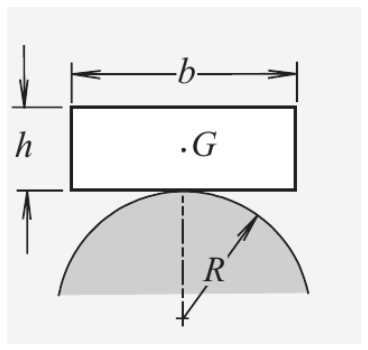
Worked Solution [ Click to Expand ]
Reference Frames, Bases and Degrees of Freedom
- Physical system: a homogeneous box $b$ of mass $m$, width $b$ and height $h$, resting on the fixed semicylindrical surface of radius $R$ and rolling on it without slipping, in the vertical plane of the figure. Gravity acts downwards. The box is a prism; its depth $c$ normal to the paper is not given and cancels from every result.
- Fixed frame: $S_0\{O; \mathcal B_0\}$ with origin $O$ at the centre of the semicircular section (the foot of the radius $R$ in the figure), $\mathbf i$ horizontal to the right, $\mathbf j$ vertical upwards and $\mathbf k$ out of the paper (⊙). The cylinder is at rest, so $S_0$ is inertial.
- Body frame: $S_B\{G; \mathbf i_B, \mathbf j_B, \mathbf k\}$, with $\mathbf i_B$ parallel to the bottom face (along the width $b$, to the right in the initial position) and $\mathbf j_B$ normal to it, from the bottom face towards the top face.
- Points: $T$ is the top of the cylinder (the initial contact point), $M$ is the body point at the middle of the bottom face (the body point that touches $T$ at the start) and $C$ is the current contact point.
- Coordinate: the angle $\varphi$ from $\mathbf i$ to $\mathbf i_B$, positive counterclockwise about $\mathbf k$ by the right-hand rule. It is the angle by which the box has turned away from the horizontal.
- Degrees of freedom: a rigid body in plane motion has three coordinates (two for $G$ and one angle). Keeping contact with the cylinder (no penetration, Notes.pdf, Eq. 13.1) removes one; rolling without slipping removes another, and in a plane problem this constraint can be integrated into a relation among the coordinates (Notes.pdf, Eq. 13.4). One degree of freedom remains: $\varphi$.
- Unknowns of the dynamics: $\varphi(t)$ and the two components of the contact force at $C$, the normal reaction $N$ and the friction force $F$ (unknown, because the box does not slip). Three scalar equations are available: two components of the force equation and the component along $\mathbf k$ of the moment equation.
| Datum | Symbol | SI unit |
|---|---|---|
| Mass of the box, homogeneous | $m$ | kg |
| Width and height of the box | $b$, $h$ | m |
| Radius of the fixed cylinder | $R$ | m |
| Gravity | $g$, along $-\mathbf j$ | m/s$^2$ |
| Initial position | bottom face horizontal, $M$ on $T$, $G$ above $O$ | - |
| Contact | rolling without slipping, one contact point | - |
Change of Basis, Position Vectors and Constraint Kinematics
View of the plane of motion with $\mathbf k$ out of the paper (⊙), $\mathbf i$ to the right and $\mathbf j$ up; a positive $\varphi$ turns counterclockwise. Right triangle of $\mathbf i_B$: hypotenuse the unit vector $\mathbf i_B$, adjacent leg along $\mathbf i$ (cosine), opposite leg along $\mathbf j$ (sine). Right triangle of $\mathbf j_B$: hypotenuse $\mathbf j_B$, adjacent leg along $\mathbf j$ (cosine), opposite leg along $\mathbf i$ (sine); the tip of $\mathbf j$, turned counterclockwise about $\mathbf k$ pointing out of the paper, moves towards negative $\mathbf i$, hence the minus sign.
Units: the matrix is dimensionless; the angular velocity in $[\mathrm{T^{-1}}]$
Meaning: for a positive angle the box has turned counterclockwise: its left end has gone down and its right end up.
At the contact the two bodies share the normal. The normal to the flat bottom face is $\mathbf j_B$; the normal to the cylinder at $C$ is the unit vector along $OC$. So $OC$ is parallel to $\mathbf j_B$ and the radius $OC$ makes the angle $\varphi$ with the vertical. Right triangle with hypotenuse $OC$ of length $R$: the vertical leg is adjacent to the angle $\varphi$ at $O$, the horizontal leg is opposite to it and points to the left (towards negative $\mathbf i$) for a positive angle.
Units: $[\mathrm L]$
Meaning: when the box tilts counterclockwise the contact point runs to the left along the cylinder, by the same angle as the box.
On the cylinder the contact point has moved from $T$ to $C$ along an arc of radius $R$ and angle $\varphi$. On the box it has moved from $M$ along the straight bottom face. The tilt lowers the left half of the box onto the cylinder, so the contact moves towards the left end of the face, along minus $\mathbf i_B$ (the next box checks this sign with the velocity field).
Units: $[\mathrm L] = [\mathrm L][1]$, the angle is dimensionless
Meaning: the middle of the bottom face sits at the distance $R\varphi$ from the contact point, measured along the face; the contact stays on the face while that distance is smaller than $b/2$.
Units: $[\mathrm{L\,T^{-1}}]$
Meaning: the body point of the box at the contact has the velocity of the fixed cylinder there, zero, which is Eq. 13.5. With the opposite sign of the segment from $M$ to $C$ the result would be $2R\varphi\dot\varphi\,\mathbf j_B$ plus a tangential term, a slipping contact; this confirms the choice of the previous box.
The centre of mass is at the centre of the box (Center of Mass section), at the height $h/2$ above $M$ along $\mathbf j_B$.
Units: $[\mathrm{L\,T^{-1}}]$ and $[\mathrm{L\,T^{-2}}]$ in every term
Meaning: the velocity of $G$ is the rotation about the contact point at rest: $\boldsymbol\omega_{B0}\times\mathbf r_C^G$ with $\mathbf r_C^G = R\varphi\,\mathbf i_B + \tfrac h2\,\mathbf j_B$ gives the same two components.
Center of Mass and Inertia Tensor
Coordinates $x_B, y_B, z_B$ along $\mathbf i_B, \mathbf j_B, \mathbf k$ from the centre of the box; the box occupies $|x_B| \le b/2$, $|y_B| \le h/2$, $|z_B| \le c/2$. Homogeneous: $dm = \rho\,dx_B\,dy_B\,dz_B$ with $\rho$ the density.
Units: $\rho$ in kg/m$^3$; the moment of inertia in $[\mathrm M][\mathrm L^2]$
Meaning: the depth $c$ cancels, so the box behaves as a rectangular plate. The two other moments of the tensor depend on $c$ but are not needed: with zero products of inertia with $\mathbf k$ the angular momentum of a plane rotation about $\mathbf k$ only involves $I_G$.
Linear Momentum, Angular Momentum and Kinetic Energy
Units: kg m/s, kg m$^2$/s and J
Meaning: the bracket of the kinetic energy times $m$ is the moment of inertia about the contact point (Steiner from $G$ with the arm of length squared $h^2/4 + R^2\varphi^2$); it grows as the box rolls away from the top.
Free-Body Diagram and Equations of Motion
The forces on the box, in the inertial frame (no inertia forces):
| Force | Point of application | Expression | Kind |
|---|---|---|---|
| Weight | $G$ | $-mg\,\mathbf j = -mg\left(\sin\varphi\,\mathbf i_B + \cos\varphi\,\mathbf j_B\right)$ | applied |
| Normal reaction | $C$ | $N\,\mathbf j_B$, $N$ unknown (unilateral: positive while in contact) | constraint |
| Friction | $C$ | $F\,\mathbf i_B$, $F$ unknown (no slip: static friction) | constraint |
Units: $[\mathrm M][\mathrm{L\,T^{-2}}]$, N, in every term
Meaning: at rest in the initial position the contact force is the vertical reaction $N$ equal to the weight; once the box moves, friction is needed to keep the contact point at rest.
The pole is $G$: the extra term of Eq. 12.13 is the product of the velocity of $G$ with itself, zero, and the weight has no arm. The arm of the contact force goes from $G$ to $C$.
Units: $[\mathrm{M\,L^2}][\mathrm{T^{-2}}]$ on the left; $[\mathrm L][\mathrm{M\,L\,T^{-2}}]$ on the right, N m
Meaning: the friction force, applied $h/2$ below $G$, and the normal reaction, applied $R\varphi$ to the side of $G$, are the only torques about the centre of mass.
Units: $[\mathrm L^2][\mathrm{T^{-2}}]$ in every term (m$^2$/s$^2$)
Meaning: a single second-order differential equation for the single degree of freedom. The gravity term contains the restoring part $gR\varphi\cos\varphi$, due to the shift of the contact point under $G$, and the overturning part $-g\tfrac h2\sin\varphi$, due to the height of $G$ above the face.
Answers and Checks
| Asked | Answer |
|---|---|
| Differential equation of motion of $\varphi$ | $\left(\tfrac{b^2}{12} + \tfrac{h^2}{3} + R^2\varphi^2\right)\ddot\varphi + R^2\varphi\dot\varphi^2 + g\left(R\varphi\cos\varphi - \tfrac h2\sin\varphi\right) = 0$ |
| Contact forces (by-product) | $F = mg\sin\varphi - m\left(\tfrac h2\ddot\varphi + R\varphi\dot\varphi^2\right)$ along $\mathbf i_B$; $N = mg\cos\varphi + m\left(R\varphi\ddot\varphi + (R - \tfrac h2)\dot\varphi^2\right)$ along $\mathbf j_B$ |
| Validity | the contact stays on the bottom face while $R\lvert\varphi\rvert \lt b/2$; $N \gt 0$ and enough friction |
Problems.pdf prints no answer for this problem (see Problem Set - Rigid Body Official Key), so the equation is checked with the energy integral and with limiting cases.
Units: $[\mathrm{L^2\,T^{-2}}]$ (J/kg) in every term
Meaning: a first integral of the equation of motion, obtained without the contact forces; its time derivative reproduces the bracket of the Newtonian equation term by term.
Units: $[\mathrm{L\,T^{-2}}][\mathrm L]/[\mathrm L^2] = [\mathrm{T^{-2}}]$, so the frequency is in rad/s
Meaning: the height of $G$ has a minimum at the top position, so the box rocks back, when the height $h/2$ of $G$ above the contact is smaller than the radius $R$ of the cylinder; if $G$ is higher than that, its height has a maximum there and the box falls off.
Limiting cases and consistency:
- Knife edge. For a vanishing radius the equation becomes the one of an inverted pendulum pivoting about $M$: the coefficient of the angular acceleration is the moment of inertia about $M$ divided by the mass, and the only torque is the overturning one of the weight; the top position is then unstable, as expected.
- Thin plank. For a vanishing height the overturning term disappears and the box is stable on any cylinder: the contact point moves under the lowered side, which leaves $G$ on the raised side, so the weight always pulls it back.
- Contact force at rest. At the initial position with zero velocity the friction is zero and the normal reaction equals the weight.
- Dimensions. Every term of the equation of motion is in m$^2$/s$^2$; the frequency is in rad/s.
Interactive geometry simulator: it needs JavaScript. The figures above show the same geometry.
A heavy homogeneous sheet is in the form of a disc that has a circular hole with diameter equal to the disc radius $R$, as shown in the figure. The mass of the sheet is $m$. The sheet is in contact with a horizontal rough straight line with friction coefficient $\mu$. Initially, the vector from the disk geometrical center $O$ to the center of the hole is in the horizontal direction, as shown in the figure. The initial angular velocity of the sheet is $\omega$ and the initial velocity of $O$ is $\omega R$. In the subsequent motion, the sheet can roll with or without slip or even can lose contact with the line (assuming unilateral constraint).
-
(a)
Determine the position of the center of mass.
-
(b)
Determine the moment of inertia about $O$.
-
(c)
Determine the moment of inertia about the center of mass.
-
(d)
Determine the initial velocity of the disk point that is in contact with the line.
-
(e)
Reduce the motion to quadratures (i.e., integrals) for $\mu = 0$.
-
(f)
Reduce the motion to quadratures for $\mu \to \infty$.
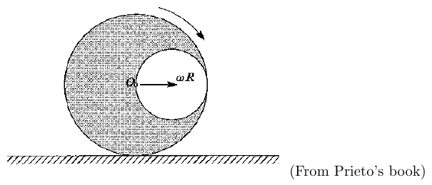
(From Prieto's book)
Worked Solution [ Click to Expand ]
Reference Frames, Bases and Degrees of Freedom
- Physical system: a homogeneous flat sheet $B$ of mass $m$: a disc of radius $R$ and centre $O$ with a circular hole of diameter $R$. Read from the figure: the hole is tangent to the rim from inside, so its centre $O_h$ is at the distance $R/2$ from $O$. The sheet moves in its own vertical plane on a horizontal rough line with friction coefficient $\mu$; the contact is unilateral. Gravity acts downwards.
- Fixed frame: $S_0\{Q; \mathcal B_0\}$, with origin $Q$ at the point of the line touched at the initial instant, $\mathbf i$ along the line to the right (the sense of the initial velocity of $O$), $\mathbf j$ vertical upwards and $\mathbf k$ out of the paper (⊙). It is inertial.
- Body frame: $S_B\{O; \mathbf i_B, \mathbf j_B, \mathbf k\}$, with $\mathbf i_B$ from $O$ towards the centre of the hole and $\mathbf j_B$ completing a right-handed basis in the plane.
- Coordinates: the abscissa $x$ and the height $y_O$ of $O$, and the angle $\theta$ from $\mathbf i$ to $\mathbf i_B$, positive counterclockwise about $\mathbf k$ (right-hand rule).
- Initial conditions: $\theta$ is zero (the hole to the right of $O$, as in the figure), $x$ is zero, $y_O$ is $R$, the velocity of $O$ is $\omega R$ along $\mathbf i$, and the sheet turns clockwise (read from the curved arrow of the figure). A clockwise rotation has its angular velocity into the paper (⊗), along minus $\mathbf k$, so the initial rate of $\theta$ is minus $\omega$.
- Degrees of freedom: a rigid body in plane motion has three coordinates. While the contact holds (normal reaction positive), no penetration fixes the height of $O$: two remain, $x$ and $\theta$ (case $\mu$ equal to zero, free slip). Rolling without slipping adds one more relation and leaves one, $\theta$ (case $\mu$ tending to infinity).
- Unknowns of the dynamics: the coordinates and the contact force: normal reaction $N$ and friction $F$ (zero for $\mu$ equal to zero, unknown for rolling without slip).
| Datum | Symbol | SI unit |
|---|---|---|
| Mass of the sheet (with the hole) | $m$ | kg |
| Radius of the disc | $R$ | m |
| Diameter of the hole; distance from $O$ to its centre | $R$; $R/2$ (read from the figure) | m |
| Friction coefficient | $\mu$ (cases 0 and infinite) | - |
| Initial velocity of $O$ | $\omega R\,\mathbf i$ | m/s |
| Initial angular velocity | $-\omega\,\mathbf k$ (clockwise) | rad/s |
| Gravity | $g$, along $-\mathbf j$ | m/s$^2$ |
Change of Basis, Position Vectors and Constraint Kinematics
View with $\mathbf k$ out of the paper (⊙), $\mathbf i$ to the right, $\mathbf j$ up; positive $\theta$ is counterclockwise. Triangle of $\mathbf i_B$: hypotenuse 1, adjacent leg along $\mathbf i$ (cosine), opposite leg along $\mathbf j$ (sine). Triangle of $\mathbf j_B$: hypotenuse 1, adjacent leg along $\mathbf j$ (cosine), opposite leg along minus $\mathbf i$ (sine), because the tip of $\mathbf j$ turned counterclockwise about the outward $\mathbf k$ moves to the left.
Units: the matrix is dimensionless; the angular velocity in $[\mathrm{T^{-1}}]$
Meaning: with the clockwise initial spin the angle starts to decrease: the hole first moves downwards.
The rim is a circle of centre $O$ (the hole touches it at a single point), so the contact point $C$ is always straight below $O$, at the distance $R$.
Units: $[\mathrm{L\,T^{-1}}]$; the height in $[\mathrm L]$
Meaning: the bracket is the slip velocity of the sheet on the line; it is zero when the sheet rolls without slipping.
Units: $[\mathrm{L\,T^{-1}}]$
Meaning: the sheet is launched rolling without slip: the contact point is at rest at the initial instant, whatever the friction coefficient.
The centre of mass is on the line of $\mathbf i_B$, at the distance $R/6$ from $O$ on the side opposite to the hole (part (a), next section). Right triangle with hypotenuse $OG$ of length $R/6$ along minus $\mathbf i_B$: the horizontal leg $\tfrac R6\cos\theta$ (adjacent to $\theta$) points to the left and the vertical leg $\tfrac R6\sin\theta$ (opposite to $\theta$) points downwards.
Units: $[\mathrm{L\,T^{-1}}]$ and $[\mathrm{L\,T^{-2}}]$
Meaning: the centre of mass circles around $O$ at the radius $R/6$ while $O$ translates; the same velocity follows from the velocity field, $\dot x\,\mathbf i + \dot\theta\,\mathbf k\times(-\tfrac R6\,\mathbf i_B)$.
Center of Mass and Inertia Tensor
Surface density $\sigma$ (homogeneous sheet). The full disc $D$ and the hole $H$ are each symmetric about their own centre, so each has its centre of mass at its centre.
Units: $\sigma$ in kg/m$^2$; the distance in $[\mathrm L]$
Meaning: removing material on one side moves the centre of mass to the other side; the line $OO_h$ is an axis of symmetry, so $G$ lies on it.
Polar coordinates $(r, \alpha)$ about the centre of each circle; area element $r\,dr\,d\alpha$, so $dm = \sigma\,r\,dr\,d\alpha$; the squared distance to the normal axis through the centre is $r^2$.
Units: $[\mathrm M][\mathrm L^2]$
Meaning: a full disc of mass $m$ would have $\tfrac12 mR^2$; the sheet has slightly more because the hole removes mass near the centre and the remaining mass is, on average, farther from $O$.
Units: $[\mathrm M][\mathrm L^2]$
Meaning: with zero products of inertia with the normal axis, the angular momentum about $G$ of the plane rotation is $I_G\dot\theta\,\mathbf k$.
Linear Momentum, Angular Momentum and Kinetic Energy
Units: J in every term ($[\mathrm{M\,L^2\,T^{-2}}]$)
Meaning: the coefficient $\tfrac{13}{24}$ is $I_O/(mR^2)$: written from $O$, the energy is the translation of $O$, the rotation about $O$ and the cross term due to the offset of $G$.
Free-Body Diagram and Equations of Motion
The forces on the sheet while it touches the line, in the inertial frame:
| Force | Point of application | Expression | Kind |
|---|---|---|---|
| Weight | $G$ | $-mg\,\mathbf j$ | applied |
| Normal reaction | $C$ | $N\,\mathbf j$, with $N \ge 0$ (unilateral) | constraint |
| Friction | $C$ | $F\,\mathbf i$: zero for $\mu$ equal to zero; unknown for rolling without slip | constraint |
The arm of the contact force from $G$: the contact point is $x\,\mathbf i$ (on the line, below $O$).
Units: N for the force equations; N m for the moment equation
Meaning: three equations for the two coordinates and the two contact forces, completed by the contact law: zero friction, or zero slip velocity.
Units: $[\mathrm{M\,L\,T^{-2}}][\mathrm{L\,T^{-1}}]$, W
Meaning: the normal reaction never works; friction works only while the sheet slips. In both limiting cases of the statement the power is zero: with no friction the force is zero, with no slip the velocity is zero. The weight is conservative, so the mechanical energy is conserved in both cases (Eq. 12.33).
Part (e): quadratures for mu = 0
Units: $[\mathrm{L\,T^{-1}}]$ and $[\mathrm L]$ in every term
Meaning: with no friction the centre of mass keeps its initial horizontal velocity $\omega R$; $O$ oscillates about that uniform motion as $G$ turns around it.
Units: $[\mathrm{L^2\,T^{-2}}]$ in every term
Meaning: the second first integral. Two first integrals for two degrees of freedom reduce the motion to quadratures.
Units: the integrand is $\sqrt{[\mathrm L]/[\mathrm{L\,T^{-2}}]} = [\mathrm T]$ per radian, so $t$ is in s
Meaning: the quadrature gives $t(\theta)$, its inverse gives $\theta(t)$ and the momentum integral gives $x(t)$. It holds while the root stays real and the contact holds. If $39\omega^2R$ is smaller than $24g$ the rate vanishes where the sine of $\theta$ equals $-39\omega^2R/(24g)$ and the sheet rocks back (the integral is then continued with the other sign of the root).
Part (f): quadratures for mu tending to infinity
With an unbounded friction coefficient the friction force can always reach the value that keeps the contact point at rest, and part (d) shows that this point starts at rest. So the sheet rolls without slipping for as long as it touches the line.
Units: $[\mathrm L]$
Meaning: a clockwise rotation (decreasing angle) makes $O$ advance to the right by the arc unrolled on the line.
Units: $[\mathrm{L\,T^{-2}}]$ in every term of the first integral; $t$ in s
Meaning: one degree of freedom, one first integral, one quadrature. The coefficient $37 - 8\sin\theta$ is $24/(mR^2)$ times the moment of inertia about the contact point: $\tfrac{37}{72} mR^2$ plus $m$ times the squared distance from $G$ to $C$.
Units: $[\mathrm{L\,T^{-2}}]$ in every term
Meaning: the moment equation about $G$ is the same equation of motion times $mR/24$, so the energy integral is exactly its first integral (the expansion was also checked symbolically).
Answers and Checks
| Asked | Answer |
|---|---|
| (a) Centre of mass | on the line from the centre of the hole through $O$, at $R/6$ from $O$ on the side opposite to the hole: $\mathbf r_O^G = -\tfrac R6\,\mathbf i_B$ |
| (b) Moment of inertia about $O$ (normal axis) | $I_O = \tfrac{13}{24}mR^2$ |
| (c) Moment of inertia about $G$ (normal axis) | $I_G = \tfrac{37}{72}mR^2$ |
| (d) Initial velocity of the contact point | $\mathbf 0$: the sheet starts rolling without slip |
| (e) Quadratures, no friction | $6\dot x + R\dot\theta\sin\theta = 6\omega R$; $24\dot x^2 + 13\dot\theta^2R^2 + 8\dot x\dot\theta R\sin\theta - 8gR\sin\theta = 37\omega^2R^2$; hence $\dot\theta^2 R(39 - 2\sin^2\theta) = 39\omega^2R + 24g\sin\theta$, $t = \int_\theta^0\sqrt{R(39 - 2\sin^2u)/(39\omega^2R + 24g\sin u)}\,du$, $x = \omega Rt - \tfrac R6(1 - \cos\theta)$ |
| (f) Quadratures, infinite friction | $x = -R\theta$; $\dot\theta^2R(37 - 8\sin\theta) - 8g\sin\theta = 37\omega^2R$; $t = \int_\theta^0\sqrt{R(37 - 8\sin u)/(37\omega^2R + 8g\sin u)}\,du$ |
| Validity of both | contact while $N = m\left(g - \tfrac R6(\cos\theta\,\ddot\theta - \sin\theta\,\dot\theta^2)\right) \gt 0$ |
Check against the official key: the key (Problems.pdf, p. 79) prints, for the frictionless case, the momentum integral and the energy integral, and for the case of infinite friction the single energy integral of rolling without slip. The three expressions obtained in the boxes of parts (e) and (f) are identical term by term, with the same coordinates: $x$ the abscissa of $O$ and $\theta$ the counterclockwise angle of the line from $O$ to the centre of the hole, zero at the start. Match. The key prints no value for parts (a) to (d); the quadratures written here are the explicit next step of its first integrals.
With the hole straight below $O$ the sine of $\theta$ is minus one and its cosine is zero, so the angular acceleration drops out of the normal reaction.
Units: $[\mathrm{T^{-2}}]$ on both sides of each inequality
Meaning: when the heavy side passes over the top fast enough, the centripetal acceleration of $G$ exceeds gravity and the sheet jumps off the line; the unilateral contact must therefore be checked along the motion.
Limiting cases and consistency:
- Initial instant. At the start the sine of $\theta$ is zero and both reduced integrals give a squared rate equal to the square of $\omega$, the initial data.
- No hole. For a full disc the centre of mass is at $O$, the terms in the sine of $\theta$ disappear (they come from the offset of $G$) and the rolling disc keeps a constant angular velocity, as a homogeneous disc rolling on a horizontal line must.
- Slow launch. If the launch is slow (the numerator of the reduced integral can vanish), the rate of $\theta$ becomes zero before the heavy side reaches the top and the sheet rocks back: it cannot make a full turn.
- Dimensions. Every term of the first integrals is in m$^2$/s$^2$ or m/s$^2$ after division by $R$; the quadratures give seconds.
Interactive geometry simulator: it needs JavaScript. The figures above show the same geometry.
A thin 2D semi-circular arc of mass $M$ and radius $R_0$ rests on a flat plane. It is displaced through an angle $\theta_0$ and held at rest. It maintains rolling contact with the plane. (i.e. it rolls without slipping.). The location of the center of mass for the arc is $R_G = 2R_0/\pi$.
- What is the moment of inertia of the semicircular arc about its center, $I_C$ ?
- Using the parallel axis theorem, find the moment of inertia about the center of mass, $I_G$.
- What is the displacement of the point of contact, $X_C$? As it rolls, the center of mass displaces in both the horizontal and vertical directions.
- What is the vertical displacement of the center of mass, $y_{CM}$ ?
- What is the horizontal displacement of the center of mass $x_{CM}$ ?
- What is the potential energy in the displaced $\theta = \theta_0$ position with the arc at rest? Now the arc is released and returns to and past $\theta = 0$ in an oscillatory motion.
- What is the total kinetic energy in both translation and rotation as the arc passes through $\theta = 0$.
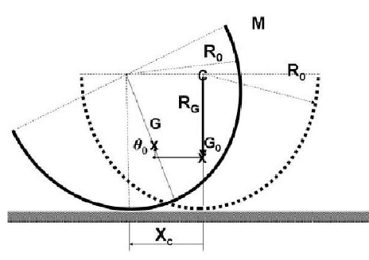
Worked Solution [ Click to Expand ]
Reference Frames, Bases and Degrees of Freedom
- Physical system: a thin homogeneous semicircular arc (a wire) of mass $M$, radius $R_0$ and centre $C$, standing on a horizontal plane with its convex side down, rolling on the plane without slipping, in its own vertical plane. Gravity acts downwards. It is turned by $\theta_0$, held at rest and released.
- Fixed frame: $S_0\{Q; \mathcal B_0\}$, with origin $Q$ at the point of the plane touched in the rest position (straight below $C$ when the diameter is horizontal), $\mathbf i$ horizontal to the right, $\mathbf j$ vertical upwards, $\mathbf k$ out of the paper (⊙). It is inertial.
- Body frame: $S_B\{C; \mathbf i_B, \mathbf j_B, \mathbf k\}$, with $\mathbf j_B$ along the axis of symmetry of the arc, from its middle point towards $C$, and $\mathbf i_B$ along the diameter that joins the two ends of the arc.
- Coordinates: the abscissa $x_C$ of the centre $C$ (its height is fixed by the contact) and the angle $\theta$ from $\mathbf i$ to $\mathbf i_B$, positive counterclockwise about $\mathbf k$. Read from the figure: the displaced arc has rolled to the left, which with this convention is a positive angle.
- Points: $G$ is the centre of mass, $G_0$ its position in the rest configuration, $P$ the contact point with the plane.
- Degrees of freedom: three coordinates in plane motion; no penetration fixes the height of $C$; rolling without slipping links $x_C$ and $\theta$. One degree of freedom remains: $\theta$.
| Datum | Symbol | SI unit |
|---|---|---|
| Mass of the arc, homogeneous | $M$ | kg |
| Radius | $R_0$ | m |
| Distance from $C$ to $G$ (given) | $R_G = 2R_0/\pi$ | m |
| Initial angle, released from rest | $\theta_0$ (with $\lvert\theta_0\rvert \lt \pi/2$) | rad |
| Gravity | $g$, along $-\mathbf j$ | m/s$^2$ |
Change of Basis, Position Vectors and Constraint Kinematics
View with $\mathbf k$ out of the paper (⊙), $\mathbf i$ to the right, $\mathbf j$ up. Triangle of $\mathbf i_B$: hypotenuse 1, adjacent leg along $\mathbf i$ (cosine), opposite leg along $\mathbf j$ (sine). Triangle of $\mathbf j_B$: hypotenuse 1, adjacent leg along $\mathbf j$ (cosine), opposite leg along minus $\mathbf i$ (sine): turning counterclockwise about the outward $\mathbf k$ carries the tip of $\mathbf j$ to the left.
Units: the matrix is dimensionless; the angular velocity in $[\mathrm{T^{-1}}]$
Meaning: in the rest position the diameter is horizontal and the arc hangs below it; a positive angle tilts the arc counterclockwise.
The plane is tangent to the circle of the arc at $P$, so the radius $CP$ is vertical and $C$ stays at the height $R_0$ (this holds while $P$ belongs to the arc, that is while the tilt is below a right angle).
Units: $[\mathrm L] = [\mathrm L][1]$
Meaning: the contact point is always straight below $C$, so it moves with $C$; the distance it travels along the plane equals the arc of the semicircle unrolled on it, $R_0\theta_0$ (Eq. 13.3: equal arcs).
$G$ is on the axis of symmetry at the distance $R_G$ below $C$ in the body (next section): along minus $\mathbf j_B$. Right triangle with hypotenuse $CG$ of length $R_G$, tilted by $\theta$ from the downward vertical: the vertical leg $R_G\cos\theta$ (adjacent) points down, the horizontal leg $R_G\sin\theta$ (opposite) points to the right.
Units: $[\mathrm L]$ and $[\mathrm{L^2\,T^{-2}}]$
Meaning: the centre of mass rises by $R_G(1 - \cos\theta)$ and moves horizontally by the rolling $-R_0\theta$ of $C$ corrected by $R_G\sin\theta$ in the opposite sense; since $R_0\theta$ exceeds $R_G\sin\theta$, it moves in the sense of rolling.
Center of Mass and Inertia Tensor
Body coordinates from $C$: a point of the arc is $R_0(\cos\alpha\,\mathbf i_B - \sin\alpha\,\mathbf j_B)$ with $\alpha$ from 0 to $\pi$ (the arc below the diameter). Arc element $ds = R_0\,d\alpha$, linear density $\lambda$.
Units: $\lambda$ in kg/m; the distance in $[\mathrm L]$
Meaning: the value given in the statement is confirmed: $G$ is on the axis of symmetry at about $0.637R_0$ from the centre, off the wire itself.
Every element of the arc is at the distance $R_0$ from the axis through $C$ normal to the plane.
Units: $[\mathrm M][\mathrm L^2]$
Meaning: a thin arc of any angle has all its mass at the radius $R_0$, so its moment about the centre is the mass times the squared radius.
Units: $[\mathrm M][\mathrm L^2]$
Meaning: smaller than the moment about $C$, as it must be for the axis through the centre of mass.
Linear Momentum, Angular Momentum and Kinetic Energy
Units: J in both
Meaning: $2MR_0(R_0 - R_G\cos\theta)$ is the moment of inertia about the contact point $P$, the instantaneous centre of rotation, since the squared distance from $P$ to $G$ is $R_0^2 - 2R_0R_G\cos\theta + R_G^2$.
Free-Body Diagram and Equations of Motion
| Force | Point of application | Expression | Kind |
|---|---|---|---|
| Weight | $G$ | $-Mg\,\mathbf j$ | applied, conservative |
| Normal reaction | $P$ | $N\,\mathbf j$ | constraint |
| Friction | $P$ | $F\,\mathbf i$, unknown (no slip) | constraint |
Units: $[\mathrm{L^2\,T^{-2}}]$ on both sides
Meaning: a first integral: the arc oscillates between $-\theta_0$ and $\theta_0$, where the rate vanishes.
Units: $[\mathrm{L^2\,T^{-2}}]$ in every term
Meaning: the weight, applied at $G$ which is displaced sideways from the contact point, pulls the arc back towards the rest position.
Displacements and energies asked in the statement
Units: m and J
Meaning: lifting $G$ stores potential energy; it is all returned as kinetic energy when the arc passes through the rest position.
Units: J in every term
Meaning: about 18 percent of the energy is translation of $G$ and 82 percent rotation about $G$ at the lowest position; at that instant $G$ moves horizontally, straight above the contact point.
Answers and Checks
| Asked | Answer |
|---|---|
| $I_C$ | $MR_0^2$ |
| $I_G$ | $MR_0^2(1 - 4/\pi^2) \approx 0.595\,MR_0^2$ |
| $X_C$ | $R_0\theta_0$, in the sense of rolling |
| $y_{CM}$ | $\tfrac{2R_0}{\pi}(1 - \cos\theta_0)$, upwards |
| $x_{CM}$ | $R_0\theta_0 - \tfrac{2R_0}{\pi}\sin\theta_0$, in the sense of rolling |
| Potential energy at $\theta_0$ (zero at the rest position) | $\tfrac2\pi MgR_0(1 - \cos\theta_0)$ |
| Kinetic energy at $\theta = 0$ | total $\tfrac2\pi MgR_0(1 - \cos\theta_0)$; translation $\tfrac{\pi - 2}{\pi^2}MgR_0(1 - \cos\theta_0)$; rotation about $G$ $\tfrac{\pi + 2}{\pi^2}MgR_0(1 - \cos\theta_0)$ |
| Equation of motion (by-product) | $2R_0(R_0 - R_G\cos\theta)\ddot\theta + R_0R_G\sin\theta\,\dot\theta^2 + gR_G\sin\theta = 0$ |
Problems.pdf prints no answer for this problem (see Problem Set - Rigid Body Official Key), so the results are checked with limiting cases.
Units: $[\mathrm{L\,T^{-2}}]/[\mathrm L] = [\mathrm{T^{-2}}]$
Meaning: the arc rocks like a pendulum of length $(\pi - 2)R_0 \approx 1.14R_0$; small amplitudes give the same period whatever $\theta_0$.
Limiting cases and consistency:
- Energy balance. The translational and rotational parts add up to the potential energy released, with no loss: the contact force does no work because its body point is at rest.
- Zero amplitude. For a vanishing $\theta_0$ every displacement and every energy vanishes; to first order the rise of $G$ is quadratic in the amplitude while the horizontal shift is linear, $(R_0 - R_G)\theta_0$, as for a body rolling about its lowest point.
- Range. The results hold while the contact point stays on the arc, that is for an amplitude below a right angle; at a right angle an end of the arc touches the plane.
- Dimensions. Lengths in m, energies in J, frequency in rad/s.
Interactive geometry simulator: it needs JavaScript. The figures above show the same geometry.
An empty homegeneous [sic] semi-sphere of mass $m$, radius $a$ and negligible thickness is moving on a smooth horizontal plane. An auxiliar [sic] reference frame $Gxyz$ can be defined in the following way: the $Gz$ axis is the axis of revolution of the semi-sphere and is oriented towards the edge of the semi-sphere; the $Gx$ is always parallel to the plane $O_1x_1y_1$ and perpendicular to $Gz$; and finally $Gy$ is orthogonal to $Gz$ and $Gx$, contituting [sic] a right-handed reference system. The position of the sphere is determined by five parameters: the coordinates $\xi$, $\eta$ of the projection of $G$ on the plane $O_1x_1y_1$; the angle $\psi$ between $Gx$ and $O_1x_1$; the angle $\theta$ between $Gz$ and $O_1z_1$; and the angle $\varphi$ of the rotation of the semi-sphere about the $Gz$ axis.
-
(a)
Compute the inertia tensor of the semi-sphere with respect to its center $O$ and a set of axis parallel to $Gxyz$. It can be deduced from symmetry considerations, knowing that the moment of inertia of a spherical shell of radius $R$ and mass $M$ with respect an axis that passes through its center is $I = 2MR^2/3$.
-
(b)
Determine the position of the center of mass of the semi-sphere.
-
(c)
Determine the inertia tensor at $G$
-
(d)
Determine the angular velocity of the semi-sphere expressed as a function of $\psi,\theta,\varphi$ and its time derivatives.
-
(e)
Determine the kinetic energy of the semi-sphere as a function of the parameters that determine its position and their time derivatives.
-
(f)
Write down and integrate the linear momentum equation (a) with respect to the axis $O_1x_1$ and $O_1y_1$
-
(g)
Write down and compute the first integral (b) of the angular momentum equation with respect to the $Gz$ axis.
-
(h)
Write down and compute the first integral (c) of the angular momentum equation with respect to the vertical along $G$.
-
(i)
Write down and get a first integral (d) from the energy equation.
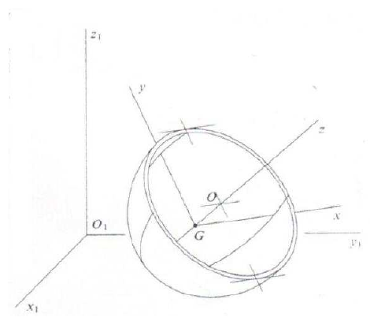
Worked Solution [ Click to Expand ]
Reference Frames, Bases and Degrees of Freedom
- Physical system: a thin homogeneous hemispherical shell $b$ of mass $m$ and radius $a$, with centre $O$ (the centre of the sphere, in the plane of the rim), resting with its curved side on a smooth horizontal plane. Gravity acts downwards. The contact is a single point $P$ and, being smooth, transmits only a normal force.
- Fixed frame: $S_0\{O_1; \mathbf i_1, \mathbf j_1, \mathbf k_1\}$, the frame $O_1x_1y_1z_1$ of the statement: $O_1$ on the plane, $\mathbf k_1$ vertical upwards. It is inertial.
- Intermediate frame: $S_1\{G; \mathbf i, \mathbf j', \mathbf k_1\}$, obtained by turning $\mathcal B_0$ by $\psi$ about $\mathbf k_1$; $\mathbf i$ is the horizontal axis $Gx$ of the statement.
- Auxiliary frame of the statement: $Gxyz$, that is $S_2\{G; \mathbf i, \mathbf j, \mathbf k\}$, obtained by turning $S_1$ by $\theta$ about $\mathbf i$: $\mathbf k$ is the axis of revolution, oriented from the pole towards the rim, and $\mathbf i$ stays horizontal and normal to it (it is the line of nodes). This frame is not attached to the body: it does not follow the spin.
- Body frame: $S_b\{G; \mathbf i_b, \mathbf j_b, \mathbf k\}$, obtained by turning $S_2$ by $\varphi$ about $\mathbf k$.
- Coordinates: the five parameters of the statement: $\xi$, $\eta$ (horizontal coordinates of $G$), $\psi$ (precession, from $\mathbf i_1$ to $\mathbf i$), $\theta$ (nutation, from $\mathbf k_1$ to $\mathbf k$) and $\varphi$ (spin about $\mathbf k$). They are the 3-1-3 Euler angles of the course.
- Degrees of freedom: a free rigid body has six coordinates; no penetration of the plane fixes the height of $G$ as a function of $\theta$, which leaves five. The plane is smooth, so there is no rolling condition and the five parameters are independent.
| Datum | Symbol | SI unit |
|---|---|---|
| Mass of the shell, homogeneous, negligible thickness | $m$ | kg |
| Radius | $a$ | m |
| Moment of inertia of a full spherical shell (mass $M$, radius $R$) about a diameter, given | $2MR^2/3$ | kg m$^2$ |
| Plane | horizontal, smooth | - |
| Gravity | $g$, along $-\mathbf k_1$ | m/s$^2$ |
Change of Basis, Position Vectors and Constraint Kinematics
View from above with $\mathbf k_1$ out of the paper (⊙), $\mathbf i_1$ to the right and $\mathbf j_1$ up; a positive $\psi$ turns counterclockwise. Triangle of $\mathbf i$: hypotenuse 1, adjacent leg along $\mathbf i_1$ (cosine), opposite leg along $\mathbf j_1$ (sine). Triangle of $\mathbf j'$: hypotenuse 1, adjacent leg along $\mathbf j_1$ (cosine), opposite leg along minus $\mathbf i_1$ (sine): the counterclockwise turn about the outward axis carries the tip of $\mathbf j_1$ to the left.
Units: dimensionless matrix; angular velocity in $[\mathrm{T^{-1}}]$
Meaning: $\psi$ is the angle between $Gx$ and $O_1x_1$, as the statement defines it; $\mathbf i$ is horizontal by construction.
View with $\mathbf i$ out of the paper (⊙), $\mathbf j'$ to the right and $\mathbf k_1$ up (right-handed, since the product of $\mathbf j'$ and $\mathbf k_1$ is $\mathbf i$). A positive $\theta$ turns counterclockwise. Triangle of $\mathbf j$: hypotenuse 1, adjacent leg along $\mathbf j'$ (cosine), opposite leg along $\mathbf k_1$ (sine). Triangle of $\mathbf k$: hypotenuse 1, adjacent leg along $\mathbf k_1$ (cosine), opposite leg along minus $\mathbf j'$ (sine): the tip of $\mathbf k_1$, turned counterclockwise about the outward $\mathbf i$, moves to the left.
Units: dimensionless; $[\mathrm{T^{-1}}]$
Meaning: $\theta$ is the angle between $Gz$ and $O_1z_1$; for zero nutation the axis of revolution is vertical, with the rim up.
View with $\mathbf k$ out of the paper (⊙), $\mathbf i$ to the right, $\mathbf j$ up; the triangles are those of the precession with $\varphi$ in place of $\psi$.
Units: dimensionless; $[\mathrm{T^{-1}}]$
Meaning: the spin turns the shell about its own axis of revolution; it changes neither $Gxyz$ nor the position of $G$.
Units: $[\mathrm{T^{-1}}]$ in every term
Meaning: written in $Gxyz$, the components do not depend on the spin angle; the third component, the total spin about the axis of revolution, is called $n$ below.
The lowest point of the sphere of centre $O$ is at the distance $a$ below $O$; it belongs to the shell (the curved side, from the pole to the rim) while the pole direction, minus $\mathbf k$, points downwards, that is while $\theta$ is below a right angle. In the vertical plane of $\mathbf j'$ and $\mathbf k_1$ (meridian section), the segment from $O$ to $G$ has length $a/2$ (part (b)) along minus $\mathbf k$; right triangle with that hypotenuse: the vertical leg $\tfrac a2\cos\theta$ (adjacent to $\theta$) points down and the horizontal leg $\tfrac a2\sin\theta$ (opposite) points along $\mathbf j'$.
Units: $[\mathrm L]$
Meaning: the height of $G$ depends only on the nutation: it is lowest, $a/2$, with the axis vertical and rises as the shell tilts.
Units: $[\mathrm{L\,T^{-1}}]$
Meaning: the body point at the contact has no vertical velocity (Eq. 13.1); it may slide horizontally, since the plane is smooth.
Center of Mass and Inertia Tensor
Spherical coordinates about $O$ in body axes: a point of the shell is $a(\sin\beta\cos\alpha\,\mathbf i_b + \sin\beta\sin\alpha\,\mathbf j_b - \cos\beta\,\mathbf k)$, with $\beta$ from 0 (the pole, at $-a\,\mathbf k$) to $\pi/2$ (the rim) and $\alpha$ from 0 to $2\pi$. Area element $a^2\sin\beta\,d\beta\,d\alpha$, surface density $\sigma$.
Units: $[\mathrm M][\mathrm L^2]$
Meaning: the result agrees with the symmetry argument suggested by the statement: a full shell of mass $2m$ has $\tfrac23(2m)a^2$ about any diameter, and a reflection in the plane of the rim maps each half onto the other without changing the distance of any point to a diameter in that plane or to the axis, so each half carries half of it.
Units: $[\mathrm L]$
Meaning: $G$ lies on the axis of revolution, halfway between the centre $O$ and the pole; the axis $Gz$ therefore points from $G$ towards $O$ and the rim, as the statement says.
The position of $G$ relative to $O$ is $(0, 0, -a/2)$ in axes parallel to $Gxyz$.
Units: $[\mathrm M][\mathrm L^2]$
Meaning: the shell is axisymmetric, so the tensor has the same constant components in the body axes and in $Gxyz$, although $Gxyz$ does not spin with the body; this is what makes $Gxyz$ convenient.
Linear Momentum, Angular Momentum and Kinetic Energy
Write $n$ for the third component of the angular velocity, the rate of $\psi$ times the cosine of $\theta$ plus the rate of $\varphi$.
Units: J in every term
Meaning: the energy depends on the angles only through $\theta$; neither $\psi$, nor $\varphi$, nor $\xi$, $\eta$ appear, which announces the first integrals below.
Free-Body Diagram and Equations of Motion
| Force | Point of application | Expression | Kind |
|---|---|---|---|
| Weight | $G$ | $-mg\,\mathbf k_1$ | applied, conservative |
| Normal reaction | $P$ | $N\,\mathbf k_1$ (smooth plane: no tangential part) | constraint |
Units: m; N
Meaning: first integral (a): the projection of $G$ on the plane moves in a straight line at constant speed, because a smooth plane exerts no horizontal force.
In $Gxyz$, the arm from $G$ to $P$ is $\tfrac a2\,\mathbf k - a(\sin\theta\,\mathbf j + \cos\theta\,\mathbf k)$ and the reaction is $N(\sin\theta\,\mathbf j + \cos\theta\,\mathbf k)$. The derivative of the angular momentum is taken in $Gxyz$, whose components of the tensor are constant, plus the angular velocity of that frame crossed with the angular momentum.
Units: N m for the moment equation; $[\mathrm{T^{-1}}]$ for $n$
Meaning: first integral (b): the reaction is vertical through the contact point, so its line passes through the centre $O$, which lies on the axis of revolution; a force whose line meets an axis has no moment about it. Because the axis $Gz$ itself turns, that alone is not enough: the gyroscopic term along it also vanishes, since the two transverse moments of inertia are equal (axial symmetry), and so the total spin about that axis is conserved.
Units: kg m$^2$/s
Meaning: first integral (c): the reaction is vertical and the weight acts at $G$, so neither has a moment about the vertical through $G$. Multiplying the $\mathbf j$ equation of the previous box by $\sin\theta$ gives exactly the time derivative of this expression, a consistency check between the two boxes.
Units: $[\mathrm{L^2\,T^{-2}}]$ in every term
Meaning: first integral (d). With the precession rate replaced from integral (c), it is an equation in $\theta$ and its rate alone, so the nutation is reduced to a quadrature; $\psi$ then follows from (c), $\varphi$ from (b) and $\xi$, $\eta$ from (a).
Answers and Checks
| Asked | Answer |
|---|---|
| (a) Inertia tensor about $O$, axes parallel to $Gxyz$ | $\tfrac23 ma^2\,[U]$ (isotropic) |
| (b) Centre of mass | on the axis, $\mathbf r_O^G = -\tfrac a2\,\mathbf k$ (halfway between $O$ and the pole); height $z_G = a - \tfrac a2\cos\theta$ |
| (c) Inertia tensor at $G$ | $\mathrm{diag}\left(\tfrac{5}{12}ma^2, \tfrac{5}{12}ma^2, \tfrac23 ma^2\right)$ in $Gxyz$ |
| (d) Angular velocity | $\dot\theta\,\mathbf i + \dot\psi\sin\theta\,\mathbf j + (\dot\psi\cos\theta + \dot\varphi)\,\mathbf k$ |
| (e) Kinetic energy | $\tfrac m2\left(\dot\xi^2 + \dot\eta^2 + \tfrac{a^2}{4}\sin^2\theta\,\dot\theta^2\right) + \tfrac{5ma^2}{24}\left(\dot\theta^2 + \dot\psi^2\sin^2\theta\right) + \tfrac{ma^2}{3}(\dot\psi\cos\theta + \dot\varphi)^2$ |
| (f) Linear momentum, integral (a) | $\ddot\xi = \ddot\eta = 0$: $\xi = \xi_0 + \dot\xi_0 t$, $\eta = \eta_0 + \dot\eta_0 t$; $N = m\left(g + \tfrac a2(\cos\theta\,\dot\theta^2 + \sin\theta\,\ddot\theta)\right)$ |
| (g) Integral (b), about $Gz$ | $\dot\psi\cos\theta + \dot\varphi = n_0$ |
| (h) Integral (c), about the vertical through $G$ | $5\dot\psi\sin^2\theta + 8n_0\cos\theta = 12K/(ma^2)$ |
| (i) Energy integral (d) | $\tfrac12\left(\tfrac{5}{12} + \tfrac14\sin^2\theta\right)a^2\dot\theta^2 + \tfrac{5a^2}{24}\dot\psi^2\sin^2\theta - \tfrac{ga}{2}\cos\theta = E'/m$ |
Problems.pdf prints no answer for this problem (see Problem Set - Rigid Body Official Key), so the results are checked with limiting cases.
With zero initial precession and spin rates, $n_0$ and $K$ are zero, so integral (c) keeps the precession rate at zero and the shell rocks in a fixed vertical plane.
Units: $[\mathrm{L\,T^{-2}}]/[\mathrm L] = [\mathrm{T^{-2}}]$
Meaning: on a smooth plane $G$ moves only vertically, and to first order not at all, so the shell rocks about the horizontal axis through $G$ with the moment of inertia $\tfrac{5}{12}ma^2$, restored by the weight with the arm $\tfrac a2\sin\theta$ that separates the contact point from the vertical through $G$.
Limiting cases and consistency:
- Equilibrium. The axis vertical with the rim up, at rest, is an equilibrium: the normal reaction equals the weight and passes through $G$ and $O$.
- Spin only. With the axis vertical and a pure spin, integral (b) keeps the spin constant and integral (c) reduces to the spin itself times $C$; the shell spins in place, as a top on its pole.
- Full sphere check. The tensor about $O$ is the one of a full shell with half the mass, as the symmetry argument of the statement predicts.
- Independent derivation. The three equations of the moment box and the vertical force equation were also compared symbolically with the equations obtained from the kinetic and potential energies of part (e) with the five parameters; they coincide.
- Dimensions. Every term of the energy integral is in m$^2$/s$^2$; the angular momentum integrals are in kg m$^2$/s.
Interactive geometry simulator: it needs JavaScript. The figures above show the same geometry.
Sphere on inclined plane with central attraction
Original statement · Problems.pdf, p. 46A homogeneous sphere of mass $m$ and radius $R$, rolls without slipping on a fixed plane. The angle between this plane and the horizontal plane is equal to $\alpha$. The sphere is subject to the action of gravity and an attraction which is directed towards a point of the plane $O$, and it is proportional to the mass of the sphere and the distance to $O$. Analyze the motion of the sphere and compute the reactions on the plane.
Worked Solution [ Click to Expand ]
Reference Frames, Bases and Degrees of Freedom
- Physical system: a homogeneous solid sphere $b$ of mass $m$, radius $R$ and centre $G$, rolling without slipping on a fixed plane inclined at the angle $\alpha$ to the horizontal. Two applied actions: gravity and an attraction towards the point $O$ of the plane, proportional to the mass and to the distance to $O$. The statement gives no figure; the frames below are chosen here.
- Interpretation of the attraction: it is read as a field that pulls every mass element towards $O$ with a force per unit mass equal to $-\kappa$ times its position vector from $O$, with $\kappa$ a positive constant in s$^{-2}$. Its resultant on the sphere is then proportional to $m$ and to the distance from $O$ to $G$, as the statement says, and it is computed in the force section.
- Horizontal frame: $S_h\{O; \mathbf I, \mathbf j, \mathbf K\}$, with $\mathbf K$ vertical upwards, $\mathbf j$ horizontal and lying in the inclined plane, and $\mathbf I$ horizontal, pointing towards the side where the plane goes down.
- Fixed frame of the plane: $S_0\{O; \mathbf i, \mathbf j, \mathbf k\}$, with $\mathbf i$ along the line of maximum slope pointing downhill, $\mathbf j$ the horizontal line of the plane and $\mathbf k$ the normal to the plane, pointing away from it on the side of the sphere. The plane is at rest, so $S_0$ is inertial.
- Body frame: any basis fixed to the sphere; it is never needed explicitly, because the inertia tensor of a sphere is the same in every basis (centre of mass section). The rotation of the sphere is described by the components of its angular velocity in $\mathcal B_0$.
- Coordinates: the coordinates $x$, $y$ of $G$ along $\mathbf i$ and $\mathbf j$ (its coordinate along $\mathbf k$ is fixed by the contact) and three angles for the orientation (for instance the Euler angles of the course).
- Degrees of freedom: a free rigid body has six coordinates. No penetration of the plane (Notes.pdf, Eq. 13.1) fixes the height of $G$ above the plane and leaves five. Rolling without slipping adds two relations among the velocities (Notes.pdf, Eq. 13.5) that cannot be integrated into relations among the coordinates: five coordinates are still needed to place the sphere, but only three velocities are independent.
- Unknowns of the dynamics: $x(t)$, $y(t)$, the three components of the angular velocity, the normal reaction $N$ and the two components of the friction force, $F_x$ and $F_y$. Equations: three force components, three moment components and the two rolling conditions.
| Datum | Symbol | SI unit |
|---|---|---|
| Mass of the sphere, homogeneous | $m$ | kg |
| Radius | $R$ | m |
| Inclination of the plane | $\alpha$ | rad |
| Constant of the attraction (force per unit mass and unit distance) | $\kappa$ | s$^{-2}$ |
| Gravity | $g$, along $-\mathbf K$ | m/s$^2$ |
| Contact | rolling without slipping (friction as large as needed) | - |
Change of Basis, Position Vectors and Constraint Kinematics
View with $\mathbf j$ pointing into the paper (⊗), $\mathbf I$ to the right and $\mathbf K$ up; this view is right-handed because the product of $\mathbf K$ and $\mathbf I$ is $\mathbf j$. The plane is seen edge-on as a line going down to the right at the angle $\alpha$. Seen from the tip of $\mathbf j$ (from behind the paper), a positive rotation about $\mathbf j$ is counterclockwise; seen from the front, as drawn, it is clockwise, and it carries $\mathbf I$ downwards. Triangle of $\mathbf i$: hypotenuse 1 along the downhill line, adjacent leg along $\mathbf I$ (cosine of $\alpha$), opposite leg along minus $\mathbf K$ (sine of $\alpha$): the downhill direction drops. Triangle of $\mathbf k$: hypotenuse 1 along the normal, adjacent leg along $\mathbf K$ (cosine), opposite leg along $\mathbf I$ (sine): the normal leans towards the downhill side.
Units: the matrix is dimensionless; the weight in N
Meaning: the weight splits into a component along the plane, pointing downhill, and a component pressing the sphere against the plane; the basis is constant, so $S_0$ is a fixed frame.
The plane is tangent to the sphere at the contact point $P$, and the normal to a sphere passes through its centre, so $P$ is the foot of the perpendicular from $G$ to the plane, at the distance $R$. Write the angular velocity of the sphere as $\omega_x\,\mathbf i + \omega_y\,\mathbf j + \omega_z\,\mathbf k$.
Units: $[\mathrm{L\,T^{-1}}]$ for the velocities; $[\mathrm{T^{-1}}]$ for the angular velocity
Meaning: the two tangential components of the angular velocity are tied to the velocity of the centre; the spin about the normal, $\omega_z$, is left free by the contact. The relations involve rates only: they do not give the orientation as a function of $x$ and $y$.
Center of Mass and Inertia Tensor
Spherical coordinates about $G$: distance $r$ from 0 to $R$, colatitude $\chi$ from 0 to $\pi$, longitude $\lambda$ from 0 to $2\pi$; a point is $r(\sin\chi\cos\lambda, \sin\chi\sin\lambda, \cos\chi)$ and the volume element is $r^2\sin\chi\,dr\,d\chi\,d\lambda$; the density is $\rho$.
Units: $\rho$ in kg/m$^3$; moments in $[\mathrm M][\mathrm L^2]$
Meaning: the tensor is isotropic, so the angular momentum about $G$ is parallel to the angular velocity, whatever the orientation of the sphere.
Linear Momentum, Angular Momentum and Kinetic Energy
Units: kg m/s; kg m$^2$/s; J
Meaning: a rolling sphere carries, on top of the translational energy, two fifths of it as rotational energy about the tangential axes; the spin about the normal adds an independent term.
Free-Body Diagram and Equations of Motion
| Force | Point of application | Expression | Kind |
|---|---|---|---|
| Weight | $G$ | $mg\sin\alpha\,\mathbf i - mg\cos\alpha\,\mathbf k$ | applied, conservative |
| Central attraction | $G$ (resultant, next box) | $-m\kappa\,\mathbf r_0^G$ | applied, conservative |
| Normal reaction | $P$ | $N\,\mathbf k$ | constraint |
| Friction | $P$ | $F_x\,\mathbf i + F_y\,\mathbf j$ (unknown: rolling without slip) | constraint |
A mass element at $\mathbf r_0^G + \boldsymbol\rho$, with $\boldsymbol\rho$ measured from $G$, feels the force $-\kappa\left(\mathbf r_0^G + \boldsymbol\rho\right)dm$.
Units: $[\mathrm M][\mathrm{T^{-2}}][\mathrm L]$, N
Meaning: the attraction behaves as a single force applied at $G$, with magnitude proportional to the mass and to the distance from $O$ to $G$, as the statement describes it; it pulls $G$ towards $O$ and, through its normal component, presses the sphere against the plane.
Units: N in every term
Meaning: the normal reaction is constant: the normal component of the weight plus the normal component of the attraction, which pulls $G$ towards the plane from the height $R$.
The weight and the attraction act at $G$ with no moment (previous box); only the contact force at $P$ has an arm. The pole $G$ is allowed because the term of Eq. 12.13 in the velocity of the pole vanishes when the pole is the centre of mass.
Units: N m in each moment component
Meaning: friction is the only action that changes the rolling rates; the spin about the normal is conserved because no force has a moment about the normal through $G$ (the friction lies in the plane through $P$, whose line meets that normal), and the fixed axis $\mathbf k$ needs no gyroscopic term.
Units: $[\mathrm{T^{-2}}]$ for the squared frequency; $x_E$ in $[\mathrm{L\,T^{-2}}]/[\mathrm{T^{-2}}] = [\mathrm L]$
Meaning: both coordinates of $G$ perform harmonic oscillations with the same frequency about the point $E$ of the plane at the distance $x_E$ downhill from $O$, where the downhill pull of the weight balances the in-plane part of the attraction. The factor five sevenths comes from the rotational inertia: rolling makes the sphere respond as if its mass were seven fifths of $m$.
Initial data: position $x_0$, $y_0$ and velocity components $\dot x_0$, $\dot y_0$.
Units: $[\mathrm L]$ in every term; $\Omega t$ dimensionless
Meaning: the two coordinates are combinations of the same cosine and sine, so the vector from $E$ to the projection of $G$ is a fixed linear combination of two constant vectors times the cosine and the sine: $G$ describes an ellipse centred above $E$, run through once per period $2\pi/\Omega$, whatever the inclination. The ellipse degenerates into a segment through $E$ when the initial position relative to $E$ and the initial velocity are parallel (for instance, release from rest), and into a circle for suitable launches.
Units: N
Meaning: the friction force is always minus two sevenths of the in-plane resultant of the weight and the attraction (the bracket), so it vanishes when $G$ is above $E$ and is largest at the extremes of the ellipse farthest from $E$. The rolling assumption holds while the magnitude of the bracket times two sevenths stays below the friction coefficient times the constant normal reaction.
Answers and Checks
| Asked | Answer |
|---|---|
| Coordinates and degrees of freedom | $x$, $y$ of $G$ plus three angles; no penetration leaves 5 coordinates, rolling leaves 3 independent velocities |
| Equations of motion | $\ddot x + \tfrac57\kappa\,(x - x_E) = 0$, $\ddot y + \tfrac57\kappa\,y = 0$, $\omega_z = \omega_{z0}$, with $x_E = g\sin\alpha/\kappa$ |
| Motion of $G$ | $x = x_E + (x_0 - x_E)\cos\Omega t + (\dot x_0/\Omega)\sin\Omega t$, $y = y_0\cos\Omega t + (\dot y_0/\Omega)\sin\Omega t$, $\Omega = \sqrt{5\kappa/7}$: an ellipse centred at $E$ (period $2\pi\sqrt{7/(5\kappa)}$) |
| Rotation | $\boldsymbol\omega_{b0} = -(\dot y/R)\,\mathbf i + (\dot x/R)\,\mathbf j + \omega_{z0}\,\mathbf k$ |
| Normal reaction | $N = m(g\cos\alpha + \kappa R)$, constant |
| Friction | $-\tfrac27\left[m(g\sin\alpha - \kappa x)\,\mathbf i - m\kappa y\,\mathbf j\right]$; rolling holds while its magnitude does not exceed $\mu N$ |
Problems.pdf prints no answer for this problem (see Problem Set - Rigid Body Official Key), so the results are checked with an independent derivation and limiting cases.
Units: J in every term
Meaning: the equations of motion obtained from the force and moment equations conserve the energy, as they must with no work of the contact force; the same equations were also confirmed symbolically by solving the six Newton-Euler equations together with the rolling relations.
Limiting cases and consistency:
- No attraction. With the constant of the attraction tending to zero, $x_E$ grows without bound and the equation for $x$ becomes a uniform acceleration of five sevenths of $g\sin\alpha$ down the slope: the classical sphere rolling down an incline.
- Horizontal plane. With zero inclination, $E$ coincides with $O$ and the friction balances two sevenths of the attraction alone; the sphere oscillates about $O$.
- Equilibrium. At rest with $G$ above $E$, the in-plane forces cancel, the friction is zero and the normal reaction is the normal part of the weight plus that of the attraction.
- Smooth plane (comparison). Without friction the factor seven fifths disappears and the frequency would be the square root of the attraction constant; rolling slows the oscillation by the factor square root of five sevenths.
- Dimensions. The squared frequency is in s$^{-2}$ like the constant of the attraction; every term of the energy is in J.
Interactive geometry simulator: it needs JavaScript. The figures above show the same geometry.
A bowling player, Jesús Quintana, is obsessed with the bowling league semifinals. In order to do the best possible throw, he decides to analyze the motion of the bowling ball along the lane. The bowling ball is modeled as a heavy sphere of mass $M$ and radius $a$. The inertial frame $S_0 : \{O, B_0\}$ with $B_0 : \{\mathbf{i}, \mathbf{j}, \mathbf{k}\}$ is defined as $Oxyz$ in the figure. The lane contains in the plane $Oxy$, with width $W$, length $l$, and friction coefficient $\mu$. The projection of the center of mass $G$ on $Oxy$ plane is given by the coordinates $x_G$ and $y_G$. The orientation of the ball is given by three Euler angles $\psi$, $\theta$, and $\phi$, with the order of rotation being $3-2-3$. After the second simple rotation, the $Gz_2$ axis of $S_2 : \{G, B_2\}$ is in the direction from $G$ to $A$ ($A$ is a point on the surface of the ball at which one of the holes is drilled, as shown in the figure).
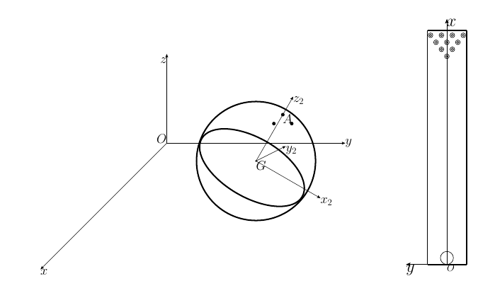
-
(a)
For the condition of rolling with slip: determine the degree of freedom and the number of constraints; identify the necessary variables of the problem.
-
(b)
For the condition of rolling without slip: determine the degree of freedom and the number of constraints; identify the necessary variables of the problem.
-
(c)
Express the angular momentum of the ball about $G$, with respect to $S_0$, as function of the variables of the problem.
-
(d)
Express force and torque as function of the variables of the problem.
-
(e)
For rolling with slip, obtain the set of ordinary differential equations and algebraic equations to solve the motion.
-
(f)
For rolling without slip, reduce the problem to quadratures (i.e., integrals). What is the shape of the trajectory of $G$?
-
(g)
If Jesús Quintana throws the ball with the following initial conditions:
solve the whole motion of the ball along the lane and determine: 1) when and where the ball starts to slip; 2) for $l = \dot x_{G0}^2/(10\mu g)$, what are the velocity and angular velocity of the ball when it hits the pocket.
Worked Solution [ Click to Expand ]
Reference Frames, Bases and Degrees of Freedom
- Physical system: a homogeneous solid sphere $b$ (the bowling ball, the holes being neglected in the mass distribution) of mass $M$, radius $a$ and centre $G$, moving on the horizontal lane, a plane strip of width $W$ and length $l$ with friction coefficient $\mu$. Gravity acts downwards. The contact with the lane is one point $P$.
- Fixed frame: $S_0\{O; \mathcal B_0\}$, $\mathcal B_0\{\mathbf i, \mathbf j, \mathbf k\}$, the frame $Oxyz$ of the figure: $O$ at the foul line, on the axis of the lane; $\mathbf i$ along the lane towards the pins; $\mathbf k$ vertical upwards; $\mathbf j$ across the lane (to the left of a player looking at the pins, read from the top view of the figure), so that the basis is right-handed. It is inertial.
- Intermediate frames: $S_1\{G; \mathbf i_1, \mathbf j_1, \mathbf k\}$, obtained by turning $\mathcal B_0$ by $\psi$ about $\mathbf k$; $S_2\{G; \mathbf i_2, \mathbf j_1, \mathbf k_2\}$, obtained by turning $\mathcal B_1$ by $\theta$ about $\mathbf j_1$; $\mathbf k_2$ points from $G$ to the hole $A$, as the statement says.
- Body frame: $S_b\{G; \mathbf i_b, \mathbf j_b, \mathbf k_2\}$, obtained by turning $\mathcal B_2$ by $\varphi$ about $\mathbf k_2$ (Euler angles in the order 3-2-3 of the statement).
- Coordinates: $x_G$, $y_G$ (projection of $G$ on the lane) and the three Euler angles $\psi$, $\theta$, $\varphi$. The rates of the coordinates of $G$ are written $\xi$ and $\eta$, as in the official key, and the angular velocity of the ball in $\mathcal B_0$ has components $\omega_x$, $\omega_y$, $\omega_z$.
- Part (a), rolling with slip: a free rigid body has six coordinates. No penetration of the lane (Notes.pdf, Eq. 13.1) is one holonomic constraint: the height of $G$ equals $a$. Five degrees of freedom remain, with the five coordinates above. Necessary variables: the five coordinates and the normal reaction $N$; the friction force is not an extra unknown, because with slip Coulomb's law gives it in terms of $N$ and of the slip velocity.
- Part (b), rolling without slip: the same holonomic constraint plus the two components of the no-slip condition (Notes.pdf, Eq. 13.5), which relate rates and cannot be integrated: three constraints in total. Three degrees of freedom remain (three independent velocities); the five coordinates are still needed to place the ball. Necessary variables: the five coordinates, $N$ and the two friction components $F_x$, $F_y$, which are now unknown reactions.
| Datum | Symbol | SI unit |
|---|---|---|
| Mass of the ball, homogeneous sphere | $M$ | kg |
| Radius | $a$ | m |
| Width and length of the lane | $W$, $l$ | m |
| Friction coefficient | $\mu$ | - |
| Gravity | $g$, along $-\mathbf k$ | m/s$^2$ |
| Initial data, part (g) | $G$ above $O$; $\xi_0$ along $\mathbf i$; zero $\eta$; Euler angles zero; rate of $\theta$ equal to $\xi_0/(4a)$, other angle rates zero | m, m/s, rad/s |
Change of Basis, Position Vectors and Constraint Kinematics
View from above with $\mathbf k$ out of the paper (⊙), $\mathbf i$ to the right and $\mathbf j$ up; a positive $\psi$ turns counterclockwise. Triangle of $\mathbf i_1$: hypotenuse 1, adjacent leg along $\mathbf i$ (cosine), opposite leg along $\mathbf j$ (sine). Triangle of $\mathbf j_1$: hypotenuse 1, adjacent leg along $\mathbf j$ (cosine), opposite leg along minus $\mathbf i$ (sine): the counterclockwise turn about the outward axis carries the tip of $\mathbf j$ to the left.
Units: dimensionless matrix; $[\mathrm{T^{-1}}]$
Meaning: $\mathbf j_1$ is horizontal; it is the axis of the second rotation.
View with $\mathbf j_1$ pointing into the paper (⊗), $\mathbf i_1$ to the right and $\mathbf k$ up; this view is right-handed because the product of $\mathbf k$ and $\mathbf i_1$ is $\mathbf j_1$. A positive rotation about an axis that points into the paper is clockwise as seen. Triangle of $\mathbf i_2$: hypotenuse 1, adjacent leg along $\mathbf i_1$ (cosine of $\theta$), opposite leg along minus $\mathbf k$ (sine): the tip of $\mathbf i_1$, turned clockwise, drops. Triangle of $\mathbf k_2$: hypotenuse 1, adjacent leg along $\mathbf k$ (cosine), opposite leg along $\mathbf i_1$ (sine): the tip of $\mathbf k$ moves to the right.
Units: dimensionless; $[\mathrm{T^{-1}}]$
Meaning: $\theta$ is the angle between the vertical and the line $GA$; with $\theta$ zero the hole $A$ is at the top of the ball.
View with $\mathbf k_2$ out of the paper (⊙), $\mathbf i_2$ to the right and $\mathbf j_1$ up; the triangles are those of the first rotation with $\varphi$ in place of $\psi$.
Units: dimensionless; $[\mathrm{T^{-1}}]$
Meaning: the spin $\varphi$ turns the ball about the line $GA$; it moves the other holes but not $A$.
Units: $[\mathrm{T^{-1}}]$ in every term
Meaning: these three relations are the kinematic equations that link the Euler angles to the angular velocity; the equations of motion below are simplest in the components of $\mathcal B_0$.
Units: $[\mathrm{T^{-1}}]$
Meaning: once the angular velocity is known in time, these three first-order equations give the Euler angles; they are singular when the sine of $\theta$ is zero (hole on the vertical through $G$), where $\psi$ and $\varphi$ turn about the same axis.
The lane is tangent to the ball at $P$ and the normal of a sphere passes through its centre, so $P$ is straight below $G$.
Units: $[\mathrm{L\,T^{-1}}]$
Meaning: the slip velocity has no vertical component (no penetration holds). Rolling without slip makes both components zero: the two constraints of part (b).
Center of Mass and Inertia Tensor
Spherical coordinates about $G$: distance $r$ from 0 to $a$, colatitude $\chi$ from 0 to $\pi$, longitude $\lambda$ from 0 to $2\pi$; volume element $r^2\sin\chi\,dr\,d\chi\,d\lambda$; density $\rho$.
Units: $[\mathrm M][\mathrm L^2]$
Meaning: the tensor is isotropic, so it is the same in $\mathcal B_0$, $\mathcal B_2$ and the body basis: the orientation of the holes does not enter the dynamics of the model.
Linear Momentum, Angular Momentum and Kinetic Energy
Units: kg m$^2$/s; J
Meaning: the angular momentum about $G$ is parallel to the angular velocity. The squared magnitude in $\mathcal B_2$ is the sum of the rate of $\psi$ squared times the sine of $\theta$ squared, the rate of $\theta$ squared and the third component squared; expanding the last square and using the identity of sine and cosine gives the bracket of the kinetic energy.
Free-Body Diagram and Equations of Motion
| Force | Point of application | Expression | Kind |
|---|---|---|---|
| Weight | $G$ | $-Mg\,\mathbf k$ | applied |
| Normal reaction | $P$ | $N\,\mathbf k$ | constraint |
| Friction, with slip | $P$ | $-\mu N$ times the unit vector of the slip velocity | constraint, known law |
| Friction, without slip | $P$ | $F_x\,\mathbf i + F_y\,\mathbf j$, unknown, with magnitude at most $\mu N$ | constraint |
Units: N; N m
Meaning: only the friction has a moment about $G$, and that moment is horizontal: nothing can change the spin about the vertical, $\omega_z$.
The pole $G$ is allowed in Eq. 12.13 because the term in the velocity of the pole vanishes for the centre of mass. The tensor coefficient is constant and $\mathcal B_0$ is fixed, so the derivative of the angular momentum is the tensor coefficient times the derivatives of the three components.
Units: $[\mathrm{L\,T^{-2}}]$ in the force equations; $[\mathrm{L\,T^{-2}}]$ after multiplying the angular accelerations by $a$
Meaning: five first-order equations for the five rates, completed by the algebraic relations for $N$ and $s$ and by five kinematic equations: the rates of $x_G$ and $y_G$ equal $\xi$ and $\eta$, and the Euler angle rates follow from the components of the angular velocity (kinematics section). Ten first-order equations in all, for the five degrees of freedom.
Write the slip velocity as the components $u$ along $\mathbf i$ and $w$ along $\mathbf j$.
Units: $[\mathrm{L\,T^{-1}}]$; $t^{*}$ in $[\mathrm{L\,T^{-1}}]/[\mathrm{L\,T^{-2}}] = [\mathrm T]$
Meaning: while the ball slips, the friction keeps a fixed direction and the slip speed falls linearly; at the time $t^{*}$ the slip vanishes and the motion continues as rolling without slip (part (f)). The centre of mass therefore has a constant acceleration of magnitude $\mu g$ during the slip: its path is a parabola, or a straight line when the initial velocity of $G$ is parallel to the slip.
Units: $[\mathrm{L\,T^{-1}}]$ for $C_1$, $C_2$; $[\mathrm{T^{-1}}]$ for $C_3$
Meaning: a sphere rolling without slip on a horizontal plane needs no friction: $G$ moves on a straight line at constant speed. The angular velocity is constant in $S_0$, so the ball turns uniformly about a fixed direction; the Euler angles follow by integrating the three rate equations of the kinematics section with these constant components, and $C_1$, $C_2$, $C_3$ are fixed by the state at the start of the rolling.
Part (g): the throw of Jesús Quintana
Units: $[\mathrm{T^{-1}}]$; $[\mathrm{L\,T^{-1}}]$
Meaning: the ball turns forwards only a quarter as fast as rolling would require, so it slides forwards from the very first instant, at the foul line: the friction points backwards, along minus $\mathbf i$.
The slip is along plus $\mathbf i$ with zero component along $\mathbf j$, and its direction is constant (box on the slip velocity), so the ratio $u/s$ is 1 and $w/s$ is 0 until the slip ends.
Units: m; m/s; rad/s; rad
Meaning: the ball moves along the axis of the lane; friction slows the centre down and spins the ball up about the horizontal axis $\mathbf j$, so the hole $A$ turns forwards in the vertical plane of the lane.
Units: $t^{*}$ in s; $x^{*}$ in $[\mathrm{L^2\,T^{-2}}]/[\mathrm{L\,T^{-2}}] = [\mathrm L]$
Meaning: read literally, the ball slips from the moment it is released, at the foul line. The transition the question is aiming at is the end of the slip: after the time $t^{*}$, about 0.214 times the ratio of the initial speed to the product of the friction coefficient and $g$, the ball would roll without slip at eleven fourteenths of its initial speed, if the lane were long enough.
Units: m/s; rad/s; s
Meaning: the ball reaches the pins at about 0.894 of its initial speed and is still slipping there: $a$ times its angular velocity is about 0.514 of the initial speed, below the speed of $G$, and the slip ($u$ about 0.380 of the initial speed) has not run out.
Answers and Checks
| Asked | Answer |
|---|---|
| (a) With slip | 1 constraint (height of $G$); 5 degrees of freedom; variables $x_G$, $y_G$, $\psi$, $\theta$, $\varphi$ and $N$ |
| (b) Without slip | 3 constraints (height of $G$ and two non-integrable no-slip conditions); 3 degrees of freedom; variables $x_G$, $y_G$, $\psi$, $\theta$, $\varphi$, $N$, $F_x$, $F_y$ |
| (c) Angular momentum about $G$ | $\tfrac25 Ma^2\left[(-\dot\theta\sin\psi + \dot\varphi\sin\theta\cos\psi)\,\mathbf i + (\dot\theta\cos\psi + \dot\varphi\sin\theta\sin\psi)\,\mathbf j + (\dot\psi + \dot\varphi\cos\theta)\,\mathbf k\right]$ |
| (d) Force and torque | $\mathbf F = F_x\mathbf i + F_y\mathbf j + (N - Mg)\mathbf k$, $\mathbf M_G = aF_y\,\mathbf i - aF_x\,\mathbf j$; with slip $F_x\mathbf i + F_y\mathbf j = -\mu N\,\mathbf v_{\mathrm{slip}}/s$ |
| (e) Equations with slip | $\dot\xi = -\mu g(\xi - a\omega_y)/s$, $\dot\eta = -\mu g(\eta + a\omega_x)/s$, $2a\dot\omega_x = 5\dot\eta$, $2a\dot\omega_y = -5\dot\xi$, $\dot\omega_z = 0$, $N = Mg$, plus the five kinematic equations |
| (f) Without slip | $\xi = a\omega_y = C_1$, $\eta = -a\omega_x = C_2$, $\omega_z = C_3$; $G$ moves on a straight line at constant speed |
| (g)1 | slip from the release, $t = 0$ at $x_G = 0$; the slip would end at $t^{*} = 3\xi_0/(14\mu g)$, $x^{*} = 75\xi_0^2/(392\mu g)$ |
| (g)2 | with $l = \xi_0^2/(10\mu g)$ the ball is still slipping: $\mathbf v_0^G = (2\xi_0/\sqrt5)\,\mathbf i$, $\boldsymbol\omega_{b0} = (\xi_0/a)(11/4 - \sqrt5)\,\mathbf j$ |
Check against the official key: the key (Problems.pdf, p. 79) prints 5 degrees of freedom with slip and 3 without, the equations of motion with slip in exactly the form of part (e), with the same symbols, the quadratures of part (f) and, at the pins, the velocity $2\xi_0/\sqrt5$ along $\mathbf i$ and the angular velocity $(\xi_0/a)(11/4 - \sqrt5)$ along $\mathbf j$. Match on every printed item. The key prints no time or position for question (g)1; the interpretation used here (slip from the release, end of the slip at $t^{*}$) is stated in its box.
Limiting cases and consistency:
- Launch already rolling. If the initial rate of $\theta$ were $\xi_0/a$, the slip velocity would start at zero and part (f) would apply from the start: constant velocity, no friction.
- Energy. During the slip the friction does the negative power $-\mu Mg\,s$, and the kinetic energy computed with the boxed solution decreases at exactly that rate; once the ball rolls, the energy is constant.
- Independent derivation. The time of the end of the slip and the state at the pins were recomputed symbolically from the boxed formulas; the quadratic root, the velocity and the angular velocity coincide with the values above.
- Dimensions. The time scale is the ratio of a speed to an acceleration; lengths are squared speeds over accelerations; the angular velocity is a speed over $a$.
Interactive geometry simulator: it needs JavaScript. The figures above show the same geometry.
The motion of a heavy sphere of mass $M$ and radius $a$ is to be analyzed. The sphere rests on a horizontal plane $Oxy$. Moreover, a point $A$ on its surface is attached to a point $C$ on the vertical axis $Oz$ by means of a spring with zero natural length and constant $k$. The distance $|OC|$ is equal to $2a$. An intermediate reference frame is defined in the following way: axis $Gz_2$ is the direction of the line connecting the center of mass of the sphere, $G$, and $A$; axis $Gy_2$ perpendicular to both $Gz_2$ and $Oz$ and, therefore, parallel to the horizontal plane $Oxy$; and $Gx_2$ forming a right-handed reference frame. The position of the sphere is given by $\xi, \eta$, coordinates of the projection of $G$ on the horizontal plane $Oxy$, angle $\psi$ between $Gy_2$ and $Oy$, angle $\theta$ between $Gz_2$ and $Oz$, and angle $\varphi$ corresponding to the rotation of the sphere about the $Gz_2$ axis. Note that the difference between the $Gx_2y_2z_2$ reference frame and a truly body-fixed reference frame is a rotation $\varphi$ about the $Gz_2$ axis.
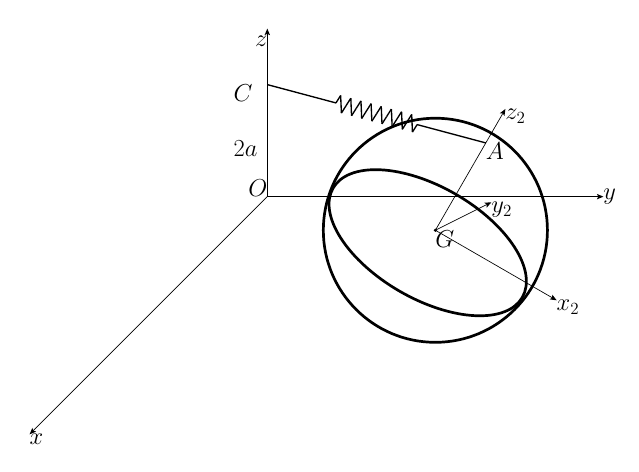
-
(a)
Considering the horizontal plane a smooth surface: * i. express the angular momentum of the sphere with respect to $G$ as a function of the variables of the problem, * ii. express force and torque of the spring as a function of the variables of the problem, * iii. obtain the set of five ordinary differential equations to solve the motion, * iv. compute also the reaction as a function of the above-mentioned coordinates.
-
(b)
If the horizontal plane is rough, and assuming that the sphere rolls without slipping, indicate the changes on the set of required equations to solve the motion and the reactions.
Worked Solution [ Click to Expand ]
Reference Frames, Bases and Degrees of Freedom
- Physical system: a homogeneous solid sphere $b$ of mass $M$, radius $a$ and centre $G$, resting on the horizontal plane $Oxy$ and touching it at one point $P$. A spring of constant $k$ and zero natural length joins the point $A$ of the surface of the sphere to the fixed point $C$ of the vertical axis, at the height $2a$ above $O$. Gravity acts downwards. The spring is massless, so it pulls on $A$ along the line from $A$ to $C$.
- Fixed frame: $S_0\{O; \mathbf i, \mathbf j, \mathbf k\}$, the frame $Oxyz$ of the figure, with $\mathbf k$ vertical upwards. It is inertial. The bold letter $\mathbf k$ is the unit vector; the plain $k$ is the spring constant.
- Intermediate frames: $S_1\{G; \mathbf i_1, \mathbf j_1, \mathbf k\}$, obtained by turning $\mathcal B_0$ by $\psi$ about $\mathbf k$; $S_2\{G; \mathbf i_2, \mathbf j_2, \mathbf k_2\}$, the frame $Gx_2y_2z_2$ of the statement, obtained by turning $\mathcal B_1$ by $\theta$ about $\mathbf j_1$. Then $\mathbf j_2$ equals $\mathbf j_1$: it is horizontal and normal to both $\mathbf k_2$ and $\mathbf k$, as the statement requires; $\psi$ is the angle from $Oy$ to $Gy_2$ and $\theta$ the angle from $Oz$ to $Gz_2$, which points from $G$ to $A$.
- Body frame: $S_b\{G; \mathbf i_b, \mathbf j_b, \mathbf k_2\}$, obtained by turning $\mathcal B_2$ by $\varphi$ about $\mathbf k_2$; this is the rotation by which, in the statement, the frame $Gx_2y_2z_2$ differs from a body frame. The three angles are Euler angles in the order 3-2-3.
- Coordinates: $\xi$, $\eta$ (projection of $G$ on the plane), $\psi$, $\theta$, $\varphi$.
- Degrees of freedom, smooth plane: six coordinates of a free body minus the no-penetration constraint (Notes.pdf, Eq. 13.1), which fixes the height of $G$ at $a$: five, the five coordinates above. Unknowns: the five coordinates and the normal reaction $N$.
- Degrees of freedom, rough plane with rolling without slip: the two no-slip conditions (Notes.pdf, Eq. 13.5) relate rates and cannot be integrated, so the five coordinates are still needed but only three velocities are independent. Unknowns: the five coordinates, $N$ and the two friction components.
| Datum | Symbol | SI unit |
|---|---|---|
| Mass of the sphere, homogeneous | $M$ | kg |
| Radius | $a$ | m |
| Spring constant, zero natural length | $k$ | N/m |
| Height of the anchor point $C$ on $Oz$ | $2a$ | m |
| Gravity | $g$, along $-\mathbf k$ | m/s$^2$ |
Change of Basis, Position Vectors and Constraint Kinematics
View from above with $\mathbf k$ out of the paper (⊙), $\mathbf i$ to the right and $\mathbf j$ up; a positive $\psi$ turns counterclockwise. Triangle of $\mathbf i_1$: hypotenuse 1, adjacent leg along $\mathbf i$ (cosine), opposite leg along $\mathbf j$ (sine). Triangle of $\mathbf j_1$: hypotenuse 1, adjacent leg along $\mathbf j$ (cosine), opposite leg along minus $\mathbf i$ (sine): the counterclockwise turn about the outward axis carries the tip of $\mathbf j$ to the left.
Units: dimensionless matrix; $[\mathrm{T^{-1}}]$
Meaning: $\psi$ is the angle between $Oy$ and the horizontal axis $Gy_2$, as the statement defines it.
View with $\mathbf j_1$ pointing into the paper (⊗), $\mathbf i_1$ to the right and $\mathbf k$ up; this view is right-handed because the product of $\mathbf k$ and $\mathbf i_1$ is $\mathbf j_1$, and a positive rotation about an axis pointing into the paper looks clockwise. Triangle of $\mathbf i_2$: hypotenuse 1, adjacent leg along $\mathbf i_1$ (cosine of $\theta$), opposite leg along minus $\mathbf k$ (sine): the tip of $\mathbf i_1$ drops, as $Gx_2$ does in the figure. Triangle of $\mathbf k_2$: hypotenuse 1, adjacent leg along $\mathbf k$ (cosine), opposite leg along $\mathbf i_1$ (sine).
Units: dimensionless; $[\mathrm{T^{-1}}]$
Meaning: $\theta$ is the angle between $Oz$ and $GA$; with $\theta$ zero the point $A$ is at the top of the sphere, at the height of $C$.
View with $\mathbf k_2$ out of the paper (⊙), $\mathbf i_2$ to the right and $\mathbf j_2$ up; the triangles are those of the first rotation with $\varphi$ in place of $\psi$.
Units: dimensionless; $[\mathrm{T^{-1}}]$
Meaning: the spin about $GA$ does not move $A$, so it does not change the spring force.
Units: $[\mathrm{T^{-1}}]$ in every term
Meaning: the sphere and the frame $Gx_2y_2z_2$ differ only by the spin along $\mathbf k_2$; $n$ is the total spin of the sphere about $GA$.
The plane is tangent to the sphere at $P$ and the normal to a sphere passes through its centre, so $P$ is straight below $G$ and $G$ is at the height $a$. Write $\rho_1$ and $\rho_2$ for the components of the horizontal position of $G$ along $\mathbf i_1$ and $\mathbf j_1$.
Units: $[\mathrm L]$; $[\mathrm{L\,T^{-1}}]$
Meaning: the vertical component of the spring vector is never negative: $A$ is never above the height $2a$ of $C$, so the vertical component of the spring force is never downward; it vanishes when $A$ is at the top. The contact velocity has no vertical component (no penetration); on a smooth plane its horizontal components are free.
Center of Mass and Inertia Tensor
Spherical coordinates about $G$: distance $r$ from 0 to $a$, colatitude $\chi$ from 0 to $\pi$, longitude $\lambda$ from 0 to $2\pi$; volume element $r^2\sin\chi\,dr\,d\chi\,d\lambda$; density $\rho$.
Units: $[\mathrm M][\mathrm L^2]$
Meaning: the frame $Gx_2y_2z_2$ is not attached to the sphere, but the tensor has the same constant components there, which is what makes that frame convenient.
Linear Momentum, Angular Momentum and Kinetic Energy
Units: kg m$^2$/s; J
Meaning: the angular momentum is parallel to the angular velocity; written in $Gx_2y_2z_2$ its components do not depend on $\varphi$.
Free-Body Diagram and Equations of Motion
| Force | Point of application | Expression | Kind |
|---|---|---|---|
| Weight | $G$ | $-Mg\,\mathbf k$ | applied, conservative |
| Spring | $A$ | $k$ times the vector from $A$ to $C$ | applied, conservative |
| Normal reaction | $P$ | $N\,\mathbf k$ | constraint |
| Friction (part (b) only) | $P$ | $F_x\,\mathbf i + F_y\,\mathbf j$, unknown | constraint |
A spring of zero natural length pulls each end towards the other with a force equal to the constant times the full extension vector.
Units: N; N m
Meaning: the torque of the spring is normal to $GA$, so it never changes the spin about $GA$; the weight acts at $G$ and the normal reaction passes through $G$, so on the smooth plane the spring is the only source of moment.
Units: N in every term
Meaning: the spring pulls $G$ towards the vertical through $C$, shifted by the horizontal offset of $A$ from $G$. The normal reaction depends only on $\theta$: it equals the weight with $A$ at the top and is smallest, $Mg - 2ka$, with $A$ at the bottom; the sphere stays on the plane while it is positive.
Write $I$ for the moment of inertia two fifths of $Ma^2$. The pole $G$ is allowed because the term in the velocity of the pole of Eq. 12.13 vanishes for the centre of mass.
Units: N in the first two equations (each side divided by $a$); $[\mathrm{T^{-1}}]$ for $n_0$
Meaning: the spin about the moving axis $GA$ is conserved for two reasons together: no force has a moment along $GA$ (the spring acts on $GA$ itself and the other forces pass through $G$), and the gyroscopic term has no component along $GA$ because the tensor is isotropic. With the two force equations, these are the five ordinary differential equations for $\xi$, $\eta$, $\psi$, $\theta$, $\varphi$.
Part (b): rough plane, rolling without slip
Write the friction in $\mathcal B_1$ as $F_1\,\mathbf i_1 + F_2\,\mathbf j_1$, so that $F_1$ is the $\mathbf i$ component times the cosine of $\psi$ plus the $\mathbf j$ component times its sine, and $F_2$ minus the $\mathbf i$ component times the sine plus the $\mathbf j$ component times the cosine.
Units: N for the forces; N m for the moments; m/s for the rolling conditions
Meaning: the friction becomes two more unknowns, balanced by the two rolling conditions. It enters the two force equations and all three moment equations; in particular the spin about $GA$ is no longer conserved, because the friction has the moment $aF_2\sin\theta$ about $GA$ whenever that axis is tilted. The normal reaction keeps the same expression. The friction can be eliminated with the force equations, $F_x$ equal to $M$ times the second rate of $\xi$ plus the spring term, and three second-order moment equations remain, which together with the two first-order rolling relations give five equations for the five coordinates.
Answers and Checks
| Asked | Answer |
|---|---|
| (a)i Angular momentum about $G$ | $\tfrac25 Ma^2\left[-\dot\psi\sin\theta\,\mathbf i_2 + \dot\theta\,\mathbf j_2 + (\dot\psi\cos\theta + \dot\varphi)\,\mathbf k_2\right]$ |
| (a)ii Spring force | $-k(\xi + a\sin\theta\cos\psi)\,\mathbf i - k(\eta + a\sin\theta\sin\psi)\,\mathbf j + ka(1 - \cos\theta)\,\mathbf k$ at $A$ |
| (a)ii Spring torque about $G$ | $ka(-\xi\sin\psi + \eta\cos\psi)\,\mathbf i_2 - ka\left((\xi\cos\psi + \eta\sin\psi)\cos\theta + a\sin\theta\right)\mathbf j_2$ |
| (a)iii Five equations | $M\ddot\xi = -k(\xi + a\sin\theta\cos\psi)$; $M\ddot\eta = -k(\eta + a\sin\theta\sin\psi)$; $\tfrac25 Ma(-\ddot\psi\sin\theta - \dot\psi\dot\theta\cos\theta + \dot\theta\dot\varphi) = k(-\xi\sin\psi + \eta\cos\psi)$; $\tfrac25 Ma(\ddot\theta + \dot\psi\dot\varphi\sin\theta) = -k((\xi\cos\psi + \eta\sin\psi)\cos\theta + a\sin\theta)$; $\dot\psi\cos\theta + \dot\varphi = n_0$ |
| (a)iv Reaction | $N\,\mathbf k$ with $N = Mg - ka(1 - \cos\theta)$ |
| (b) Rough plane | add $F_x\,\mathbf i + F_y\,\mathbf j$ at $P$ to the force equations and its moment $aF_2\cos\theta\,\mathbf i_2 - aF_1\,\mathbf j_2 + aF_2\sin\theta\,\mathbf k_2$ to the moment equations (the third one loses its first integral), plus the two rolling conditions; $N$ unchanged |
Problems.pdf prints no answer for this problem (see Problem Set - Rigid Body Official Key), so the results are checked with an independent derivation and limiting cases.
Units: J in every term
Meaning: the five equations of part (a) were also obtained independently from these kinetic and potential energies with the five coordinates (Lagrange's equations, used only as a check); the two force equations and the equations for $\theta$ and $\varphi$ coincide term by term, and the equation for $\psi$ is the combination of the components along $\mathbf i_2$ and $\mathbf k_2$ that gives the moment about the vertical $\mathbf k$.
Limiting cases and consistency:
- Equilibrium. With $G$ above $O$ and $A$ at the top ($\xi$, $\eta$, $\theta$ zero), $A$ coincides with $C$, the spring is unstretched, every right-hand side vanishes and $N$ equals $Mg$: an equilibrium.
- No spring. With $k$ zero, $G$ moves uniformly on the plane and the three moment equations are those of a free sphere, whose angular velocity is constant.
- Lift-off. On the smooth plane the reaction can only vanish if the spring pulls hard enough: $N$ becomes zero for $ka(1 - \cos\theta)$ equal to $Mg$, possible only if $2ka$ exceeds $Mg$.
- Dimensions. $k$ times a length is a force; the equations with the factor two fifths of $Ma$ have N on both sides.
Interactive geometry simulator: it needs JavaScript. The figures above show the same geometry.
A heavy, solid, homogeneous sphere of mass $M$ and radius $R$ moves on top of an inclined plane that forms an angle $\gamma$ with the horizontal. The sphere is always in contact with the plane. A stiff rod of negligible mass traverses the sphere through a small diametral perforation. The sphere can slide along and rotate about the rod freely, without any friction. The interaction between the rod and the sphere can be reduced to a resultant force and a resultant torque with respect to the center of mass of the sphere, $G$. These are unknown reactions until the problem is solved. One end of the rod is fixed at point $O$ of the inclined plane. The rod is free to turn in any direction but it does not rotate along its longitudinal axis.
To study the motion of the sphere, we define the inertial reference frame $S\{Oxyz\}$ with origin at $O$, the $x$ axis pointing downward along the maximum slope line of the plane, and the $z$ axis pointing upward perpendicular to the plane. We also define an auxiliary rotating reference frame $S_2\{Ox_2y_2z_2\}$, where $x_2$ always contains the point $P$ of contact of the sphere with the plane, and $z_2 \equiv z$. In order to describe the state of the system, we will use the angle $\theta$ between $x$ and $x_2$, the distance $d = |\overline{OP}|$, and the rotation angle $\phi$ of the sphere about the rod. For convenience, we also define the angle $\beta$ between the plane and the rod. Note that $\tan \beta = R/d$.
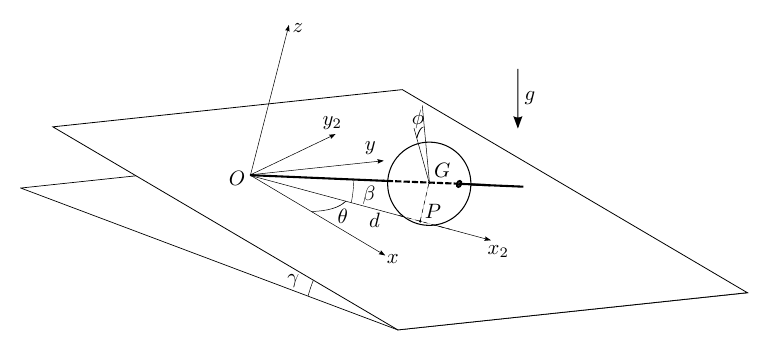
You are asked to:
-
(a)
Choose the minimum number of variables (linear or angular coordinates) in order to fully determine the position and orientation of the sphere.
-
(b)
Write the general expression for the angular velocity and angular acceleration of the sphere ($\boldsymbol\omega$ and $\boldsymbol\alpha$), and the velocity and acceleration of $G$ ($\mathbf v_G$ and $\mathbf a_G$), as a function of $\theta$, $d$, $\phi$ and their derivatives.
Consider first that the friction of the sphere with the inclined plane is infinite, so that it cannot slip with respect to the plane.
-
(c)
Relate the velocity of the center of mass $G$ and the velocity of $P$, and use this to express the time derivatives $\dot d$ and $\dot\phi$ in terms of $\dot\theta$ and the angle $\beta$ formed by the rod with the plane.
-
(d)
Identify all the components of reaction forces and reaction torques acting on the rod alone. Using the balance of forces and torques on the rod, express all reaction forces and torques as a function of only two force components.
-
(e)
Identify all the components of forces and torques acting on the sphere, and reduce them to a sum of forces and a sum of torques on $G$ in terms of the unit vectors of $S_2$.
-
(f)
Obtain a closed set of six differential equations that would provide the evolution of $\theta$ and the 5 unknowns mentioned in the previous question. Note that you do not need to solve any of these equations.
-
(g)
If the system is in equilibrium when $\theta = 0$, then compute the reaction force between the rod and the sphere. Compute also the normal reaction and the friction force between the sphere and the inclined plane.
-
(h)
Linearize the equation obtained in the previous question and study the small oscillations about this equilibrium position when the system is released with zero initial velocity and a small nonzero value of $\theta \ll 1$. What is the frequency of these oscillations as a function of the parameters of the problem?
Consider now that the inclined plane is frictionless instead:
-
(i)
What changes in this case? Adapt the differential equations to the new case.
-
(j)
If the center of the sphere is initially located at $\mathbf r_{G0} = 2R\mathbf i + 3R\mathbf j + R\mathbf k$ and has an initial velocity $\mathbf v_{G0} = -\sqrt{Rg}(\mathbf i + \mathbf j)$, derive the initial conditions that are necessary to integrate the differential equations.
Worked Solution [ Click to Expand ]
Reference Frames, Bases and Degrees of Freedom
- Physical system: a homogeneous solid sphere $b$ of mass $M$, radius $R$ and centre $G$, always touching a fixed plane inclined at the angle $\gamma$; the contact point is $P$. A rigid massless rod, pinned at the point $O$ of the plane, passes through a small diametral hole of the sphere; the sphere slides along the rod and turns about it without friction. Gravity acts downwards.
- Horizontal frame: $S_h\{O; \mathbf I, \mathbf j, \mathbf K\}$, with $\mathbf K$ vertical upwards, $\mathbf j$ the horizontal line of the plane and $\mathbf I$ horizontal, towards the side where the plane goes down.
- Fixed frame: $S\{O; \mathbf i, \mathbf j, \mathbf k\}$, the frame $Oxyz$ of the statement: $\mathbf i$ down the line of maximum slope, $\mathbf k$ normal to the plane, upwards, and $\mathbf j$ completing a right-handed basis (horizontal). The plane is at rest, so this frame is inertial.
- Auxiliary frame: $S_2\{O; \mathbf i_2, \mathbf j_2, \mathbf k\}$, turned by $\theta$ about $\mathbf k$, with $\mathbf i_2$ along $OP$, as the statement defines it.
- Frame of the rod: $S_3\{O; \mathbf u, \mathbf j_2, \mathbf w\}$, with $\mathbf u$ along the rod from $O$ to $G$ (at the angle $\beta$ above the plane), $\mathbf j_2$ normal to the rod and parallel to the plane, and $\mathbf w$ normal to the rod in the vertical plane of $\mathbf i_2$ and $\mathbf k$. Read from the figure: $\varphi$ is drawn at $G$ from this normal line, so the rod is taken as carried by the two rotations $\theta$ (about $\mathbf k$) and $\beta$ (about $\mathbf j_2$), as by a universal joint at $O$; this is the reading of "free to turn in any direction but it does not rotate along its longitudinal axis". The angular velocity of this frame has an axial component equal to the rate of $\theta$ times the sine of $\beta$; with another convention for the rod, only the definition of $\varphi$ (and its rate in part (c)) changes, not the forces or the motion of $G$.
- Body frame: $S_b\{G; \mathbf u, \mathbf e_2, \mathbf e_3\}$, turned by $\varphi$ about the rod.
- Part (a), coordinates: a free body has six coordinates. Contact with the plane (no penetration, Notes.pdf, Eq. 13.1) fixes the height of $G$ at $R$: five remain, the two coordinates of $P$ in the plane and three angles. The rod is free to turn about $O$, so it imposes nothing on the position of $G$ (it simply points from $O$ to $G$), but the hole aligns a body diameter with the rod: two conditions on the orientation. Three coordinates remain: $\theta$ and $d$ (the polar coordinates of $P$ in the plane) and $\varphi$; $\beta$ is a function of $d$.
| Datum | Symbol | SI unit |
|---|---|---|
| Mass of the sphere, homogeneous | $M$ | kg |
| Radius | $R$ | m |
| Inclination of the plane | $\gamma$ | rad |
| Rod | massless, rigid, pinned at $O$; smooth along and about its axis | - |
| Angle of the rod with the plane | $\beta$, with tangent $R/d$ | rad |
| Gravity | $g$, along $-\mathbf K$ | m/s$^2$ |
| Initial state, part (j) | $\mathbf r_{G0} = 2R\,\mathbf i + 3R\,\mathbf j + R\,\mathbf k$, $\mathbf v_{G0} = -\sqrt{Rg}\,(\mathbf i + \mathbf j)$ | m, m/s |
Change of Basis, Position Vectors and Constraint Kinematics
View with $\mathbf j$ pointing into the paper (⊗), $\mathbf I$ to the right and $\mathbf K$ up; this view is right-handed because the product of $\mathbf K$ and $\mathbf I$ is $\mathbf j$, and a positive rotation about an axis pointing into the paper looks clockwise. Triangle of $\mathbf i$: hypotenuse 1 down the slope, adjacent leg along $\mathbf I$ (cosine of $\gamma$), opposite leg along minus $\mathbf K$ (sine). Triangle of $\mathbf k$: hypotenuse 1 along the normal, adjacent leg along $\mathbf K$ (cosine), opposite leg along $\mathbf I$ (sine).
Units: dimensionless matrix; N
Meaning: the weight pulls the sphere down the slope, along $\mathbf i$, and presses it against the plane.
View of the plane from above with $\mathbf k$ out of the paper (⊙), $\mathbf i$ to the right and $\mathbf j$ up; a positive $\theta$ turns counterclockwise. Triangle of $\mathbf i_2$: hypotenuse 1, adjacent leg along $\mathbf i$ (cosine), opposite leg along $\mathbf j$ (sine). Triangle of $\mathbf j_2$: adjacent leg along $\mathbf j$ (cosine), opposite leg along minus $\mathbf i$ (sine), because the counterclockwise turn carries the tip of $\mathbf j$ to the left.
Units: dimensionless; $[\mathrm{T^{-1}}]$; N
Meaning: for positive $\theta$ the downhill pull has a component along minus $\mathbf j_2$, which turns $OP$ back towards the line of maximum slope.
Vertical section through $O$, $P$ and $G$, with $\mathbf i_2$ to the right, $\mathbf k$ up and $\mathbf j_2$ pointing into the paper (⊗). Right triangle $OPG$: the leg $d$ along the plane from $O$ to $P$, the leg $R$ from $P$ to $G$ along the normal, and the hypotenuse $OG$ of length $L$, along the rod; $\beta$ is the angle at $O$. The rod turns counterclockwise as seen, which is a rotation about minus $\mathbf j_2$. Triangle of $\mathbf u$: adjacent leg along $\mathbf i_2$ (cosine), opposite leg along $\mathbf k$ (sine). Triangle of $\mathbf w$: adjacent leg along $\mathbf k$ (cosine), opposite leg along minus $\mathbf i_2$ (sine): the tip of $\mathbf k$ moves to the left.
Units: dimensionless; $\dot\beta$ in $[\mathrm L][\mathrm{L\,T^{-1}}]/[\mathrm{L^2}] = [\mathrm{T^{-1}}]$
Meaning: when the sphere moves away from $O$ the rod flattens: $\beta$ decreases while $d$ grows.
View along the rod with $\mathbf u$ out of the paper (⊙), $\mathbf j_2$ to the right and $\mathbf w$ up; this is right-handed because the product of $\mathbf u$ and $\mathbf j_2$ is $\mathbf w$. A positive $\varphi$ turns counterclockwise. Triangle of $\mathbf e_2$: adjacent leg along $\mathbf j_2$ (cosine), opposite leg along $\mathbf w$ (sine). Triangle of $\mathbf e_3$: adjacent leg along $\mathbf w$ (cosine), opposite leg along minus $\mathbf j_2$ (sine).
Units: dimensionless; $[\mathrm{T^{-1}}]$
Meaning: the sphere can only turn about the rod relative to the rod frame; that is the content of the two orientation constraints of part (a).
Write the angular velocity in $\mathcal B_2$ with the components $a_1$, $a_2$, $a_3$.
Units: $[\mathrm{T^{-1}}]$ and $[\mathrm{T^{-2}}]$
Meaning: with the cosine and sine of $\beta$ equal to $d/L$ and $R/L$ and the rate of $\beta$ from the previous box, both vectors are functions of $\theta$, $d$, $\varphi$ and their derivatives only.
Units: $[\mathrm{L\,T^{-1}}]$ and $[\mathrm{L\,T^{-2}}]$
Meaning: $G$ moves parallel to the plane like a point in polar coordinates $(d, \theta)$ at the constant height $R$.
Units: $[\mathrm{T^{-1}}]$; $[\mathrm{T^{-2}}]$
Meaning: a rolling sphere cannot change its distance to $O$: moving radially would need a rotation about $\mathbf j_2$ larger than the one the rod allows, so $d$ and $\beta$ keep their initial values and $G$ moves on a circle of radius $d$. The third component of the angular velocity cancels and the angular velocity lies along $OP$: the instantaneous axis passes through $P$ and $O$, and the sphere rolls like a cone with its apex at $O$. The angular acceleration follows from part (b) with constant $\beta$.
Center of Mass and Inertia Tensor
Spherical coordinates about $G$: distance $r$ from 0 to $R$, colatitude $\chi$ from 0 to $\pi$, longitude $\lambda$ from 0 to $2\pi$; volume element $r^2\sin\chi\,dr\,d\chi\,d\lambda$; density $\rho$. The small hole is neglected.
Units: $[\mathrm M][\mathrm L^2]$
Meaning: the tensor is the same in $\mathcal B_2$, in the rod frame and in the body frame, so the angular momentum about $G$ is two fifths of $MR^2$ times the angular velocity.
Linear Momentum, Angular Momentum and Kinetic Energy
Units: kg m$^2$/s; N m; J
Meaning: with rolling (part (c)) the kinetic energy reduces to the seven fifths of $\tfrac12 M d^2$ times the squared rate of $\theta$, because the rotational part is two fifths of $MR^2$ times the square of $d/R$ times that rate, halved.
Free-Body Diagram and Equations of Motion
The rod and the sphere act on each other at $G$ through a force $\mathbf F_r$ and a torque $\mathbf Q_r$ (on the sphere; minus these on the rod). The sphere slides along the rod and turns about it without friction, so neither has a component along $\mathbf u$. At $O$ the joint applies a force $\mathbf R_O$ (three components) and a torque that cannot act about the two axes of the joint, $\mathbf k$ and $\mathbf j_2$, so it is $Q_O\,\mathbf i_2$. Eight unknown components, six equations of equilibrium.
Units: N; N m ($L$ in m times a force)
Meaning: all the reactions on the rod depend on the two force components $F_j$ and $F_w$. A massless rod is a two-force member only when it carries no torque; here it transmits the torque that the sphere needs, balanced by the moment of the force pair at $O$ and $G$. The joint torque is zero, so the result is the same if the joint at $O$ is read as a ball-and-socket joint.
| Force on the sphere | Point of application | Expression in $\mathcal B_2$ | Kind |
|---|---|---|---|
| Weight | $G$ | $Mg\sin\gamma(\cos\theta\,\mathbf i_2 - \sin\theta\,\mathbf j_2) - Mg\cos\gamma\,\mathbf k$ | applied |
| Rod force | $G$ | $F_j\,\mathbf j_2 + F_w(-\sin\beta\,\mathbf i_2 + \cos\beta\,\mathbf k)$ | constraint |
| Rod torque | - | $L F_w\,\mathbf j_2 - L F_j(-\sin\beta\,\mathbf i_2 + \cos\beta\,\mathbf k)$ | constraint |
| Normal reaction | $P$ | $N\,\mathbf k$ | constraint |
| Friction | $P$ | $T_1\,\mathbf i_2 + T_2\,\mathbf j_2$ (unknown with no slip; zero on a smooth plane) | constraint |
Units: N; N m
Meaning: five unknown reaction components act on the sphere: $F_j$, $F_w$ (the rod), $N$, $T_1$, $T_2$ (the plane).
With rolling, $d$ and $\beta$ are constant (part (c)), so the acceleration of $G$ is minus $d$ times the squared rate of $\theta$ along $\mathbf i_2$ plus $d$ times its second rate along $\mathbf j_2$, and the angular acceleration is the one boxed in part (c). The pole $G$ is the centre of mass, so Eq. 12.13 has no term in the velocity of the pole.
Units: N for the forces; N m for the moments
Meaning: the last equation already says that the rod pushes on the sphere only along $\mathbf w$, in the vertical plane of the rod.
Units: $[\mathrm{T^{-2}}]$ for the coefficient of the sine ($[\mathrm{L\,T^{-2}}]/[\mathrm L]$); N for the reactions
Meaning: the sphere is a pendulum about the line of maximum slope through $O$: the downhill pull, with the arm given by the sine of $\theta$, brings $OP$ back to $\theta$ zero, and the rolling adds two fifths to the inertia. $T_2$ follows from the first line with the second rate of $\theta$ from the third; $T_1$ is then the force along $\mathbf i_2$ with this $F_w$. Whenever the bracket is positive (near the equilibrium, for instance) $F_w$ is negative, along minus $\mathbf w$: the rod presses the sphere against the plane, which is why $N$ then exceeds the normal part of the weight.
Units: N; N m
Meaning: at $\theta$ zero the basis $\mathcal B_2$ coincides with $\mathcal B_0$. The sphere hangs below $O$ on the line of maximum slope: friction holds it up the slope with more than the downhill weight component, the rod pushes it down the slope and into the plane, and the torque of the rod balances the moment of the friction about $G$. Check of the moment along $\mathbf j_2$: $L F_w$ minus $R T_1$ is $MgR\sin\gamma$ over the square of the cosine of $\beta$ times minus one plus one, zero.
Units: $\Omega$ in $\sqrt{[\mathrm{L\,T^{-2}}]/[\mathrm L]} = [\mathrm{T^{-1}}]$
Meaning: the sphere swings about the line of maximum slope like a pendulum of length $d$ in the reduced gravity $g\sin\gamma$, slowed by the factor square root of five sevenths that rolling brings; a sphere farther from $O$ (larger $d$) gives slower oscillations.
Parts (i) and (j): frictionless inclined plane
Without friction $T_1$ and $T_2$ vanish, the contact point may slide and $d$ and $\varphi$ are free again: three coordinates and three reaction components ($F_j$, $F_w$, $N$). Write $I$ for two fifths of $MR^2$, and the components of the angular acceleration as in part (b).
Units: N; N m; $[\mathrm{T^{-1}}]$ for the constant $C$
Meaning: the spin of the sphere about the moving rod is conserved for two reasons together: the reactions have no moment about the rod (the rod exerts no torque along itself and the other forces act at $G$ or along the normal through $G$), and the gyroscopic term vanishes because the tensor is isotropic and the sphere differs from the rod frame only by a rotation about the rod. The force along $\mathbf j_2$ gives $F_j$, the moment along $\mathbf j_2$ gives $F_w$, and three second-order equations remain for $\theta$, $d$ and $\varphi$. The contact must be checked: $N$ must stay positive.
Units: rad; m; rad/s; m/s
Meaning: the sphere starts at about 56.3 deg from the line of maximum slope, with the rod at about 15.5 deg above the plane, moving towards $O$ (negative rate of $d$) while $OP$ turns slowly counterclockwise. The data fix the motion of $G$ but not the spin about the rod: $\varphi_0$ is zero by the choice of the reference, and the constant $C$ (the initial spin about the rod) is an extra datum; for a sphere launched with no angular velocity about the rod, $C$ is zero.
Answers and Checks
| Asked | Answer |
|---|---|
| (a) Coordinates | $\theta$, $d$, $\varphi$ (three); $\beta = \arctan(R/d)$ |
| (b) Kinematics | $\boldsymbol\omega = \dot\varphi\cos\beta\,\mathbf i_2 - \dot\beta\,\mathbf j_2 + (\dot\theta + \dot\varphi\sin\beta)\,\mathbf k$; $\boldsymbol\alpha = (\ddot\varphi\cos\beta - \dot\varphi\dot\beta\sin\beta + \dot\theta\dot\beta)\,\mathbf i_2 + (-\ddot\beta + \dot\theta\dot\varphi\cos\beta)\,\mathbf j_2 + (\ddot\theta + \ddot\varphi\sin\beta + \dot\varphi\dot\beta\cos\beta)\,\mathbf k$; $\mathbf v_G = \dot d\,\mathbf i_2 + d\dot\theta\,\mathbf j_2$; $\mathbf a_G = (\ddot d - d\dot\theta^2)\,\mathbf i_2 + (d\ddot\theta + 2\dot d\dot\theta)\,\mathbf j_2$; $\dot\beta = -R\dot d/(d^2 + R^2)$ |
| (c) Rolling | $\mathbf v_P = \mathbf v_G - R\,\boldsymbol\omega\times\mathbf k$; $\dot d = 0$, $\dot\varphi = -\dot\theta/\sin\beta$ |
| (d) Rod | $\mathbf R_O = \mathbf F_r = F_j\,\mathbf j_2 + F_w\,\mathbf w$, joint torque zero, $\mathbf Q_r = LF_w\,\mathbf j_2 - LF_j\,\mathbf w$ |
| (e) Sphere | force and moment of the part (e) box, with $F_j$, $F_w$, $N$, $T_1$, $T_2$ |
| (f) Six equations | box of part (f) |
| (g) Equilibrium | $\mathbf F_r = Mg\sin\gamma\tan\beta(\tan\beta\,\mathbf i - \mathbf k)$, $\mathbf Q_r = -MgR\sin\gamma\,\mathbf j/\cos^2\beta$; $N = Mg(\cos\gamma + \sin\gamma\tan\beta)$; friction $-Mg\sin\gamma\,\mathbf i/\cos^2\beta$ |
| (h) Small oscillations | $\theta = \theta_0\cos\Omega t$, $\Omega = \sqrt{5g\sin\gamma/(7d)} = \sqrt{5g\sin\gamma\tan\beta/(7R)}$ |
| (i) Smooth plane | $T_1 = T_2 = 0$; $d$ and $\varphi$ free; six equations of the part (i) box; $\dot\varphi + \dot\theta\sin\beta$ constant |
| (j) Initial conditions | $\theta_0 = \arctan(3/2)$, $d_0 = \sqrt{13}R$, $\dot\theta_0 = \sqrt{g/R}/13$, $\dot d_0 = -5\sqrt{Rg/13}$, $\varphi_0 = 0$; the spin about the rod is an extra datum |
Problems.pdf prints no answer for this problem (see Problem Set - Rigid Body Official Key), so the results are checked with an independent derivation and limiting cases.
Units: J in every term
Meaning: the derivative vanishes exactly by the equation of motion of the reduced box: the energy integral is its first integral. The frictionless equations of part (i) were also compared symbolically with the equations obtained from the kinetic energy of the momentum section and this potential with the three coordinates; after eliminating $F_j$ and $F_w$ they coincide.
Limiting cases and consistency:
- Horizontal plane. With zero inclination the coefficient of the sine vanishes: any $\theta$ is an equilibrium and the sphere rolls around $O$ at a constant rate. The centripetal force comes from the friction and the rod, and the rod presses the sphere against the plane, so the normal reaction exceeds the weight by a term proportional to the squared rate of $\theta$.
- Large distance $d$. For $d$ much larger than $R$, $\beta$ tends to zero: in equilibrium the rod force vanishes, the friction tends to the downhill weight component, and the torque of the rod tends to $MgR\sin\gamma$, which balances the moment of that friction about $G$; the frequency tends to zero, as for a very long pendulum.
- Sign check. For small positive $\theta$ the second rate of $\theta$ is negative: the sphere returns towards the line of maximum slope below $O$, which is the stable side.
- Dimensions. The squared frequency is an acceleration over a length; every reaction is a multiple of $Mg$.
Interactive geometry simulator: it needs JavaScript. The figures above show the same geometry.
A heavy rectangular piece of wood of mass $m$ with a circular hole of radius $a_2$ is positioned on a fixed cylindrical knob of radius $a_1$ as shown below. We want to study the motion of the piece as a rigid body with respect to the inertial reference frame $Ox_1y_1z_1$ of the figure, assuming that the internal surface of the hole is always in contact with the knob at one point $I$ and that the piece rolls without slip over the knob. We call $\theta$ the angle between the longitudinal symmetry axis of the piece and the vertical, and we call $\phi$ the angle between the vector $OI$ and the vertical. Note that the two angles, $\theta$ and $\phi$, do not need to coincide in general. The dimensions of the problem satisfy $h = 2w$, $a_2 = w/\sqrt{2\pi}$, $a_1 = a_2/3$.
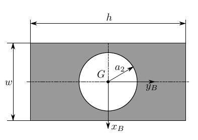
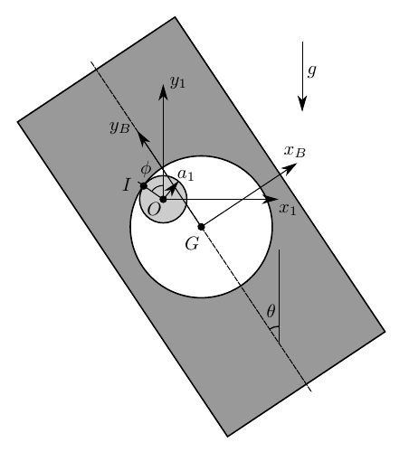
-
(a)
Compute $I_z$, the moment of inertia of the piece along $z_1$ at $G$, as a function of $m$ and $w$.
-
(b)
Write down the expressions of the velocity and acceleration of point $G$ as a function of $\phi$, $\theta$ and their time derivatives.
-
(c)
Find the relation between $\dot\phi$ and $\dot\theta$ imposing the no-slip condition at $I$.
-
(d)
Write down the equations of motion that yield $\phi$ and the reaction forces as functions of time. Note that you do not need to solve these equations.
-
(e)
From these equations, find the second-order differential equation for the evolution of $\phi$ that does not depend on the reaction forces.
-
(f)
If initially the wood piece is placed such that $G$ and $O$ are along the same vertical with $\theta_0 = 0$, the speed of $G$ is $|\mathbf v_{G0}| = 2wA/3$ [sic] and the piece is rotating counterclockwise, find the initial conditions that should be imposed to integrate the equation from the previous question for $\phi$.
Worked Solution [ Click to Expand ]
Reference Frames, Bases and Degrees of Freedom
- Physical system: a homogeneous rectangular plate $b$ of mass $m$, sides $h$ (along its longitudinal symmetry axis) and $w$, with a circular hole of radius $a_2$ centred at the centre of the rectangle. The hole hangs on a fixed cylindrical knob of radius $a_1$ and centre $O$; the inner surface of the hole touches the knob at the single point $I$ and rolls on it without slipping. Gravity acts downwards. The motion is planar, in the plane of the figure.
- Fixed frame: $S_1\{O; \mathbf i_1, \mathbf j_1, \mathbf k_1\}$, the frame $Ox_1y_1z_1$ of the statement: $\mathbf i_1$ horizontal to the right, $\mathbf j_1$ vertical upwards and $\mathbf k_1$ out of the paper (⊙). The knob is at rest, so this frame is inertial.
- Body frame: $S_B\{G; \mathbf i_B, \mathbf j_B, \mathbf k_1\}$, with $\mathbf j_B$ along the longitudinal axis $y_B$ (the side $h$) and $\mathbf i_B$ along the short axis $x_B$ (the side $w$), turned by $\theta$ with respect to $S_1$. Read from the figure: $\mathbf j_B$ points up and to the left when $\theta$ is positive, so $\theta$ is counterclockwise about $\mathbf k_1$.
- Contact basis: $\mathcal B_c\{\mathbf u_1, \mathbf u_2, \mathbf k_1\}$, with $\mathbf u_2$ along $OI$, turned by $\phi$ with respect to $\mathcal B_1$. Read from the figure: $I$ lies up and to the left of $O$ when $\phi$ is positive, so $\phi$ is also counterclockwise about $\mathbf k_1$.
- Degrees of freedom: a plate moving in its plane has three coordinates (two for $G$ and the angle $\theta$). Contact with the knob (Notes.pdf, Eq. 13.1) fixes the distance from $O$ to $G$: two coordinates remain, $\phi$ and $\theta$. Rolling without slip adds one relation between their rates (part (c)), which can be integrated: the plate has one degree of freedom.
| Datum | Symbol | SI unit |
|---|---|---|
| Mass of the plate (with the hole), homogeneous | $m$ | kg |
| Width along $x_B$ | $w$ | m |
| Length along $y_B$ | $h = 2w$ | m |
| Radius of the hole | $a_2 = w/\sqrt{2\pi}$ | m |
| Radius of the knob | $a_1 = a_2/3$ | m |
| Angle of the axis $y_B$ with the vertical | $\theta$, counterclockwise | rad |
| Angle of $OI$ with the vertical | $\phi$, counterclockwise | rad |
| Gravity | $g$, along $-\mathbf j_1$ | m/s$^2$ |
| Initial state, part (f) | $\theta_0 = 0$, $G$ below $O$, speed of $G$ equal to $2wA/3$ [sic], counterclockwise rotation | rad, m/s |
Change of Basis, Position Vectors and Constraint Kinematics
View of the plane of the plate with $\mathbf k_1$ out of the paper (⊙), $\mathbf i_1$ to the right and $\mathbf j_1$ up; a positive $\theta$ turns counterclockwise. Triangle of $\mathbf i_B$: hypotenuse 1, adjacent leg along $\mathbf i_1$ (cosine of $\theta$), opposite leg along $\mathbf j_1$ (sine). Triangle of $\mathbf j_B$: hypotenuse 1, adjacent leg along $\mathbf j_1$ (cosine), opposite leg along minus $\mathbf i_1$ (sine), because the counterclockwise turn carries the tip of $\mathbf j_1$ to the left.
Units: dimensionless; $[\mathrm{T^{-1}}]$; $[\mathrm{T^{-2}}]$
Meaning: the plate is a plane body, so its angular velocity is always normal to the plane; $\theta$ is the angle that the plate itself has turned.
Same view, $\mathbf k_1$ out of the paper (⊙). The unit vector $\mathbf u_2$ is $\mathbf j_1$ turned counterclockwise by $\phi$: hypotenuse 1, adjacent leg along $\mathbf j_1$ (cosine of $\phi$), opposite leg along minus $\mathbf i_1$ (sine). The unit vector $\mathbf u_1$ is $\mathbf i_1$ turned by $\phi$: adjacent leg along $\mathbf i_1$ (cosine), opposite leg along $\mathbf j_1$ (sine). The basis is not attached to the plate: it follows the contact point.
Units: dimensionless; the derivatives in $[\mathrm{T^{-1}}]$
Meaning: $\mathbf u_2$ is the common normal of the knob and the hole at $I$; $\mathbf u_1$ is their common tangent.
The knob touches the inside of the hole at $I$, so the centre $O$ of the knob, the centre $G$ of the hole and $I$ lie on the common normal $\mathbf u_2$; $I$ is at $a_1$ from $O$ and at $a_2$ from $G$, on the same side, so $G$ is at $a_2 - a_1$ from $O$ on the side opposite to $I$.
Units: $[\mathrm L]$, $[\mathrm{L\,T^{-1}}]$, $[\mathrm{L\,T^{-2}}]$
Meaning: $G$ moves on a circle of radius $a_2 - a_1$ about $O$, about 0.266 times $w$; its position depends on $\phi$ only, because the hole is centred at $G$: the angle $\theta$ of the plate does not change where $G$ is. The term in the square of the rate of $\phi$ points along $\mathbf u_2$, from $G$ towards $O$: it is the centripetal acceleration.
The body point of the plate at $I$ must have the velocity of the knob point at $I$, which is zero.
Units: $[\mathrm{T^{-1}}]$ on both sides; the integrated form in rad
Meaning: the plate turns in the same sense as the contact point travels round the knob, but more slowly: while $I$ goes once round the knob ($\phi$ grows by $2\pi$) the plate turns by two thirds of a turn. The constraint is integrable (holonomic), as for the planar disk of Notes.pdf, Eq. 13.4.
Center of Mass and Inertia Tensor
Surface density $\sigma$. The full rectangle $Q$ and the hole $H$ have their centres at the same point, the centre of the rectangle, and both are symmetric about it.
Units: kg/m$^2$; kg
Meaning: the data are chosen so that the hole takes exactly one quarter of the rectangle; the plate keeps its two axes of symmetry, so $G$ is the common centre.
Body coordinates $x$ along $\mathbf i_B$ from minus $w/2$ to $w/2$ and $y$ along $\mathbf j_B$ from minus $w$ to $w$ (half of $h$); the squared distance to the axis $\mathbf k_1$ through $G$ is the sum of their squares. For the hole, polar coordinates $(\rho, \chi)$ about $G$, area element $\rho\,d\rho\,d\chi$.
Units: $[\mathrm M][\mathrm L^2]$
Meaning: the full rectangle alone would give $\tfrac43 m$ times $(h^2 + w^2)/12$, that is $\tfrac59 mw^2 \approx 0.556\,mw^2$; the hole, near the axis, removes only $mw^2/(12\pi) \approx 0.027\,mw^2$. The plane motion needs only this component of the tensor; both symmetry axes make the products of inertia with $\mathbf k_1$ zero.
Linear Momentum, Angular Momentum and Kinetic Energy
Units: kg m/s; kg m$^2$/s; J
Meaning: the potential is lowest at $\phi$ equal to zero, with $G$ straight below $O$: the hanging position.
Free-Body Diagram and Equations of Motion
| Force on the plate | Point of application | Expression | Kind |
|---|---|---|---|
| Weight | $G$ | $-mg\,\mathbf j_1 = -mg(\sin\phi\,\mathbf u_1 + \cos\phi\,\mathbf u_2)$ | applied |
| Normal reaction of the knob | $I$ | $N\,\mathbf u_2$, with $N \ge 0$ (the knob pushes the edge of the hole away from $O$) | constraint |
| Friction of the knob | $I$ | $F\,\mathbf u_1$ (unknown: rolling without slip) | constraint |
The pole $G$ is the centre of mass, so the moment equation has no term in the velocity of the pole. The weight acts at $G$ and has no moment about it; the contact force acts at $I$, with the arm $a_2\,\mathbf u_2$.
Units: N for the force equations; N m for the moment equation; m/s for the rolling condition
Meaning: four equations for the four unknowns $\phi$, $\theta$, $N$ and $F$, as functions of time. A positive $F$ (along $\mathbf u_1$) has a clockwise moment about $G$.
Units: the coefficient of the sine is $[\mathrm{L\,T^{-2}}]/[\mathrm L] = [\mathrm{T^{-2}}]$; $F$ and $N$ in N
Meaning: the plate swings like a pendulum about the knob. Rolling adds the rotational inertia of the plate to the inertia of the translation of $G$ and slows the swing; the friction needed is about 0.769 times $mg\sin\phi$, and the normal reaction carries the radial part of the weight plus the centripetal force.
$G$ and $O$ on the same vertical: read from the figure, the plate hangs, with $G$ below $O$, so $\mathbf u_2$ is $\mathbf j_1$ and $I$ is at the top of the knob. A counterclockwise rotation of the plate is a positive rate of $\theta$, hence (part (c)) a positive rate of $\phi$. The constant $A$ of the statement is not defined elsewhere; it is kept as a datum with units of $[\mathrm{T^{-1}}]$, so that $2wA/3$ is a speed.
Units: rad; rad/s
Meaning: the plate starts from the bottom of its swing with $G$ moving to the right (along $\mathbf u_1 = \mathbf i_1$) and the plate turning counterclockwise. If $G$ were placed above $O$ instead, the initial angle would be $\pi$, an unstable equilibrium of the equation of part (e).
Answers and Checks
| Asked | Answer |
|---|---|
| (a) Moment of inertia | $I_z = \dfrac{20\pi - 3}{36\pi}\,mw^2 \approx 0.529\,mw^2$ |
| (b) Kinematics of $G$ | $\mathbf r^G = -(a_2 - a_1)\,\mathbf u_2$, $\mathbf v^G = (a_2 - a_1)\dot\phi\,(\cos\phi\,\mathbf i_1 + \sin\phi\,\mathbf j_1)$, $\mathbf a^G = (a_2 - a_1)[(\ddot\phi\cos\phi - \dot\phi^2\sin\phi)\,\mathbf i_1 + (\ddot\phi\sin\phi + \dot\phi^2\cos\phi)\,\mathbf j_1]$, with $a_2 - a_1 = 2w/(3\sqrt{2\pi})$; independent of $\theta$ |
| (c) Rolling | $a_2\dot\theta = (a_2 - a_1)\dot\phi$, so $\dot\theta = \tfrac23\dot\phi$ |
| (d) Equations | $m(a_2 - a_1)\ddot\phi = F - mg\sin\phi$; $m(a_2 - a_1)\dot\phi^2 = N - mg\cos\phi$; $I_z\ddot\theta = -a_2F$; plus rolling |
| (e) Equation for $\phi$ | $\ddot\phi + \dfrac{27\sqrt{2\pi}}{5(4\pi + 3)}\dfrac gw\sin\phi = 0$ |
| (f) Initial conditions | $\phi(0) = 0$, $\dot\phi(0) = \sqrt{2\pi}\,A$ (and $\theta = \tfrac23\phi$) |
Problems.pdf prints no answer for this problem (see Problem Set - Rigid Body Official Key), so the results are checked with an independent derivation and limiting cases.
Units: W in every term
Meaning: the bracket is the equation of part (e) multiplied by $m(a_2 - a_1)$ times the bracket of that box; the energy method, with no reaction in sight, gives the same equation of motion.
Limiting cases and consistency:
- Pin instead of knob. For a knob of vanishing radius ($a_1$ tending to zero) the rolling condition gives equal rates of $\theta$ and $\phi$: the plate turns rigidly about the fixed point $I$ of the rim of the hole, and the general coefficient of the sine, $g$ divided by $(a_2 - a_1)(1 + I_z/(ma_2^2))$, becomes $mg\,a_2/(I_z + m a_2^2)$: the compound pendulum with the pivot at the distance $a_2$ from $G$ (parallel axis theorem). This is the expected limit.
- Small oscillations. For small $\phi$ the sine is replaced by $\phi$ (Notes.pdf, Eq. 5.6) and the plate oscillates with the angular frequency $\sqrt{0.870\,g/w}$; for $w$ equal to 0.1 m this is about 9.2 rad/s.
- Sign check. For a small positive $\phi$ the second rate of $\phi$ is negative: $G$ swings back below $O$, the stable position.
- Dimensions. $I_z$ is a mass times a squared length; the friction is a pure number times $mg$; every term of the equation of part (e) is in $[\mathrm{T^{-2}}]$.
Interactive geometry simulator: it needs JavaScript. The figures above show the same geometry.
A heavy, homogeneous coin b [sic] of mass $m$, radius $R$ and negligible thickness rolls on a horizontal plane at rest. The coin never takes off from the plane. We call $C$ the instantaneous contact point between the coin and the plane, and $G$ the center of mass of the coin. An inertial reference frame $S_0 = \{O; B_0\}$, with $O$ a point of the plane and $B_0 = \{\mathbf i_0, \mathbf j_0, \mathbf k_0\}$, is given. We define $r$ and $\psi$, which are the polar coordinates of $C$ in the $Ox_0y_0$ plane, and we call $S_1 = \{C; B_1\}$ the local reference frame associated to these polar coordinates. Lastly, we define $\beta$, $\theta$, $\delta$, which are a set of Euler angles of the coin with respect to $S_1$, positive in the direction shown in the figure (the coin is contained in the $Cy_2z_3$ plane).
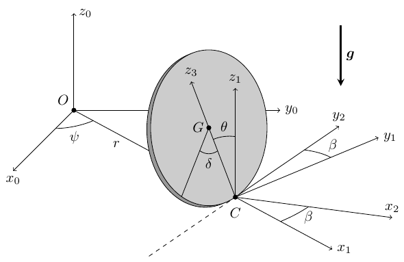
-
(a)
How many degrees of freedom does the motion of the coin have, when the coin can roll and slip, and when the coin can roll but not slip?
-
(b)
Assuming that the coin can slip, obtain the general expression of $\boldsymbol\omega_{B0}$, $\boldsymbol\alpha_{B0}$, $\mathbf r_0^G$, $\mathbf v_0^G$, and $\mathbf a_0^G$ as a function of the coordinates of the problem and their time derivatives.
From this point on, consider that the friction coefficient between the coin and the plane is $\mu = \infty$, so the coin can roll but not slip:
-
(c)
Derive the scalar constraint equation(s) between the time derivatives of the coordinates of the problem that result from the no-slipping condition.
-
(d)
Identify and express all the external forces acting on the coin and the torque that they produce about $G$, introducing any necessary additional unknowns.
-
(e)
Write down the equations of motion of the coin in scalar form. Discuss whether any simple conservation law exists in the problem and justify your answer.
-
(f)
Finally, consider the particular case in which the coin moves with $\beta = 0$ and $\mathbf r_0^G = h\mathbf k_0$, where $h < R$ is constant. Give the value of $r$, $\theta$, and the reaction forces in this case. What is the relation between $h$ and $\dot\psi$? Comment on this result.
NOTE: The moment of inertia of a disk of mass $m$ and radius $R$ about its axis of rotational symmetry is $mR^2/2$.
Worked Solution [ Click to Expand ]
Reference Frames, Bases and Degrees of Freedom
- Physical system: a homogeneous coin $b$ of mass $m$, radius $R$, centre $G$ and negligible thickness, always touching a fixed horizontal plane at the point $C$ of its rim. Gravity acts downwards.
- Fixed frame: $S_0\{O; \mathcal B_0\}$, with the basis $\{\mathbf i_0, \mathbf j_0, \mathbf k_0\}$, $O$ on the plane and $\mathbf k_0$ vertical upwards. The plane is at rest, so this frame is inertial.
- Polar frame of the contact point: $S_1\{C; \mathbf i_1, \mathbf j_1, \mathbf k_1\}$, with $\mathbf i_1$ along $OC$ (radial), $\mathbf j_1$ horizontal and normal to it, $\mathbf k_1$ equal to $\mathbf k_0$; $(r, \psi)$ are the polar coordinates of $C$.
- Euler angles with respect to $S_1$: $\beta$ turns $\mathcal B_1$ about the vertical into $\mathcal B_2$, the basis $\{\mathbf x_2, \mathbf y_2, \mathbf k_1\}$; $\mathbf y_2$ is the horizontal tangent to the rim at $C$. $\theta$ tilts the coin about the line $\mathbf y_2$ into $\mathcal B_3$, the basis $\{\mathbf x_3, \mathbf y_2, \mathbf z_3\}$, with $\mathbf z_3$ along $CG$ and $\mathbf x_3$ normal to the coin (the coin lies in the plane $C y_2 z_3$). $\delta$ turns the coin about its normal $\mathbf x_3$ into the body basis $\mathcal B_b$, that is $\{\mathbf x_3, \mathbf y_4, \mathbf z_4\}$.
- Signs, read from the figure: $\beta$ is positive about $\mathbf k_1$. $\theta$ is positive when $\mathbf z_3$ leans from the vertical towards minus $\mathbf x_2$ (towards the side of $O$ when $\beta$ is zero, as in part (f), where $G$ is above $O$); this is a positive rotation about minus $\mathbf y_2$. $\delta$ is taken positive about $\mathbf x_3$ (the figure shows its magnitude only; the other choice changes the sign of $\delta$ in every formula).
- Part (a), degrees of freedom: a free rigid body has six coordinates. Contact with the plane (Notes.pdf, Eq. 13.1) fixes the height of $G$ in terms of $\theta$: five coordinates remain, $r$, $\psi$, $\beta$, $\theta$, $\delta$. If the coin can slip, it has five degrees of freedom. Rolling without slip adds two scalar conditions between the rates (part (c)) that cannot be integrated: the coin keeps five coordinates but has three degrees of freedom (independent velocities).
| Datum | Symbol | SI unit |
|---|---|---|
| Mass of the coin, homogeneous, thin | $m$ | kg |
| Radius | $R$ | m |
| Moment of inertia about the symmetry axis (statement) | $mR^2/2$ | kg m$^2$ |
| Polar coordinates of $C$ | $r$, $\psi$ | m, rad |
| Euler angles with respect to $S_1$ | $\beta$, $\theta$, $\delta$ | rad |
| Friction coefficient from part (c) on | $\mu$ infinite (no slip) | - |
| Part (f) | $\beta = 0$, $\mathbf r_0^G = h\,\mathbf k_0$ with $h$ constant, smaller than $R$ | m |
| Gravity | $g$, along $-\mathbf k_0$ | m/s$^2$ |
Change of Basis, Position Vectors and Constraint Kinematics
View of the plane from above with $\mathbf k_0$ out of the paper (⊙), $\mathbf i_0$ to the right and $\mathbf j_0$ up; a positive $\psi$ turns counterclockwise. Triangle of $\mathbf i_1$: hypotenuse 1, adjacent leg along $\mathbf i_0$ (cosine of $\psi$), opposite leg along $\mathbf j_0$ (sine). Triangle of $\mathbf j_1$: adjacent leg along $\mathbf j_0$ (cosine), opposite leg along minus $\mathbf i_0$ (sine), because the counterclockwise turn carries the tip of $\mathbf j_0$ to the left.
Units: dimensionless; $[\mathrm{T^{-1}}]$; $[\mathrm L]$
Meaning: the frame $S_1$ follows the contact point round $O$; $\beta$ is measured from its radial direction.
Same view from above at $C$, $\mathbf k_1$ out of the paper (⊙). Triangle of $\mathbf x_2$: adjacent leg along $\mathbf i_1$ (cosine of $\beta$), opposite leg along $\mathbf j_1$ (sine). Triangle of $\mathbf y_2$: adjacent leg along $\mathbf j_1$ (cosine), opposite leg along minus $\mathbf i_1$ (sine).
Units: dimensionless; $[\mathrm{T^{-1}}]$
Meaning: $\psi$ plus $\beta$ is the heading of the coin measured from $\mathbf i_0$; only its rate $\Lambda$ enters the rotation of the coin.
Vertical section through $C$ normal to the tangent $\mathbf y_2$, with $\mathbf x_2$ to the right and $\mathbf k_1$ up. The product of $\mathbf x_2$ and $\mathbf k_1$ is minus $\mathbf y_2$, so in this right-handed view $\mathbf y_2$ points into the paper (⊗) and minus $\mathbf y_2$ out of it (⊙). The coin appears edge-on as the segment $CG$ extended; it leans to the left by $\theta$, a counterclockwise turn, which is a positive rotation about minus $\mathbf y_2$. Triangle of $\mathbf z_3$: hypotenuse 1 along $CG$, adjacent leg along $\mathbf k_1$ (cosine of $\theta$), opposite leg along minus $\mathbf x_2$ (sine). Triangle of $\mathbf x_3$: adjacent leg along $\mathbf x_2$ (cosine), opposite leg along $\mathbf k_1$ (sine).
Units: dimensionless; $[\mathrm{T^{-1}}]$
Meaning: $\mathbf x_3$ is the normal of the coin, lifted by $\theta$ above the horizontal; $\theta$ zero is the upright coin.
View of the face of the coin with its normal $\mathbf x_3$ out of the paper (⊙), $\mathbf y_2$ to the right and $\mathbf z_3$ up; this is right-handed because the product of $\mathbf y_2$ and $\mathbf z_3$ is $\mathbf x_3$. A positive $\delta$ turns counterclockwise. Triangle of $\mathbf y_4$: adjacent leg along $\mathbf y_2$ (cosine of $\delta$), opposite leg along $\mathbf z_3$ (sine). Triangle of $\mathbf z_4$: adjacent leg along $\mathbf z_3$ (cosine), opposite leg along minus $\mathbf y_2$ (sine).
Units: dimensionless; $[\mathrm{T^{-1}}]$
Meaning: the coin differs from $\mathcal B_3$ only by a turn about its own axis; the tensor of inertia will have the same matrix in both bases.
Units: $[\mathrm{T^{-1}}]$; $[\mathrm{T^{-2}}]$
Meaning: $\Lambda$ is the rate of $\psi$ plus the rate of $\beta$, and its derivative is the sum of the second rates. The component along the normal $\mathbf x_3$ is the spin of the coin; the other two describe the turning and the tilting of its plane.
$G$ is at the distance $R$ from the rim point $C$ along the diameter $\mathbf z_3$.
Writing $\mathbf i_1$, $\mathbf j_1$ with the rows of $[{}_1R_2]$ and $\mathbf x_3$, $\mathbf z_3$ with the columns of $[{}_2R_3]$, the components of the acceleration along $\mathbf x_2$, $\mathbf y_2$, $\mathbf k_1$ are
Units: $[\mathrm{L\,T^{-2}}]$ in every bracket (a length times a squared rate)
Meaning: the vertical component is the second derivative of the height of $G$, which is $R$ times the cosine of $\theta$; the first two terms of the horizontal components are the polar acceleration of the contact point, the others the motion of $G$ relative to $C$.
Write the components of the angular velocity in $\mathcal B_3$ as $\omega_x$, $\omega_y$, $\omega_z$ (part (b)). The body point at $C$ is at minus $R\,\mathbf z_3$ from $G$.
Units: $[\mathrm{L\,T^{-1}}]$ in every term
Meaning: the vertical component vanishes identically (contact is kept). The geometric contact point must travel along the tangent $\mathbf y_2$ of the coin, at the speed at which the rim unrolls, $R$ times the rate of $\delta$. Two conditions on the rates that cannot be integrated into relations among $r$, $\psi$, $\beta$, $\delta$: rolling with $\beta$ held at zero changes $\psi$ and $\delta$ at fixed $r$, rolling with $\beta$ held at a right angle changes $r$ and $\delta$ at fixed $\psi$, and turning $\beta$ costs nothing, so every combination of $r$, $\psi$ and $\delta$ can be reached and no finite relation among them exists (the formal proof that the form is not integrable is an extension). This is why the coin keeps five coordinates but only three degrees of freedom, as stated in part (a).
Center of Mass and Inertia Tensor
Polar coordinates $(\rho, \chi)$ in the plane of the coin about $G$, with $\rho$ from 0 to $R$ and $\chi$ from 0 to $2\pi$ measured from $\mathbf y_2$; area element $\rho\,d\rho\,d\chi$; surface density $\sigma$. A point of the coin is at $\rho\cos\chi$ along $\mathbf y_2$ and $\rho\sin\chi$ along $\mathbf z_3$, and at zero distance along the normal (negligible thickness). The centre of mass is the centre $G$ (symmetry).
Units: $[\mathrm M][\mathrm L^2]$
Meaning: the axial moment $I_1 = mR^2/2$ agrees with the datum of the statement. Every diameter is a principal axis with the moment $mR^2/4$, so $\mathcal B_3$, which does not spin with the coin, is a principal basis at all times.
Linear Momentum, Angular Momentum and Kinetic Energy
Units: kg m/s; kg m$^2$/s; J
Meaning: the angular momentum is not parallel to the angular velocity: the spin component is weighted twice as much as the other two.
Free-Body Diagram and Equations of Motion
| Force on the coin | Point of application | Expression | Kind |
|---|---|---|---|
| Weight | $G$ | $-mg\,\mathbf k_1$ | applied |
| Normal reaction of the plane | $C$ | $N\,\mathbf k_1$, $N \ge 0$ (new unknown) | constraint |
| Friction of the plane | $C$ | $F_x\,\mathbf x_2 + F_y\,\mathbf y_2$ (two new unknowns; no slip) | constraint |
Units: N; N m
Meaning: the contact force acts on the diameter through $G$, so it has no moment along $\mathbf z_3$; the friction along the tangent spins the coin, and the normal reaction together with the radial friction tries to tip it about the tangent $\mathbf y_2$.
Units: N in every equation
Meaning: the normal reaction differs from the weight only while the height of $G$ accelerates.
Write $I_1$ for $mR^2/2$ and $I_2$ for $mR^2/4$. The basis $\mathcal B_3$ turns with the angular velocity $\boldsymbol\omega_{30}$ of the tilt box, whose components are $\omega_x$ minus the rate of $\delta$, $\omega_y$ and $\omega_z$. The pole $G$ is the centre of mass, so Eq. 12.13 has no term in the velocity of the pole.
Units: N m in every equation ($[\mathrm M][\mathrm L^2][\mathrm{T^{-2}}]$)
Meaning: in the boxed lines the bracket of $I_1$ times $\omega_x$ minus $I_2\Lambda\sin\theta$ is written as $\tfrac14 mR^2$ times twice the rate of $\delta$ plus $\Lambda\sin\theta$. With the three Newton equations and the two rolling conditions of part (c) these are eight scalar equations for the eight unknowns $r$, $\psi$, $\beta$, $\theta$, $\delta$, $N$, $F_x$, $F_y$.
The contact force acts on the body point $C(B)$, whose velocity is zero by the rolling condition; the weight derives from the potential of the momentum box.
Units: J
Meaning: the mechanical energy is the only simple conserved quantity. The linear momentum is not conserved (the friction is in general nonzero); the angular momentum about $G$ is not (the contact force has a moment about $G$); and its component along the vertical through any fixed point is not either, because the horizontal friction has a moment about that vertical whenever the contact point is not on it. The spin $\omega_x$ is not constant: the first Euler equation shows that the tangential friction changes it. (The rolling disk has two further first integrals, found by Chaplygin and Appell, which are not simple: this remark is an extension.) The real Euler's disk does lose energy, through rolling resistance and the air, which is what the next part explains.
With $\beta$ zero, $\mathbf x_2$ is $\mathbf i_1$ and $\mathbf y_2$ is $\mathbf j_1$; the rate of $\beta$ is zero, so $\Lambda$ is the rate of $\psi$. The right triangle $C$, $G$, foot of $G$ on the plane (which is $O$): hypotenuse $CG$ of length $R$, vertical leg $h$ (adjacent to $\theta$), horizontal leg $r$ (opposite to $\theta$).
Units: $[\mathrm L][\mathrm{T^{-2}}] = [\mathrm{L\,T^{-2}}]$, an acceleration on both sides
Meaning: the angular velocity is along $CG$: the coin turns about the line joining the contact point and the fixed centre, so $G$ stays at rest and the contact point runs round $O$ on a circle of radius $r$ at the constant rate of $\psi$, while the angular velocity has no component along the normal of the coin (the spin of the coin about its own axis cancels against the part of the rate of $\psi$ along that axis), so the face of the coin turns about the vertical only at the small rate of $\psi$ times one minus the sine of $\theta$. No friction is needed: the weight and the normal reaction form a couple, of arm $r$, that turns the angular momentum about the vertical. The lower $G$, the faster the motion: the rate of $\psi$ grows as one over the square root of $h$ and has no bound as the coin lies down. The energy of this motion is $mgh$ plus one eighth of $mh^2$ times the squared rate of $\psi$, that is $\tfrac32 mgh$: a real coin that loses energy slowly passes through these states with decreasing $h$, so its contact point circles faster and faster, the rising whirr of Euler's disk, until it stops abruptly.
Answers and Checks
| Asked | Answer |
|---|---|
| (a) Degrees of freedom | 5 with slip ($r$, $\psi$, $\beta$, $\theta$, $\delta$); 3 when rolling without slip (5 coordinates, 2 non-integrable conditions) |
| (b) Kinematics | $\boldsymbol\omega = (\dot\delta + \Lambda\sin\theta)\,\mathbf x_3 - \dot\theta\,\mathbf y_2 + \Lambda\cos\theta\,\mathbf z_3$, $\Lambda = \dot\psi + \dot\beta$; $\boldsymbol\alpha$, $\mathbf v^G$, $\mathbf a^G$ in the boxes of part (b); $\mathbf r^G = (r - R\sin\theta\cos\beta)\,\mathbf i_1 - R\sin\theta\sin\beta\,\mathbf j_1 + R\cos\theta\,\mathbf k_0$ |
| (c) Rolling | $\dot r\cos\beta + r\dot\psi\sin\beta = 0$, $-\dot r\sin\beta + r\dot\psi\cos\beta + R\dot\delta = 0$ |
| (d) Forces | weight $-mg\,\mathbf k_1$ at $G$; $N\,\mathbf k_1 + F_x\,\mathbf x_2 + F_y\,\mathbf y_2$ at $C$; $\mathbf M_G = RF_y\,\mathbf x_3 - R(F_x\cos\theta + N\sin\theta)\,\mathbf y_2$ |
| (e) Equations | three Newton equations, three Euler equations (boxes of part (e)) and two rolling conditions; only the mechanical energy $T_0 + mgR\cos\theta$ is conserved |
| (f) Steady motion | $r = \sqrt{R^2 - h^2}$, $\theta = \arccos(h/R)$, $N = mg$, no friction, $h\dot\psi^2 = 4g$ |
Problems.pdf prints no answer for this problem (see Problem Set - Rigid Body Official Key), so the results are checked with an independent derivation and limiting cases.
In the steady motion $\mathbf H_G$ is $I_2$ times the rate of $\psi$ times the cosine of $\theta$ along $\mathbf z_3$, a vector of constant length turning about $\mathbf k_1$ at the rate of $\psi$.
Units: $[\mathrm{T^{-2}}]$
Meaning: the gyroscopic argument, with no Euler angle derivative to expand, gives the same relation as part (f).
Limiting cases and consistency:
- Upright coin. As $h$ tends to $R$, $\theta$ and $r$ tend to zero: the coin stands on its rim at $O$ and spins about its vertical diameter, with the rate of $\psi$ tending to $2\sqrt{g/R}$, the lowest rate allowed by the relation; for the upright coin itself the tipping moment vanishes and any rate is possible.
- Flat coin. As $h$ tends to zero the rate of $\psi$ grows without bound while the energy, three halves of $mgh$, tends to zero: in the ideal model the rate of $\psi$ grows without bound as the energy is drained (an extension: whether this happens in finite time depends on the dissipation law, which the course does not cover).
- Numbers. For $R$ equal to 0.04 m and $h$ equal to 0.01 m, the rate of $\psi$ is $\sqrt{4\cdot 9.81/0.01}$, about 62.6 rad/s (about 10 turns per second), with $\theta$ about 75.5 deg.
- Dimensions. Every Newton equation is in N, every Euler equation in N m; both rolling conditions are velocities.
Interactive geometry simulator: it needs JavaScript. The figures above show the same geometry.
Two thin, heavy, homogeneous wheels, of center $C_1$ and $C_2$ and radius $a$ and $2a$ respectively, are connected to each other with a massless, perpendicular axle of length $\sqrt{3}\,a$ forming a single rigid body $b$ as shown in the figure. The surface density of the wheel material is $\sigma$. We label the points of the rigid body that are in contact with the ground at each instant as $P$ and $Q$. The friction coefficient $\mu$ between the wheels and the ground is sufficiently large to ensure that the wheels always roll without slipping. We define the inertial reference frame $S_0$ and the auxiliary, rotating reference frame $S_1$ as shown. We also define other auxiliary vectors in the figure, $\mathbf i_2, \mathbf j_2, \mathbf i_3, \mathbf j_3$. The axis $Oy_1$ follows points $P$ and $Q$ as they move. The angle $\psi$ is measured between the axes $Ox_0$ and $Ox_1$. The angle $\phi$ is the angle that the wheels have rotated about the axle since the initial instant of time. Initially, $\psi = 0$, $\phi = 0$, and vector $\mathbf i_3$ points in the direction of $\mathbf{C_2Q}$.
Hint: Observe that the points $O$, $C_1$, and $C_2$ are always aligned. Remember to define all the vector bases that you use as a function of the vectors $\mathbf i_0$, $\mathbf j_0$, $\mathbf k_0$, or other, already defined vectors.
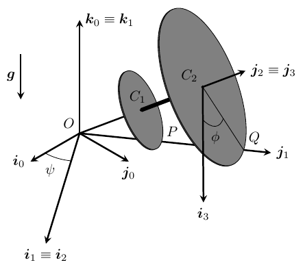
-
(a)
Compute the total mass $m$, the distance between point $C_1$ on the axle and the center of mass $G$, and the tensor of inertia about $G$ of the object.
Hint: the tensor of inertia of a thin, homogeneous disk of mass $M$ and radius $L$ about its center $C$, expressed in a vector basis with the second unit vector perpendicular to the disk, is given by:
In the rest of the problem, you can name the resulting inertia tensor components with letters $A$, $B$, etc. and use them instead of their numerical expressions.
-
(b)
Write down the position, velocity, and acceleration of $G$, and the angular velocity and acceleration of the rigid body $b$, with respect to $S_0$.
-
(c)
Find out the kinematic relation between $\psi$ and $\phi$.
-
(d)
Identify and write down the general expression of all the forces acting on the rigid body, and reduce them to the resultant force and resultant moment of force about $G$.
-
(e)
Write down the equations of motion for the rigid body in the form of 6 scalar differential equations.
-
(f)
Find out the maximum value of $\dot\psi$ for which both wheels remain in contact with the ground.
-
(g)
Discuss whether the mechanical energy of the rigid body in $S_0$ is conserved in this problem. Note that you do not need to write down the equation of mechanical energy.
-
(h)
Is the system of equations of question (e) closed? Why, or why not?
Worked Solution [ Click to Expand ]
Reference Frames, Bases and Degrees of Freedom
- Physical system: a rigid body $b$ made of two thin homogeneous wheels of surface density $\sigma$, of centres $C_1$ and $C_2$ and radii $a$ and $2a$, joined by a massless axle of length $\sqrt3\,a$ normal to both wheels. Both wheels touch the horizontal ground, at the body points $P$ and $Q$, and roll without slipping. Gravity acts downwards.
- Fixed frame: $S_0\{O; \mathbf i_0, \mathbf j_0, \mathbf k_0\}$, with $\mathbf k_0$ vertical upwards and $O$ the point of the ground where the line of the axle meets it (figure). The ground is at rest, so this frame is inertial.
- Rotating frame: $S_1\{O; \mathbf i_1, \mathbf j_1, \mathbf k_1\}$, turned by $\psi$ about $\mathbf k_0$, with $\mathbf j_1$ along $OPQ$ on the ground and $\mathbf k_1$ equal to $\mathbf k_0$.
- Frame of the axle: $\mathcal B_2$, the basis $\{\mathbf i_2, \mathbf j_2, \mathbf k_2\}$ with $\mathbf i_2$ equal to $\mathbf i_1$ and $\mathbf j_2$ along the axle from $O$ through $C_1$ to $C_2$; it is fixed in $S_1$ (the inclination of the axle is constant, see below).
- Body basis: $\mathcal B_3$, the basis $\{\mathbf i_3, \mathbf j_3, \mathbf k_3\}$ with $\mathbf j_3$ equal to $\mathbf j_2$, turned by $\phi$ about the axle; at the initial instant $\mathbf i_3$ points along $C_2Q$. Read from the figure, which shows only the angle between $\mathbf i_3$ and the line $C_2Q$, not its sense: $\phi$ is taken positive about $\mathbf j_2$ (right-hand rule along the axle oriented from $C_1$ to $C_2$). With the opposite sense the rolling condition only changes its sign (the box of part (c) gives the result) and nothing else changes, because $\phi$ is eliminated before the dynamics.
- Degrees of freedom: a free body has six coordinates. Contact of both wheels with the ground gives two conditions (Notes.pdf, Eq. 13.1); they fix the height and the inclination of the axle. Of the four remaining coordinates, the two coordinates of $O$ on the ground stay constant in the motion, as the figure takes them (rolling at $P$ and $Q$ forbids any velocity of the apex of the cone that the wheels define); the angles $\psi$ and $\phi$ remain. Rolling adds one relation between them (part (c)): the body has one degree of freedom.
| Datum | Symbol | SI unit |
|---|---|---|
| Surface density of the wheels | $\sigma$ | kg/m$^2$ |
| Radius of the small wheel (centre $C_1$) | $a$ | m |
| Radius of the large wheel (centre $C_2$) | $2a$ | m |
| Length of the axle, massless, normal to both wheels | $\sqrt3\,a$ | m |
| Angles | $\psi$ (about $\mathbf k_0$), $\phi$ (about the axle) | rad |
| Initial state | $\psi = 0$, $\phi = 0$, $\mathbf i_3$ along $C_2Q$ | rad |
| Gravity | $g$, along $-\mathbf k_0$ | m/s$^2$ |
Change of Basis, Position Vectors and Constraint Kinematics
View from above with $\mathbf k_0$ out of the paper (⊙). In the figure $\mathbf j_0$ is turned into $\mathbf j_1$ (and $\mathbf i_0$ into $\mathbf i_1$) by a counterclockwise turn seen from above, a positive rotation about $\mathbf k_0$. Triangle of $\mathbf i_1$: hypotenuse 1, adjacent leg along $\mathbf i_0$ (cosine of $\psi$), opposite leg along $\mathbf j_0$ (sine). Triangle of $\mathbf j_1$: adjacent leg along $\mathbf j_0$ (cosine), opposite leg along minus $\mathbf i_0$ (sine).
Units: dimensionless; $[\mathrm{T^{-1}}]$
Meaning: $S_1$ carries the vertical plane that contains the axle and the two contact points.
The lowest point of a wheel lies in the vertical plane through its axis, so $C_1$, $C_2$, $P$, $Q$ lie in the vertical plane of $\mathbf j_1$ and $\mathbf k_1$; $C_1P$ and $C_2Q$ are radii, normal to the axle in that plane, hence parallel. The axle line meets the ground at $O$ (hint: $O$, $C_1$, $C_2$ aligned). View of that plane with $\mathbf j_1$ to the right and $\mathbf k_1$ up; the product of $\mathbf j_1$ and $\mathbf k_1$ is $\mathbf i_1$, so $\mathbf i_1$ points out of the paper (⊙) and a positive rotation about it looks counterclockwise. Right triangle $OC_1P$: right angle at $C_1$, adjacent leg $OC_1$ along the axle, opposite leg $C_1P$ of length $a$, hypotenuse $OP$ on the ground; $\gamma$ is the angle at $O$. Right triangle $OC_2Q$: the same angle, opposite leg $2a$.
Units: lengths in $[\mathrm L]$; dimensionless basis
Meaning: the wheels behave as two sections of a cone with its apex at $O$ and half-angle 30 deg; the axle stays 30 deg above the ground, so $\mathcal B_2$ is fixed in $S_1$. Check: $\sqrt3 a\,\mathbf j_2$ minus $a\,\mathbf k_2$ is $2a\,\mathbf j_1$, the point $P$ on the ground.
View along the axle from $O$, with $\mathbf j_2$ pointing into the paper (⊗), $\mathbf i_2$ to the right and $\mathbf k_2$ up; this is right-handed because the product of $\mathbf i_2$ and $\mathbf k_2$ is minus $\mathbf j_2$, and a positive rotation about an axis pointing into the paper looks clockwise. At $\phi$ zero the body basis is $\{-\mathbf k_2, \mathbf j_2, \mathbf i_2\}$ ($\mathbf i_3$ along $C_2Q$; the product of $-\mathbf k_2$ and $\mathbf j_2$ is $\mathbf i_2$). The clockwise turn by $\phi$ carries the tip of $-\mathbf k_2$ towards $-\mathbf i_2$. Triangle of $\mathbf i_3$: hypotenuse 1, adjacent leg along minus $\mathbf k_2$ (cosine of $\phi$), opposite leg along minus $\mathbf i_2$ (sine). Triangle of $\mathbf k_3$: adjacent leg along $\mathbf i_2$ (cosine), opposite leg along minus $\mathbf k_2$ (sine).
Units: dimensionless; $[\mathrm{T^{-1}}]$
Meaning: $\phi$ only marks the turn of the wheels about the axle; the wheels are bodies of revolution about $\mathbf j_2$, so the inertia tensor will not depend on it.
Units: $[\mathrm{T^{-1}}]$; $[\mathrm{T^{-2}}]$
Meaning: the term along $\mathbf i_1$ appears because the spin vector along the axle is carried round the vertical by the rate of $\psi$.
$G$ lies on the axle at $\tfrac45\sqrt3\,a$ from $C_1$ (centre of mass box below), so at $\sqrt3 a$ plus that distance from $O$.
Units: $[\mathrm L]$; $[\mathrm{L\,T^{-1}}]$; $[\mathrm{L\,T^{-2}}]$
Meaning: $G$ moves on a horizontal circle of radius $\tfrac{27}{10}a$ about the vertical through $O$, at the constant height $\tfrac{9\sqrt3}{10}a$ (about 1.56 times $a$); the term along minus $\mathbf j_1$ is the centripetal acceleration, towards the axis.
The velocity of $C_1$ follows from its position $\sqrt3 a\,\mathbf j_2$, that is $\tfrac32 a\,\mathbf j_1$ plus $\tfrac{\sqrt3}{2}a\,\mathbf k_1$, exactly as for $G$. Products needed: $\mathbf j_1\times\mathbf k_2$ is $\tfrac{\sqrt3}{2}\mathbf i_1$ and $\mathbf k_1\times\mathbf k_2$ is $\tfrac12\mathbf i_1$ (from $\mathbf k_2$ in $\mathcal B_1$).
Units: $[\mathrm{T^{-1}}]$; $[\mathrm{T^{-2}}]$
Meaning: the two contact conditions coincide because both contact points lie on the generatrix $OPQ$ of the same cone: once the vertical component of the angular velocity cancels, the angular velocity lies along $OPQ$, the instantaneous axis, and every point of that line (also $O$) is at rest. The wheels turn twice as fast as the axle goes round, in the sense of minus $\mathbf j_2$ (with the opposite convention for $\phi$, the relation would read $\phi$ equal to $2\psi$).
Center of Mass and Inertia Tensor
Each wheel is symmetric about its centre; the axle is massless.
Units: kg; m
Meaning: the large wheel has four times the mass of the small one, so $G$ is four fifths of the way from $C_1$ to $C_2$.
A wheel of mass $M$, radius $L$, centre $C$, in the plane of $\mathbf i_2$ and $\mathbf k_2$, normal $\mathbf j_2$. Polar coordinates $(\rho, \chi)$ with $\rho\cos\chi$ along $\mathbf i_2$ and $\rho\sin\chi$ along $\mathbf k_2$; area element $\rho\,d\rho\,d\chi$; $M$ is $\sigma\pi L^2$.
Units: $[\mathrm M][\mathrm L^2]$
Meaning: this is the tensor of the hint of the statement, recovered from its integrals.
Each centre is displaced from $G$ along $\mathbf j_2$ only, by $d_1$ for $C_1$ and $d_2$ for $C_2$. Steiner's theorem adds to the central tensor of each wheel its mass times the square of the displacement on the diagonal terms of the two axes normal to the displacement ($\mathbf i_2$ and $\mathbf k_2$), nothing on the axis of the displacement, and no products (the displacement has one component only).
Units: $[\mathrm M][\mathrm L^2]$
Meaning: the body is a body of revolution about the axle, so the tensor has the same matrix in the basis $\mathcal B_2$, which does not spin; $A$ is smaller than $B$ here, although the wheels sit apart along the axle.
Linear Momentum, Angular Momentum and Kinetic Energy
With rolling, the angular velocity is minus $\sqrt3$ times the rate of $\psi$ along $\mathbf j_1$, and $\mathbf j_1$ is $\tfrac{\sqrt3}{2}\mathbf j_2$ minus $\tfrac12\mathbf k_2$. The basis $\mathcal B_2$ turns at $\dot\psi\,\mathbf k_1$, with $\mathbf k_1$ equal to $\tfrac12\mathbf j_2$ plus $\tfrac{\sqrt3}{2}\mathbf k_2$.
Units: N m; J
Meaning: even at a constant rate of $\psi$ the angular momentum changes: its horizontal part is carried round the vertical, which needs a moment along $\mathbf i_1$ (the gyroscopic term). With the numbers, $A + 3B$ is $\tfrac{643}{100}ma^2$.
Free-Body Diagram and Equations of Motion
| Force on the body | Point of application | Expression in $\mathcal B_1$ | Kind |
|---|---|---|---|
| Weight | $G$ | $-mg\,\mathbf k_1$ | applied |
| Contact force of the ground on the small wheel | $P$ | $X_P\,\mathbf i_1 + Y_P\,\mathbf j_1 + N_P\,\mathbf k_1$, $N_P \ge 0$ | constraint |
| Contact force of the ground on the large wheel | $Q$ | $X_Q\,\mathbf i_1 + Y_Q\,\mathbf j_1 + N_Q\,\mathbf k_1$, $N_Q \ge 0$ | constraint |
Units: N; N m
Meaning: the radial friction forces $Y_P$ and $Y_Q$ act on the same line $OPQ$, so they enter the resultant and the moment only through their sum.
The pole $G$ is the centre of mass, so Eq. 12.13 has no term in the velocity of the pole.
Units: N for the forces; N m for the moments
Meaning: the only coordinate left is $\psi$; the other unknowns are the contact components.
Units: N for every force ($m$ times $a$ times a squared rate is a force)
Meaning: the body goes round at a constant rate fixed by the initial condition. At rest the ground carries thirteen twentieths of the weight on the small wheel, because $G$ is horizontally closer to $P$ (0.7 times $a$) than to $Q$ (1.3 times $a$). As the rate grows, the gyroscopic moment and the moment of the centripetal force about $G$ both transfer load to the outer, large wheel.
$N_Q$ is always positive, so the small wheel is the one that can leave the ground.
Units: $[\mathrm{L\,T^{-2}}]/[\mathrm L] = [\mathrm{T^{-2}}]$
Meaning: for $a$ equal to 0.1 m the limit is about 4.27 rad/s, about 0.68 turns of the axle round $O$ per second.
Units: J
Meaning: the mechanical energy is conserved: the contact forces do no work because the body points where they act are at rest, and the weight does no work because $G$ stays at the same height. Its conservation is equivalent to the uniform rotation found in the reduction box.
Units: dimensionless count
Meaning: the two radial friction forces lie on the same line $OPQ$, so no equation of the rigid body can separate them: the motion, the normal reactions, the transverse frictions and the sum of the radial frictions are determined, but the split of that sum between the two wheels is statically indeterminate. It would need a model of the deformation of the wheels or of the contact.
Answers and Checks
| Asked | Answer |
|---|---|
| (a) Mass, $G$, tensor | $m = 5\pi\sigma a^2$; $\lvert C_1G\rvert = 4\sqrt3 a/5$; $\bar{\bar I}_G = \mathrm{diag}(A, B, A)$ in $\{\mathbf i_2, \mathbf j_2, \mathbf k_2\}$, $A = \tfrac{133}{100}ma^2$, $B = \tfrac{17}{10}ma^2$ |
| (b) Kinematics | $\mathbf r^G = \tfrac{27}{10}a\,\mathbf j_1 + \tfrac{9\sqrt3}{10}a\,\mathbf k_1$, $\mathbf v^G = -\tfrac{27}{10}a\dot\psi\,\mathbf i_1$, $\mathbf a^G = -\tfrac{27}{10}a(\ddot\psi\,\mathbf i_1 + \dot\psi^2\,\mathbf j_1)$; $\boldsymbol\omega = \tfrac{\sqrt3}{2}\dot\phi\,\mathbf j_1 + (\dot\psi + \tfrac12\dot\phi)\,\mathbf k_1$, $\boldsymbol\alpha = -\tfrac{\sqrt3}{2}\dot\psi\dot\phi\,\mathbf i_1 + \tfrac{\sqrt3}{2}\ddot\phi\,\mathbf j_1 + (\ddot\psi + \tfrac12\ddot\phi)\,\mathbf k_1$ |
| (c) Rolling | $\dot\phi = -2\dot\psi$, $\phi = -2\psi$ ($\phi$ positive about $\mathbf j_2$) |
| (d) Forces | weight at $G$; $(X_P, Y_P, N_P)$ at $P$, $(X_Q, Y_Q, N_Q)$ at $Q$; $\mathbf F$ and $\mathbf M_G$ of the part (d) box |
| (e) Equations | six equations of the part (e) box; they give $\ddot\psi = 0$ |
| (f) Maximum rate | $\dot\psi^2_{\max} = 104g/(323\sqrt3\,a)$ |
| (g) Energy | conserved |
| (h) Closure | not closed: 7 unknowns, 6 equations; only $Y_P + Y_Q$ is determined |
Check against the official key: Problems.pdf, p. 81, sets $N_P$ to zero in the first rotational equation (the moment along $\mathbf i_1$), writes it with the gyroscopic term in $A + 3B$ and the term $9\sqrt3$ times $27/10$, and gives the maximum squared rate of $\psi$ as $104g$ divided by $323\sqrt3\,a$. The reduction box above, multiplied by ten over $ma^2$, is the same equation, and part (f) gives the same maximum: match.
Units: $[\mathrm{T^{-2}}]$
Meaning: the key's equation is the moment equation of this solution; its numbers follow from the tensor of part (a).
Limiting cases and consistency:
- Rest. With the rate of $\psi$ zero, the normal reactions are thirteen twentieths and seven twentieths of $mg$: the static split of the weight between $P$ and $Q$ by the lever rule about the vertical through $G$.
- No gyroscopic term. Without the term in $A + 3B$ the limit would come from the centripetal force alone, with the squared rate equal to $13g/(24.3\sqrt3\,a)$, about $0.309\,g/a$: the gyroscopic term lowers the limiting squared rate by about 40 percent (the limiting rate by about 22 percent).
- Sign of the rate. Only the square of the rate of $\psi$ enters $N_P$: turning either way gives the same limit.
- Dimensions. $A$ and $B$ are a mass times a squared length; every term of the key's equation is in $[\mathrm{T^{-2}}]$.
Interactive geometry simulator: it needs JavaScript. The figures above show the same geometry.
Disk rolling without slip over a bigger cylinder
Original statement · Problems.pdf, p. 66A homogeneous, heavy disk b of mass $m$, radius $R$, and center $G$ rolls without slip on a stationary cylinder of radius $3R$ and center $O$. We call $C$ the instantaneous point of contact between the two. We assume that the friction coefficient $\mu$ between the disk and the cylinder is infinite. To study the motion of the disk, we define an inertial reference frame $S_0$ and a body-fixed reference frame $S_b$, and we introduce the angles $\psi$ and $\phi$, as shown in the figure. The body point $P$ on the disk, with position $\mathbf{r}_b^P = R\,\mathbf{i}_b$, feels a repulsive force from point $A$, located at $\mathbf{r}_0^A = -6R\,\mathbf{j}_0$, whose magnitude is equal to a known constant $k$ times the distance between $A$ and $P$. Initially, $\psi_0 = \phi_0 = 0$ and the disk is at rest.
Data: the moment of inertia of the disk about a line perpendicular to the drawing passing through $G$ is $I = mR^2/2$.
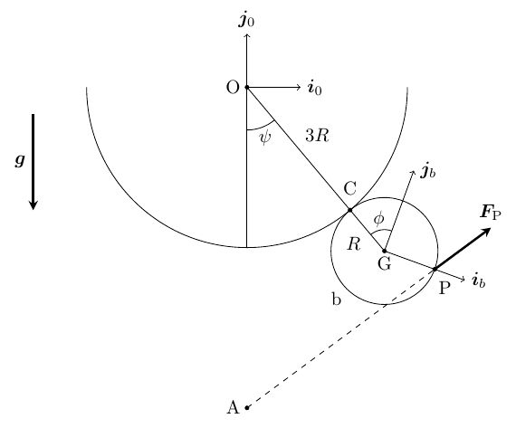
Assuming that the disk and the cylinder are always in contact:
-
(a)
How many effective degrees of freedom does the system have? Define $\mathbf{i}_b$, $\mathbf{j}_b$, and any other unit vectors that you want to use to solve the problem, in terms of $\{\mathbf{i}_0, \mathbf{j}_0, \mathbf{k}_0\}$.
-
(b)
Give the general expressions for the position, velocity, and acceleration of $G$ and the angular velocity and acceleration of b with respect to $S_0$, as a function of $\psi$, $\phi$ and their derivatives.
-
(c)
Find the mathematical relation that exists between $\phi$ and $\psi$. Rewrite the expressions of the last question in terms of $\psi$ and its derivatives only.
-
(d)
Identify and give the mathematical expression of all forces on the disk, stating clearly their points of application, and introducing new unknowns as necessary. Then, reduce the system of forces to a resultant force $\mathbf{F}$ and a resultant torque $\mathbf{M}_G$ about $G$.
-
(e)
Write down a first-order differential equation for $\psi$, free of any other unknowns in the problem, and give the initial conditions for its integration.
Assuming now that the disk may separate from the cylinder:
-
(f)
Find the condition for which the disk detaches from the cylinder in terms of $\psi$ only (i.e., no $\dot{\psi}$ can appear in the solution).
Worked Solution [ Click to Expand ]
Reference Frames, Bases and Degrees of Freedom
- Physical system: a homogeneous disk $b$ of mass $m$, radius $R$ and centre $G$, in contact with a fixed cylinder of radius $3R$ and centre $O$ at the point $C$, rolling on it without slip. Read from the figure: $C$ lies between $O$ and $G$, so the disk rolls on the outside of the cylinder, below it, and $OG$ is $4R$. The body point $P$ (on the rim, at $R\,\mathbf i_b$ from $G$) is pushed away from the fixed point $A$ by a force of magnitude $k$ times the distance $AP$. Gravity acts downwards. The motion is planar.
- Fixed frame: $S_0\{O; \mathbf i_0, \mathbf j_0, \mathbf k_0\}$, with $\mathbf i_0$ to the right, $\mathbf j_0$ up and $\mathbf k_0$ out of the paper (⊙). The cylinder is at rest, so this frame is inertial.
- Rotating basis of the line of centres: $\mathcal B_1$, the basis $\{\mathbf i_1, \mathbf j_1, \mathbf k_0\}$ turned by $\psi$ about $\mathbf k_0$, with $\mathbf j_1$ along $GC$ (from $G$ towards $O$) and $\mathbf i_1$ tangent to the cylinder at $C$. Read from the figure: $\psi$ is measured from the downward vertical to $OG$, counterclockwise.
- Body frame: $S_b\{G; \mathbf i_b, \mathbf j_b, \mathbf k_0\}$. Read from the figure: $\phi$ is the angle from the direction $GC$ to $\mathbf j_b$, drawn clockwise (in the figure $\mathbf j_b$ lies on the clockwise side of $GC$); the body is therefore turned by $\psi$ minus $\phi$ from $S_0$.
- Part (a), degrees of freedom: a plane body has three coordinates. Contact with the cylinder (Notes.pdf, Eq. 13.1) fixes the distance $OG$ to $4R$: two coordinates remain, $\psi$ and $\phi$. Rolling without slip adds one relation between their rates, which can be integrated (part (c)): one effective degree of freedom, $\psi$.
| Datum | Symbol | SI unit |
|---|---|---|
| Mass of the disk, homogeneous | $m$ | kg |
| Radius of the disk | $R$ | m |
| Radius of the fixed cylinder | $3R$ | m |
| Moment of inertia about the normal axis through $G$ (statement) | $mR^2/2$ | kg m$^2$ |
| Fixed point of the repulsive force | $\mathbf r_0^A = -6R\,\mathbf j_0$ | m |
| Body point where it acts | $\mathbf r_b^P = R\,\mathbf i_b$ (from $G$) | m |
| Constant of the repulsive force | $k$ | N/m |
| Friction coefficient | $\mu$ infinite (no slip while in contact) | - |
| Initial state | $\psi_0 = \phi_0 = 0$, disk at rest | rad, rad/s |
| Gravity | $g$, along $-\mathbf j_0$ | m/s$^2$ |
Change of Basis, Position Vectors and Constraint Kinematics
View of the plane of the figure with $\mathbf k_0$ out of the paper (⊙); a positive $\psi$ turns counterclockwise. The unit vector from $O$ to $G$ is the downward vertical turned by $\psi$: its triangle has the hypotenuse 1 along $OG$, the adjacent leg along minus $\mathbf j_0$ (cosine of $\psi$) and the opposite leg along $\mathbf i_0$ (sine). $\mathbf j_1$ is minus this vector, and $\mathbf i_1$ is $\mathbf i_0$ turned by $\psi$: adjacent leg along $\mathbf i_0$ (cosine), opposite leg along $\mathbf j_0$ (sine).
Units: dimensionless; $[\mathrm{T^{-1}}]$
Meaning: at $\psi$ zero, $G$ is straight below $O$ and $\mathcal B_1$ coincides with $\mathcal B_0$.
View at $G$ with $\mathbf k_0$ out of the paper (⊙), $\mathbf i_1$ to the right and $\mathbf j_1$ (towards $C$) up. The figure turns $\mathbf j_b$ clockwise from $GC$ by $\phi$: a positive rotation about minus $\mathbf k_0$ (⊗). Triangle of $\mathbf j_b$: hypotenuse 1, adjacent leg along $\mathbf j_1$ (cosine of $\phi$), opposite leg along $\mathbf i_1$ (sine), because the clockwise turn carries the tip of $\mathbf j_1$ to the right. Triangle of $\mathbf i_b$: adjacent leg along $\mathbf i_1$ (cosine), opposite leg along minus $\mathbf j_1$ (sine).
Units: dimensionless; $[\mathrm{T^{-1}}]$
Meaning: the angle $\psi$ minus $\phi$ is the angle that the disk has turned counterclockwise in $S_0$; with $\psi$ and $\phi$ zero, $\mathbf i_b$ is $\mathbf i_0$ and $P$ is level with $G$, on its right.
Units: $[\mathrm L]$; $[\mathrm{L\,T^{-1}}]$; $[\mathrm{L\,T^{-2}}]$; $[\mathrm{T^{-1}}]$; $[\mathrm{T^{-2}}]$
Meaning: $G$ moves on the circle of radius $4R$ about $O$; the term along $\mathbf j_1$ is the centripetal acceleration, towards $O$.
Units: $[\mathrm{T^{-1}}]$; $[\mathrm{T^{-2}}]$
Meaning: the arcs rolled on the disk and on the cylinder are equal ($R$ times the magnitude of $\phi$ equals $3R$ times $\psi$), and the disk turns four times faster than the line of centres: going once round the cylinder, it makes four turns, not three, because its centre also goes round $O$. With the opposite (counterclockwise) reading of $\phi$ the relation would read $\phi$ equal to $3\psi$; nothing else changes.
Center of Mass and Inertia Tensor
Polar coordinates $(\rho, \chi)$ about $G$, area element $\rho\,d\rho\,d\chi$, surface density $\sigma$ equal to $m$ over $\pi R^2$. $G$ is the centre of the disk by symmetry.
Units: $[\mathrm M][\mathrm L^2]$
Meaning: the datum of the statement; the plane motion needs only this component, and the products of inertia with $\mathbf k_0$ vanish by the symmetry of the disk about its plane.
Linear Momentum, Angular Momentum and Kinetic Energy
With rolling (part (c)). The repulsive force is $k$ times the vector $\overrightarrow{AP}$: it derives from minus one half of $k$ times the square of $AP$, because the gradient of that square with respect to the position of $P$ is twice $\overrightarrow{AP}$ (a spring of zero natural length with the sign reversed).
Units: kg m$^2$/s; J
Meaning: two thirds of the kinetic energy is in the motion of $G$ and one third in the rotation of the disk about $G$.
Free-Body Diagram and Equations of Motion
| Force on the disk | Point of application | Expression | Kind |
|---|---|---|---|
| Weight | $G$ | $-mg\,\mathbf j_0 = -mg(\sin\psi\,\mathbf i_1 + \cos\psi\,\mathbf j_1)$ | applied |
| Repulsion from $A$ | $P$ | $\mathbf F_P = k\,\overrightarrow{AP}$ | applied |
| Normal reaction of the cylinder | $C$ | $-N\,\mathbf j_1$, with $N \ge 0$ (pushes the disk away from $O$) | constraint |
| Friction of the cylinder | $C$ | $T\,\mathbf i_1$ (unknown: no slip) | constraint |
Units: N/m times m, N
Meaning: at the start, with $\psi$ zero, the force is $kR$ times $\mathbf i_1$ plus $2\,\mathbf j_1$: it pushes the disk up against the cylinder and to the right.
The weight acts at $G$; the arm of the contact force is $R\,\mathbf j_1$; the arm of the repulsion is $R\,\mathbf i_b$, and its moment is $R$ times $\mathbf i_b$ crossed with $\mathbf F_P$.
Units: N; N m
Meaning: the contact adds only two unknowns, $N$ and $T$, to the coordinate $\psi$; the repulsion and the weight are known functions of $\psi$.
The pole $G$ is the centre of mass, so Eq. 12.13 has no term in the velocity of the pole.
Units: $[\mathrm{L\,T^{-2}}]/[\mathrm L]$ and $[\mathrm{M\,T^{-2}}]/[\mathrm M]$, both $[\mathrm{T^{-2}}]$
Meaning: gravity pulls the disk back to the bottom ($\psi$ zero) and the repulsion pushes it; at the start the second rate of $\psi$ is $k/(2m)$, positive: the disk starts to roll counterclockwise round the cylinder, $G$ moving to the right.
The rate of $\psi$ times its second rate is the derivative of one half of its square (chain rule); integrate from the initial instant, where $\psi$ and its rate are zero.
Units: $[\mathrm{T^{-2}}]$ in every term
Meaning: this is the conservation of the mechanical energy (checked below). The first-order equation is the positive square root, since the motion starts towards positive $\psi$ (previous box). At $\psi$ zero the right-hand side vanishes, so the first-order equation alone also admits the solution at rest; the second-order equation, with its positive initial value $k/(2m)$, selects the motion. The motion is possible while the right-hand side stays positive and the disk stays in contact.
Units: N in each term (before the factor 3)
Meaning: the boxed condition is three times the normal reaction set to zero; it contains $\psi$ only. Beyond it the expression would be negative, which the cylinder cannot provide: the disk leaves the cylinder there. If $2kR$ is smaller than $mg$ the disk is not even held against the cylinder at the start.
Answers and Checks
| Asked | Answer |
|---|---|
| (a) Degrees of freedom; bases | one ($\psi$); $\mathbf i_1 = \cos\psi\,\mathbf i_0 + \sin\psi\,\mathbf j_0$, $\mathbf j_1 = -\sin\psi\,\mathbf i_0 + \cos\psi\,\mathbf j_0$; $\mathbf i_b = \cos(\psi - \phi)\,\mathbf i_0 + \sin(\psi - \phi)\,\mathbf j_0$, $\mathbf j_b = -\sin(\psi - \phi)\,\mathbf i_0 + \cos(\psi - \phi)\,\mathbf j_0$ |
| (b) Kinematics | $\mathbf r^G = 4R(\sin\psi\,\mathbf i_0 - \cos\psi\,\mathbf j_0)$, $\mathbf v^G = 4R\dot\psi\,\mathbf i_1$, $\mathbf a^G = 4R(\ddot\psi\,\mathbf i_1 + \dot\psi^2\,\mathbf j_1)$, $\boldsymbol\omega = (\dot\psi - \dot\phi)\,\mathbf k_0$, $\boldsymbol\alpha = (\ddot\psi - \ddot\phi)\,\mathbf k_0$ |
| (c) Rolling | $\phi = -3\psi$ ($\phi$ read clockwise); $\boldsymbol\omega = 4\dot\psi\,\mathbf k_0$, $\boldsymbol\alpha = 4\ddot\psi\,\mathbf k_0$ |
| (d) Forces | $-mg\,\mathbf j_0$ at $G$; $k\,\overrightarrow{AP}$ at $P$; $-N\,\mathbf j_1 + T\,\mathbf i_1$ at $C$; $\mathbf F$ and $\mathbf M_G = [-RT + kR^2(6\cos 4\psi - 4\cos 3\psi)]\,\mathbf k_0$ |
| (e) First-order equation | $\dot\psi^2 = \tfrac km(2 - 2\cos\psi - \tfrac13\sin 3\psi + \tfrac12\sin 4\psi) - \tfrac{g}{3R}(1 - \cos\psi)$, $\psi(0) = 0$ |
| (f) Detachment | $kR(42\cos\psi - 36 + 7\sin 3\psi - 6\sin 4\psi) + mg(4 - 7\cos\psi) = 0$ |
Problems.pdf prints no answer for this problem (see Problem Set - Rigid Body Official Key), so the results are checked with an independent derivation and limiting cases.
In $\mathcal B_0$, $P$ is at $R$ times $(4\sin\psi + \cos 4\psi)$ along $\mathbf i_0$ and $R$ times $(-4\cos\psi + \sin 4\psi)$ along $\mathbf j_0$ (part (c)).
Units: J before the division; $[\mathrm{T^{-2}}]$ after
Meaning: the energy gives exactly the first integral of part (e), without any reaction: the friction does no work because the disk rolls, and the normal reaction acts on a point at rest.
Limiting cases and consistency:
- No repulsion. With $k$ zero the disk below the cylinder has nothing pressing it against the cylinder: the initial normal reaction would be minus $mg$, so contact is impossible, in agreement with the condition $2kR \ge mg$. Formally (with a guide keeping the contact), the equation of motion would reduce to the pendulum of the centre about $O$, with the factor $g/(6R)$: $4R$ for the radius of the circle of $G$ times three halves for the rotational inertia of the rolling disk.
- Start. At $\psi$ zero the repulsion is $kR$ along $\mathbf i_0$ plus $2kR$ along $\mathbf j_0$; its horizontal part and its moment about $G$, $2kR^2$, both start the rolling: the initial second rate of $\psi$, $k/(2m)$, follows from the equation of motion with $\psi$ zero.
- Sign check. The first integral grows like $k/m$ times $\psi$ for small positive $\psi$ (its slope at zero is $k/m$), so the square of the rate of $\psi$ is positive just after the start, as it must be.
- Dimensions. $k/m$ and $g/R$ are both squared rates; every force term is a multiple of $kR$ or $mg$.
Interactive geometry simulator: it needs JavaScript. The figures above show the same geometry.
The rigid body yo-yo in the figure consists of two heavy, homogeneous disks of radius $R$ and an inner cylinder of radius $a$, about which an ideally thin, infinitely long, massless, inextensible string winds up and down. The mass of the yo-yo is $m$, and its moment of inertia about its spin axis is $mR^2/2$. We denote the yo-yo with symbol $b$, and its center point as $C$. The other end of the string is attached to a fixed point on the ceiling, and we know that the string remains taut at all times. We introduce the generalized coordinates $\xi$, $\theta$ to determine the configuration of the system.
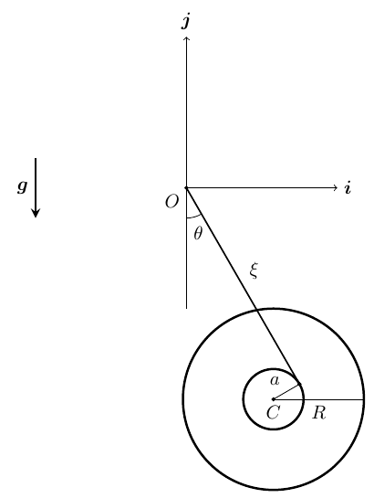
-
(a)
Determine the position, velocity, and acceleration of the center point $C$ of the yo-yo, and its angular velocity and angular acceleration, as a function of the generalized coordinates and their time derivatives.
-
(b)
Identify all the forces/torques acting on the yo-yo $b$ and reduce them to a single resultant force and a single resultant torque at $C$.
-
(c)
Write down a system of (differential) equations that allows solving for the time evolution of all unknowns in the problem.
-
(d)
Find a first integral of motion (i.e., an equation that do not depend on second derivatives). Justify your procedure.
In the following, assume tat [sic] the yo-yo is further constrained to stay with $\theta = 0$:
-
(e)
If the yo-yo is initially at rest, determine the initial value of $\ddot{\xi}_0$. Sketch the graph of $\ddot{\xi}_0$ as a function of the ratio $R/a \in [1, \infty[$.
-
(f)
If initially $\xi_0 = 2R$, find the minimum value of $\Omega_0$, the magnitude of the initial angular velocity of the yo-yo, for it to be able to reach the origin (i.e., for $\xi$ to become equal to $0$ at a later instant of time). Assuming $a \ll R$, sketch the graph of $\Omega$ as a function of $R$.
Worked Solution [ Click to Expand ]
Reference Frames, Bases and Degrees of Freedom
- Physical system: the yo-yo $b$ (two homogeneous disks of radius $R$ joined by an inner cylinder of radius $a$), of mass $m$ and centre $C$, hangs from the fixed point $O$ of the ceiling by a thin, massless, inextensible string that is wound on the inner cylinder and stays taut. The string, the centre $C$ and gravity lie in one vertical plane (the mid-plane of the yo-yo), so the motion is planar.
- Fixed frame: $S_0\{O; \mathbf i_0, \mathbf j_0, \mathbf k_0\}$, with $\mathbf i_0$ horizontal to the right, $\mathbf j_0$ up and $\mathbf k_0$ out of the paper (⊙). The ceiling is at rest, so the frame is inertial. Gravity is $g$ along minus $\mathbf j_0$.
- Basis of the string: $\mathcal B_1$, the basis $\{\mathbf i_1, \mathbf j_1, \mathbf k_0\}$ turned by $\theta$ about $\mathbf k_0$; minus $\mathbf j_1$ points along the straight part of the string, from $O$ towards the yo-yo, and $\mathbf i_1$ is normal to the string. Read from the figure: $\theta$ is measured from the downward vertical to the string, counterclockwise (the string leans to the right of $O$). The opposite reading (clockwise) would replace $\theta$ by its opposite in every formula below; the method is the same.
- Generalized coordinates: $\xi$, the length of the straight part of the string, from $O$ to the point $T$ where it leaves the inner cylinder, and $\theta$. Read from the figure: the string leaves the inner cylinder on its right-hand side, so the radius $CT$ points along $\mathbf i_1$ and $C$ lies at the distance $a$ on the left of the string.
- Body angle: $\varphi$, the angle from $\mathbf i_0$ to a line fixed in the yo-yo, counterclockwise. It is not a free coordinate: the string unwinds without slipping on the inner cylinder, and that relation is integrated below.
- Degrees of freedom: a plane body has three coordinates ($\xi$, $\theta$, $\varphi$ describe them: the first two fix $C$, the third the orientation). The taut, inextensible string wound without slip gives one relation among their rates, which integrates into a relation among the coordinates themselves: two degrees of freedom, $\xi$ and $\theta$, as the statement says.
| Datum | Symbol | SI unit |
|---|---|---|
| Mass of the yo-yo | $m$ | kg |
| Radius of the outer disks | $R$ | m |
| Radius of the inner cylinder (string) | $a$ | m |
| Moment of inertia about the spin axis (statement) | $mR^2/2$ | kg m$^2$ |
| Length of the straight part of the string | $\xi$ | m |
| Angle of the string from the downward vertical | $\theta$ | rad |
| Tension of the string (unknown) | $F \ge 0$ | N |
| Gravity | $g$, along $-\mathbf j_0$ | m/s$^2$ |
Change of Basis, Position Vectors and Constraint Kinematics
View of the plane of the figure with $\mathbf k_0$ out of the paper (⊙): a positive $\theta$ turns counterclockwise. $\mathbf i_1$ is $\mathbf i_0$ turned by $\theta$: its triangle has the hypotenuse 1, the adjacent leg along $\mathbf i_0$ (cosine of $\theta$) and the opposite leg along $\mathbf j_0$ (sine). $\mathbf j_1$ is $\mathbf j_0$ turned by $\theta$: adjacent leg along $\mathbf j_0$ (cosine), opposite leg along minus $\mathbf i_0$ (sine): the counterclockwise turn carries the tip of $\mathbf j_0$ to the left, which is the minus sign. The unit vector along the string, minus $\mathbf j_1$, then has the components sine of $\theta$ to the right and cosine of $\theta$ downwards, as in the figure.
Units: dimensionless; $[\mathrm{T^{-1}}]$
Meaning: with $\theta$ zero the string hangs vertically and $\mathcal B_1$ coincides with $\mathcal B_0$.
The straight string runs from $O$ to $T$ along minus $\mathbf j_1$ with length $\xi$; the radius from $T$ to $C$ is normal to the string (the string is tangent to the inner cylinder at $T$) and points along minus $\mathbf i_1$. The triangle $OTC$ has its right angle at $T$, legs $\xi$ and $a$, and hypotenuse $OC$.
Units: $[\mathrm L]$; $[\mathrm L][\mathrm{T^{-1}}]$; $[\mathrm L][\mathrm{T^{-2}}]$ in every term
Meaning: along the string ($\mathbf j_1$) the term in the square of the rate of $\theta$ is the centripetal part (towards $O$) and the second rate of $\xi$ the unwinding; normal to it, the term in twice the product of the rates is the Coriolis-type term of a length that changes while it turns.
The string point that touches the cylinder at $T$ is at the fixed arc length $\xi$ from $O$ along a straight string that turns about $O$ with $\boldsymbol\omega_{10}$; since the string is inextensible and fixed at $O$, that material point does not slide along the string, so its position is $\xi$ times minus $\mathbf j_1$ with $\xi$ frozen. The yo-yo point at $T$ is $C$ plus $a\,\mathbf i_1$. With no slip both velocities are equal. The angular velocity of $b$ is the rate of $\varphi$ times $\mathbf k_0$.
Units: $[\mathrm{T^{-1}}]$ and $[\mathrm L\,\mathrm T^{-1}]/[\mathrm L]$; $[\mathrm{T^{-2}}]$
Meaning: with the string vertical and fixed ($\theta$ constant), a growing $\xi$ (the yo-yo falls) makes the rate of $\varphi$ positive: the yo-yo spins counterclockwise, as a reel unwinding a string held on its right-hand side does. The yo-yo point at $T$ is not at rest: it moves with the string, normal to it.
Center of Mass and Inertia Tensor
The two equal disks and the inner cylinder are coaxial and symmetric about the mid-plane, so $C$ is the centre of mass and $\mathbf k_0$ (the spin axis) is a principal axis: the products of inertia with $\mathbf k_0$ vanish. The statement gives the moment about the spin axis; the value is the one of the two disks alone (inner cylinder of negligible mass), each of mass one half of $m$ and surface density $\sigma$ equal to $m/(2\pi R^2)$, which the integral checks.
Units: $[\mathrm M][\mathrm L^2]$
Meaning: the datum of the statement; a massive inner cylinder would lower the value, since its mass sits closer to the axis.
Linear Momentum, Angular Momentum and Kinetic Energy
Units: kg m$^2$/s; J in every term of $T_0$ and $V_0$
Meaning: the rotational part grows with the square of the ratio $R/a$: for a thin axle most of the energy of a falling yo-yo goes into its spin.
Free-Body Diagram and Equations of Motion
| Force on the yo-yo | Point of application | Expression | Kind |
|---|---|---|---|
| Weight | $C$ | $-mg\,\mathbf j_0 = -mg(\sin\theta\,\mathbf i_1 + \cos\theta\,\mathbf j_1)$ | applied |
| Tension of the string | $T$ (at $a\,\mathbf i_1$ from $C$) | $F\,\mathbf j_1$, along the string towards $O$, with $F \ge 0$ (taut string) | constraint |
The weight acts at $C$ and has no moment about it. The arm of the tension is $a\,\mathbf i_1$.
Units: N; m N
Meaning: the tension pulls up on the right-hand side of the axle: its torque is counterclockwise, the sense in which the yo-yo spins while it falls.
The pole $C$ is the centre of mass, so Eq. 12.13 has no term in the velocity of the pole; the derivative of the angular momentum is $I$ times the angular acceleration, because $\mathbf k_0$ is fixed.
Units: $[\mathrm{L\,T^{-2}}]$ in the first line; N in the second and third
Meaning: three equations for three unknown functions of time, $\xi$, $\theta$ and the tension $F$ (the rotation is already eliminated by the no-slip relation). Substituting the third into the second leaves two equations for the two coordinates; the motion is valid while $F$ stays non-negative.
Justification: the tension acts on the yo-yo point $T$, whose velocity is $\xi$ times the rate of $\theta$ along $\mathbf i_1$ (previous box), normal to the tension: its power is zero, because the string is fixed at $O$ and does not slip. The weight is conservative. The power is computed below with the resultant at $C$ and the equations of part (c) are not needed for it, so the integral holds for any motion with taut string.
Units: J in every term
Meaning: $E_0$ is fixed by the initial values of $\xi$, $\theta$ and their rates; the equation holds no second derivatives. The angular momentum about $O$ is not conserved: the tension passes through $O$, but the weight has a moment about it.
The yo-yo kept on the vertical (theta fixed at zero)
The extra constraint (a guide that keeps the string vertical) adds a horizontal reaction $H\,\mathbf i_1$ at $C$; with $\theta$ and its rates zero, $\mathcal B_1$ is $\mathcal B_0$. Write $\rho$ for the ratio $R/a$.
Units: $[\mathrm{L\,T^{-2}}]$; N
Meaning: the acceleration does not depend on the velocity, so it is the same at every instant, at rest or not. It is two thirds of $g$ (0.667 g) for $R$ equal to $a$, one third of $g$ for $R$ twice $a$, one ninth for four times $a$, and decays like twice $g$ over the square of $R/a$ for a large ratio (graph below). The tension stays between one third of $mg$ and $mg$: positive, so the string is indeed taut.
With $\theta$ zero, the no-slip relation gives the rate of $\xi$ as $a$ times the rate of $\varphi$; $\xi$ can only decrease if the yo-yo spins clockwise (rate of $\varphi$ negative): it winds the string up. Initially $\xi$ is $2R$ and the spin has magnitude $\Omega_0$; at a later instant the spin has magnitude $\Omega$.
Units: $\sqrt{[\mathrm{L\,T^{-2}}][\mathrm L]/[\mathrm L^2]} = [\mathrm{T^{-1}}]$
Meaning: the weight takes away the same kinetic energy for every metre of climb, so the climb stops after a fixed height whatever the speed. The symbol $\Omega$ of the statement is read here as the initial spin $\Omega_0$, and the graph shows its minimum value against $R$. With $a$ much smaller than $R$, the minimum spin falls like one over the square root of $R$ (graph below): a large yo-yo stores more rotational energy per unit of spin. With the minimum value the yo-yo arrives at the origin with zero spin and then falls again.
Answers and Checks
| Asked | Answer |
|---|---|
| (a) Kinematics | $\mathbf r^C = -a\,\mathbf i_1 - \xi\,\mathbf j_1$; $\mathbf v^C = \xi\dot\theta\,\mathbf i_1 - (\dot\xi + a\dot\theta)\,\mathbf j_1$; $\mathbf a^C = (\xi\ddot\theta + 2\dot\xi\dot\theta + a\dot\theta^2)\,\mathbf i_1 + (\xi\dot\theta^2 - \ddot\xi - a\ddot\theta)\,\mathbf j_1$; $\boldsymbol\omega = (\dot\theta + \dot\xi/a)\,\mathbf k_0$; $\boldsymbol\alpha = (\ddot\theta + \ddot\xi/a)\,\mathbf k_0$, with $\mathbf i_1 = \cos\theta\,\mathbf i_0 + \sin\theta\,\mathbf j_0$, $\mathbf j_1 = -\sin\theta\,\mathbf i_0 + \cos\theta\,\mathbf j_0$ |
| (b) Forces and reduction at $C$ | weight $-mg\,\mathbf j_0$ at $C$; tension $F\,\mathbf j_1$ at $T$; $\mathbf F = -mg\sin\theta\,\mathbf i_1 + (F - mg\cos\theta)\,\mathbf j_1$, $\mathbf M_C = aF\,\mathbf k_0$ |
| (c) Equations of motion | $\xi\ddot\theta + 2\dot\xi\dot\theta + a\dot\theta^2 + g\sin\theta = 0$; $m(\ddot\xi + a\ddot\theta - \xi\dot\theta^2) = mg\cos\theta - F$; $\tfrac{mR^2}{2a}(\ddot\theta + \ddot\xi/a) = F$ (unknowns $\xi$, $\theta$, $F$) |
| (d) First integral | $\tfrac m2[\xi^2\dot\theta^2 + (\dot\xi + a\dot\theta)^2] + \tfrac{mR^2}{4}(\dot\theta + \dot\xi/a)^2 - mg(\xi\cos\theta + a\sin\theta) = E_0$ (the tension does no work) |
| (e) Initial acceleration with $\theta = 0$ | $\ddot\xi_0 = 2g/(2 + (R/a)^2)$: $2g/3$ at $R/a = 1$, decreasing to zero like $2g\,a^2/R^2$ |
| (f) Minimum initial spin from $\xi_0 = 2R$ | $\Omega_{0,\min} = \sqrt{8gR/(R^2 + 2a^2)} \approx \sqrt{8g/R}$ for $a \ll R$, clockwise (winding up) |
Problems.pdf prints no answer for this problem (see Problem Set - Rigid Body Official Key), so the results are checked with a second route and limiting cases.
With $\theta$ zero the second rate of $\xi$ is the constant $c$ of part (e), whatever the velocity. The product of the rate of $\xi$ and its second rate is the derivative of one half of its square (chain rule).
Units: $[\mathrm{T^{-2}}]$
Meaning: the same bound as from the energy: the climbing yo-yo decelerates uniformly, at the rate $c$, and the bound says that it stops exactly at the origin.
Limiting cases and consistency:
- Thin string on the rim. With $a$ equal to $R$ the acceleration of part (e) is two thirds of $g$, the known value for a uniform disk unwinding from its rim; with $a$ tending to zero it tends to zero: all the work of the weight goes into the spin.
- Pendulum limit. With $\xi$ held constant (no unwinding) and $a$ tending to zero, the first equation of part (c) becomes the simple pendulum of length $\xi$, with $g$ times the sine of $\theta$.
- Ceiling. The model of the statement treats the ceiling as no obstacle. A real yo-yo touches the ceiling when $\xi$ reaches $R$ (top of the disks at $O$); the energy of part (f) shows that this needs only half of the energy, a squared initial spin of $4gR$ over the sum of the square of $R$ and twice the square of $a$.
- Dimensions. Every term of part (c) is an acceleration or a force; every term of the first integral is an energy.
Interactive geometry simulator: it needs JavaScript. The figures above show the same geometry.
A homogeneous, heavy disk $b$ of mass $m$, radius $R$, and center $G$ rolls without slip on the surface of a cavity with parabolic shape, whose geometry is given by
and has a maximum depth of $3R$. The moment of inertia of the disk about $G$ is $I = mR^2/2$. To study the motion of the disk, we define an inertial reference frame $S_0$ and a body-fixed reference frame $S_b$ as shown below. We call $P$ the instantaneous point of contact between the disk and the parabola. We introduce the variables $x_P$ and $\phi$. An external, constant torque $Q\mathbf{k}_0$ is applied on the disk through an axle passing through $G$. Assume that the friction coefficient between the disk and the parabola $\mu$ is infinite, and that the disk and the parabola are always in contact. Initially, the disk is at rest with $x_P = 0$ and $\phi = 0$.
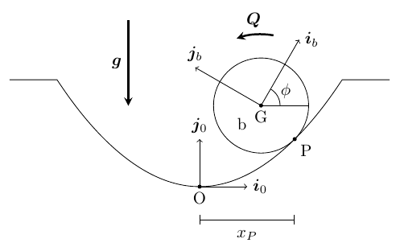
-
(a)
How many degrees of freedom does the system have after taking into account all constraints? Write down the general expression of a tangent unit vector $\mathbf{e}_t$ and a normal unit vector $\mathbf{e}_n$ to the parabola at $P$ as a function of $x_P$, in terms of $\{\mathbf{i}_0, \mathbf{j}_0\}$.
-
(b)
Give the general expressions for the position and velocity of $G$, and the angular velocity of the disk $b$ with respect to $S_0$, as a function of $x_P$, $\phi$ and their derivatives.
-
(c)
Identify and give the mathematical expression of all forces and torques on the disk, introducing new unknowns as necessary. For each force, state clearly the point of application. Then, reduce the system to a resultant force $\mathbf{F}$ and a resultant torque $\mathbf{M}_G$ about $G$.
-
(d)
Express $\phi$ as a function of $x_P$.
Hint: one of the resulting integrals is immediate; the other can be solved as
From this point on, assume the function $\phi(x_P)$ is known, even if you did not reach the correct result above.
-
(e)
Noting that the power of the constant torque is $Q\dot{\phi}$, write down a first-order differential equation for $x_P$, free of any other unknowns in the problem .
-
(f)
Determine the condition on the value of $Q$ to ensure that the disk gets out of the cavity.
Worked Solution [ Click to Expand ]
Reference Frames, Bases and Degrees of Freedom
- Physical system: a homogeneous disk $b$ of mass $m$, radius $R$ and centre $G$ rolls without slip inside a fixed cavity whose section is the parabola of the statement (vertex at $O$, depth $3R$, so its rims are at the abscissas plus and minus $2\sqrt3\,R$, where the parabola reaches the height $3R$). The disk stays in contact with the parabola at the point $P$, of abscissa $x_P$. A constant torque $Q\,\mathbf k_0$ acts on the disk through an axle at $G$. Gravity acts downwards. The motion is planar.
- Fixed frame: $S_0\{O; \mathbf i_0, \mathbf j_0, \mathbf k_0\}$ at the vertex of the parabola, $\mathbf i_0$ horizontal to the right, $\mathbf j_0$ up, $\mathbf k_0$ out of the paper (⊙). The cavity is at rest, so the frame is inertial. Read from the figure: the arrow of $Q$, drawn above the disk and pointing to the left, turns counterclockwise, the sense of $\mathbf k_0$; a positive $Q$ is a counterclockwise torque.
- Intrinsic basis of the parabola at P: $\mathcal B_P\{\mathbf e_t, \mathbf e_n, \mathbf k_0\}$, with $\mathbf e_t$ tangent to the parabola in the sense of growing $x$ and $\mathbf e_n$ normal to it, towards the concave side (into the cavity, towards $G$). It is $\mathcal B_0$ turned by the slope angle $\beta$ of the tangent.
- Body frame: $S_b\{G; \mathbf i_b, \mathbf j_b, \mathbf k_0\}$. Read from the figure: $\phi$ is measured at $G$ from the horizontal direction $\mathbf i_0$ to $\mathbf i_b$, counterclockwise.
- Part (a), degrees of freedom: a plane body has three coordinates. Contact with the parabola (Notes.pdf, Eq. 13.1) places $G$ at the distance $R$ from $P$ along the normal: the two coordinates $x_P$ and $\phi$ remain. Rolling without slip adds one relation between their rates, which integrates into $\phi$ as a function of $x_P$ (part (d)): one degree of freedom, $x_P$.
| Datum | Symbol | SI unit |
|---|---|---|
| Mass of the disk, homogeneous | $m$ | kg |
| Radius of the disk | $R$ | m |
| Moment of inertia about the normal axis through $G$ (statement) | $mR^2/2$ | kg m$^2$ |
| Parabola of the cavity | $y = x^2/(4R)$, depth $3R$, rims at $x = \pm 2\sqrt3\,R$ | m |
| Abscissa of the contact point | $x_P$ | m |
| Constant torque on the disk | $Q\,\mathbf k_0$ | N m |
| Friction coefficient | $\mu$ infinite (no slip) | - |
| Initial state | $x_P = 0$, $\phi = 0$, at rest | m, rad |
| Gravity | $g$, along $-\mathbf j_0$ | m/s$^2$ |
| Shorthand | $s = \sqrt{4R^2 + x_P^2}$ | m |
Change of Basis, Position Vectors and Constraint Kinematics
The slope of the parabola at $P$ is the derivative of $y$ with respect to $x$ at $x_P$. A tangent step of $2R$ along $\mathbf i_0$ rises by $x_P$ along $\mathbf j_0$: the right triangle has the horizontal leg $2R$ (adjacent to $\beta$), the vertical leg $x_P$ (opposite) and the hypotenuse $s$. View with $\mathbf k_0$ out of the paper (⊙): $\mathbf e_n$ is $\mathbf e_t$ turned counterclockwise by a right angle, so its $\mathbf i_0$ component carries the minus sign (for $x_P$ positive the normal leans to the left, towards the axis of the cavity).
Units: dimensionless; $[\mathrm{L\,T^{-1}}]/[\mathrm{L^2}] = [\mathrm{T^{-1}}]$; $[\mathrm L]$
Meaning: at the vertex the tangent is $\mathbf i_0$ and the normal $\mathbf j_0$. The parabola is curved most at its vertex, with a radius of curvature of $2R$, larger than the radius of the disk: the disk touches the cavity at one point only, as assumed.
View at $G$ with $\mathbf k_0$ out of the paper (⊙). $\mathbf i_b$ is $\mathbf i_0$ turned counterclockwise by $\phi$: adjacent leg along $\mathbf i_0$ (cosine), opposite leg along $\mathbf j_0$ (sine). $\mathbf j_b$: adjacent leg along $\mathbf j_0$ (cosine), opposite leg along minus $\mathbf i_0$ (sine), the counterclockwise turn carrying the tip of $\mathbf j_0$ to the left.
Units: dimensionless; $[\mathrm{T^{-1}}]$
Meaning: $\phi$ is the absolute rotation of the disk; a positive rate of $\phi$ is a counterclockwise spin.
The centre of the disk lies on the normal at the contact point, at the distance $R$ on the concave side.
Units: $[\mathrm L]$; $[\mathrm{L\,T^{-1}}]$ (the bracket is dimensionless)
Meaning: $G$ moves parallel to the tangent at $P$. At the vertex the bracket is one half: $G$ is on a curve of radius of curvature $2R$ minus $R$, half that of the parabola, so it moves at half the speed of the contact point.
Units: $[\mathrm{L^{-1}}][\mathrm{L\,T^{-1}}] = [\mathrm{T^{-1}}]$
Meaning: $f$ is positive for every $x_P$ (its first term is at least $1/R$ and its second at most $1/(2R)$): moving to the right the disk turns clockwise, and moving to the left counterclockwise. The speed of $G$ is exactly $R$ times the spin.
Integrate from the initial state, $x_P$ and $\phi$ zero, with the substitution $u = x_P(t')$, $du = \dot x_P\,dt'$. Write $A(u)$ for the antiderivative of the hint with $a$ equal to $R$.
Units: dimensionless in every term (the logarithm has a dimensionless argument after Barrow's rule)
Meaning: $R$ times the first two terms is the arc length of the parabola from $O$ to $P$, and the last term is the slope angle $\beta$: the disk turns clockwise by the arc rolled over $R$, and the turning of the tangent gives back $\beta$ (equal arcs, Eq. 13.3). The function is odd. At the left rim, with $x_P$ equal to minus $2\sqrt3\,R$, it is $2\sqrt3 + \ln(2 + \sqrt3) - \pi/3$, that is 3.734 rad.
Center of Mass and Inertia Tensor
Polar coordinates $(\rho, \chi)$ about $G$, area element $\rho\,d\rho\,d\chi$, surface density $\sigma$ equal to $m$ over $\pi R^2$. $G$ is the centre of the disk by symmetry, and $\mathbf k_0$ is a principal axis (the disk is symmetric about its plane).
Units: $[\mathrm M][\mathrm L^2]$
Meaning: the datum of the statement; the plane motion needs only this component.
Linear Momentum, Angular Momentum and Kinetic Energy
Units: kg m$^2$/s; J
Meaning: two thirds of the kinetic energy is in the motion of $G$ and one third in the spin. At the start $G$ is at the height $R$ above $O$; at a rim, at $3.5R$.
Free-Body Diagram and Equations of Motion
| Force on the disk | Point of application | Expression | Kind |
|---|---|---|---|
| Weight | $G$ | $-mg\,\mathbf j_0 = -mg(\sin\beta\,\mathbf e_t + \cos\beta\,\mathbf e_n)$ | applied |
| Torque of the axle | couple on the disk (axle through $G$) | $Q\,\mathbf k_0$ | applied |
| Normal reaction of the cavity | $P$ | $N\,\mathbf e_n$, with $N \ge 0$ (pushes the disk towards the concave side) | constraint |
| Friction of the cavity | $P$ | $T_f\,\mathbf e_t$ (unknown: no slip, $\mu$ infinite) | constraint |
The arm of the contact force from $G$ is minus $R\,\mathbf e_n$; the weight acts at $G$.
Units: N; N m
Meaning: the contact adds two unknowns, $N$ and $T_f$, to the coordinate $x_P$.
The pole $G$ is the centre of mass, so Eq. 12.13 has no term in the velocity of the pole. The acceleration of $G$ is the derivative of minus $R$ times the rate of $\phi$ times $\mathbf e_t$ (product rule, Poisson for $\mathbf e_t$).
Units: N m in the first equation; N in the other two
Meaning: three equations for the three unknowns $x_P$ (with $\phi$ tied to it by part (d)), $T_f$ and $N$. On the right-hand side of the cavity gravity gives a positive (counterclockwise) moment that rolls the disk back to the left; a positive torque does the same everywhere. In either direction of motion the rates of $\phi$ and $\beta$ have opposite signs, so $N$ exceeds the normal component of the weight.
The power of the contact force is its dot product with the velocity of the body point $P$, which is zero; the power of the torque is $Q$ times the rate of $\phi$ (statement); the weight derives from $V_0$. Integrate from the initial rest, where $\phi$ is zero and $V_0$ is $mgR$.
Units: numerator J; denominator kg ($f$ is an inverse length); quotient m$^2$/s$^2$
Meaning: the only unknown is $x_P$, with $\phi(x_P)$ of part (d). Until the first turning point, the first-order equation is the square root with the sign opposite to $Q$ (if the torque is too small the disk stops and rolls back, and the sign changes): with $Q$ positive the second rate of $\phi$ starts at $2Q/(3mR^2)$, positive, so $\phi$ grows and $x_P$ decreases (the disk climbs the left-hand side). At $x_P$ zero the right-hand side vanishes; as in any start from rest, the second-order equation selects the motion.
Take $Q$ positive (a negative $Q$ is the mirror image, towards the right-hand rim). The disk moves left; write $z$ for minus $x_P$ over $R$, from 0 to $2\sqrt3$ at the left rim. Because $\phi$ is odd, $\phi(x_P)$ is $\Phi(z)$, the bracket of part (d) evaluated at $z$, which is positive. The disk gets out when the contact point reaches the rim with the right-hand side still positive at every intermediate point.
Units: N m on both sides
Meaning: why the rim decides: the weight adds the rise $dY$ for a turn $d\Phi$ at the rate given by the sine of the angle of the groove, which increases with $z$ from zero, so $Y$ is convex in $\Phi$ with both starting at zero and the ratio $Y/\Phi$ increases up to the rim (the table shows it). The work of the torque over the rotation 3.734 rad must exceed the rise of $G$ from $R$ to $3.5R$. With $Q$ exactly $Q_c$ the disk would reach the rim at rest and roll back, because there the moment of the weight, $mgR$ times the sine of 60 degrees, about $0.866\,mgR$, exceeds $Q_c$.
| $z = -x_P/R$ | $\Phi(z)$ (rad) | $Y(z)$ | $Y/\Phi$ |
|---|---|---|---|
| 0.5 | 0.2602 | 0.0326 | 0.1255 |
| 1 | 0.5766 | 0.1444 | 0.2505 |
| 2 | 1.5102 | 0.7071 | 0.4682 |
| 3 | 2.9161 | 1.8047 | 0.6189 |
| $2\sqrt3 \approx 3.464$ (rim) | 3.7339 | 2.5000 | 0.6695 |
Answers and Checks
| Asked | Answer |
|---|---|
| (a) Degrees of freedom; tangent and normal | one ($x_P$); $\mathbf e_t = (2R\,\mathbf i_0 + x_P\,\mathbf j_0)/\sqrt{4R^2 + x_P^2}$, $\mathbf e_n = (-x_P\,\mathbf i_0 + 2R\,\mathbf j_0)/\sqrt{4R^2 + x_P^2}$ |
| (b) Kinematics | $\mathbf r^G = \mathbf r^P + R\,\mathbf e_n$ (components in part (b)); $\mathbf v^G = \dot x_P(s/(2R) - 2R^2/s^2)\,\mathbf e_t$; $\boldsymbol\omega = \dot\phi\,\mathbf k_0$; rolling: $\dot\phi = -(s/(2R^2) - 2R/s^2)\,\dot x_P$ |
| (c) Forces and reduction at $G$ | $-mg\,\mathbf j_0$ at $G$; $N\,\mathbf e_n + T_f\,\mathbf e_t$ at $P$; couple $Q\,\mathbf k_0$; $\mathbf F = (T_f - mg\sin\beta)\,\mathbf e_t + (N - mg\cos\beta)\,\mathbf e_n$, $\mathbf M_G = (Q + RT_f)\,\mathbf k_0$ |
| (d) $\phi(x_P)$ | $\phi = -\tfrac{x_P s}{4R^2} - \ln\tfrac{x_P + s}{2R} + \arctan\tfrac{x_P}{2R}$ |
| (e) First-order equation | $\tfrac34 mR^2 f(x_P)^2\,\dot x_P^2 = Q\,\phi(x_P) - mg(\tfrac{x_P^2}{4R} + \tfrac{2R^2}{s} - R)$, $f = s/(2R^2) - 2R/s^2$, $x_P(0) = 0$ |
| (f) Leaving the cavity | $\lvert Q\rvert > 5mgR/[2(2\sqrt3 + \ln(2 + \sqrt3) - \pi/3)] \approx 0.670\,mgR$ |
Problems.pdf prints no answer for this problem (see Problem Set - Rigid Body Official Key), so the results are checked with a second route and limiting cases.
Units: W in every term
Meaning: the Newton-Euler equation gives exactly the power balance used in part (e): the reactions do no work.
Limiting cases and consistency:
- No torque. With $Q$ zero the disk released at the vertex stays there: the equation of motion has zero right-hand side at $x_P$ zero, and the first-order equation gives no motion. Near the vertex the slope sine is about $x_P/(2R)$ and $\phi$ about minus $x_P/(2R)$, so the equation of motion becomes three halves of $R$ times the second rate of $\phi$ equal to minus $g$ times $\phi$: small oscillations with the squared angular frequency $2g/(3R)$, the value of a disk rolling in a circular track of radius $2R$ (centre path of radius $R$).
- Insufficient torque. The ratio of the table grows continuously from zero at the vertex to 0.6695 at the rim. For $Q$ between zero and $Q_c$ it therefore equals $Q/(mgR)$ at some point short of the rim, where the right-hand side of part (e) vanishes: the disk stops there and rolls back.
- Edge of the cavity (extension). The statement keeps the disk on the parabola; beyond the rim the disk would pivot about the corner, turning a further 60 degrees while $G$ rises from $3.5R$ to $4R$. If it kept rolling round the corner without losing contact, the energy condition along that pivot raises the threshold slightly, to about $0.678\,mgR$ (largest ratio of the potential rise to the rotation, reached with the line from the corner to $G$ at about 43 degrees from the vertical).
- Dimensions. Every term of the energy equation is an energy; $Q_c$ is a multiple of $mgR$.
Interactive geometry simulator: it needs JavaScript. The figures above show the same geometry.
A sail sledge is a special vehicle designed to slide over ice on blades, equipped with a vertical sail to catch the wind and propel itself. The sledge is moving on a horizontal plane of ice. We model it as a heavy rigid body $b$ of mass $m$ and moment of inertia $I$ about its center of mass $G$, which is located at a negligible height with respect to the ice. The contact points? [sic] of the blades with the ice are points $A$, $B$ and $C$, which form an equilateral triangle of side $\sqrt{3}\,\ell$ and center below $G$ as shown. The configuration of the sledge is defined by the $x$ and $y$ coordinates of its center of mass in $S_0$, and the attitude angle $\psi$. The blades at $A$ and $B$ are oriented parallel to $\mathbf{i}_b$, while the blade at $C$ forms an angle $\theta$ with this direction. Each blade may slide along the direction parallel to it without friction, but it cannot slip in the direction perpendicular to it.
The (horizontal) aerodynamic forces on the sail are a lift force $\mathbf{L}$ and a drag force $\mathbf{D}$, respectively perpendicular and parallel to the upstream wind velocity $\mathbf{u}_b^w$ relative to $S_b$. The point of application of these forces is the center of pressure $P$ of the sail, which is found at a distance $\ell$ above $G$, and their magnitudes are:
where $b_L$ and $b_D$ are two known constants (we can assume the sail is automatically readjusted to keep them constant under all conditions). Wind blows in the direction of the arrow with a groundspeed $u_0^w = U_\infty$ relative to $S_0$.
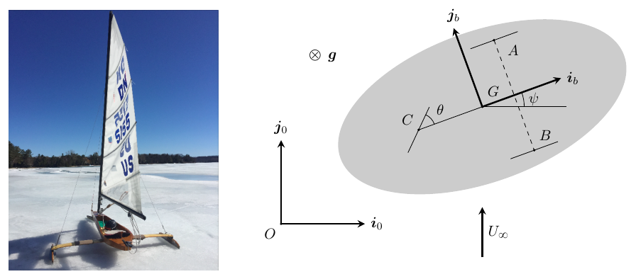
-
(a)
Find the general expression for the position, velocity, and acceleration of $G$, and the angular velocity and acceleration of the body $b$, with respect to $S_0$, in terms of $x$, $y$, $\psi$, and their derivatives.
-
(b)
Find the position $\mathbf{r}_b^I$ of the instantaneous center of rotation $I$ of $b$ as a function of $\theta$.
-
(c)
Express $\dot{x}$ and $\dot{y}$ as a function of $\dot{\psi}$ and $\theta$, assuming $\theta \neq 0$.
-
(d)
Write down all the forces acting on $b$ and specify their point of application. Introduce new unknowns in the problem as needed. Assume that the reaction forces on $A$ and $B$ in the $\mathbf{j}_b$ direction are equal in magnitude.
In the rest of the problem, consider that $\psi = \theta = 0$.
-
(e)
If the sledge is at rest and $b_D = 0$, $\mathbf{L} \cdot \mathbf{i}_b \geq 0$, what is the maximum value of $U_\infty$ that the vehicle can withstand without tipping over at that instant?
-
(f)
Assuming that the sledge does not tip over, what is the maximum speed it can continuously travel at, as a function of $b_L$, $b_D$, and $U_\infty$?
Worked Solution [ Click to Expand ]
Reference Frames, Bases and Degrees of Freedom
- Physical system: the sledge $b$, a rigid body of mass $m$ with centre of mass $G$ at a negligible height above the ice and moment of inertia $I$ about the vertical axis through $G$, slides on a horizontal sheet of ice on three blades $A$, $B$ and $C$. Each blade slides freely along its own direction and cannot slip across it. The wind acts on the sail at the centre of pressure $P$, at the height $\ell$ above $G$.
- Fixed frame: $S_0\{O; \mathbf i_0, \mathbf j_0, \mathbf k_0\}$ with $\mathbf i_0$ and $\mathbf j_0$ on the ice and $\mathbf k_0$ vertical, up, out of the paper in the top view of the figure (⊙); gravity points into the paper (⊗), along minus $\mathbf k_0$. The ice is at rest, so the frame is inertial. The wind blows along $\mathbf j_0$ with the ground speed $U_\infty$.
- Body frame: $S_b\{G; \mathbf i_b, \mathbf j_b, \mathbf k_0\}$, with $\mathbf i_b$ along the axis of the sledge, from the rear blade $C$ through $G$ towards the front. Read from the figure: $\psi$ is measured at $G$ from the direction of $\mathbf i_0$ to $\mathbf i_b$, counterclockwise in the top view.
- Blades (read from the figure): $C$ lies on the axis behind $G$, and $A$ (on the side of $\mathbf j_b$) and $B$ (on the side of minus $\mathbf j_b$) lie on a line normal to the axis, ahead of $G$. The blades at $A$ and $B$ are parallel to $\mathbf i_b$; the blade at $C$ is turned from $\mathbf i_b$ by $\theta$, counterclockwise in the top view. The opposite reading of $\theta$ (clockwise) would replace $\theta$ by its opposite in parts (b) and (c); parts (e) and (f) use $\theta$ zero and do not change. $\theta$ is a fixed setting of the blade.
- Degrees of freedom: while the three blades stay on the ice, the sledge moves in the plane of the ice: three coordinates $x$, $y$, $\psi$. Each blade gives one condition on the velocities; the conditions at $A$ and $B$ turn out to be the same (blade conditions, below), so there are two independent conditions and one degree of freedom remains. For a fixed $\theta$ other than zero the motion is a rotation about a point $I$ fixed on the ice (part (b)), so the two conditions fix $x$ and $y$ as functions of $\psi$: they are integrable for a fixed blade setting.
| Datum | Symbol | SI unit |
|---|---|---|
| Mass of the sledge | $m$ | kg |
| Moment of inertia about the vertical axis through $G$ | $I$ | kg m$^2$ |
| Side of the triangle of blades | $\sqrt3\,\ell$ | m |
| Height of the centre of pressure above $G$ | $\ell$ | m |
| Angle of the blade at $C$ from $\mathbf i_b$ | $\theta$ (fixed) | rad |
| Aerodynamic constants | $b_L$, $b_D$ | kg/m |
| Ground speed of the wind | $U_\infty$, along $\mathbf j_0$ | m/s |
| Gravity | $g$, along $-\mathbf k_0$ | m/s$^2$ |
Change of Basis, Position Vectors and Constraint Kinematics
Top view with $\mathbf k_0$ out of the paper (⊙): a positive $\psi$ turns counterclockwise. $\mathbf i_b$: hypotenuse 1, adjacent leg along $\mathbf i_0$ (cosine of $\psi$), opposite leg along $\mathbf j_0$ (sine). $\mathbf j_b$: adjacent leg along $\mathbf j_0$ (cosine), opposite leg along minus $\mathbf i_0$ (sine): the counterclockwise turn carries the tip of $\mathbf j_0$ to the left, which is the minus sign.
Units: dimensionless; $[\mathrm{T^{-1}}]$
Meaning: with $\psi$ zero the sledge points along $\mathbf i_0$, across the wind.
$G$ stays at its (negligible) height on the ice; its position is given by the coordinates $x$ and $y$. The components of the velocity of $G$ in $\mathcal B_b$ are called $u$ (forward) and $w$ (sideways); they follow from the rows of the previous box.
Units: $[\mathrm L]$; $[\mathrm{L\,T^{-1}}]$; $[\mathrm{L\,T^{-2}}]$; $[\mathrm{T^{-1}}]$; $[\mathrm{T^{-2}}]$
Meaning: the body-basis form of the acceleration will be used with the blade conditions, which are written in $\mathcal B_b$.
The median of the triangle, from $C$ to the midpoint $M$ of $AB$, lies on the axis and has the length of the side times the sine of 60 degrees. $G$ is two thirds of the way from $C$ to $M$. In the right triangle $GMA$ the leg $GM$ is along $\mathbf i_b$, the leg $MA$ along $\mathbf j_b$ (half the side) and the hypotenuse is $GA$. The blade at $C$ is $\mathbf i_b$ turned counterclockwise by $\theta$ (adjacent leg along $\mathbf i_b$, cosine; opposite leg along $\mathbf j_b$, sine); its normal on the ice is $\mathbf k_0$ crossed with it.
Units: $[\mathrm L]$; dimensionless
Meaning: the blades at $A$ and $B$ are $\sqrt3\,\ell$ apart, and they stand $\ell/2$ ahead of $G$; the rear blade is $\ell$ behind it.
Units: $[\mathrm L][\mathrm{T^{-1}}]$ in each term
Meaning: with the rear blade turned counterclockwise ($\theta$ positive and less than a right angle), forward motion ($u$ positive) needs a negative rate of $\psi$: the sledge turns clockwise, like a vehicle steered by its rear wheel. With $\theta$ zero all blades are parallel: the sledge can only slide straight along $\mathbf i_b$.
The point $I$ of the plane of the ice with zero velocity is found from $G$ with Eq. 9.10 (the velocity of $G$ is normal to the rotation axis, so the axis meets the ice at $I$).
Units: $[\mathrm L]$
Meaning: $I$ is where the normals to the blades meet: on the line of $A$ and $B$ (normal to their blades) and on the normal to the blade at $C$. For $\theta$ positive and less than a right angle it lies on the side of minus $\mathbf j_b$, the side towards which the sledge turns when it moves forward. With $\theta$ a right angle it is the midpoint of $AB$; as $\theta$ tends to zero it goes to infinity (pure translation). For a fixed $\theta$ the point $I$ is also fixed on the ice (last row), so $G$ moves on a circle about it.
Units: $[\mathrm L][\mathrm{T^{-1}}]$
Meaning: both rates are proportional to the rate of $\psi$: one degree of freedom. The speed of $G$ is the rate of $\psi$ times the distance $GI$, the square root of one plus nine times the square of the cotangent of $\theta$, times $\ell/2$.
Center of Mass and Inertia Tensor
The statement gives the centre of mass $G$ (at a negligible height above the ice) and the moment of inertia $I$ about the vertical axis through $G$ as data; the shape of the sledge is not given, so there is no integral to set up. For a turning sledge the model also takes $\mathbf k_0$ as a principal axis of inertia at $G$ (no products of inertia between the vertical and the horizontal axes), so the angular momentum about $G$ is vertical; in parts (e) and (f) the sledge does not turn at all and this assumption is not needed.
Linear Momentum, Angular Momentum and Kinetic Energy
Units: kg m/s; kg m$^2$/s; J
Meaning: for a fixed $\theta$ the sledge turns about the fixed point $I$, and its kinetic energy is that of a rotation about $I$ (Steiner's moment about $I$ times one half of the square of the rate of $\psi$).
Free-Body Diagram and Equations of Motion
| Force on the sledge | Point of application | Expression | Kind |
|---|---|---|---|
| Weight | $G$ | $-mg\,\mathbf k_0$ | applied |
| Normal reactions of the ice | $A$, $B$, $C$ | $N_A\,\mathbf k_0$, $N_B\,\mathbf k_0$, $N_C\,\mathbf k_0$, each $\ge 0$ (the ice only pushes) | constraint |
| Side reactions of the blades at $A$ and $B$ | $A$, $B$ | $Y\,\mathbf j_b$ at each, equal in magnitude (statement); read here with the same sense at $A$ and $B$ | constraint |
| Side reaction of the blade at $C$ | $C$ | $Y_C\,\mathbf n_C = Y_C(-\sin\theta\,\mathbf i_b + \cos\theta\,\mathbf j_b)$ | constraint |
| Lift | $P$ | $\mathbf L = b_L\,u_b^w\,(\mathbf u_b^w\times\mathbf k_0)$, horizontal, normal to the relative wind | applied |
| Drag | $P$ | $\mathbf D = b_D\,u_b^w\,\mathbf u_b^w$, along the relative wind | applied |
No blade exerts a force along its own direction (no friction along the blades).
The relative wind at the sail is the wind velocity minus the velocity of the body point $P$. The lift is normal to it in the horizontal plane; of the two normal directions, the one along the relative wind crossed with $\mathbf k_0$ is taken, which is the side for which the statement asks $\mathbf L\cdot\mathbf i_b \ge 0$ in part (e) (the other side is the sail set on the other tack).
Units: kg/m times m$^2$/s$^2$: N
Meaning: the forces depend on the motion of the sledge through the relative wind; at rest the relative wind is the wind itself.
Write $F_{a1}$ and $F_{a2}$ for the components of $\mathbf L + \mathbf D$ along $\mathbf i_b$ and $\mathbf j_b$. Arms from the blade box; the weight acts at $G$.
Units: N; N m
Meaning: the sail force, applied at the height $\ell$, tilts the sledge about horizontal axes; the blades answer with unequal normal reactions. The equal side reactions at $A$ and $B$ (statement) leave five reaction unknowns.
The pole $G$ is the centre of mass, so Eq. 12.13 has no term in the velocity of the pole, even though $G$ accelerates. While the blades stay on the ice the sledge does not tilt, and with $\mathbf k_0$ principal the derivative of the angular momentum about $G$ is $I$ times the second rate of $\psi$ along $\mathbf k_0$.
Units: N in the force equations; N m in the moment equations
Meaning: six unknowns, the coordinate $\psi$ (which gives $u$ and $w$) and five reactions, for six equations. The motion is valid while the three normal reactions stay non-negative; when one reaches zero the sledge starts to tip.
Sledge at psi and theta zero
With $\theta$ zero the blade conditions give a zero rate of $\psi$ and a zero $w$ (blade box), at every instant, so $\psi$ stays zero and $\mathcal B_b$ is $\mathcal B_0$. At rest the relative wind is the wind, $U_\infty\,\mathbf j_b$; with $b_D$ zero only the lift acts.
Units: $\sqrt{\mathrm N/(\mathrm{kg/m})} = \sqrt{\mathrm{m^2/s^2}}$, m/s
Meaning: the lift pushes the sledge forward, at the height $\ell$ of the sail, and nothing resists it along the blades: the sledge accelerates at $L/m$. Its moment about $G$ pitches the sledge forward, unloading the rear blade $C$ and loading $A$ and $B$; the sledge tips about the line $AB$ when the lift reaches half the weight.
With $\psi$ and $\theta$ zero the sledge moves along $\mathbf i_0$ with the speed $v$ (zero $w$ and rate of $\psi$). The blades take every force along $\mathbf j_0$; only the forward component matters.
Units: dimensionless ratio times m/s
Meaning: below this speed the forward force is positive and the sledge speeds up; above it, negative: it is the largest speed at which the sledge can travel steadily. It exceeds the wind speed when $b_L$ is larger than $b_D$, as with real ice yachts: the lift, normal to the relative wind, keeps a forward component however fast the sledge goes.
Answers and Checks
| Asked | Answer |
|---|---|
| (a) Kinematics | $\mathbf r^G = x\,\mathbf i_0 + y\,\mathbf j_0$, $\mathbf v^G = \dot x\,\mathbf i_0 + \dot y\,\mathbf j_0$, $\mathbf a^G = \ddot x\,\mathbf i_0 + \ddot y\,\mathbf j_0$, $\boldsymbol\omega = \dot\psi\,\mathbf k_0$, $\boldsymbol\alpha = \ddot\psi\,\mathbf k_0$ |
| (b) Instantaneous centre | $\mathbf r_b^I = \overrightarrow{GI} = \tfrac{\ell}{2}\,\mathbf i_b - \tfrac{3\ell}{2}\cot\theta\,\mathbf j_b$ |
| (c) Rates of $x$, $y$ | $\dot x = \tfrac{\ell\dot\psi}{2}(\sin\psi - 3\cot\theta\cos\psi)$, $\dot y = -\tfrac{\ell\dot\psi}{2}(3\cot\theta\sin\psi + \cos\psi)$ |
| (d) Forces | $-mg\,\mathbf k_0$ at $G$; $N_A\mathbf k_0 + Y\mathbf j_b$ at $A$; $N_B\mathbf k_0 + Y\mathbf j_b$ at $B$; $N_C\mathbf k_0 + Y_C\mathbf n_C$ at $C$; $\mathbf L = b_L u_b^w(\mathbf u_b^w\times\mathbf k_0)$ and $\mathbf D = b_D u_b^w\,\mathbf u_b^w$ at $P$, $\mathbf u_b^w = U_\infty\mathbf j_0 - \mathbf v_0^G$ |
| (e) No tipping from rest | $U_\infty \le \sqrt{mg/(2b_L)}$ (then $N_C = (mg - 2L)/3 \ge 0$) |
| (f) Largest steady speed | $v_{\max} = b_L U_\infty/b_D$ |
Problems.pdf prints no answer for this problem (see Problem Set - Rigid Body Official Key), so the results are checked with a second route and limiting cases.
Take the pole at $M$, the midpoint of $AB$, at $\ell/2$ ahead of $G$; at the limit $N_C$ is zero. The sledge does not rotate, so the angular momentum about $M$ is $\overrightarrow{MG}$ crossed with the momentum, whose derivative is $\overrightarrow{MG}$ crossed with $m$ times the acceleration of $G$; $G$ is on the ice, so that acceleration, along $\mathbf i_b$, is parallel to $\overrightarrow{MG}$ and the product vanishes.
Units: N m before the division by $\ell$
Meaning: the same limit as part (e): the lever arm of the lift about the tipping line is $\ell$, that of the weight $\ell/2$.
Limiting cases and consistency:
- Blade at C across the axis. With $\theta$ a right angle the cotangent vanishes: the forward speed is zero and $G$ moves sideways with the rate of $\psi$ times $\ell/2$, the sledge pivoting about the midpoint of $AB$, which is the centre of part (b).
- Straight blades. As $\theta$ tends to zero, $I$ recedes to infinity and the rate of $\psi$ needed for a given forward speed tends to zero: the straight sliding of parts (e) and (f).
- No drag. With $b_D$ zero the forward force of part (f) is positive at every speed: no finite steady speed exists, in agreement with the ratio of part (f).
- No lift. With $b_L$ zero the steady speed is zero: a sledge pushed only by drag cannot sail across the wind, since the drag then has no component along $\mathbf i_0$ at rest and opposes any motion along it.
- Dimensions. $b_L$ times a squared speed is a force; $mg$ over $b_L$ is a squared speed; $b_L/b_D$ is dimensionless.
Interactive geometry simulator: it needs JavaScript. The figures above show the same geometry.
Multibody systems and exploded views
The system of the figure comprises a fork and a disc. The fork can turn around the horizontal axis $AB$. The disc turns around the axis $CD$ mounted on the fork perpendicularly to $AB$. Thus, the disc always contains the horizontal $AB$. The mass of the fork is $M$, $a$ is the distance from the center of mass of the fork $G$ to the axis $AB$, $m$ is the mass of the disc, $b$ the minimum distance between the axis $AB$ and $CD$, $R$ the radius of the disc. The tensor of inertia of the fork in $O_1$ has the following form:
Assuming that the thickness of the disc is negligible and that gravity $\mathbf{g} = g\,\mathbf{k}_1$,
-
(a)
Compute the kinetic energy of the system fork-disc with respect to frame $S_1 : \{O_1; B_1\}$.
-
(b)
Compute the angular momentum of the disc about $O$ with respect to $S_1$. Express its components using the vector basis $B_2 : \{\mathbf{i}_2, \mathbf{j}_2, \mathbf{k}_2\}$.
-
(c)
Compute the angular momentum of the fork-disc about $O_1$ with respect to $S_1$. Express its components using the vector basis $B_1 : \{\mathbf{i}_1, \mathbf{j}_1, \mathbf{k}_1\}$.
-
(d)
Formulate the equations of motion of the system and reduce them to quadratures (i.e., integrals).
-
(e)
Determine the resultant force and torque that the axis $AB$ applies on the fork-disc system at $O_1$.
-
(f)
Determine the resultant force and torque that the axis $CD$ applies on the disc at $O$.
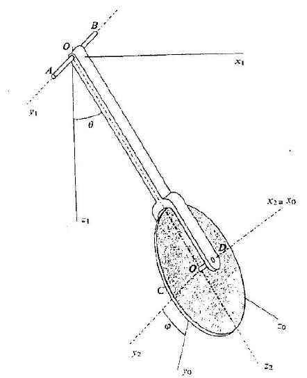
Worked Solution [ Click to Expand ]
Reference Frames, Bases and Degrees of Freedom
- Physical system: two rigid bodies. The fork $F$, of mass $M$ and centre of mass $G$, turns about the fixed horizontal axis $AB$ through $O_1$ (an ideal pin: the fork can only turn about $AB$). The disc $D$, homogeneous, of mass $m$, radius $R$, negligible thickness and centre $O$, turns about the axis $CD$ of the fork through $O$ (an ideal bearing). $CD$ is perpendicular to $AB$ and to the arm of the fork, at the distance $b$ from $AB$; $G$ lies on the arm at the distance $a$ from $AB$.
- Labels of the statement. The statement calls the fixed frame $S_1$ and the disc frame $S_0$; this solution keeps those labels, so here, unlike in
Notes.pdf, the index 1 marks the inertial frame and the index 0 the disc. - Fixed frame: $S_1\{O_1; \mathcal B_1\}$ with $\mathbf i_1$ horizontal (to the right in the figure), $\mathbf j_1$ along $AB$ towards $A$ and $\mathbf k_1$ vertical, pointing down: gravity is $g\,\mathbf k_1$. The basis is right-handed; in the view of the figure, with $\mathbf i_1$ to the right and $\mathbf k_1$ down, $\mathbf j_1$ points out of the paper (⊙), which is the perspective in which $A$ is drawn in front.
- Fork frame: $S_2\{O_1; \mathcal B_2\}$, attached to the fork: $\mathbf j_2$ along $AB$ (equal to $\mathbf j_1$), $\mathbf k_2$ along the arm from $O_1$ towards $O$, and $\mathbf i_2$ parallel to $CD$ (the axis $x_2 \equiv x_0$ of the figure).
- Disc frame: $S_0\{O; \mathcal B_0\}$, attached to the disc: $\mathbf i_0$ equal to $\mathbf i_2$ (along $CD$, normal to the disc) and $\mathbf j_0$, $\mathbf k_0$ in the plane of the disc.
- Angles: $\theta$, from $\mathbf k_1$ to $\mathbf k_2$ about $\mathbf j_1$ (read from the figure: the arm swings from the downward vertical towards $\mathbf i_1$); $\varphi$, from $\mathbf j_2$ to $\mathbf j_0$ about $\mathbf i_2$. The figure marks only the size of $\varphi$; its sense is read as positive about $\mathbf i_2$. The opposite reading would change the sign of the rate of $\varphi$ in every formula below (the axial angular momentum and the gyroscopic torques), not the method.
- Degrees of freedom: two free bodies have twelve; the pin $AB$ removes five (the three components of the velocity of $O_1$ and the two rotations normal to $AB$) and the bearing $CD$ removes five more (the three components of the relative velocity at $O$ and the two relative rotations normal to $CD$). Two degrees of freedom, $\theta$ and $\varphi$.
| Datum | Symbol | SI unit |
|---|---|---|
| Mass of the fork | $M$ | kg |
| Distance from $G$ to $AB$ (along the arm) | $a$ | m |
| Tensor of inertia of the fork at $O_1$, in $\mathcal B_2$ | $\mathrm{diag}(I_1, I_2, I_3)$ | kg m$^2$ |
| Mass of the disc | $m$ | kg |
| Distance from $AB$ to $CD$ (from $O_1$ to $O$) | $b$ | m |
| Radius of the disc | $R$ | m |
| Gravity | $g$, along $\mathbf k_1$ (down) | m/s$^2$ |
| Pin $AB$ on the fork, at $O_1$ | force $\mathbf R_{O_1}$, torque $\mathbf Q_{O_1}$ with no $\mathbf j_2$ component | N, N m |
| Bearing $CD$ on the disc, at $O$ | force $\mathbf R_O$, torque $\mathbf Q_O$ with no $\mathbf i_2$ component | N, N m |
Change of Basis, Position Vectors and Constraint Kinematics
View of the vertical plane of the arm with $\mathbf j_1$ out of the paper (⊙), $\mathbf i_1$ to the right and $\mathbf k_1$ down: a positive $\theta$ turns counterclockwise, from the downward $\mathbf k_1$ towards $\mathbf i_1$. $\mathbf k_2$ is $\mathbf k_1$ turned by $\theta$: hypotenuse 1, adjacent leg along $\mathbf k_1$ (cosine of $\theta$), opposite leg along $\mathbf i_1$ (sine). $\mathbf i_2$ is $\mathbf i_1$ turned by $\theta$: adjacent leg along $\mathbf i_1$ (cosine); the counterclockwise turn carries the tip of $\mathbf i_1$ upwards, and up is minus $\mathbf k_1$, which is the minus sign of the opposite leg (sine).
Units: dimensionless; $[\mathrm{T^{-1}}]$
Meaning: with $\theta$ zero the arm hangs vertically and $\mathcal B_2$ coincides with $\mathcal B_1$; the weight, along $\mathbf k_1$, has a component along minus $\mathbf i_2$ that pulls the arm back towards the vertical.
View of the plane of the disc with $\mathbf i_2$ out of the paper (⊙), $\mathbf j_2$ to the right and $\mathbf k_2$ up (right-handed, since the cross product of $\mathbf j_2$ and $\mathbf k_2$ is $\mathbf i_2$): a positive $\varphi$ turns counterclockwise. $\mathbf j_0$: adjacent leg along $\mathbf j_2$ (cosine of $\varphi$), opposite leg along $\mathbf k_2$ (sine). $\mathbf k_0$: adjacent leg along $\mathbf k_2$ (cosine); the counterclockwise turn carries the tip of $\mathbf k_2$ to the left, towards minus $\mathbf j_2$, which is the minus sign.
Units: dimensionless; $[\mathrm{T^{-1}}]$; $[\mathrm{T^{-2}}]$
Meaning: the disc always contains the line $AB$ (its plane is spanned by $\mathbf j_2$ and $\mathbf k_2$); the term in the product of the two rates is the turning of the spin axis $\mathbf i_2$ as the fork swings.
Both points lie on the arm, at the distances $a$ and $b$ from $O_1$ along $\mathbf k_2$; $O_1$ is fixed.
Units: $[\mathrm L][\mathrm{T^{-1}}]$; $[\mathrm L][\mathrm{T^{-2}}]$ in every term
Meaning: both points describe circles about $AB$; the $\mathbf k_2$ term is the centripetal part, pointing from the point back to $O_1$, and the $\mathbf i_2$ term the tangential part.
Center of Mass and Inertia Tensor
The disc is homogeneous and thin, of surface density $\sigma$ equal to $m/(\pi R^2)$, so its centre of mass is the centre $O$. A point of the disc is at $\rho\cos\chi\,\mathbf j_0 + \rho\sin\chi\,\mathbf k_0$ from $O$, with $\rho$ from 0 to $R$ and $\chi$ from 0 to $2\pi$; its coordinate along $\mathbf i_0$ is zero (negligible thickness). The element of mass is $\sigma\rho\,d\rho\,d\chi$.
Units: $[\mathrm M][\mathrm L^2]$
Meaning: the disc is symmetric about its axis $CD$, so its tensor has the same constant components in the fork basis $\mathcal B_2$, although the disc turns relative to it: this is why $\mathcal B_2$ is the basis used for the disc below.
The fork tensor is a datum of the statement: diagonal in $\mathcal B_2$ at $O_1$, with $I_2$ the moment about $AB$; the centre of mass $G$ is on the arm at the distance $a$ from $O_1$. Both tensors have constant components in $\mathcal B_2$.
Linear Momentum, Angular Momentum and Kinetic Energy
$O_1$ is a fixed point of the fork, so its kinetic energy is the rotational term about $O_1$ alone; the disc has no fixed point and is expanded about its centre of mass $O$.
Units: $[\mathrm{M\,L^2}][\mathrm{T^{-2}}]$, J in every term
Meaning: the swing about $AB$ carries the fork, the disc as a point mass at $O$ and the disc turning about its own diameter; the spin about $CD$ adds a separate term, with no cross term between the two rates because $\mathcal B_2$ is principal for the disc.
Units: $[\mathrm{M\,L^2\,T^{-1}}]$, kg m$^2$/s
Meaning: the spin about $CD$ is weighted by the axial moment, twice the diametral one that weights the swing; the angular momentum is not parallel to the angular velocity unless one of the two rates is zero.
Units: kg m$^2$/s; kg m/s
Meaning: the component along $AB$ is the moment of inertia of the whole swinging assembly about $AB$ times the swing rate; the spin part lies along $CD$, which turns in the vertical plane with the fork, so its components in $\mathcal B_1$ change with $\theta$.
Free-Body Diagram and Equations of Motion
The exploded view separates the two bodies at the bearing $CD$. The bearing acts on the disc with the force $\mathbf R_O$ and the torque $\mathbf Q_O$, both reduced at $O$, and on the fork with $-\mathbf R_O$ and $-\mathbf Q_O$ (third law of Newton). An ideal bearing does not oppose the spin about $CD$, so $\mathbf Q_O$ has no component along $\mathbf i_2$; an ideal pin does not oppose the swing about $AB$, so $\mathbf Q_{O_1}$ has no component along $\mathbf j_2$.
| Load | Body | Point | Expression in $\mathcal B_2$ | Kind |
|---|---|---|---|---|
| Weight of the disc | $D$ | $O$ | $mg\,\mathbf k_1 = mg(-\sin\theta\,\mathbf i_2 + \cos\theta\,\mathbf k_2)$ | applied |
| Bearing force | $D$ | $O$ | $\mathbf R_O = R_{O,x}\,\mathbf i_2 + R_{O,y}\,\mathbf j_2 + R_{O,z}\,\mathbf k_2$ | constraint |
| Bearing torque | $D$ | - | $\mathbf Q_O = Q_{O,y}\,\mathbf j_2 + Q_{O,z}\,\mathbf k_2$ | constraint |
| Weight of the fork | $F$ | $G$ | $Mg\,\mathbf k_1 = Mg(-\sin\theta\,\mathbf i_2 + \cos\theta\,\mathbf k_2)$ | applied |
| Reaction of the disc | $F$ | $O$ | $-\mathbf R_O$ and $-\mathbf Q_O$ | constraint (pair) |
| Pin force | $F$ | $O_1$ | $\mathbf R_{O_1} = R_{1,x}\,\mathbf i_2 + R_{1,y}\,\mathbf j_2 + R_{1,z}\,\mathbf k_2$ | constraint |
| Pin torque | $F$ | - | $\mathbf Q_{O_1} = Q_{1,x}\,\mathbf i_2 + Q_{1,z}\,\mathbf k_2$ | constraint |
The pole $O$ is the centre of mass of the disc, so the term in the velocity of the pole of Eq. 12.13 is the cross product of the velocity of $O$ with itself, zero. The weight and $\mathbf R_O$ act at $O$ and have no moment about it. The components of the angular momentum in $\mathcal B_2$ are differentiated and the turning of $\mathcal B_2$ is added (Eq. 3.8 with the angular velocity of the fork).
Units: N m in the moment equations; N in the force components
Meaning: six equations of the disc. The first one is the free spin about the frictionless bearing: the axial component of the angular momentum is conserved although $\mathbf i_2$ turns, for two reasons: the bearing applies no torque along $\mathbf i_2$, and the gyroscopic term is along $\mathbf k_2$, normal to $\mathbf i_2$, because the angular momentum has no $\mathbf k_2$ component.
The pole $O_1$ is fixed, so its velocity is zero and the pole term of Eq. 12.13 vanishes. The angular momentum of the fork is along $\mathbf j_2$, the axis of $\boldsymbol\omega_{21}$, so its gyroscopic term vanishes too. The moment of the pair at $O$ about $O_1$ uses the arm $b\,\mathbf k_2$.
Units: N m; N
Meaning: six equations of the fork. With the six of the disc they make twelve equations for twelve unknowns: the two coordinates, the three components of $\mathbf R_O$, the two of $\mathbf Q_O$, the three of $\mathbf R_{O_1}$ and the two of $\mathbf Q_{O_1}$.
Units: N m in the first equation; $[\mathrm{T^{-2}}]$ in the second
Meaning: the swing is a compound pendulum whose moment of inertia about $AB$ includes the disc as a point mass at $O$ plus its diametral moment, and whose restoring moment is the total weight moment; the spin does not enter the swing, and the swing does not change the spin.
Write $J$ for the sum of $I_2$, $B$ and the product of $m$ and the square of $b$, and $K$ for the sum of the products $Ma$ and $mb$. The initial values are $\theta_0$, $\varphi_0$ and the two initial rates.
Units: $[\mathrm{T^{-1}}]$; J; s
Meaning: the second boxed integral is the first integral of the swing plus the constant term of the spin, with the constant $C_2$ equal to the sum of $E_\theta$ and the spin term: it is the total mechanical energy, as checked with the power of the reactions in Answers and Checks. The last integral gives the time as a function of $\theta$; its inverse is the motion of the fork, and the spin rate stays constant while the spin angle grows linearly with time.
Reactions
Units: N; N m
Meaning: the force supports the weight of the disc and supplies its tangential and centripetal accelerations; the torque has two parts: along $AB$ it gives the disc its angular acceleration about its diameter, and along $\mathbf k_2$ it turns the spin angular momentum, which lies along $\mathbf i_2$ and is carried round by the swing (when both rates are positive this torque points along minus $\mathbf k_2$).
Units: N; N m
Meaning: the force is the rate of the total linear momentum of the assembly minus the total weight (at rest it holds the weight up); the pin carries the gyroscopic torque of the spinning disc to the ground, and the fork transmits it unchanged because its own angular momentum lies along the pin. With the second rate of $\theta$ from part (d) the force depends only on $\theta$ and its rate.
Answers and Checks
| Asked | Answer |
|---|---|
| (a) Kinetic energy relative to $S_1$ | $T_1 = \left(\tfrac{I_2}{2} + \tfrac{mR^2}{8} + \tfrac{mb^2}{2}\right)\dot\theta^2 + \tfrac{mR^2}{4}\dot\varphi^2$ |
| (b) $\mathbf H_O$ of the disc, in $\mathcal B_2$ | $\tfrac{mR^2}{2}\dot\varphi\,\mathbf i_2 + \tfrac{mR^2}{4}\dot\theta\,\mathbf j_2$ |
| (c) $\mathbf H_{O_1}$ of fork and disc, in $\mathcal B_1$ | $\tfrac{mR^2}{2}\dot\varphi\cos\theta\,\mathbf i_1 + \left(I_2 + \tfrac{mR^2}{4} + mb^2\right)\dot\theta\,\mathbf j_1 - \tfrac{mR^2}{2}\dot\varphi\sin\theta\,\mathbf k_1$ |
| (d) Equations of motion and quadratures | $\left(I_2 + \tfrac{mR^2}{4} + mb^2\right)\ddot\theta + (Ma + mb)g\sin\theta = 0$, $\ddot\varphi = 0$; $\dot\varphi = C_1$; $\left(\tfrac{I_2}{2} + \tfrac{mR^2}{8} + \tfrac{mb^2}{2}\right)\dot\theta^2 + \tfrac{mR^2}{4}\dot\varphi^2 - (mb + Ma)g\cos\theta = C_2$; $t = \pm\int_{\theta_0}^{\theta}\sqrt J\,d\theta'/\sqrt{2(E_\theta + Kg\cos\theta')}$ |
| (e) Axis $AB$ on the system, at $O_1$ | $\mathbf R_{O_1} = [(Ma + mb)\ddot\theta + (M + m)g\sin\theta]\,\mathbf i_2 - [(Ma + mb)\dot\theta^2 + (M + m)g\cos\theta]\,\mathbf k_2$; $\mathbf Q_{O_1} = -\tfrac{mR^2}{2}\dot\varphi\dot\theta\,\mathbf k_2$ |
| (f) Axis $CD$ on the disc, at $O$ | $\mathbf R_O = (mb\ddot\theta + mg\sin\theta)\,\mathbf i_2 - (mb\dot\theta^2 + mg\cos\theta)\,\mathbf k_2$; $\mathbf Q_O = \tfrac{mR^2}{4}\ddot\theta\,\mathbf j_2 - \tfrac{mR^2}{2}\dot\varphi\dot\theta\,\mathbf k_2$ |
Second route to the constant $C_2$ of part (d), without the equations of motion: the power of every reaction is shown to be zero and the weights are conservative. The pair at the bearing acts on both bodies at $O$.
Units: J in every term
Meaning: the same integral as in part (d), obtained without the equations of motion: the pin and the bearing are workless, so $T_1$ of part (a) plus the potential of the two weights is constant.
Check against the official key: the key (Problems.pdf, p. 79) prints the quadratures, the spin rate equal to $C_1$ and the energy integral with the coefficients $I_2/2 + mR^2/8 + mb^2/2$, $mR^2/4$ and $mb + Ma$; the force and torque of $AB$ at $O_1$, with the components $(Ma + mb)$ times the second rate plus $(M + m)g$ times the sine of $\theta$ along $\mathbf i_2$, minus $(Ma + mb)$ times the squared rate plus $(M + m)g$ times the cosine along $\mathbf k_2$, and the torque $mR^2/2$ times the product of the rates along minus $\mathbf k_2$; and the force and torque of $CD$ on the disc at $O$ with the same form, $m$ in place of the totals, and the torque $mR^2/4$ times the second rate of $\theta$ along $\mathbf j_2$ minus the same gyroscopic term along $\mathbf k_2$. Every printed item coincides with the boxes of parts (d), (e) and (f), in the same basis $\mathcal B_2$ and with the same angles: match. The key calls the pin a collar; the force component along $AB$ comes out zero here, so a collar that could also slide along $AB$, started at rest along it, gives the same results. The key prints no expressions for parts (a) to (c); those of this solution are the terms of its energy integral.
Limiting cases and consistency:
- No disc. With $m$ zero the swing equation is the compound pendulum of the fork about $AB$, with moment $I_2$ and restoring moment $Mga$ times the sine of $\theta$; the bearing loads vanish.
- Disc as a particle. With $R$ tending to zero the disc enters only as a point mass at $O$: the moment about $AB$ becomes $I_2$ plus $m b^2$, and the gyroscopic torques vanish.
- Equilibrium. At rest with $\theta$ zero, $\mathbf k_2$ is $\mathbf k_1$ (down) and the pin force is $(M + m)g$ along minus $\mathbf k_1$: it holds the total weight up.
- Small swings. For small $\theta$ the swing is harmonic with the squared angular frequency $(Ma + mb)g$ over $J$; the spin does not change it.
- Dimensions. Every term of the swing equation is a moment (N m); every term of the energy integral is an energy; the reactions are forces and moments.
Interactive geometry simulator: it needs JavaScript. The figures above show the same geometry.
The Pioneer III lunar probe is an axisymmetric space vehicle, as shown in the figure. The mass of the probe is $m$, radius is $R$, and moment of inertia with respect to the axis of symmetry is $I$. It is launched with an initial constant spin rate $\omega_0$. By using a yo-yo with two weights of mass $m/2$ each, it is desired to reduce the spin rate to $\omega_f$. Each mass is connected to the spacecraft by a cord, as shown in the figure for one of the mass [sic]. The cords are attached to the spacecraft at $H$ and $H'$. Both masses are released simultaneously by explosive bolts, so that the cords unwrap in the manner shown in the figure. In doing so, the points of tangency, $T$ and $T'$, move around the circumference towards $H$ and $H'$ (respectively). When $T$ and $T'$ reach the hinges $H$ and $H'$, the cords are automatically released from the spacecraft. The gravitational interaction with all celestial bodies (Sun, Earth, etc.) may be considered negligible.
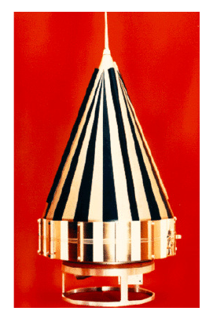
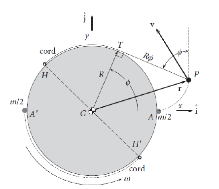
-
(a)
Analyze the motion after the release of the yo-yo masses and compute the evolution of the probe's angular velocity as function of time.
-
(b)
In order to obtain the desired final angular velocity, what is the required length of the cord that joins the yo-yo masses and the probe?
-
(c)
Compute the evolution of the tension in the cord as function of time.
Worked Solution [ Click to Expand ]
Reference Frames, Bases and Degrees of Freedom
- Physical system: three bodies in free space. The probe, an axisymmetric rigid body of mass $m$, radius $R$ and moment of inertia $I$ about its axis of symmetry, with centre $G$; two yo-yo masses of $m/2$ each, modelled as particles $P$ and $P'$; two massless, inextensible cords, wound on the rim of the probe, attached to it at $H$ and $H'$. No external force acts (gravity negligible).
- Plane of the motion: the spin axis of the probe is normal to the plane of the figure and the masses move in that plane, so the motion is planar.
- Inertial frame: $S_0\{G; \mathcal B_0\}$, with $\mathbf i_0$, $\mathbf j_0$ in the plane of the figure and $\mathbf k_0$ out of the paper (⊙) along the spin axis. Its origin is the position of $G$, which is shown below to stay at rest.
- Probe frame: $S_1\{G; \mathcal B_1\}$, attached to the probe, with $\mathbf i_1$ along $GA$, the radius through the point $A$ of the rim where the mass sat before the release (the axes $x$, $y$ of the figure), and $\mathbf j_1$ normal to it. The angle $\theta$ goes from $\mathbf i_0$ to $\mathbf i_1$ about $\mathbf k_0$; the spin of the statement is the rate of $\theta$, with the initial value $\omega_0$.
- Cord basis: $\mathcal B_2\{\mathbf e_r, \mathbf e_t, \mathbf k_0\}$, with $\mathbf e_r$ along $GT$ (the radius to the point of tangency $T$) and $\mathbf e_t$ tangent to the rim at $T$, counterclockwise. The angle $\phi$ goes from $\mathbf i_1$ to $\mathbf e_r$ about $\mathbf k_0$, measured in the probe, as in the figure.
- Senses, read from the figure (the velocity arrow drawn at $P$ in the statement is only schematic: the true velocity has a radial part from the winding): the cord is wound counterclockwise from $A$ over the top towards $H$, the point $T$ moves counterclockwise from $A$ towards $H$, and the straight part of the cord leaves $T$ in the clockwise tangent direction, towards $P$ (the figure, with $T$ at about 70 degrees, puts $P$ at about 1.5 $R$ to the right and 0.5 $R$ up, which the position vector below reproduces). With this winding the cord pulls the rim clockwise, so it slows the probe only if the spin is counterclockwise: the spin is read as counterclockwise (rate of $\theta$ positive). The mirror reading (cord and spin both clockwise) changes the sign of every angle and leaves every magnitude unchanged.
- Degrees of freedom: the planar probe has three coordinates and each particle two (seven); each taut cord leaves its particle on the curve given by its angle of tangency, one condition per cord. Five degrees of freedom: the two coordinates of $G$, $\theta$ and the two angles of tangency. Both masses are released at the same instant from diametrically opposite points with equal cords, and the motion considered is the symmetric one, in which $P'$ is the image of $P$ by the half-turn about $G$ (it satisfies every equation below, written once for $P$); then the two angles of tangency are equal to $\phi$, $G$ stays at rest (shown in the next sections) and two coordinates remain, $\theta$ and $\phi$.
| Datum | Symbol | SI unit |
|---|---|---|
| Mass of the probe | $m$ | kg |
| Radius of the probe (rim on which the cords are wound) | $R$ | m |
| Moment of inertia of the probe about its axis | $I$ | kg m$^2$ |
| Mass of each yo-yo weight | $m/2$ | kg |
| Initial spin, desired final spin | $\omega_0$, $\omega_f$ | rad/s |
| Length of each cord (unknown of part (b)) | $L$ | m |
| Tension of each cord (unknown of part (c)) | $T_c \ge 0$ | N |
| Ratio used by the key | $K$, equal to $mR^2/(I + mR^2)$ | - |
Change of Basis, Position Vectors and Constraint Kinematics
View of the plane of the figure with $\mathbf k_0$ out of the paper (⊙): positive angles turn counterclockwise. $\mathbf i_1$ is $\mathbf i_0$ turned by $\theta$: hypotenuse 1, adjacent leg along $\mathbf i_0$ (cosine), opposite leg along $\mathbf j_0$ (sine). $\mathbf j_1$ is $\mathbf j_0$ turned by $\theta$: adjacent leg along $\mathbf j_0$ (cosine); the counterclockwise turn carries the tip of $\mathbf j_0$ to the left, towards minus $\mathbf i_0$, which is the minus sign. The cord basis is the probe basis turned by $\phi$ in the same way.
Units: dimensionless; $[\mathrm{T^{-1}}]$
Meaning: the absolute angle of the radius to the point of tangency is the sum of $\theta$ and $\phi$, so the cord basis turns with the sum of the two rates.
The cord was wound on the rim from $A$; the free part, from $T$ to $P$, is straight and tangent to the rim at $T$, and its length is the unwound arc from $A$ to $T$, of length $R$ times $\phi$ (inextensible cord). The triangle $GTP$ has its right angle at $T$, the leg $R$ along $\mathbf e_r$, the leg of length $R\phi$ along minus $\mathbf e_t$, and the hypotenuse $GP$. The probe point at $T$ moves with the probe.
Units: $[\mathrm L]$; $[\mathrm L][\mathrm{T^{-1}}]$; $[\mathrm L][\mathrm{T^{-2}}]$ in every term
Meaning: relative to the probe, $P$ moves on the involute of the rim. Along the cord ($\mathbf e_t$) the mass and the probe point at $T$ have the same velocity, as an inextensible cord requires; their relative velocity is normal to the cord. At the release the angle $\phi$ is zero and the velocity of $P$ is the rim velocity, whatever the rate of $\phi$.
Center of Mass and Inertia Tensor
The probe is axisymmetric: its centre of mass is $G$, on the axis $\mathbf k_0$, which is a principal axis with the moment $I$ (datum). In the symmetric motion the position of $P'$ from $G$ is minus that of $P$. The masses are particles: they have no inertia about their own centre.
Units: $[\mathrm L]$; $[\mathrm{M\,L^2}]$
Meaning: the centre of mass of the whole system is the centre of the probe at every instant of the symmetric motion; before the release the system turns as one body with the moment $I$ plus $mR^2$, the sum that appears in the key.
Linear Momentum, Angular Momentum and Kinetic Energy
The probe turns about its principal axis $\mathbf k_0$ with $\boldsymbol\omega_{10}$; each mass contributes the moment of its momentum about $G$, and $P'$ contributes the same as $P$ (both its position and its velocity are reversed).
Units: kg m$^2$/s; J
Meaning: as the cords unwind, the masses move out and their share of the angular momentum grows with the square of $\phi$; since the total does not change (next section), the probe's own share, and so its spin, must decrease.
Free-Body Diagram and Equations of Motion
The exploded view cuts each cord at the probe. A cord is massless and straight between $T$ and $P$, so it transmits the same tension $T_c$ along its own direction to both ends: on the mass it pulls towards $T$, along $\mathbf e_t$; on the probe it pulls at $T$ towards $P$, along minus $\mathbf e_t$. For the image cord, $T'$ is minus $R\,\mathbf e_r$ and the cord direction is reversed.
| Load | Body | Point | Expression | Kind |
|---|---|---|---|---|
| Cord 1 on the probe | probe | $T$, at $R\,\mathbf e_r$ from $G$ | $-T_c\,\mathbf e_t$ | constraint (pair) |
| Cord 2 on the probe | probe | $T'$, at $-R\,\mathbf e_r$ from $G$ | $T_c\,\mathbf e_t$ | constraint (pair) |
| Cord 1 on the mass | $P$ | $P$ | $T_c\,\mathbf e_t$ | constraint (pair) |
| Cord 2 on the mass | $P'$ | $P'$ | $-T_c\,\mathbf e_t$ | constraint (pair) |
| Gravity | all | - | negligible (statement) | - |
The pole $G$ is the centre of mass of the probe, so the pole term of Eq. 12.13 vanishes. The probe turns about its fixed principal axis $\mathbf k_0$, so its angular momentum is $I$ times the rate of $\theta$ along $\mathbf k_0$ and its derivative is $I$ times the second rate.
Units: N; N m
Meaning: the centre of the probe does not accelerate, so with $G$ initially at rest it stays at rest, as assumed in the position vector. Each taut cord pulls the rim clockwise with the arm $R$: the spin decreases while the tension is positive.
Units: $[\mathrm{T^{-2}}]$ in the first equation; N in the second
Meaning: with the probe equation, three equations for three unknowns ($\theta$, $\phi$ and $T_c$); the equations of $P'$ are the same, by the symmetry.
Write $\Omega$ for the sum of the rates of $\theta$ and $\phi$ (the absolute rate of the cord basis). The radial equation of the mass, multiplied by $\phi$, gives the square of $\phi$ times the rate of $\Omega$.
Units: kg m$^2$/s
Meaning: the bracket is the angular momentum of the previous section: the equations of the parts reproduce the conservation that Eq. 13.12 gives directly for the whole system, on which no external moment acts and whose centre of mass $G$ is at rest (no pole term).
Units: J
Meaning: the cords do no net work: they only transfer energy from the spin of the probe to the motion of the masses (checked with the power of the pairs in Answers and Checks).
At the release ($t$ zero) the masses ride on the rim: $\phi$ is zero and the velocity of $P$, from the velocity box with $\phi$ zero, is $R$ times the initial spin along $\mathbf e_t$, whatever the rate of $\phi$. The integrals are evaluated with that velocity. Write $\omega$ for the rate of $\theta$ and $c$ for the ratio of $I + mR^2$ to $mR^2$ (the inverse of $K$).
Units: $K\omega_0^2 t^2$ is $[\mathrm{T^{-2}}][\mathrm{T^2}]$, dimensionless; $\omega$ in $[\mathrm{T^{-1}}]$
Meaning: the cords unwind at the constant relative rate $\omega_0$, from the first instant: the rate of $\phi$ is not continuous at the release, which is allowed because at $\phi$ zero the velocity of the mass does not depend on it. The other root of the division, a spin equal to $\omega_0$ for all time, needs the product of the square of $\phi$ and $\Omega$ to stay zero: either the masses stay on the rim, or the cords wind back with $\phi$ negative; neither is the released motion. The spin falls monotonically; it is zero when the product of $K$ and the square of the time and of $\omega_0$ equals one, and negative (reversed) afterwards.
The spin is rewritten as twice $\omega_0$ over the denominator, minus $\omega_0$. The derivative of the arctangent of $\sqrt K\,\omega_0 t$ is $\sqrt K\,\omega_0$ over the same denominator (chain rule).
Units: radians; m
Meaning: the point of tangency turns in space at the rate $\Omega$, twice $\omega_0$ over the denominator: it starts at twice $\omega_0$ and decreases towards zero as time grows, so its absolute angle tends to the finite value $\pi$ over $\sqrt K$. When the cords are released, each mass leaves along a straight line with its velocity at that instant, and the probe keeps its final spin, since no torque acts on it any longer.
The cords leave the probe when $T$ reaches $H$: the whole cord, of length $L$, is then straight, so the unwound arc $R\phi$ equals $L$; at that instant the spin must be $\omega_f$.
Units: $[\mathrm{M\,L^2}]/[\mathrm M] = [\mathrm{L^2}]$; $[\mathrm L]/([\mathrm L][\mathrm{T^{-1}}]) = [\mathrm T]$
Meaning: the length does not depend on $\omega_0$ itself, only on the ratio of the two spins. To stop the spin completely the cord must be the square root of the ratio of $I + mR^2$ to $m$; with $I$ equal to $mR^2$ this is $\sqrt 2$ times $R$, about 1.414 $R$. A longer cord reverses the spin.
Write $u$ for the product of $K$, the square of $\omega_0$ and the square of $t$; its rate is twice the product of $K$, the square of $\omega_0$ and $t$.
Units: $[\mathrm{M\,L^2}][\mathrm{T^{-3}}][\mathrm T]/[\mathrm L] = [\mathrm{M\,L\,T^{-2}}]$, N
Meaning: the tension starts at zero, is positive for every later time (the cords stay taut, as assumed), peaks and then decays; it vanishes after the release of the cords. With $K$ equal to one half the peak is about 0.459 times the ratio of $I$ times the square of $\omega_0$ to $R$, at $\omega_0 t$ about 0.816 (graph below).
Answers and Checks
| Asked | Answer |
|---|---|
| (a) Motion and spin of the probe | $G$ at rest; cords unwind at the constant rate $\dot\phi = \omega_0$, $\phi = \omega_0 t$; $\omega(t) = \omega_0(1 - K\omega_0^2t^2)/(1 + K\omega_0^2t^2)$ with $K = mR^2/(I + mR^2)$; $\theta = \theta_0 + (2/\sqrt K)\arctan(\sqrt K\omega_0 t) - \omega_0 t$; masses on the involute $\mathbf r^P = R\,\mathbf e_r - R\omega_0 t\,\mathbf e_t$ |
| (b) Cord length | $L^2 = (I + mR^2)(\omega_0 - \omega_f)/[m(\omega_0 + \omega_f)]$, released at $t_f = L/(R\omega_0)$ |
| (c) Tension of each cord | $T_c = 2KI\omega_0^3 t/[R(1 + K\omega_0^2t^2)^2]$ for $0 \le t \le t_f$; maximum $\tfrac{3\sqrt3}{8}\sqrt K\,I\omega_0^2/R$ at $t = 1/(\omega_0\sqrt{3K})$ |
First, the energy integral without the equations: the pair of cord 1 acts on $P$ and on the probe point at $T$. Second, the tension from the equation of the mass instead of the probe, with the rate of $\phi$ equal to $\omega_0$ and $\Omega$ equal to $\omega_0 + \omega$.
Units: W; N
Meaning: the cords are workless, which confirms the energy integral; the tension computed from either end of the cord is the same, so the tangential equation of the mass is satisfied by the motion of part (a); the radial equation is satisfied too, because its two terms cancel for the same motion (centripetal term of the mass against the term of the winding rate).
Check against the official key: the key (Problems.pdf, p. 80) prints the required length, the square of $L$ equal to $(I + mR^2)(\omega_0 - \omega_f)$ over $m(\omega_0 + \omega_f)$, and the tension $2KI\omega_0^3 t$ over $R(1 + K\omega_0^2t^2)^2$, with $K$ equal to $mR^2/(I + mR^2)$. Both coincide with the boxes of parts (b) and (c); the key's tension is that of one cord (the probe equation holds twice that tension, one per cord): match. The key prints no expression for part (a); the spin of part (a) is the one consistent with both printed results.
Limiting cases and consistency:
- Light weights. With $m$ much smaller than the ratio of $I$ to the square of $R$, $K$ tends to zero: the spin hardly changes during any finite time and the length of part (b) grows without bound.
- No de-spin requested. With $\omega_f$ equal to $\omega_0$ the length of part (b) is zero: no cord, no change.
- Complete stop. With $\omega_f$ zero, the square of $\phi_f$ is the inverse of $K$; at that instant the angular momentum is carried by the masses alone, each at the distance $R\sqrt{1 + \phi_f^2}$ from $G$.
- Tension at the start. At the release the tension is zero, consistent with the masses riding on the rim at that instant.
- Dimensions. $K$ is a ratio of two moments of inertia; $K\omega_0^2t^2$ is dimensionless; $L^2$ is a moment of inertia over a mass; $T_c$ is a moment of inertia times an angular acceleration over a length.
Interactive geometry simulator: it needs JavaScript. The figures above show the same geometry.
A reaction wheel is a type of flywheel used for attitude control of spacecraft. Consider a spacecraft $b$, modeled as a homogeneous rigid rod of mass $m^b = 6M$, and length $L$, and negligible diameter. Two reaction wheels $w_1$ and $w_2$ with radius $R$ and mass $m^{w_1} = m^{w_2} = M$ are located at the ends of the spacecraft. We define an inertial reference frame $S_0 = \{O; B_0\}$ (not shown in the figure), and a parallel reference frame $S_G = \{G; B_0\}$ that translates but does not rotate with the spacecraft. Observe that $G$ is the center of mass of of $b$ [sic] and also the center of mass of the whole assembly. Furthermore, we define a spacecraft-fixed reference frame $S_b = \{G; B_b\}$. This reference frame is defined with the axis $Gx_b$ along the spacecraft in the direction from wheel 2 to wheel 1. The direction of $Gx_b$ is defined with the angles $\theta$ and $\varphi$ as in spherical coordinates, as shown in the figure. The reaction wheels can rotate with respect to the spacecraft $b$ about the $Gx_b$ axis, with unknown angular rates $\dot\phi_1$ and $\dot\phi_2$ that may vary in time, respectively. The (degenerate) tensor of inertia of the spacecraft body $b$ alone (without the wheels) about its center of mass $G$, and the tensor of inertia of one wheel $w_i$ about its center of mass $G_i$, expressed in basis $B_b$, are:
We assume that the system is in deep space, so all the external forces and torques are negligible. Lastly, consider the following initial conditions ($\Omega$ is a known constant):
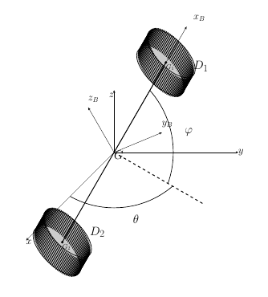
-
(a)
Express the angular velocities of the spacecraft and reaction wheels $\boldsymbol\omega_{b0}$, $\boldsymbol\omega_{10}$, and $\boldsymbol\omega_{20}$ as a function of $\theta$, $\varphi$, $\dot\theta$, $\dot\varphi$, $\dot\phi_1$, $\dot\phi_2$.
-
(b)
Express the absolute velocities of $G_1$ and $G_2$ as a function of the absolute velocity of $G$, $\theta$, $\varphi$, $\dot\theta$ and $\dot\varphi$.
-
(c)
Compute the angular momentum of each of the reaction wheels about their respective center of mass ($G_1$ and $G_2$).
-
(d)
Compute the angular momentum of the whole system about the center of mass of the whole system.
-
(e)
Compute the kinetic energy, $T$, of the whole assembly.
-
(f)
Pose the set of ordinary differential equations for the position of $G$ and for $\theta$, $\varphi$, $\phi_1$, $\phi_2$.
-
(g)
Write down the reaction forces and torques at the joints between the rod and the reaction wheels.
Worked Solution [ Click to Expand ]
Reference Frames, Bases and Degrees of Freedom
- Physical system: three rigid bodies in deep space, with no external force or torque. The spacecraft $b$ is a homogeneous rod of mass $6M$, length $L$ and negligible diameter, with centre $G$. The reaction wheels $w_1$ and $w_2$ are thin homogeneous discs of radius $R$ and mass $M$ (the tensor of the statement is that of a thin disc), with centres $G_1$ and $G_2$ at the two ends of the rod and their axes along the rod; each turns relative to the rod about the rod axis, driven by its motor.
- Inertial frame: $S_0\{O; \mathcal B_0\}$, with $\mathcal B_0\{\mathbf i_0, \mathbf j_0, \mathbf k_0\}$ along the axes $x$, $y$, $z$ of the figure ($z$ up). The frame $S_G\{G; \mathcal B_0\}$ translates with $G$ without rotating.
- Intermediate basis: $\mathcal B'\{\mathbf i', \mathbf j', \mathbf k_0\}$, turned by $\theta$ about $\mathbf k_0$; $\mathbf i'$ is the horizontal projection of the rod direction (the dashed line of the figure).
- Spacecraft frame: $S_b\{G; \mathcal B_b\}$, with $\mathbf i_b$ along the rod from wheel 2 to wheel 1, $\mathbf j_b$ equal to $\mathbf j'$ (horizontal) and $\mathbf k_b$ completing the right-handed basis (the axes $x_B$, $y_B$, $z_B$ of the figure; the statement writes $\mathbf i_B$ for $\mathbf i_b$).
- Angles, read from the figure: $\theta$ is the azimuth, from $\mathbf i_0$ to the projection $\mathbf i'$, about $\mathbf k_0$; $\varphi$ is the elevation of the rod above the horizontal plane $Gxy$ (its arc runs from the dashed projection up to $x_B$), about minus $\mathbf j'$. If $\varphi$ were read as the polar angle from $\mathbf k_0$, sine and cosine of $\varphi$ would swap in every formula below and the sign of its rate would flip, since the polar angle grows when the elevation falls: the $\mathbf j_b$ component of the spacecraft angular velocity would be plus the rate of the polar angle, and its initial value would be plus $\Omega/\sqrt2$. At the initial instant both readings give the same direction, since $\varphi$ is $\pi/4$. The wheel angles $\phi_1$ and $\phi_2$ are measured relative to $\mathcal B_b$ about $\mathbf i_b$.
- The degenerate rod. A rod of negligible diameter has no moment of inertia about its own axis, so a spin of the rod about that axis carries no momentum and no energy: the frame $\mathcal B_b$ is fixed to the direction of the rod by $\theta$ and $\varphi$ alone, and the wheel rates are measured from it. The initial angular velocity of the statement is consistent with this (checked in the next section).
- Coordinates: the position of $G$ (three), $\theta$, $\varphi$, $\phi_1$ and $\phi_2$. The momentum of the system is conserved and initially zero, so $G$ stays at the origin (shown below) and four coordinates remain.
| Datum | Symbol | SI unit |
|---|---|---|
| Mass and length of the spacecraft rod | $6M$, $L$ | kg, m |
| Mass and radius of each wheel | $M$, $R$ | kg, m |
| Position of the wheel centres | $G_1$ and $G_2$ at $\pm(L/2)\,\mathbf i_b$ from $G$ | m |
| Tensor of the rod at $G$, in $\mathcal B_b$ | $\tfrac{1}{12}(6M)L^2\,\mathrm{diag}(0, 1, 1)$ | kg m$^2$ |
| Tensor of each wheel at its centre, in $\mathcal B_b$ | $\tfrac14 MR^2\,\mathrm{diag}(2, 1, 1)$ | kg m$^2$ |
| Initial state | $\mathbf r_0^G = \mathbf 0$, $\mathbf v_0^G = \mathbf 0$, $\theta = 0$, $\varphi = \pi/4$, $\phi_1 = \phi_2 = 0$, $\dot\phi_1 = \dot\phi_2 = \Omega/2$, $\boldsymbol\omega_{b0} = \tfrac{\Omega}{\sqrt2}\left[\tfrac{1}{\sqrt2}\mathbf i_b + \mathbf j_b + \tfrac{1}{\sqrt2}\mathbf k_b\right]$ | m, m/s, rad, rad/s |
Change of Basis, Position Vectors and Constraint Kinematics
View from above, $\mathbf k_0$ out of the paper (⊙): a positive $\theta$ turns counterclockwise. $\mathbf i'$: hypotenuse 1, adjacent leg along $\mathbf i_0$ (cosine), opposite leg along $\mathbf j_0$ (sine). $\mathbf j'$: adjacent leg along $\mathbf j_0$ (cosine); the counterclockwise turn carries the tip of $\mathbf j_0$ towards minus $\mathbf i_0$, which is the minus sign.
Units: dimensionless; $[\mathrm{T^{-1}}]$
Meaning: $\mathbf i'$ is the horizontal direction under the rod; $\mathbf j'$ is horizontal and normal to the vertical plane of the rod.
View of the vertical plane of the rod with $\mathbf i'$ to the right and $\mathbf k_0$ up; then $\mathbf j'$ points into the paper (⊗), because the cross product of $\mathbf i'$ and $\mathbf k_0$ is minus $\mathbf j'$, out of the paper. Raising the rod by $\varphi$ is a counterclockwise turn as seen, that is a positive rotation about the axis out of the paper, minus $\mathbf j'$. $\mathbf i_b$: adjacent leg along $\mathbf i'$ (cosine of $\varphi$), opposite leg along $\mathbf k_0$ (sine). $\mathbf k_b$: adjacent leg along $\mathbf k_0$ (cosine); the counterclockwise turn carries the tip of $\mathbf k_0$ to the left, towards minus $\mathbf i'$, which is the minus sign.
Units: dimensionless
Meaning: the first column is the unit vector of spherical coordinates with azimuth $\theta$ and elevation $\varphi$; $\mathbf k_b$ leans away from the vertical, backwards from the rod, as $z_B$ in the figure.
Units: $[\mathrm{T^{-1}}]$ in every component
Meaning: the wheels share the transverse components of the spacecraft and differ from it only along the rod, by their own rates.
At the initial instant the elevation is $\pi/4$, so the sine and the cosine of $\varphi$ are both $1/\sqrt2$.
Units: $[\mathrm{T^{-1}}]$
Meaning: three components fix two rates, and the statement's components along $\mathbf i_b$ and $\mathbf k_b$ are equal, as part (a) requires at this elevation: the data are consistent with a frame that has no own spin about the rod (an own spin would change the $\mathbf i_b$ component only). Initially the azimuth grows and the elevation decreases: the rod turns counterclockwise seen from above while tilting down towards the horizontal plane.
Units: $[\mathrm L][\mathrm{T^{-1}}]$ in every term
Meaning: relative to $G$ the wheel centres move on a sphere of radius $L/2$, along the azimuthal direction (rate of $\theta$, scaled by the cosine of the elevation: the radius of the parallel) and the meridian direction (rate of $\varphi$); the two velocities are opposite, so their mean is the velocity of $G$.
Center of Mass and Inertia Tensor
Units: $[\mathrm L]$
Meaning: as the statement says, $G$ is the centre of mass of the rod and of the whole assembly.
The rod lies on the axis $\mathbf i_b$, from minus $L/2$ to $L/2$, with linear density $\lambda$ equal to $6M/L$; a point at the abscissa $x$ is at the distance $x$ from the axes $\mathbf j_b$ and $\mathbf k_b$ and at zero distance from $\mathbf i_b$ (negligible diameter); the products of inertia contain a zero coordinate.
Units: $[\mathrm M][\mathrm L^2]$
Meaning: the datum of the statement, one twelfth of $6ML^2$; the rod resists turning about any transverse axis, not about its own axis.
Surface density $\sigma$ equal to $M/(\pi R^2)$; a point of the wheel is at $\rho\cos\chi\,\mathbf j + \rho\sin\chi\,\mathbf k$ from its centre, in the plane normal to $\mathbf i_b$.
Units: $[\mathrm M][\mathrm L^2]$
Meaning: the datum of the statement. The wheel is symmetric about $\mathbf i_b$, so its tensor keeps these components in $\mathcal B_b$ although it spins relative to the rod; this is why $\mathcal B_b$ is used for the wheels below. With the rod, the whole assembly has the moment $MR^2$ about the rod and $ML^2$ plus $MR^2/2$ about any transverse axis.
Linear Momentum, Angular Momentum and Kinetic Energy
Units: $[\mathrm{M\,L^2}][\mathrm{T^{-1}}]$, kg m$^2$/s
Meaning: the spin of each wheel relative to the rod enters only the axial component, with the axial moment; the transverse components are those of a disc turning with the spacecraft.
Write $\mathbf u$ for the bracket of part (b), the velocity of $G_1$ relative to $G$ divided by $L/2$: its components in $\mathcal B_b$ are zero, the rate of $\theta$ times the cosine of $\varphi$, and the rate of $\varphi$.
Units: kg m/s; kg m$^2$/s; J
Meaning: the angular momentum along the rod is held only by the wheels; the transverse part is that of the whole assembly turning with the rod.
Free-Body Diagram and Equations of Motion
No external load acts. The exploded view cuts each wheel from the rod at its axle: the rod acts on wheel $i$ at $G_i$ with the force $\mathbf F_i$ and the torque $\mathbf Q_i$ (bearing reactions normal to the axle plus the motor torque along $\mathbf i_b$), and the wheel acts on the rod with $-\mathbf F_i$ and $-\mathbf Q_i$ (third law of Newton).
| Load | Body | Point | Expression | Kind |
|---|---|---|---|---|
| Axle 1 | $w_1$ | $G_1$ | $\mathbf F_1$, $\mathbf Q_1$ (its $\mathbf i_b$ component is the motor torque) | internal (pair) |
| Axle 2 | $w_2$ | $G_2$ | $\mathbf F_2$, $\mathbf Q_2$ | internal (pair) |
| Wheels on the rod | $b$ | $G_1$, $G_2$ | $-\mathbf F_1$, $-\mathbf Q_1$; $-\mathbf F_2$, $-\mathbf Q_2$ | internal (pair) |
| Gravity and other external loads | all | - | negligible (deep space) | - |
Each moment equation is taken about the centre of mass of its own body, so the pole term of Eq. 12.13 is a velocity crossed with itself, zero. The axle force on a wheel acts at its centre and has no moment about it.
Units: N; N m
Meaning: eighteen scalar equations of the three bodies; their combinations below contain no axle load, and the axle loads of part (g) follow from the equations of the wheels.
From part (b), the mean of the velocities of $G_1$ and $G_2$ is the velocity of $G$, and so is the mean of their accelerations (time derivative).
Units: m; m/s; kg m$^2$/s
Meaning: the axle loads are internal, so the total angular momentum about the fixed centre of mass is a constant vector of $S_0$. What this allows the motors to do is worked out in part (f): with the wheels on the axis of a rod that has no axial inertia, they cannot change the direction of the rod.
At the initial instant the sine and cosine of $\varphi$ are $1/\sqrt2$, $\theta$ is zero, the rates are those found above and each wheel rate is $\Omega/2$; the products of the rate of $\theta$ with the sine and with the cosine of $\varphi$ are both $\Omega/2$.
Units: $[\mathrm M][\mathrm{T^{-1}}][\mathrm{L^2}]$; $[\mathrm{M\,L^2\,T^{-2}}]$
Meaning: the angular momentum keeps this value for all time (combination box); the kinetic energy is only its initial value, since the motors can do work (part (f)). The boxed form of the angular momentum takes a factor one half out of each bracket of the previous line, and its components are called $h_x$, $h_y$, $h_z$ below.
Write $J$ for the transverse moment of the assembly, $ML^2$ plus $MR^2/2$, $\mathbf h$ for the constant value of $\mathbf H_G$ and $A$ for its component along the rod. The rate of $\mathbf i_b$ is the bracket of part (b).
Units: $[\mathrm{T^{-1}}]$; $[\mathrm{M\,L^2\,T^{-1}}]$
Meaning: the component of the angular momentum along the moving rod is constant for two reasons: the angular momentum itself does not change (no external moment) and the rate of $\mathbf i_b$ is normal to it. The direction of the rod turns about the fixed direction of $\mathbf H_G$ at the constant rate $|\mathbf H_G|/J$, keeping a constant angle to it, and the wheel rates do not appear in that equation: a rod with no inertia about its own axis, carrying the wheels on that axis, cannot be steered by them. The motors only exchange axial spin between the two wheels; the sum in the boxed relation is fixed and only the difference of the wheel rates is free.
With $G$ at rest, the acceleration of $G_1$ is $L/2$ times the second rate of $\mathbf i_b$, and that of $G_2$ is its opposite. The rates of $\mathbf j_b$ and $\mathbf k_b$ come from Poisson's formula with $\boldsymbol\omega_{b0}$ of part (a); $s$ and $c$ stand for the sine and cosine of $\varphi$.
Units: $[\mathrm M][\mathrm L][\mathrm{T^{-2}}]$, N
Meaning: the $\mathbf i_b$ part is the centripetal force that keeps each wheel on the sphere of radius $L/2$ about $G$, pointing from the wheel towards $G$; the other two are the tangential parts. The rod receives minus these forces, which cancel each other, in agreement with $G$ at rest; the two forces form a couple on the rod.
The tensor of the wheel has constant components in $\mathcal B_b$ (symmetry about $\mathbf i_b$), so the components of part (c) are differentiated and the turning of $\mathcal B_b$ is added (Eq. 3.8 with $\boldsymbol\omega_{b0}$). Write $a_i$, $b$, $c_3$ for the components of $\mathbf H_{G_i}$ of part (c): $a_i$ is $MR^2/2$ times the axial rate of the wheel, $b$ is minus $MR^2/4$ times the rate of $\varphi$, and $c_3$ is $MR^2/4$ times the rate of $\theta$ times the cosine of $\varphi$.
Units: $[\mathrm{M\,L^2}][\mathrm{T^{-2}}]$, N m
Meaning: the $\mathbf i_b$ component is the motor torque $\tau_i$; the two transverse components are the bearing torques, which turn the axis of the wheel with the rod and contain the gyroscopic terms in the product of the wheel rate and the rates of the rod. The rod receives minus these torques.
The rod has no angular momentum along $\mathbf i_b$, and the rates of $\mathbf j_b$ and $\mathbf k_b$ along $\mathbf i_b$ are minus the rate of $\theta$ times the cosine of $\varphi$ and minus the rate of $\varphi$ (previous boxes). The components of $\mathbf h$ in $\mathcal B_0$ are $h_x$, $h_y$, $h_z$ (initial-values box). The moments of the axle forces about $G$ have no $\mathbf i_b$ component, since their arms lie along $\mathbf i_b$.
Units: $[\mathrm{T^{-1}}]$ in the attitude equations; N m in the wheel equations
Meaning: nineteen unknowns and eighteen equations: the problem is underdetermined by one, the law of one motor, which must be given (for example the torque or the difference of the wheel rates). The attitude equations are first-order and closed in $\theta$ and $\varphi$; the wheel equations, given the motor law, fix the two wheel rates, whose sum with twice the axial rate of the rod stays equal to twice $\Omega$. At the initial instant the attitude equations return the rates found from the data (row before the count). The kinetic energy changes only through the motor power, the motor torque times the difference of the wheel rates.
Answers and Checks
| Asked | Answer |
|---|---|
| (a) Angular velocities, in $\mathcal B_b$ | $\boldsymbol\omega_{b0} = \dot\theta\sin\varphi\,\mathbf i_b - \dot\varphi\,\mathbf j_b + \dot\theta\cos\varphi\,\mathbf k_b$; $\boldsymbol\omega_{10} = \boldsymbol\omega_{b0} + \dot\phi_1\,\mathbf i_b$; $\boldsymbol\omega_{20} = \boldsymbol\omega_{b0} + \dot\phi_2\,\mathbf i_b$ |
| (b) Velocities of $G_1$, $G_2$ | $\mathbf v^{G_{1,2}} = \mathbf v^G \pm \tfrac L2(\dot\theta\cos\varphi\,\mathbf j_b + \dot\varphi\,\mathbf k_b)$, with $\mathbf j_b = -\sin\theta\,\mathbf i_0 + \cos\theta\,\mathbf j_0$, $\mathbf k_b = -\cos\theta\sin\varphi\,\mathbf i_0 - \sin\theta\sin\varphi\,\mathbf j_0 + \cos\varphi\,\mathbf k_0$ (and $\mathbf v^G = \mathbf 0$ for the given data) |
| (c) Angular momentum of each wheel about its centre | $\mathbf H_{G_i} = \tfrac{MR^2}{2}(\dot\theta\sin\varphi + \dot\phi_i)\,\mathbf i_b - \tfrac{MR^2}{4}\dot\varphi\,\mathbf j_b + \tfrac{MR^2}{4}\dot\theta\cos\varphi\,\mathbf k_b$ |
| (d) Angular momentum of the system about $G$ | $\mathbf H_G = \tfrac{MR^2}{2}(2\dot\theta\sin\varphi + \dot\phi_1 + \dot\phi_2)\,\mathbf i_b + (ML^2 + \tfrac{MR^2}{2})(-\dot\varphi\,\mathbf j_b + \dot\theta\cos\varphi\,\mathbf k_b)$, constant |
| (e) Kinetic energy | $T = 4M(v^G)^2 + (\tfrac{ML^2}{2} + \tfrac{MR^2}{4})(\dot\varphi^2 + \dot\theta^2\cos^2\varphi) + \tfrac{MR^2}{4}[(\dot\theta\sin\varphi + \dot\phi_1)^2 + (\dot\theta\sin\varphi + \dot\phi_2)^2]$; $T(0) = M\Omega^2(6L^2 + 11R^2)/16$ |
| (f) Equations of motion | $\ddot{\mathbf r}^G = \mathbf 0$ ($\mathbf r^G = \mathbf 0$); $\dot\theta\cos\varphi = \mathbf H_G\cdot\mathbf k_b/J$, $\dot\varphi = -\mathbf H_G\cdot\mathbf j_b/J$ with $J = ML^2 + MR^2/2$ (the rod precesses about $\mathbf H_G$ at the rate $\lvert\mathbf H_G\rvert/J$); $\tfrac{MR^2}{2}\tfrac{d}{dt}(\dot\theta\sin\varphi + \dot\phi_{1,2}) = \pm\tau_1$; $2\dot\theta\sin\varphi + \dot\phi_1 + \dot\phi_2 = 2\Omega$; 19 unknowns, 18 equations: one motor law free |
| (g) Axle loads on the wheels | $\mathbf F_1 = -\mathbf F_2 = \tfrac{ML}{2}[-(\dot\varphi^2 + \dot\theta^2\cos^2\varphi)\,\mathbf i_b + (\ddot\theta\cos\varphi - 2\dot\theta\dot\varphi\sin\varphi)\,\mathbf j_b + (\ddot\varphi + \dot\theta^2\sin\varphi\cos\varphi)\,\mathbf k_b]$; $\mathbf Q_i = \tfrac{MR^2}{2}\tfrac{d}{dt}(\dot\theta\sin\varphi + \dot\phi_i)\,\mathbf i_b + \tfrac{MR^2}{4}(-\ddot\varphi + \dot\theta^2\sin\varphi\cos\varphi + 2\dot\theta\cos\varphi\,\dot\phi_i)\,\mathbf j_b + \tfrac{MR^2}{4}(\ddot\theta\cos\varphi + 2\dot\varphi\dot\phi_i)\,\mathbf k_b$; on the rod, the opposites |
| Initial rates (from the data) | $\dot\theta(0) = \Omega/\sqrt2$, $\dot\varphi(0) = -\Omega/\sqrt2$ |
| Value of the conserved angular momentum | $\mathbf H_G = \tfrac{\sqrt2 M\Omega}{8}[(3R^2 - 2L^2)\,\mathbf i_0 + 2(2L^2 + R^2)\,\mathbf j_0 + (2L^2 + 5R^2)\,\mathbf k_0]$ |
Problems.pdf prints no answer for this problem (see Problem Set - Rigid Body Official Key), so the results are checked with a second route and limiting cases.
With the wheel rates zero the assembly is one rigid body turning with the spacecraft; its tensor at $G$ is the rod tensor plus the two wheel tensors plus their Steiner terms (Center of Mass and Inertia Tensor).
Units: kg m$^2$/s
Meaning: the same as the total of the momentum section with the wheel rates set to zero: the change of pole and the Steiner route agree.
Limiting cases and consistency:
- Rod at rest in attitude. With the rates of $\theta$ and $\varphi$ zero, the wheel centres move with $G$ and each wheel's angular momentum is only its axial spin term, along the rod.
- Point wheels. With $R$ tending to zero the wheels hold no angular momentum about their centres and only their positions count: the transverse moment of the assembly tends to $ML^2$.
- Horizontal rod. With $\varphi$ zero the rod is horizontal, $\mathbf k_b$ is vertical and the azimuth rate appears only in the $\mathbf k_b$ component, as a rotation about the vertical should.
- Orthonormality. The matrix $[{}_0R_b]$ is the product of two rotations, each checked above, so its determinant is one and its transpose is its inverse.
- Dimensions. Every angular velocity component is a rate; every velocity term is a length times a rate; every angular momentum term is a mass times a squared length times a rate.
Interactive geometry simulator: it needs JavaScript. The figures above show the same geometry.
A heavy disk of radius $d$ and mass $2m$ is allowed to rotate inside a circular cavity thanks to three heavy cylindrical bearings with center at $A$, $B$, and $C$, each with a radius $d/4$ and mass $m$, as shown in the figure. The disk-bearing contacts and bearing-cavity contacts allow rolling but no slipping. We define the inertial reference frame $Oxy$ fixed to the cavity. We denote $\theta$ the angular position of $A$ with respect to $Ox$. Initially, $\theta_0 = 0$ and all points of the system have zero velocity.
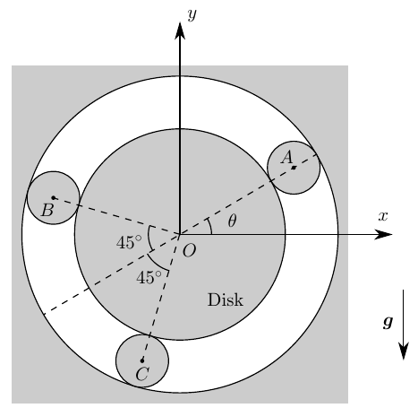
-
(a)
Discuss the number of degrees of freedom of the system and choose a set of independent parameter(s) to specify its state at any instant of time.
-
(b)
Express the linear velocity of the center of each bearing, and the angular velocity of the disk and the bearings, as a function of your chosen set of parameter(s) and its/their derivatives in a generic instant of time.
-
(c)
Write down the position of the center of mass of the system as a function of your chosen set of parameter(s) in a generic instant of time.
-
(d)
Compute the kinetic energy of each body in the system in a generic instant of time.
-
(e)
Reduce the motion of the system to quadratures (i.e.,integrals) [sic].
-
(f)
Find the equilibrium positions of the system and discuss their stability.
-
(g)
If there are any stable equilibrium positions, compute the angular frequency of the oscillations of the system about it/them, if only very small deviations from equilibrium are allowed.
Worked Solution [ Click to Expand ]
Reference Frames, Bases and Degrees of Freedom
- Physical system: four rigid bodies moving in the vertical plane $Oxy$. The disk $D$, homogeneous, of radius $d$ and mass $2m$; the three bearings $A$, $B$, $C$, homogeneous cylinders of radius $d/4$ and mass $m$ each (each body is named after its centre). The cavity is a fixed circle of radius $3d/2$ (read from the figure: the gap between the disk and the cavity is one bearing diameter, so the cavity radius is the sum of $d$ and twice $d/4$). Every contact disk-bearing and bearing-cavity rolls without slipping.
- Fixed frame: $S_0\{O; \mathcal B_0\}$ attached to the cavity, $O$ its centre, $\mathbf i$ along $Ox$ (to the right), $\mathbf j$ along $Oy$ (up), $\mathbf k$ out of the paper (⊙). Gravity is $-g\,\mathbf j$.
- Angles: $\theta$, angle of $\overrightarrow{OA}$ measured from $Ox$, counterclockwise about $\mathbf k$ (read from the arc of the figure). The two $45^\circ$ arcs of the figure are read as: $\overrightarrow{OB}$ and $\overrightarrow{OC}$ lie $45^\circ$ on either side of the prolongation of $\overrightarrow{AO}$ beyond $O$, so the polar angles of $B$ and $C$ are $\theta + 3\pi/4$ and $\theta + 5\pi/4$. Exchanging the labels $B$ and $C$ would change nothing below, since only the sum of their unit vectors enters.
- Auxiliary bases: for each bearing, the polar basis $\{\mathbf e_r(\alpha), \mathbf e_\theta(\alpha), \mathbf k\}$ attached to its centre line, with $\alpha$ the polar angle of that bearing.
- Spin angles: $\varphi_D$ for the disk and $\varphi_A$, $\varphi_B$, $\varphi_C$ for the bearings, all measured counterclockwise about $\mathbf k$, with rates $\omega_D$, $\omega_A$, $\omega_B$, $\omega_C$.
| Datum | Symbol | SI unit |
|---|---|---|
| Radius of the disk | $d$ | m |
| Mass of the disk | $2m$ | kg |
| Radius of each bearing | $d/4$ | m |
| Mass of each bearing | $m$ | kg |
| Radius of the cavity (read from the figure) | $3d/2$ | m |
| Gravity | $-g\,\mathbf j$ | m/s$^2$ |
| Initial state | $\theta_0 = 0$, everything at rest | rad, - |
Part (a): degrees of freedom
Position constraints first. The centre of a bearing touching the cavity lies at the distance from $O$ equal to the cavity radius minus the bearing radius; touching the disk, it lies at the distance from the disk centre $O'$ equal to the disk radius plus the bearing radius. The three centres are on a circle about $O$ and on a circle about $O'$ of the same radius; a circle through three points that do not lie on one line is unique, so $O'$ coincides with $O$ (the three bearings are not on one line: their polar angles differ by $3\pi/4$, $\pi/2$ and $3\pi/4$).
Units: dimensionless counts
Meaning: the whole train moves as one mechanism: the next box shows that the four rates are fixed multiples of the rate of $\theta$, and that the three bearings keep their angular spacing, so $\theta$ alone gives the configuration.
Change of Basis, Position Vectors and Constraint Kinematics
View of the plane $Oxy$ with $\mathbf k$ out of the paper (⊙): a positive $\alpha$ turns counterclockwise. $\mathbf e_r$ is $\mathbf i$ turned by $\alpha$: hypotenuse 1, adjacent leg along $\mathbf i$ (cosine of $\alpha$), opposite leg along $\mathbf j$ (sine). $\mathbf e_\theta$ is $\mathbf j$ turned by $\alpha$: adjacent leg along $\mathbf j$ (cosine); the counterclockwise turn carries the tip of $\mathbf j$ to the left, towards minus $\mathbf i$, which is the minus sign of the opposite leg (sine). For the bearing $A$ the angle is $\theta$; for $B$ and $C$ it is $\theta$ plus a constant, and its rate is the rate of $\theta$ as soon as the constant spacing of the bearings is shown in the box of part (b) below.
Units: dimensionless; $[\mathrm{T^{-1}}]$ in the derivatives
Meaning: $\mathbf e_r$ points from $O$ to the centre of the bearing and $\mathbf e_\theta$ along its direction of travel for a growing $\theta$.
Take the bearing $A$, of polar angle $\theta$, centre at the distance $5d/4$ from $O$. Its contact $Q_A$ with the cavity is at the distance $3d/2$ from $O$ (outer side, a bearing radius further along $\mathbf e_r$), and its contact $P_A$ with the disk is at the distance $d$ (inner side, a bearing radius back along $\mathbf e_r$). The cavity is at rest; the disk turns about the fixed point $O$.
Units: $[\mathrm{T^{-1}}]$; $[\mathrm L][\mathrm{T^{-1}}]$
Meaning: for a growing $\theta$ the bearing spins clockwise (negative rate) five times faster than its centre goes round, and the disk turns counterclockwise two and a half times faster than the centre of the bearing.
Repeat the previous box for $B$ with its own polar angle $\theta_B$ in place of $\theta$: the cavity contact gives a bearing rate equal to minus five times the rate of $\theta_B$, and the disk contact gives the disk rate equal to five halves of the rate of $\theta_B$. The disk is one body, so its rate is the same in both results.
Units: $[\mathrm L][\mathrm{T^{-1}}]$; $[\mathrm{T^{-1}}]$
Meaning: the three bearings travel round together like the planets of a planetary gear whose carrier would turn with the rate of $\theta$; the cavity is the fixed ring and the disk the sun. The spacing of the figure is kept for ever.
Center of Mass and Inertia Tensor
A homogeneous cylinder (or disk) of mass $M$, radius $a$ and length $\ell$ has density $\rho_m$ equal to $M/(\pi a^2\ell)$. With polar coordinates $\rho$ from 0 to $a$ and $\chi$ from 0 to $2\pi$ in the cross section, and the axial coordinate $\zeta$ from 0 to $\ell$, the element of mass is $\rho_m\,\rho\,d\rho\,d\chi\,d\zeta$ and its distance to the axis is $\rho$.
Units: $[\mathrm M][\mathrm L^2]$
Meaning: only the moment about the axis $\mathbf k$ enters a planar motion; the centre of mass of each body is its geometric centre.
The disk centre is $O$; the bearing centres are at the distance $5d/4$ along their own radial unit vectors. The two unit vectors of $B$ and $C$ make the angles $\pm\pi/4$ with the prolongation of $\overrightarrow{AO}$, that is with minus $\mathbf e_r(\theta)$; their components normal to it cancel and their components along it add (adjacent leg of each triangle: cosine of $\pi/4$).
Units: $[\mathrm L]$
Meaning: the system is unbalanced: $G$ is not at $O$ but on the line $AO$, beyond $O$ on the side opposite to $A$, at a distance of about 0.104 times $d$ (the product of 0.25 and 0.4142). This offset is what makes gravity drive the train.
Linear Momentum, Angular Momentum and Kinetic Energy
Units: $[\mathrm M][\mathrm L^2][\mathrm{T^{-2}}]$, J in every term
Meaning: the disk carries 200 of the 425 parts of the kinetic energy (47.1 %, the ratio 200/425), because it is the heaviest body and spins fastest; in each bearing two thirds of the energy is translation (50 of 75 parts) and one third spin.
Free-Body Diagram and Equations of Motion
The exploded view separates the disk from the three bearings and the bearings from the cavity. At the contact of bearing $i$ with the cavity (point $Q_i$) the cavity pushes the bearing with a normal force $N_i^c$ along minus $\mathbf e_r$ and a friction force $F_i^c$ along $\mathbf e_\theta$; at the contact with the disk (point $P_i$) the disk pushes the bearing with $N_i^d$ along $\mathbf e_r$ and $F_i^d$ along $\mathbf e_\theta$, and the bearing pushes the disk with the opposite pair (third law of Newton). The friction forces are unknowns (no slip: they are not given by Coulomb's law); the signs are those of the components, to be found.
| Load | Body | Point | Expression | Kind |
|---|---|---|---|---|
| Weight of the disk | $D$ | $O$ | $-2mg\,\mathbf j$ | applied |
| Contact of bearing $i$ on the disk | $D$ | $P_i$ | $-N_i^d\,\mathbf e_r(\theta_i) - F_i^d\,\mathbf e_\theta(\theta_i)$ | constraint (pair) |
| Weight of bearing $i$ | $i$ | $i$ | $-mg\,\mathbf j$ | applied |
| Cavity on bearing $i$ | $i$ | $Q_i$ | $-N_i^c\,\mathbf e_r(\theta_i) + F_i^c\,\mathbf e_\theta(\theta_i)$ | constraint |
| Disk on bearing $i$ | $i$ | $P_i$ | $N_i^d\,\mathbf e_r(\theta_i) + F_i^d\,\mathbf e_\theta(\theta_i)$ | constraint (pair) |
Here $\theta_i$ is $\theta$, $\theta + 3\pi/4$ or $\theta + 5\pi/4$ for $A$, $B$, $C$.
The pole of the moment equation is the centre of mass of the bearing, so the term in the velocity of the pole vanishes (the velocity of the centre crossed with the momentum, which is parallel to it). The normal forces and the weight pass through the centre. The second derivative of the velocity of the centre follows from the Poisson relations of the polar basis.
Units: N in every term
Meaning: three equations per bearing; the third is the radial component of Eq. 12.8, with the weight component along $\mathbf e_r$ equal to minus $mg$ times the sine of the polar angle. The friction forces are fixed by the tangential and moment equations; the radial equation fixes only the difference of the two normal forces.
$O$ is a fixed point of the disk and its centre of mass, so the pole term vanishes and the acceleration of the centre of mass is zero. The disk receives minus the contact pair of each bearing at the point $P_i$, at the distance $d$ along $\mathbf e_r(\theta_i)$.
Units: N in every term
Meaning: three equations of the disk. With the nine of the bearings: twelve equations for thirteen unknowns (the second rate of $\theta$, six friction forces, six normal forces). One unknown stays free, as shown in the next box.
Sum the boxed tangential equations of the three bearings and their moment equations; the sum of the cosines uses the same two adjacent legs as the centre of mass box.
Units: $[\mathrm{L\,T^{-2}}]/[\mathrm L] = [\mathrm{T^{-2}}]$
Meaning: with the second rate known, the tangential and moment equations of each bearing give its two friction forces, and the disk moment equation is then satisfied. The normal forces enter only the three radial equations and the two force equations of the disk: five equations for six normal forces, so one of them (a preload with which the bearings are squeezed between disk and cavity, shared among the three bearings in the ratio root two to one to one) stays free. This matches the count of part (a), where one of the six no-penetration conditions repeated the others.
Write $\kappa$ for the positive constant $8(\sqrt2 - 1)/85$. The initial values are zero for $\theta$ and for its rate.
Units: J in the first equation; $\sqrt{[\mathrm L]/[\mathrm{L\,T^{-2}}]} = [\mathrm T]$ in the second
Meaning: the first equation is the kinetic energy of part (d) equal to the drop of potential energy of $G$; at the start the rate is zero and the second rate is positive (cosine of zero is 1), so $\theta$ grows. The rate vanishes again where the sine vanishes, at $\theta$ equal to $\pi$: the train swings between 0 and $\pi$. The integrand behaves as the inverse square root of $\theta$ near 0, which is integrable, so the time to leave the start is finite.
Equilibrium and small oscillations
At rest the equation of motion requires the right-hand side to vanish. Write a position near an equilibrium $\theta_e$ as $\theta_e$ plus a small $\delta$ and expand the cosine to first order.
Units: rad; $[\mathrm{T^{-2}}]$ in the linearized coefficient; J in $V$
Meaning: at $\theta$ equal to $\pi/2$ the sine is 1 and the linearized equation is a harmonic oscillator (restoring term); at minus $\pi/2$ the sine is minus 1 and the deviation grows exponentially. Equivalently, $G$ (opposite to $A$) is at its lowest point when $A$ is at the top, where the potential has its minimum, and at its highest when $A$ is at the bottom.
Units: $\sqrt{[\mathrm{L\,T^{-2}}]/[\mathrm L]} = [\mathrm{T^{-1}}]$, rad/s
Meaning: the number is the square root of 8 times 0.41421 over 85 (0.038984), that is 0.1974. The train oscillates slowly because the restoring moment comes from a small offset of $G$ while the inertia is that of the whole train with its fast spins.
Answers and Checks
| Asked | Answer |
|---|---|
| (a) Degrees of freedom | One; coordinate $\theta$ (the disk centre stays at $O$, and six rolling contacts tie the four rates to $\dot\theta$) |
| (b) Velocities and angular velocities | $\mathbf v_0^A = \tfrac{5d}{4}\dot\theta\,\mathbf e_\theta(\theta)$, $\mathbf v_0^B = \tfrac{5d}{4}\dot\theta\,\mathbf e_\theta(\theta + 3\pi/4)$, $\mathbf v_0^C = \tfrac{5d}{4}\dot\theta\,\mathbf e_\theta(\theta + 5\pi/4)$ with $\mathbf e_\theta(\alpha) = -\sin\alpha\,\mathbf i + \cos\alpha\,\mathbf j$; $\boldsymbol\omega_{D0} = \tfrac52\dot\theta\,\mathbf k$; $\boldsymbol\omega_{A0} = \boldsymbol\omega_{B0} = \boldsymbol\omega_{C0} = -5\dot\theta\,\mathbf k$ |
| (c) Centre of mass | $\mathbf r_0^G = -\tfrac{(\sqrt2 - 1)d}{4}(\cos\theta\,\mathbf i + \sin\theta\,\mathbf j)$ |
| (d) Kinetic energies | $T^D = \tfrac{25}{8}md^2\dot\theta^2$; $T^A = T^B = T^C = \tfrac{75}{64}md^2\dot\theta^2$; total $\tfrac{425}{64}md^2\dot\theta^2$ |
| (e) Quadratures | $\tfrac{425}{64}md^2\dot\theta^2 - \tfrac{5(\sqrt2 - 1)}{4}mgd\sin\theta = 0$; $t = \sqrt{\tfrac{85d}{16(\sqrt2 - 1)g}}\int_0^\theta d\theta'/\sqrt{\sin\theta'}$ |
| (f) Equilibria | $\theta = \pi/2$ stable; $\theta = -\pi/2$ unstable |
| (g) Small oscillations about $\theta = \pi/2$ | $\omega_0 = \sqrt{8(\sqrt2 - 1)g/(85d)} \approx 0.197\sqrt{g/d}$ |
Second route to the first boxed equation of part (e), without the twelve equations. At a cavity contact the force acts on a bearing point of zero velocity; at a disk contact the pair acts on two body points with the same velocity, so the powers on the bearing and on the disk cancel.
Units: J in every term
Meaning: the same integral as part (e), written with the constant on the right as in the key; the rolling contacts do no work, so the energy of the train is the kinetic energy of part (d) plus the potential of its unbalanced centre of mass.
Check against the official key: the key (Problems.pdf, pp. 80-81) prints the energy equation with the coefficient 425/64 for the kinetic energy and the potential term five times $mg$ times the factor of the square root of 2 minus 1 over 4 times $d$ times one minus the sine of $\theta$, equal to the same constant; the two equilibria at plus and minus $\pi/2$, the first one stable; and the angular frequency equal to the square root of $8g/(85d)$ times the square root of 2 minus 1. The boxes of parts (d), (e), (f) and (g) and the check box give the same expressions: match. The key prints no expressions for parts (a) to (c).
Limiting cases and consistency:
- Balanced train. If the three bearings were at $120^\circ$ from each other the sum of their unit vectors would vanish, $G$ would sit at $O$ and every position would be an equilibrium; the coefficient of the square root of 2 minus 1 comes only from the spacing of the figure.
- Carrier at rest. If the bearing centres were held still (rate of $\theta$ zero), the two no-slip conditions of part (b) would give a zero spin of every bearing and a zero rate of the disk: with the ring fixed, a planetary train cannot turn its sun without moving its planets.
- Equilibrium position. At $\theta$ equal to $\pi/2$ the bearing $A$ is at the top and $B$, $C$ are symmetric below, at $45^\circ$ on either side of the downward vertical: the configuration is symmetric about $Oy$, as an equilibrium of a symmetric heavy system should be.
- Dimensions. Every term of the equation of motion is an angular acceleration, every term of the energy equation an energy and the frequency is in rad/s.
Interactive geometry simulator: it needs JavaScript. The figures above show the same geometry.
A heavy homogeneous rectangular block of mass $2m$ has height $L$ and width $2L$. The middle point $A$ of one of the short edges of the block is connected to a fixed point $B$, located at a distance $2L$ to the right of $O$, with a spring of stiffness $k$ and zero length in the absence of forces. The center $G$ of the block is connected to a point weight $P$ of mass $m$ with a string of constant length $6L$ and negligible mass. The string passes by two frictionless pulleys of negligible radius at $O$ and $C$ and is always tense. The distance between the two pulleys is $2L$. The weight $P$ is constrained to move along the vertical that passes by $C$. We define the right-handed inertial reference frame $Oxyz$ and the right-handed body-fixed reference frame $Gx_By_Bz_B$ attached to the block as shown in the figure. The block moves only in the $Oxy$ plane. The length $\xi$ and the angles $\theta$, $\phi$ are also defined there.
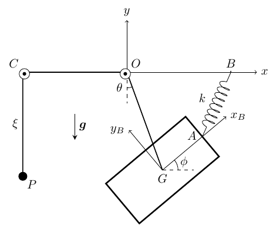
Answer the following questions in a reasoned way:
-
(a)
How many degrees of freedom does the system have?. [sic]
-
(b)
Express the position, velocity and acceleration of $G$ and the angular velocity and angular acceleration of the block with respect to $Oxy$, as a function of $\xi$, $\theta$, $\phi$ and their derivatives.
-
(c)
Write down the expression of all forces acting on the weight $P$ and the block.
-
(d)
Write down three second order differential equations for the evolution of $\xi$, $\theta$, $\phi$ with time. Note that you do not need to solve them.
-
(e)
Can you apply the law of conservation of mechanical energy to this problem? if so [sic], write down the corresponding equation.
Worked Solution [ Click to Expand ]
Reference Frames, Bases and Degrees of Freedom
- Physical system: a homogeneous rectangular block of mass $2m$, width $2L$ (along $x_B$) and height $L$ (along $y_B$), moving in the vertical plane $Oxy$; a point weight $P$ of mass $m$ that slides on the vertical through $C$ (read as a frictionless guide); a massless inextensible string of length $6L$ from $G$ over the pulleys $O$ and $C$ to $P$, always tense; a spring of stiffness $k$ and zero natural length from the midpoint $A$ of the right short edge to the fixed point $B$.
- Fixed frame: $S_0\{O; \mathcal B_0\}$, $\mathbf i$ along $Ox$ (to the right, towards $B$), $\mathbf j$ along $Oy$ (up), $\mathbf k$ out of the paper (⊙, the axes of the pulleys). Gravity is $-g\,\mathbf j$. The fixed points are $B$ at $2L\,\mathbf i$ and $C$ at minus $2L\,\mathbf i$.
- String frame: $S_1\{O; \mathcal B_1\}$, with $\mathbf i_1$ along $\overrightarrow{OG}$, $\mathbf k_1$ equal to $\mathbf k$ and $\mathbf j_1$ completing the right-handed basis (the choice of the key).
- Block frame: $S_B\{G; \mathcal B_B\}$, $\mathbf i_B$ along $Gx_B$ (from $G$ towards $A$), $\mathbf j_B$ along $Gy_B$, $\mathbf k_B$ equal to $\mathbf k$.
- Coordinates (read from the figure): $\xi$, depth of $P$ below $C$; $\theta$, angle of $\overrightarrow{OG}$ from the downward vertical, positive when $G$ is to the right of the vertical through $O$ (counterclockwise about $\mathbf k$, from minus $\mathbf j$ towards $\mathbf i$); $\varphi$, angle of $\mathbf i_B$ from the horizontal $\mathbf i$, counterclockwise. The figure marks only the angles and their arcs; the opposite reading of the sense of $\theta$ would change the sign of every term odd in $\theta$ (the sines of $\theta$), not the method.
| Datum | Symbol | SI unit |
|---|---|---|
| Mass of the block | $2m$ | kg |
| Width and height of the block | $2L$, $L$ | m |
| Mass of the weight $P$ | $m$ | kg |
| Length of the string | $6L$ | m |
| Distance between the pulleys $O$ and $C$ | $2L$ | m |
| Spring | stiffness $k$, natural length zero, from $A$ to $B$ | N/m |
| Position of $B$ and of $C$ | $2L\,\mathbf i$, $-2L\,\mathbf i$ | m |
| Gravity | $-g\,\mathbf j$ | m/s$^2$ |
Part (a): degrees of freedom
Units: dimensionless counts
Meaning: the depth of the weight fixes how much string is left between $O$ and $G$, the angle of the string fixes the direction of $G$, and the block can still turn freely about $G$ because the string is tied at $G$ itself.
Change of Basis, Position Vectors and Constraint Kinematics
View of the plane $Oxy$ with $\mathbf k$ out of the paper (⊙). The polar angle of $\mathbf i_1$ measured from $\mathbf i$ counterclockwise is $\theta - \pi/2$, because $\theta$ is measured from minus $\mathbf j$, which is itself $\mathbf i$ turned by minus $\pi/2$. Right triangle of $\mathbf i_1$ (hypotenuse 1): the leg along the vertical is adjacent to $\theta$ (cosine) and points down, towards minus $\mathbf j$; the horizontal leg is opposite to $\theta$ (sine) and points along $\mathbf i$. $\mathbf j_1$ is $\mathbf i_1$ turned counterclockwise by $\pi/2$ (the cross product of $\mathbf k$ and $\mathbf i_1$).
Units: dimensionless; $[\mathrm{T^{-1}}]$ in the derivatives
Meaning: with $\theta$ zero the string hangs straight down from $O$ and $\mathbf j_1$ is horizontal, pointing towards $B$; the derivative of $\mathbf i_1$ is the direction in which $G$ swings for a growing $\theta$.
View of the plane $Oxy$ with $\mathbf k$ out of the paper (⊙): a positive $\varphi$ turns counterclockwise. $\mathbf i_B$: adjacent leg along $\mathbf i$ (cosine of $\varphi$), opposite leg along $\mathbf j$ (sine). $\mathbf j_B$: adjacent leg along $\mathbf j$ (cosine); the counterclockwise turn carries the tip of $\mathbf j$ to the left, towards minus $\mathbf i$, which is the minus sign.
Units: dimensionless; $[\mathrm{T^{-1}}]$; $[\mathrm{T^{-2}}]$
Meaning: the block turns about the fixed direction $\mathbf k$ only, so its angular acceleration is the second rate of $\varphi$ along $\mathbf k$, with no term from a turning axis.
The string runs straight from $G$ to $O$, from $O$ to $C$ along the axis $Ox$ and down from $C$ to $P$; the pulleys have negligible radius, so the three straight pieces add up to the whole length. $A$ is the midpoint of the short edge on the side of $\mathbf i_B$, at half the width from $G$.
Units: $[\mathrm L]$
Meaning: when the weight goes down (growing $\xi$) the string piece $OG$ shortens by the same length and the block rises towards $O$.
Units: $[\mathrm L][\mathrm{T^{-1}}]$; $[\mathrm L][\mathrm{T^{-2}}]$ in every term
Meaning: along the string the acceleration of $G$ has the reeling term and the centripetal term (towards $O$); across it, the angular acceleration term and the Coriolis-like term of the reeling and swinging motions together.
Center of Mass and Inertia Tensor
The block is homogeneous, of thickness $e$ along $\mathbf k$, so its density is $2m/(2L\cdot L\cdot e)$, written $\rho_m$. Body coordinates $x$ from minus $L$ to $L$ along $\mathbf i_B$, $y$ from minus $L/2$ to $L/2$ along $\mathbf j_B$, $z$ from minus $e/2$ to $e/2$; the element of mass is $\rho_m\,dx\,dy\,dz$. The centre of mass is the geometric centre $G$, because every first moment is the integral of an odd function over a symmetric interval.
Units: $[\mathrm M][\mathrm L^2]$
Meaning: the axis $Gz_B$ is a principal axis, so the angular momentum of the planar motion is along $\mathbf k$; the thickness does not enter. The value is the one printed in the key.
Linear Momentum, Angular Momentum and Kinetic Energy
Units: kg m$^2$/s; J in every term
Meaning: the reeling rate enters the energy with the mass of the block and of the weight together (the factor 3/2 is the half of $3m$), since both move with the speed of the string.
Free-Body Diagram and Equations of Motion
The exploded view separates the block, the weight $P$, the string and the two pulleys. The string is massless and pulls each end along itself; the pulleys are massless and frictionless, so the tension $T$ is the same on both sides of each of them (box below). The guide on the vertical through $C$ is frictionless and pushes $P$ horizontally. The block moves in the plane $Oxy$ by hypothesis of the statement, and every load below lies in that plane.
Take the pulley at $O$, of radius $r$ that later tends to zero, with tensions $T_1$ and $T_2$ on its two sides. The axle is frictionless (no torque about $\mathbf k$) and the pulley has no mass, so its angular momentum is zero.
Units: N
Meaning: one unknown tension for the whole string; the axle reactions act on the pulleys only and never on the block or on $P$.
| Load | Body | Point | Expression | Kind |
|---|---|---|---|---|
| Weight of $P$ | $P$ | $P$ | $-mg\,\mathbf j$ | applied |
| String on $P$ | $P$ | $P$ | $T\,\mathbf j$ (towards $C$) | constraint |
| Guide on $P$ | $P$ | $P$ | $N_P\,\mathbf i$ | constraint |
| Weight of the block | block | $G$ | $-2mg\,\mathbf j = 2mg\left(\cos\theta\,\mathbf i_1 - \sin\theta\,\mathbf j_1\right)$ | applied |
| String on the block | block | $G$ | $-T\,\mathbf i_1$ (towards $O$) | constraint |
| Spring on the block | block | $A$ | $\mathbf F_s = -k\left(\mathbf r_0^A - \mathbf r_0^B\right)$ | applied |
Write $\mathbf d$ for the vector from $B$ to $A$. The weight in $\mathcal B_1$ uses the inverse of the string basis: minus $\mathbf j$ dotted with $\mathbf i_1$ is the cosine of $\theta$, dotted with $\mathbf j_1$ minus the sine.
Units: N; N m
Meaning: the spring pulls $A$ straight towards $B$ with a force proportional to their distance. Its moment about $G$ is the only moment on the block: the weight and the string act at $G$ itself.
The pole of the moment equation is $G$, the centre of mass, so the term in the velocity of the pole vanishes (velocity of $G$ crossed with a momentum parallel to it); the basis direction $\mathbf k$ is fixed, so the angular momentum is differentiated component by component.
Units: N in the force equations; N m in the moment equation
Meaning: five scalar equations for five unknowns: the three second rates, the tension and the guide force. The guide force vanishes because $P$ has no horizontal acceleration and no other horizontal load.
Units: N in the first two equations; N m in the third
Meaning: the three equations are coupled through the spring, which ties the rotation of the block to the swing and to the length of the string. The string stays tense, as assumed, while the tension, $m$ times the difference of $g$ and the second rate of $\xi$, is positive, that is while the weight falls with an acceleration smaller than $g$.
The tension acts on the block at $G$ and on $P$; the guide force is normal to the velocity of $P$; the pulley reactions act on fixed axles. The weights and the spring are conservative.
Units: J in every term
Meaning: yes, the mechanical energy is conserved: the tension does positive work on one end of the string and the same negative work on the other, the guide and the pulley axles do no work, and the remaining forces derive from a potential. The constant is the value of the left side at the initial instant.
Answers and Checks
| Asked | Answer |
|---|---|
| (a) Degrees of freedom | Three: $\xi$, $\theta$, $\varphi$ |
| (b) Kinematics of $G$ and of the block | $\mathbf r_0^G = (4L - \xi)\,\mathbf i_1$; $\mathbf v_0^G = -\dot\xi\,\mathbf i_1 + (4L - \xi)\dot\theta\,\mathbf j_1$; $\mathbf a_0^G = -[\ddot\xi + (4L - \xi)\dot\theta^2]\,\mathbf i_1 + [(4L - \xi)\ddot\theta - 2\dot\xi\dot\theta]\,\mathbf j_1$, with $\mathbf i_1 = \sin\theta\,\mathbf i - \cos\theta\,\mathbf j$, $\mathbf j_1 = \cos\theta\,\mathbf i + \sin\theta\,\mathbf j$; $\boldsymbol\omega_{B0} = \dot\varphi\,\mathbf k$, $\boldsymbol\alpha_{B0} = \ddot\varphi\,\mathbf k$ |
| (c) Forces | On $P$: $-mg\,\mathbf j$, $T\,\mathbf j$, $N_P\,\mathbf i$ (zero). On the block: $-2mg\,\mathbf j$ and $-T\,\mathbf i_1$ at $G$; $\mathbf F_s = -k[4L - \xi - L\sin(\varphi - \theta) - 2L\sin\theta]\,\mathbf i_1 - k[L\cos(\varphi - \theta) - 2L\cos\theta]\,\mathbf j_1$ at $A$ |
| (d) Equations of motion | $3m\ddot\xi = -2m(4L - \xi)\dot\theta^2 - mg(2\cos\theta - 1) + k[4L - \xi - L\sin(\varphi - \theta) - 2L\sin\theta]$; $2m[(4L - \xi)\ddot\theta - 2\dot\xi\dot\theta] = -2mg\sin\theta - kL[\cos(\varphi - \theta) - 2\cos\theta]$; $\tfrac{5mL^2}{6}\ddot\varphi = kL[(4L - \xi)\cos(\varphi - \theta) - 2L\sin\varphi]$ |
| (e) Energy | Conserved: $\tfrac32 m\dot\xi^2 + m(4L - \xi)^2\dot\theta^2 + \tfrac{5mL^2}{12}\dot\varphi^2 - 2mg(4L - \xi)\cos\theta - mg\xi + \tfrac k2\lvert\overrightarrow{BA}\rvert^2 = E_0$ |
Check against the official key: the key (Problems.pdf, p. 81) uses the same basis ($\mathbf i_1$ along $OG$, $\mathbf j_1$ by the right-hand rule) and prints Newton's second law of the block along $\mathbf i_1$ with the tension, along $\mathbf j_1$, the equation of $P$ that gives the tension, and the moment equation about $G$ with the moment of inertia $5mL^2/6$. Each printed equation coincides term by term with the boxed equations of the block and of $P$ in the Free-Body Diagram section (the equation along $\mathbf i_1$ is printed before the tension is eliminated; part (d) eliminates it): match. The key prints no expression for the energy of part (e).
Limiting cases and consistency:
- No spring. With $k$ zero the third equation gives a constant spin of the block, and with the string vertical and at rest the first equation gives a second rate of $\xi$ of minus $g/3$: the weight rises and the block descends with the acceleration of an Atwood machine with masses $2m$ and $m$, the difference of the weights over the sum of the masses.
- Tension in that case. Then the tension is $m$ times the sum of $g$ and $g/3$, four thirds of $mg$: between the weight of $P$ and the weight of the block, as it must be for $P$ to accelerate upwards and the block downwards.
- Spring force at the reference position. With the string vertical, $\varphi$ zero and $\xi$ equal to $2L$, $A$ lies at $L\,\mathbf i - 2L\,\mathbf j$ and $B$ at $2L\,\mathbf i$; the bracket of the $\mathbf j_1$ component is $L$ minus $2L$, so the spring pulls $A$, and with it the block, towards plus $\mathbf j_1$, which is $\mathbf i$ at that instant: towards $B$, as expected from its position.
- Dimensions. $k$ times a length is a force like $mg$; $kL$ times a length is a moment like $mL^2$ times an angular acceleration; every term of the energy is in joules.
Interactive geometry simulator: it needs JavaScript. The figures above show the same geometry.
A homogeneous disk $D$ of radius $R$ and mass $m$ can rotate freely about its center $O$, which is fixed to the wall. We define the inertial reference frame $S_0$ as shown in the figure. A homogeneous, heavy bar $B$ of mass $2m$ and length $L$ has a longitudinal groove that allows it to slide without friction over a small knob $K$ fixed to the wall and located at a height $h$ above $O$. One of the end points of the bar is connected to perimeter [sic] of the disk at point $C$ as shown. This connection allows the bar to rotate freely about $C$ with respect to the disk. The other end point $A$ of the bar is attracted to the $Oy$ axis by a force $\mathbf F_A$ that is proportional to its distance to $Oy$. The proportionality constant of this force is $k$.
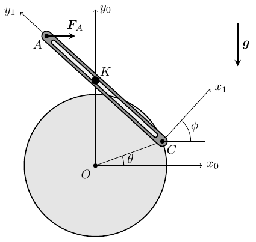
-
(a)
How many degrees of freedom does this planar problem have? Justify your answer.
-
(b)
Find the geometric relation between $\theta$ and $\phi$. Compute $\dot\phi$ and $\ddot\phi$.
-
(c)
Express the general position, velocity, and acceleration of point $A$ and the center of mass of the bar $G$ as a function of $\theta$, $\phi$ and their time derivatives.
-
(d)
Write down the general expression of all forces acting on the bar and on the disk, be they applied or otherwise.
-
(e)
Compute the general expression of the kinetic energy of the bar and the kinetic energy of the disk.
-
(f)
If $\theta_0 = 0$, $\dot\theta_0 = 0$ initially, obtain one equation on $\theta$, $\phi$, $\dot\theta$, $\dot\phi$ to describe the motion of the system that does not depend on any additional unknowns.
Worked Solution [ Click to Expand ]
Reference Frames, Bases and Degrees of Freedom
- Physical system: two rigid bodies in the vertical plane of the wall. The disk $D$, homogeneous, of radius $R$ and mass $m$, turns about its centre $O$, fixed to the wall (an ideal pin). The bar $B$, homogeneous and slender, of length $L$ and mass $2m$, with centre of mass $G$ at its midpoint, is pinned to the rim of the disk at its end $C$ (ideal pin) and slides without friction, through its groove, over the knob $K$ fixed at the height $h$ above $O$. Its other end $A$ is pulled towards the axis $Oy_0$ by the force $\mathbf F_A$, horizontal and proportional to the distance of $A$ to that axis, with constant $k$.
- Fixed frame: $S_0\{O; \mathcal B_0\}$, $\mathbf i_0$ along $Ox_0$ (to the right), $\mathbf j_0$ along $Oy_0$ (up), $\mathbf k_0$ out of the paper (⊙). Gravity is $-g\,\mathbf j_0$; the knob is at $h\,\mathbf j_0$.
- Disk basis: $\mathcal B_2\{\mathbf i_2, \mathbf j_2, \mathbf k_0\}$, attached to the disk, with $\mathbf i_2$ along $\overrightarrow{OC}$.
- Bar frame: $S_1\{C; \mathcal B_1\}$, attached to the bar, with $\mathbf j_1$ along the bar from $C$ towards $A$ (axis $y_1$ of the figure) and $\mathbf i_1$ normal to it (axis $x_1$).
- Angles (read from the figure): $\theta$, from $\mathbf i_0$ to $\overrightarrow{OC}$, counterclockwise about $\mathbf k_0$; $\varphi$, from $\mathbf i_0$ (the horizontal through $C$) to $\mathbf i_1$, counterclockwise. Both arcs of the figure are drawn counterclockwise; the opposite reading of either sense would change the sign of that angle in every formula, not the method.
- Hypotheses: the knob stays inside the groove, between $C$ and $A$ (its distance $s$ to $C$ is between 0 and $L$), and it is above the disk at every configuration used, with $h$ larger than $R$ (read from the figure), so that the height of $K$ above $C$ is positive.
| Datum | Symbol | SI unit |
|---|---|---|
| Radius and mass of the disk | $R$, $m$ | m, kg |
| Length and mass of the bar | $L$, $2m$ | m, kg |
| Height of the knob above $O$ | $h$ | m |
| Constant of the force on $A$ | $k$ | N/m |
| Force on $A$ | $\mathbf F_A = -k\,x_0^A\,\mathbf i_0$ | N |
| Distance from $C$ to $K$ along the bar | $s$ | m |
| Gravity | $-g\,\mathbf j_0$ | m/s$^2$ |
Part (a): degrees of freedom
Units: dimensionless counts
Meaning: the angle of the disk fixes $C$, and the bar must then point from $C$ through $K$: its direction is fixed too. The bar can still slide along the groove only as far as $C$ moves, so nothing is left free.
Change of Basis, Position Vectors and Constraint Kinematics
View of the wall with $\mathbf k_0$ out of the paper (⊙): positive angles turn counterclockwise. For an angle $\alpha$ ($\theta$ for the disk, $\varphi$ for the bar) the first rotated vector has its adjacent leg along $\mathbf i_0$ (cosine) and its opposite leg along $\mathbf j_0$ (sine); the second one has its adjacent leg along $\mathbf j_0$ (cosine) and the counterclockwise turn carries the tip of $\mathbf j_0$ towards minus $\mathbf i_0$, which is the minus sign of the opposite leg (sine). For the bar, $\mathbf j_1$ is the direction from $C$ to $A$, up and to the left in the figure, which is that second vector.
Units: dimensionless; $[\mathrm{T^{-1}}]$
Meaning: both bodies turn about the fixed direction $\mathbf k_0$; the bar points along $\mathbf j_1$ and the knob pushes it along $\mathbf i_1$.
The vector from $C$ to $K$ lies along the bar, so it has no component along $\mathbf i_1$, and its component along $\mathbf j_1$ is the distance $s$. Right triangle $C$-$K$ with the vertical through $K$: horizontal leg $R\cos\theta$ (from the axis $Oy_0$ to $C$), vertical leg $h - R\sin\theta$ (from the height of $C$ up to $K$), hypotenuse $s$. The bar makes the angle $\varphi$ with the vertical (since $\mathbf j_1$ is $\mathbf j_0$ turned by $\varphi$), so the horizontal leg is opposite to $\varphi$ (sine) and the vertical leg adjacent (cosine).
Units: dimensionless; $[\mathrm L]$
Meaning: with $\theta$ zero ($C$ on the right of $O$) the tangent of $\varphi$ is the ratio of $R$ to $h$; with $\theta$ equal to $\pi/2$ ($C$ right below $K$) the bar is vertical and $\varphi$ is zero.
Write $f(\theta, \varphi)$ for the left side of the condition of the previous box with its sign changed, $R\cos\theta\cos\varphi - (h - R\sin\theta)\sin\varphi$, which is zero at every instant; its time derivative is zero too. Write $N$ for the difference $R - h\sin\theta$.
Units: $[\mathrm L^2]/[\mathrm L^2]$ times $[\mathrm{T^{-1}}]$ and $[\mathrm{T^{-2}}]$; $[\mathrm L^4]/[\mathrm L^4]$ times $[\mathrm{T^{-2}}]$
Meaning: the bar stops turning when the sine of $\theta$ is $R/h$: then the vector from $O$ to $C$ is normal to the bar (its dot product with the vector from $C$ to $K$ is $R$ times the difference of $h\sin\theta$ and $R$, zero), so the bar is tangent to the disk and $C$ moves along the bar itself.
$C$ belongs to both bodies; the disk gives its motion and the bar field carries it to $G$ (at half the length along $\mathbf j_1$) and to $A$ (at the full length). Write $\lambda$ for that distance, $L/2$ or $L$.
Units: $[\mathrm L]$; $[\mathrm L][\mathrm{T^{-1}}]$; $[\mathrm L][\mathrm{T^{-2}}]$ in every term
Meaning: each point of the bar moves with $C$ on the circle of the rim plus a rotation about $C$; the bases $\mathcal B_2$ and $\mathcal B_1$ are those of the box of the rotations, and the rates of $\varphi$ are those of part (b).
Center of Mass and Inertia Tensor
Disk: surface density $m/(\pi R^2)$, element $\sigma\rho\,d\rho\,d\chi$, distance $\rho$ to the axis through $O$ normal to the wall. Bar: linear density $2m/L$, coordinate $u$ from minus $L/2$ to $L/2$ measured from $G$ along the bar, distance $|u|$ to the axis through $G$ normal to the wall. Both centres of mass are the geometric centres, since the first moments are integrals of odd functions over symmetric ranges.
Units: $[\mathrm M][\mathrm L^2]$
Meaning: only the moments about the normal to the wall enter the planar motion; both axes are principal by the symmetry of each body.
Linear Momentum, Angular Momentum and Kinetic Energy
The dot product of $\mathbf j_2$ and $\mathbf i_1$ is minus the sine of $\theta$ times the cosine of $\varphi$ plus the cosine of $\theta$ times the sine of $\varphi$, that is the sine of the difference of $\varphi$ and $\theta$.
Units: $[\mathrm M][\mathrm L^2][\mathrm{T^{-2}}]$, J in every term
Meaning: the cross term couples the two rotations. It vanishes when $\varphi$ equals $\theta$, that is when the bar is tangent to the disk at $C$: the velocity of $C$ is then along the bar and the rotation part of the velocity of $G$ normal to it.
Free-Body Diagram and Equations of Motion
The exploded view separates the disk and the bar at the pin $C$. The pin acts on the bar with the force $\mathbf R_C$, of components $X$ and $Y$ in $\mathcal B_0$, and on the disk with minus $\mathbf R_C$ (third law of Newton); being ideal, it transmits no torque. The pin $O$ acts on the disk with $\mathbf R_O$. The knob is frictionless: it can only push the bar normally to the groove, along $\mathbf i_1$, with the unknown $N_K$, and it acts at the bar point that coincides with $K$, at the distance $s$ from $C$. The problem is planar: the out-of-plane supports of the wall are not needed and every load below lies in the plane.
| Load | Body | Point | Expression in $\mathcal B_0$ | Kind |
|---|---|---|---|---|
| Weight of the disk | $D$ | $O$ | $-mg\,\mathbf j_0$ | applied |
| Pin $O$ on the disk | $D$ | $O$ | $\mathbf R_O = R_{Ox}\,\mathbf i_0 + R_{Oy}\,\mathbf j_0$ | constraint |
| Bar on the disk | $D$ | $C$ | $-\mathbf R_C = -X\,\mathbf i_0 - Y\,\mathbf j_0$ | constraint (pair) |
| Disk on the bar | $B$ | $C$ | $\mathbf R_C = X\,\mathbf i_0 + Y\,\mathbf j_0$ | constraint (pair) |
| Weight of the bar | $B$ | $G$ | $-2mg\,\mathbf j_0$ | applied |
| Knob on the bar | $B$ | $K$ | $N_K\,\mathbf i_1 = N_K(\cos\varphi\,\mathbf i_0 + \sin\varphi\,\mathbf j_0)$ | constraint |
| Force on $A$ | $B$ | $A$ | $\mathbf F_A = -k\,x_0^A\,\mathbf i_0 = -k\left(R\cos\theta - L\sin\varphi\right)\mathbf i_0$ | applied |
The arms from $G$ along the bar are minus $L/2$ to $C$, the difference of $s$ and $L/2$ to $K$, and $L/2$ to $A$, all along $\mathbf j_1$; the arm from $O$ to $C$ is $R\,\mathbf i_2$. The weights act at $G$ and at $O$ and have no moment about those points.
Units: N m in every term
Meaning: the components along $\mathbf k_0$ of the moments that enter the two moment equations below. When $A$ is on the left of the axis (negative abscissa) and the cosine of $\varphi$ is positive, the moment of the pull on $A$ is negative, a clockwise turn: the force then points towards plus $\mathbf i_0$ and acts above $G$, so it tips the upper end of the bar back towards the axis.
For the bar the pole is its centre of mass $G$, so the term in the velocity of the pole vanishes; for the disk the pole $O$ is fixed and is also its centre of mass, so its acceleration and the pole term are zero. Both angular momenta lie along the fixed $\mathbf k_0$.
Units: N in the force equations; N m in the moment equations
Meaning: six scalar equations for six unknowns: the second rate of $\theta$ (those of $\varphi$ and the acceleration of $G$ follow from it by parts (b) and (c)), the two components of $\mathbf R_C$, the knob force and the two components of $\mathbf R_O$. Part (f) avoids solving them by an energy argument.
The bar point at $K$ (call it $K(B)$) is at the distance $s$ from $C$ along $\mathbf j_1$; its velocity follows from the bar field. The first derivative of the geometric relation (part (b)) is used in the last step.
Units: W in the powers; J in $V$
Meaning: the knob does no work although the bar slides over it, because the bar point at $K$ moves along the groove and the knob force is normal to it; the rest of the reactions act at points with no relative motion.
Initial values: $\theta_0$ is zero and the rate of $\theta$ is zero. The first derivative of part (b) gives the initial rate of $\varphi$; the relation of part (b) with $\theta$ zero gives $\varphi_0$, with the hypotenuse $s_0$ equal to the square root of the sum of the squares of $R$ and $h$.
Units: J in every term
Meaning: one equation in $\theta$, $\varphi$ and their rates, with no reaction in it; with the relation of part (b) and its first derivative it becomes a first order equation in $\theta$ alone, which can be separated and integrated.
Answers and Checks
| Asked | Answer |
|---|---|
| (a) Degrees of freedom | One ($\theta$): six planar coordinates minus two pins (two equations each) minus the knob (one) |
| (b) Relation and rates | $\tan\varphi = R\cos\theta/(h - R\sin\theta)$; $\dot\varphi = \dfrac{R(R - h\sin\theta)}{R^2 + h^2 - 2Rh\sin\theta}\dot\theta$; $\ddot\varphi = \dfrac{R(R - h\sin\theta)}{R^2 + h^2 - 2Rh\sin\theta}\ddot\theta + \dfrac{Rh(R^2 - h^2)\cos\theta}{(R^2 + h^2 - 2Rh\sin\theta)^2}\dot\theta^2$ |
| (c) Kinematics of $A$ and $G$ | $\mathbf r_0^A = (R\cos\theta - L\sin\varphi)\,\mathbf i_0 + (R\sin\theta + L\cos\varphi)\,\mathbf j_0$; $\mathbf v_0^A = R\dot\theta\,\mathbf j_2 - L\dot\varphi\,\mathbf i_1$; $\mathbf a_0^A = R\ddot\theta\,\mathbf j_2 - R\dot\theta^2\,\mathbf i_2 - L\ddot\varphi\,\mathbf i_1 - L\dot\varphi^2\,\mathbf j_1$; the same for $G$ with $L/2$ in place of $L$; $\mathbf i_2 = \cos\theta\,\mathbf i_0 + \sin\theta\,\mathbf j_0$, $\mathbf j_2 = -\sin\theta\,\mathbf i_0 + \cos\theta\,\mathbf j_0$, $\mathbf i_1 = \cos\varphi\,\mathbf i_0 + \sin\varphi\,\mathbf j_0$, $\mathbf j_1 = -\sin\varphi\,\mathbf i_0 + \cos\varphi\,\mathbf j_0$ |
| (d) Forces | Disk: $-mg\,\mathbf j_0$ and $\mathbf R_O$ at $O$, $-\mathbf R_C$ at $C$. Bar: $\mathbf R_C$ at $C$, $-2mg\,\mathbf j_0$ at $G$, $N_K\,\mathbf i_1$ at $K$, $\mathbf F_A = -k(R\cos\theta - L\sin\varphi)\,\mathbf i_0$ at $A$; six equations of the bar and the disk in the boxes above |
| (e) Kinetic energies | $T^D = \tfrac{mR^2}{4}\dot\theta^2$; $T^B = mR^2\dot\theta^2 + \tfrac{mL^2}{3}\dot\varphi^2 - mRL\dot\theta\dot\varphi\sin(\varphi - \theta)$ |
| (f) Equation free of unknowns | $\tfrac54 mR^2\dot\theta^2 + \tfrac{mL^2}{3}\dot\varphi^2 - mRL\dot\theta\dot\varphi\sin(\varphi - \theta) + 2mgR\sin\theta + mgL\cos\varphi + \tfrac k2(R\cos\theta - L\sin\varphi)^2 = \tfrac{mgLh}{\sqrt{R^2 + h^2}} + \tfrac{kR^2}{2}\left(1 - \tfrac{L}{\sqrt{R^2 + h^2}}\right)^2$ |
Limiting cases and consistency: the key prints no answer for this problem (Problems.pdf, pp. 77 to 81 checked).
- Bar tangent to the disk. Where the sine of $\theta$ equals $R/h$, part (b) gives a zero rate of $\varphi$: the bar is then tangent to the disk at $C$ (shown in the Meaning line of part (b)), so $C$ moves along the line of the bar and the bar slides over the knob without turning. In the same configuration $\varphi$ equals $\theta$ and the cross term of part (e) vanishes, consistently.
- Bar vertical. With $\theta$ equal to $\pi/2$, $C$ is right below $K$ and part (b) gives $\varphi$ zero, with the distance $s$ equal to the difference of $h$ and $R$.
- No pull on A. With $k$ zero the spring terms disappear on both sides of part (f); the force on $A$ enters only through its potential, as the power box shows.
- Dimensions. Every term of the energy equation is an energy: $mR^2$ times a squared rate, $mgR$, and $k$ times a squared length.
Interactive geometry simulator: it needs JavaScript. The figures above show the same geometry.
A rigid, homogeneous, heavy ball $b$ of mass $m$ and radius $R$ is always in contact with a rigid, homogeneous, heavy cone $c$ of half-angle $\beta$, radius at the base $2R$, and mass $2m$. The ball is also always in contact with a rigid cylindrical frame $d$ of inner radius $3R$ that has a base at the bottom and the same axis of symmetry as the cone. We call the instantaneous contact points between the bodies $I$, $P$ and $Q$, as shown in the figure. We call the center of mass of the ball and cone $A$ and $G$, respectively. The cylinder is at rest in the inertial reference frame $S_0$. The cone can rotate about its axis, which is constrained to coincide with $Oz_0$ at all times. We define the auxiliary reference frame $S_1$ that initially coincides with $S_0$ and rotates with respect to $\mathbf k_0$, such that $Ox_1$ follows the center of the ball in its motion. The angle between $Ox_0$ and $Ox_1$ is called $\theta$, and the angle of rotation of the cone with respect to $S_0$ is called $\phi$. Both angles are positive in the counterclockwise direction as seen from $Oz_0$. The friction coefficient of the ball with the other bodies is $\mu$. The ball can pivot freely at each contact point with the cone and the cylinder.
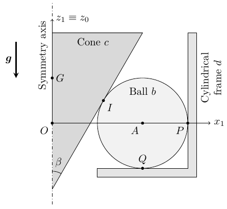
-
(a)
How many degrees of freedom does the system have in the limit $\mu = 0$? And in the limit $\mu = \infty$?
-
(b)
Write down the general expression of the position, velocity and acceleration of $A$ with respect to $S_0$ as a function of $\theta$ and its derivatives.
Assuming first that no slipping occurs between the ball and the other objects:
-
(c)
Locate the instantaneous axis of rotation (IAR) of the ball in $S_0$. Write down the general expression of the angular velocity and acceleration of the ball with respect to $S_0$ as a function of $\theta$ and its derivatives.
-
(d)
Find the relation between $\dot\theta$ and $\dot\phi$.
-
(e)
Identify and express all forces acting on the ball, and clearly state their point of application.
-
(f)
Obtain the equations of motion of the system and prove that the problem is undetermined (i.e., more unknowns than equations).
Considering now that the cone is rotating at a constant angular velocity, and assuming that the component in the $Ox_1z_1$ plane of the friction forces at points $P$ and $I$ are zero:
-
(g)
What is the maximum value of $\dot\theta$ for which the no-slipping condition holds?
Note: The moment of inertia of the sphere about any axis that passes through its center is $2mR^2/5$. The moment of inertia of the cone about its axis is $12mR^2/5$.
Worked Solution [ Click to Expand ]
Reference Frames, Bases and Degrees of Freedom
- Physical system: three bodies. The ball $b$, homogeneous and solid, of mass $m$, radius $R$ and centre $A$; the cone $c$, homogeneous and solid, of mass $2m$, half-angle $\beta$, base radius $2R$ and centre of mass $G$ on its axis; the cylindrical frame $d$, of inner radius $3R$ with a flat bottom, at rest. The ball touches the bottom of the frame at $Q$, the wall of the frame at $P$ and the cone at $I$; the friction coefficient at the three contacts is $\mu$, and no contact transmits a torque (the ball pivots freely).
- Fixed frame: $S_0\{O; \mathcal B_0\}$, with $\mathbf k_0$ along the common axis of the cone and of the frame, upwards, and $O$ on that axis at the height of $A$ (read from the figure: the axis $Ox_1$ passes through $A$ and $P$). Gravity is $-g\,\mathbf k_0$. The frame $d$ is at rest, so $S_0$ is inertial.
- Frame of the ball centre: $S_1\{O; \mathcal B_1\}$, turned by $\theta$ about $\mathbf k_0$, with $\mathbf i_1$ towards $A$, $\mathbf j_1$ horizontal and normal to it, $\mathbf k_1$ equal to $\mathbf k_0$.
- Cone frame: $S_c\{O; \mathcal B_c\}$, attached to the cone, turned by $\phi$ about $\mathbf k_0$. Both angles are positive counterclockwise as seen from above, as the statement says.
- Geometry, read from the figure: $P$ lies on $Ox_1$ on the wall, so $A$ is at the distance $3R - R$, that is $2R$, from the axis; $Q$ lies right below $A$, so the bottom of the frame is at the depth $R$ below $O$; $I$ lies on a generatrix of the cone, in the meridian plane $Ox_1z_1$, above and to the left of $A$.
- Support of the cone, read from the statement: the only constraint written is that the axis of the cone coincides with $Oz_0$. It is taken as an ideal cylindrical joint: it lets the cone turn about $\mathbf k_0$ and slide along it, and it exerts a force normal to the axis and a moment normal to the axis, but no axial force and no axial moment. The height of the cone is then held by the ball. If the support also held the cone axially, it would add one unknown (the axial force) and the contact with the cone would become a redundant geometric condition; the counts below change as stated where they are made.
| Datum | Symbol | SI unit |
|---|---|---|
| Mass and radius of the ball | $m$, $R$ | kg, m |
| Mass, half-angle and base radius of the cone | $2m$, $\beta$, $2R$ | kg, rad, m |
| Inner radius of the frame | $3R$ | m |
| Position of the ball centre | $\mathbf r_0^A = 2R\,\mathbf i_1$ | m |
| Height of the centre of mass of the cone above $O$ | $z_G$ (fixed by the geometry) | m |
| Moment of the ball about any diameter (statement; integral below) | $\tfrac25 mR^2$ | kg m$^2$ |
| Moment of the cone about its axis (statement; integral below) | $\tfrac{12}{5} mR^2$ | kg m$^2$ |
| Friction coefficient at $I$, $P$, $Q$ | $\mu$ | - |
| Gravity | $-g\,\mathbf k_0$ | m/s$^2$ |
Meridian plane $Ox_1z_1$ seen with $\mathbf i_1$ to the right and $\mathbf k_1$ up; the product of $\mathbf k_1$ and $\mathbf i_1$ is $\mathbf j_1$, so $\mathbf j_1$ points into the paper (⊗). The generatrix through $I$ makes the angle $\beta$ with the axis. Triangle of its upward unit tangent $\mathbf e_t$: hypotenuse 1 along the generatrix, adjacent leg along $\mathbf k_1$ (cosine of $\beta$), opposite leg along $\mathbf i_1$ (sine). The unit normal $\mathbf n$ of the cone surface, pointing out of the cone towards the ball, is $\mathbf e_t$ turned by a right angle clockwise in this view: adjacent leg along $\mathbf i_1$ (cosine), opposite leg along minus $\mathbf k_1$ (sine), because the outward normal of a cone that opens upwards points away from the axis and down.
Units: $[\mathrm L]$; the unit vectors are dimensionless
Meaning: $I$ is at the distance $R(2 - \cos\beta)$ from the axis, less than $2R$, and at the height $R\sin\beta$ above $A$, as drawn: up and to the left of the centre of the ball.
Part (a): degrees of freedom with no friction
The second limit (infinite friction) needs the kinematics of parts (c) and (d), so it is answered after them, in the box "Part (a), second limit".
Without friction a contact only forbids penetration: one scalar equation among the coordinates per contact. The ball has the three coordinates of $A$ and three angles; the cone, held by the cylindrical joint, keeps the angle $\phi$ and its height along the axis.
Units: dimensionless counts
Meaning: the centre of the ball can only run round the circle of radius $2R$ at the height of $O$; the ball can turn in any way about its centre, and the cone can turn on its own, because no friction couples the rotations. With the other reading of the support (cone held axially) the count is seven coordinates minus the two independent equations at $Q$ and $P$, the contact at $I$ being then a redundant consequence of the geometry: five as well.
Change of Basis, Position Vectors and Constraint Kinematics
View from above with $\mathbf k_0$ out of the paper (⊙), $\mathbf i_0$ to the right and $\mathbf j_0$ up: a positive angle turns counterclockwise. Triangle of $\mathbf i_1$: hypotenuse 1, adjacent leg along $\mathbf i_0$ (cosine of $\theta$), opposite leg along $\mathbf j_0$ (sine). Triangle of $\mathbf j_1$: adjacent leg along $\mathbf j_0$ (cosine), opposite leg along minus $\mathbf i_0$ (sine), because the counterclockwise turn carries the tip of $\mathbf j_0$ to the left. The cone basis is built in the same way with $\phi$.
Units: dimensionless; $[\mathrm{T^{-1}}]$
Meaning: $S_1$ follows the centre of the ball round the axis; in it the points $A$, $P$, $Q$ and $I$ have fixed coordinates.
Units: $[\mathrm L]$; $[\mathrm L][\mathrm{T^{-1}}]$; $[\mathrm L][\mathrm{T^{-2}}]$
Meaning: these hold with or without friction, since they only use the contacts at $Q$ and $P$: the centre runs on a horizontal circle of radius $2R$; the acceleration has a tangential part from the second rate of $\theta$ and a part towards the axis from the square of the first rate.
Parts (c) and (d): rolling without slip
Write the angular velocity of the ball in $\mathcal B_1$ with three unknown components. The frame is at rest, so the ball points at $Q$ and at $P$ have zero velocity (Eq. 13.5). The normal component of each condition (along $\mathbf k_1$ at $Q$, along $\mathbf i_1$ at $P$) holds already by part (b); the other two components of each are new.
Units: $[\mathrm{T^{-1}}]$
Meaning: four scalar conditions, only three independent: a turn of the ball about $\mathbf j_1$ would move both $Q$ and $P$ tangentially, and both conditions forbid it. With a positive rate of $\theta$ the ball rolls along the bottom towards plus $\mathbf j_1$, so it turns about minus $\mathbf i_1$, and along the wall, so it turns about minus $\mathbf k_1$, as the signs of the box show.
$Q$ and $P$ have zero velocity, so every point $X$ of the line through them, with $\overrightarrow{QX}$ equal to $\lambda(\mathbf i_1 + \mathbf k_1)$, has the velocity below, zero because the angular velocity is parallel to the line.
Units: $[\mathrm L]$; $[\mathrm{T^{-1}}]$; $[\mathrm{T^{-2}}]$
Meaning: the instantaneous axis is the line of the two contacts with the frame, at 45 degrees in the meridian plane; it turns with $S_1$ and always passes through the axis point at the depth $3R$ below $O$. Points on it have zero velocity (no sliding along the axis either). Even at a constant rate of $\theta$ the angular acceleration is not zero: the direction of the angular velocity turns with the meridian plane.
The cone turns about the fixed axis, so its point at $I$ moves with the field from $O$. The tangent plane at $I$ is spanned by $\mathbf j_1$ and the generatrix $\mathbf e_t$.
Units: dimensionless ratio of two rates, $[\mathrm{T^{-1}}]$ on both sides
Meaning: the cone turns in the same sense as the centre of the ball and faster: $\kappa$ is positive, and for $\beta$ equal to 30 degrees it is $2(1 + 0.5 + 0.866)/(2 - 0.866)$, about 4.17. The normal component of the condition is the contact itself, already imposed by the geometry.
With infinite friction nothing slips at $I$, $P$ or $Q$. The five velocities of the first limit are the rate of $\theta$, the three components of the angular velocity of the ball and the rate of $\phi$. The previous boxes give three independent conditions at $Q$ and $P$ and one at $I$. To see whether the conditions can be integrated, take the angular velocity of the ball relative to $S_1$, in which $A$ is fixed.
Units: dimensionless counts; $[\mathrm{T^{-1}}]$ for the angular velocity
Meaning: relative to $S_1$ the ball turns about a line through the fixed point $A$ with the fixed direction of $2\,\mathbf i_1$ plus $3\,\mathbf k_1$ (norm the square root of 13), by the angle of the last row: its attitude, like $\phi$ by part (d), is a function of $\theta$. The conditions are integrable, so one coordinate is enough. With the other reading of the support the cone contact adds nothing, and the count is the same.
Center of Mass and Inertia Tensor
Spherical coordinates about $A$: $r$ from 0 to $R$, polar angle $\vartheta$ from 0 to $\pi$ measured from an arbitrary diameter, azimuth $\chi$ from 0 to $2\pi$; density $\rho$; the squared distance to that diameter is $r^2\sin^2\vartheta$. The centre of mass is $A$ and the products of inertia vanish, because the integrands of the first moments and of the products are odd under the reflections that leave the ball invariant.
Units: $[\mathrm M][\mathrm L^2]$
Meaning: the value of the statement. Every diameter is principal with the same moment, so the angular momentum of the ball about $A$ is parallel to its angular velocity.
Height of the cone $h_c$, apex at $\zeta$ equal to 0 and base at $h_c$; the section at the height $\zeta$ is a disc of radius $a(\zeta)$, equal to $2R\zeta/h_c$ (similar triangles with the base). Cylindrical coordinates $(\varrho, \chi, \zeta)$, element $\varrho\,d\varrho\,d\chi\,d\zeta$, density $\rho_c$. $G$ lies on the axis and the products of inertia with the axis vanish, by the symmetry of revolution.
Units: $[\mathrm M][\mathrm L^2]$
Meaning: the value of the statement, independent of the height of the cone. Only this moment enters the equations, because the cone only turns about its axis.
Linear Momentum, Angular Momentum and Kinetic Energy
The centre of mass of the cone stays at rest: it is on the fixed axis and the ball holds its height. The cone turns about its symmetry axis, so its angular velocity has no transverse component and its angular momentum is along $\mathbf k_0$.
Units: $[\mathrm M][\mathrm L^2][\mathrm{T^{-2}}]$, N m
Meaning: the gyroscopic term of the ball vanishes because its tensor is isotropic, yet a moment along minus $\mathbf j_1$ is needed even at a constant rate of $\theta$, to turn the angular momentum of the ball with the meridian plane.
Units: $[\mathrm M][\mathrm L^2][\mathrm{T^{-2}}]$, J
Meaning: the energy of the whole bearing is fixed by the rate of $\theta$ alone, as expected with one degree of freedom; it is used in part (f) as a check.
Free-Body Diagram and Equations of Motion
Part (e): forces on the ball
The exploded view separates the ball, the cone and the frame. Each contact force acts at the contact point, with the opposite force on the other body (third law of Newton); no contact torque acts, because the ball pivots freely. Without slip, each contact force has three unknown components: the normal one, which points into the ball, and two of friction in the tangent plane (Notes.pdf, Sec. 13.2). The cylindrical joint acts on the cone with a force normal to the axis and a moment normal to the axis, reduced at $G$.
| Load | Body | Point | Expression | Kind |
|---|---|---|---|---|
| Weight of the ball | $b$ | $A$ | $-mg\,\mathbf k_1$ | applied |
| Bottom of the frame on the ball | $b$ | $Q$ | $\mathbf F_Q = F_{Qx}\,\mathbf i_1 + F_{Qy}\,\mathbf j_1 + N_Q\,\mathbf k_1$ | constraint: normal $N_Q$, friction $F_{Qx}$, $F_{Qy}$ |
| Wall of the frame on the ball | $b$ | $P$ | $\mathbf F_P = -N_P\,\mathbf i_1 + F_{Py}\,\mathbf j_1 + F_{Pz}\,\mathbf k_1$ | constraint: normal $N_P$, friction $F_{Py}$, $F_{Pz}$ |
| Cone on the ball | $b$ | $I$ | $\mathbf F_I = N_I\,\mathbf n + F_{Ij}\,\mathbf j_1 + F_{It}\,\mathbf e_t$ | constraint (pair): normal $N_I$, friction $F_{Ij}$, $F_{It}$ |
| Ball on the cone | $c$ | $I$ | $-\mathbf F_I$ | constraint (pair) |
| Weight of the cone | $c$ | $G$ | $-2mg\,\mathbf k_1$ | applied |
| Joint on the cone | $c$ | $G$ | $X\,\mathbf i_1 + Y\,\mathbf j_1$ and moment $M_x\,\mathbf i_1 + M_y\,\mathbf j_1$ | constraint |
| Ball on the frame | $d$ | $Q$, $P$ | $-\mathbf F_Q$, $-\mathbf F_P$ | constraint (pairs) |
In $\mathcal B_1$ the force at $I$ has the components $N_I\cos\beta + F_{It}\sin\beta$, $F_{Ij}$ and $-N_I\sin\beta + F_{It}\cos\beta$ (the triangles of $\mathbf n$ and $\mathbf e_t$). The normal forces act along the lines $QA$, $PA$ and $IA$, so their arms about $A$ are parallel to them and their moments vanish; the weight acts at $A$.
Units: N in the force; N m in the moment
Meaning: nine unknown contact components act on the ball: three at $Q$ (bottom), three at $P$ (wall), three at $I$ (cone), each applied at its contact point; with the weight at $A$ they reduce to the resultant $\mathbf F^b$ and the moment $\mathbf M_A^b$ at the centre. Only the friction components turn the ball.
Part (f): equations of motion and their count
Poles: $A$ for the ball and $G$ for the cone, the centres of mass, so the pole term of Eq. 12.13 is zero. Arm from $G$ to $I$: $\ell_1\,\mathbf i_1 + \ell_3\,\mathbf k_1$, with $\ell_1$ equal to $R(2 - \cos\beta)$ and $\ell_3$ equal to $R\sin\beta - z_G$. The force of the ball on the cone, $-\mathbf F_I$, has the components $-F_1$, $-F_{Ij}$, $-F_3$ in $\mathcal B_1$, with $F_1$ and $F_3$ the first and third components of the previous box.
Out of the meridian plane (components along $\mathbf j_1$ of the forces, along $\mathbf i_1$ and $\mathbf k_1$ of the moments):
In the meridian plane (components along $\mathbf i_1$ and $\mathbf k_1$ of the forces, along $\mathbf j_1$ of the moments):
Units: N in the force equations; N m in the moment equations
Meaning: the second rate of $\phi$ is not a new unknown, part (d) gives it; the cone height is constant, so the acceleration of $G$ is zero. The equations split into two groups that do not share unknowns, solved in the next box.
Out-of-plane group: four equations (the first four) in the four unknowns $\ddot\theta$, $F_{Qy}$, $F_{Py}$, $F_{Ij}$; the last two give $Y$ and $M_x$. Meridian group: five equations (the first five) in the seven unknowns $N_Q$, $F_{Qx}$, $N_P$, $F_{Pz}$, $N_I$, $F_{It}$, $X$; the last gives $M_y$. Take $F_{It}$ and $F_{Pz}$ as the free unknowns.
Units: N for every reaction; $[\mathrm{T^{-2}}]$ for the second rate
Meaning: the motion is determined (a constant rate of $\theta$, hence of $\phi$), the reactions are not. A value of $F_{Pz}$ adds at $P$ the force $F_{Pz}$ times the sum of $\mathbf i_1$ and $\mathbf k_1$ and at $Q$ the opposite force: a pair along the chord $PQ$ that squeezes or stretches the ball with no resultant and no moment. A value of $F_{It}$ adds at $I$ a horizontal push along $\mathbf i_1$ of size $F_{It}$ over the sine of $\beta$, taken by the wall at $P$ and the friction at $Q$ on the ball, and by the joint on the cone. Rigid bodies cannot tell these preloads apart: the problem is undetermined. Under the other reading of the support (cone held axially), the axial force adds a third free unknown.
Units: W in the powers
Meaning: no force does work, so the kinetic energy and with it the rate of $\theta$ are constant: the same result as the out-of-plane group, by a second route.
Part (g): maximum rate without slip
The cone turns at a constant rate, so by part (d) the second rate of $\theta$ is zero; a torque $\Gamma\,\mathbf k_0$ from whatever keeps that rate is added to the cone, and its axial equation reads zero equal to $\Gamma$ minus $R(2 - \cos\beta)F_{Ij}$. The statement sets to zero the components of the friction at $P$ and at $I$ in the plane $Ox_1z_1$, which are $F_{Pz}$ and $F_{It}$: exactly the two free unknowns of part (f).
Units: $\sqrt{[\mathrm{L\,T^{-2}}]/[\mathrm L]} = [\mathrm{T^{-1}}]$
Meaning: the friction at $P$ and at $I$ is zero, below any limit, and the three normal forces are positive for $0 \lt \beta \lt \pi/2$, so contact is kept and only $Q$ can slip. There the friction, along plus $\mathbf i_1$ (outwards), supplies the moment along minus $\mathbf j_1$ that turns the angular momentum of the ball with the meridian plane; it grows with the square of the rate of $\theta$, while the normal force at $Q$ stays at the weight of the ball plus that of the cone. No torque is needed to keep the cone turning.
Answers and Checks
| Asked | Answer |
|---|---|
| (a) Degrees of freedom | $\mu \to 0$: five ($\theta$, three angles of the ball, $\phi$). $\mu \to \infty$: one ($\theta$); the no-slip conditions are integrable |
| (b) Kinematics of $A$ | $\mathbf r_0^A = 2R\,\mathbf i_1$, $\mathbf v_0^A = 2R\dot\theta\,\mathbf j_1$, $\mathbf a_0^A = -2R\dot\theta^2\,\mathbf i_1 + 2R\ddot\theta\,\mathbf j_1$, with $\mathbf i_1 = \cos\theta\,\mathbf i_0 + \sin\theta\,\mathbf j_0$, $\mathbf j_1 = -\sin\theta\,\mathbf i_0 + \cos\theta\,\mathbf j_0$ |
| (c) IAR, angular velocity and acceleration | IAR: the line $PQ$, through $Q$ along $\mathbf i_1 + \mathbf k_1$; $\boldsymbol\omega_{b0} = -2\dot\theta(\mathbf i_1 + \mathbf k_1)$; $\boldsymbol\alpha_{b0} = -2\ddot\theta(\mathbf i_1 + \mathbf k_1) - 2\dot\theta^2\,\mathbf j_1$ |
| (d) Relation of the rates | $\dot\phi = \dfrac{2(1 + \sin\beta + \cos\beta)}{2 - \cos\beta}\,\dot\theta$ |
| (e) Forces on the ball | $-mg\,\mathbf k_1$ at $A$; $\mathbf F_Q = F_{Qx}\mathbf i_1 + F_{Qy}\mathbf j_1 + N_Q\mathbf k_1$ at $Q$; $\mathbf F_P = -N_P\mathbf i_1 + F_{Py}\mathbf j_1 + F_{Pz}\mathbf k_1$ at $P$; $\mathbf F_I = N_I(\cos\beta\,\mathbf i_1 - \sin\beta\,\mathbf k_1) + F_{Ij}\mathbf j_1 + F_{It}(\sin\beta\,\mathbf i_1 + \cos\beta\,\mathbf k_1)$ at $I$; no contact torques |
| (f) Equations and indeterminacy | 12 equations (ball and cone) for 14 unknowns; $\ddot\theta = 0$, $F_{Qy} = F_{Py} = F_{Ij} = 0$; $F_{It}$ and $F_{Pz}$ free, the rest as in the box of part (f) |
| (g) Maximum rate without slip | $\dot\theta_{\max} = \sqrt{15\mu g/(4R)}$, with $N_Q = 3mg$, $F_{Qx} = \tfrac45 mR\dot\theta^2$, $N_I = 2mg/\sin\beta$, $N_P = \tfrac{14}{5}mR\dot\theta^2 + 2mg\cot\beta$ |
Limiting cases and consistency: the key prints no answer for this problem (Problems.pdf, pp. 77 to 81 checked).
- Cylindrical inner race. With $\beta$ tending to zero the cone becomes a cylinder of radius $R$ touching the ball at the height of $A$; part (d) then gives a ratio of 4 between the rates, the classic ball bearing: the inner race point at $I$ moves at twice the speed of the centre of the ball, whose speed is $2R$ times the rate of $\theta$.
- Ratio of the rates. For $\beta$ equal to 30 degrees, $\kappa$ is about 4.17 (recomputed in part (d)); it is positive for every half-angle between 0 and a right angle, so the cone and the centre of the ball always turn in the same sense.
- Free motion. Both the out-of-plane group and the energy theorem give a constant rate of $\theta$ when no torque acts on the cone.
- Vertical balance in part (g). The bottom carries $3mg$, the weight of the ball and of the cone: the joint has no axial force, so the cone weighs on the ball and the ball on the bottom.
- Dimensions. Every force term is a mass times $R$ times a squared rate or a mass times $g$; every moment has one more length.
Interactive geometry simulator: it needs JavaScript. The figures above show the same geometry.
To prevent the effect of martian dust on internal mechanisms, a new concept of a hermetically-sealed rolling robot for the exploration of Mars is proposed, which consists of a homogeneous, heavy, rigid cylinder $b$ of mass $M$, radius $R$, and center of mass at its geometric center $C$. The moment of inertia of the cylinder about an axis through $C$ perpendicular to the plane of motion is $I_z$. The cylinder has an internal diametrical slot in it of total length $2\ell < 2R$ as shown in the figure. Inside this slot there is a heavy point particle $P$ of mass $m$, whose position $x_1^P$ in the slot is varied in time according to a prescribed law $x_1^P = x_1^P(t)$. The motion of $P$ is imposed by an internal motor (not shown) of negligible mass that is mounted on the cylinder $b$. We determine the configuration of the cylinder with the position $x_0^C$ of its center $C$ and its rotation angle $\varphi$. The angle of the ground is denoted $\gamma$, the instantaneous contact point of the robot with the ground is denoted $A$, and the friction coefficient is denoted $\mu$. The reference frame $S_0$ is inertial and the reference frame $S_1$ is fixed to the cylinder.
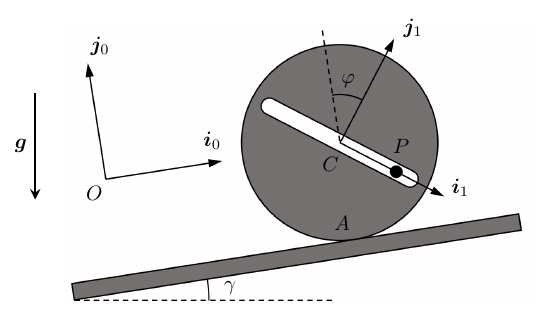
-
(a)
Find the general expression for the position, velocity, and acceleration vectors of $P$ with respect to $S_0$ as a function of $x_0^C$, $\varphi$, $x_1^P$, and their derivatives.
-
(b)
Give the expression of the force $\mathbf{F}$ on the cylinder $b$ caused by the particle $P$ and its motion.
NOTE: observe that as the motor pushes on $P$, an equal and opposite force appears on the cylinder along the same line of action.
-
(c)
Reduce the system of all forces and torques on the cylinder to a single resultant force and a single resultant torque about its geometric center $C$.
-
(d)
Consider now that we want keep the robot at rest, i.e., in equilibrium, on the slope. What is the maximum value of $\gamma$ that allows this condition if we have $\varphi = \gamma$ and $x_1^P$ can be set within the range $[-\ell, \ell]$?
In the following, assume that $\mu$ is sufficiently large to prevent slipping, that $\gamma = 0$, and that the control law $x_1^P(t) = \ell \sin(\Omega t)$ for the position of $P$ is prescribed, where $\Omega$ is a known constant and $\ell = R/2$.
-
(e)
Write down a closed system of equations for all unknowns in the problem, and identify which initial conditions would be needed to integrate it. Explain in what order you would solve this system.
-
(f)
Consider finally that at a particular instant of time $\dot{\varphi} = 0$ and $\ddot{\varphi} = 0$. What is the maximum value of $\Omega$ that we can have and still ensure that the robot never takes off the ground?
Worked Solution [ Click to Expand ]
Reference Frames, Bases and Degrees of Freedom
- Physical system: two bodies in the vertical plane of the figure. The cylinder $b$, of mass $M$, radius $R$, centre of mass at its centre $C$ and moment of inertia $I_z$ about the axis through $C$ normal to the plane, with a diametral slot of length $2\ell$; and the particle $P$, of mass $m$, which moves along the slot with the prescribed law $x_1^P(t)$, pushed by a motor of negligible mass mounted on the cylinder. The cylinder touches the slope at $A$, with friction coefficient $\mu$.
- Fixed frame: $S_0\{O; \mathcal B_0\}$, with $\mathbf i_0$ along the slope, upwards, $\mathbf j_0$ normal to the slope, away from it, and $\mathbf k_0$ out of the paper (⊙), as in the figure. The slope is at rest, so $S_0$ is inertial. $O$ is drawn above the slope in the figure; it is placed here on the line of the slope, so that $C$ is at the height $R$ along $\mathbf j_0$ (another position of $O$ only adds a constant to that coordinate).
- Cylinder frame: $S_1\{C; \mathcal B_1\}$, attached to the cylinder, with $\mathbf i_1$ along the slot (towards the end where $P$ is drawn) and $\mathbf j_1$ normal to it.
- Angle, read from the figure: $\varphi$ is drawn from the dashed line through $C$ parallel to $\mathbf j_0$ to $\mathbf j_1$, clockwise in the view with $\mathbf k_0$ out of the paper; it is taken positive in that sense, a positive rotation about minus $\mathbf k_0$. The opposite reading would change the sign of $\varphi$, of its rates and of the rolling relation in every formula, not the method.
- Coordinates and degrees of freedom: the contact with the slope fixes the height of $C$ (Notes.pdf, Eq. 13.1), so the cylinder keeps $x_0^C$ and $\varphi$: two degrees of freedom while it may slip; $x_1^P$ is not a degree of freedom, its law is prescribed. With rolling without slip (from part (e) on) one degree of freedom remains, $\varphi$.
| Datum | Symbol | SI unit |
|---|---|---|
| Mass, radius and centre of the cylinder | $M$, $R$, $C$ | kg, m |
| Moment of inertia of the cylinder about the normal through $C$ | $I_z$ | kg m$^2$ |
| Half-length of the slot | $\ell$, with $\ell \lt R$ | m |
| Mass and position of the particle along the slot | $m$, $x_1^P(t)$ prescribed | kg, m |
| Slope angle; friction coefficient | $\gamma$; $\mu$ | rad; - |
| Coordinates of the cylinder | $x_0^C$, $\varphi$ | m, rad |
| Contact forces of the slope at $A$ | normal $N_A\,\mathbf j_0$, friction $f_A\,\mathbf i_0$ | N |
| From part (e) on | $\gamma = 0$, $x_1^P(t) = \ell\sin\Omega t$, $\ell = R/2$, no slip | rad, m |
View with $\mathbf k_0$ out of the paper (⊙). Write $\mathbf e_h$ for the horizontal unit vector to the right and $\mathbf e_v$ for the upward vertical. The slope rises to the right by $\gamma$, so $\mathbf i_0$ is $\mathbf e_h$ turned counterclockwise by $\gamma$: adjacent leg along $\mathbf e_h$ (cosine), opposite leg along $\mathbf e_v$ (sine); $\mathbf j_0$ has its adjacent leg along $\mathbf e_v$ (cosine) and its opposite leg along minus $\mathbf e_h$ (sine), because the counterclockwise turn carries the tip of $\mathbf e_v$ to the left. The inverse relation is the transpose.
Units: $[\mathrm{L\,T^{-2}}]$
Meaning: the component along the slope points down the slope, minus $\mathbf i_0$, with the sine of $\gamma$; the component normal to the slope presses the cylinder on it, with the cosine.
Change of Basis, Position Vectors and Constraint Kinematics
View with $\mathbf k_0$ out of the paper (⊙); a positive $\varphi$ turns clockwise. Triangle of $\mathbf i_1$: hypotenuse 1, adjacent leg along $\mathbf i_0$ (cosine of $\varphi$), opposite leg along minus $\mathbf j_0$ (sine), because the clockwise turn carries the tip of $\mathbf i_0$ downwards. Triangle of $\mathbf j_1$: adjacent leg along $\mathbf j_0$ (cosine), opposite leg along plus $\mathbf i_0$ (sine), because the clockwise turn carries the tip of $\mathbf j_0$ to the right, as $\mathbf j_1$ is drawn.
Units: dimensionless; $[\mathrm{T^{-1}}]$
Meaning: a positive rate of $\varphi$ turns the cylinder clockwise, the sense in which it rolls up the slope; $\mathbf i_1$ is the direction of the slot.
$C$ is at the height $R$ above the slope, so its position has the constant component $R$ along $\mathbf j_0$ and its velocity has none.
Units: $[\mathrm L]$; $[\mathrm{L\,T^{-1}}]$; $[\mathrm{L\,T^{-2}}]$ in every term
Meaning: the acceleration of $P$ is that of $C$ plus the relative acceleration along the slot, the centripetal term towards $C$, and the Coriolis and angular acceleration terms normal to the slot; $\mathbf i_1$ and $\mathbf j_1$ are those of the previous box.
Units: $[\mathrm{L\,T^{-1}}]$; $[\mathrm L]$; $[\mathrm{L\,T^{-2}}]$
Meaning: a clockwise turn (positive rate of $\varphi$) rolls the cylinder up the slope; the constraint is integrable, so with no slip $\varphi$ alone fixes the configuration.
Center of Mass and Inertia Tensor
The statement gives the centre of mass $C$ of the slotted cylinder and its moment $I_z$ about the normal through $C$ (the slot is diametral and centred, so $C$ stays at the geometric centre; with the slot, $I_z$ is not that of a full cylinder, so it is kept as the datum). The mid-plane of the cylinder is a plane of symmetry, so the products of inertia with $\mathbf k_0$ vanish and $\mathbf k_0$ is a principal axis. The particle is a point mass.
Units: $[\mathrm M][\mathrm L^2]$; $[\mathrm M][\mathrm{L\,T^{-2}}]$
Meaning: $G$ is the centre of mass of cylinder and particle together; it moves with $P$ along the slot even when $C$ is at rest.
Linear Momentum, Angular Momentum and Kinetic Energy
Units: $[\mathrm{M\,L\,T^{-1}}]$; $[\mathrm{M\,L^2\,T^{-1}}]$; N m
Meaning: the angular momentum of the cylinder is along minus $\mathbf k_0$ when it turns clockwise. The kinetic energy is not used: the pair of forces between particle and cylinder acts at two points whose velocities differ by the rate of $x_1^P$ along $\mathbf i_1$, so its total power is minus $F_1$ times that rate, not zero while the motor moves $P$, and the energy of the system is not constant.
Free-Body Diagram and Equations of Motion
The exploded view separates the particle and the cylinder. On the particle act its weight and the force of the cylinder, $-\mathbf F$: the push of the motor along the slot and the push of the slot walls normal to it, both at $P$. On the cylinder act the opposite force $\mathbf F$ at its point $P$ (third law of Newton; the statement notes that the reaction of the motor acts on the line of action of the push, through $P$), its weight at $C$, and the contact force of the slope at $A$.
| Load | Body | Point | Expression in $\mathcal B_0$ or $\mathcal B_1$ | Kind |
|---|---|---|---|---|
| Weight of the particle | $P$ | $P$ | $-mg(\sin\gamma\,\mathbf i_0 + \cos\gamma\,\mathbf j_0)$ | applied |
| Cylinder (slot and motor) on the particle | $P$ | $P$ | $-\mathbf F = -F_1\,\mathbf i_1 - F_2\,\mathbf j_1$ | internal (pair) |
| Particle on the cylinder | $b$ | $P$ | $\mathbf F = F_1\,\mathbf i_1 + F_2\,\mathbf j_1$ | internal (pair) |
| Weight of the cylinder | $b$ | $C$ | $-Mg(\sin\gamma\,\mathbf i_0 + \cos\gamma\,\mathbf j_0)$ | applied |
| Slope on the cylinder | $b$ | $A$ | $f_A\,\mathbf i_0 + N_A\,\mathbf j_0$ | constraint |
The components along the slot ($F_1$, the push of the motor) and normal to it ($F_2$, the slot walls) use the dot products of the bases: $\mathbf i_0\cdot\mathbf i_1$ is the cosine of $\varphi$, $\mathbf j_0\cdot\mathbf i_1$ minus its sine, $\mathbf i_0\cdot\mathbf j_1$ its sine and $\mathbf j_0\cdot\mathbf j_1$ its cosine.
Units: N in every term
Meaning: at rest the particle loads the cylinder with its weight only; in motion the cylinder must also supply the force that accelerates the particle, and feels the opposite of it. The sine and cosine of the difference of $\varphi$ and $\gamma$ come from the subtraction and addition formulas.
Arms from $C$: to $A$, minus $R\,\mathbf j_0$; to $P$, $x_1^P\,\mathbf i_1$; the weight acts at $C$.
Units: N; N m
Meaning: with $\mathbf F$ and $F_2$ of part (b). The friction at $A$ turns the cylinder counterclockwise about $C$ when it is positive (up the slope); the force of the particle turns it only through the part normal to the slot, since the reaction of the motor acts along the slot through $C$.
At rest every rate is zero, the particle is held at a constant $x_1^P$ and $\varphi$ equals $\gamma$, so the acceleration of $P$ is zero and part (b) gives $F_2$ equal to minus $mg\cos 0$, that is minus $mg$, and $\mathbf F\cdot\mathbf i_0$ equal to minus $mg\sin\gamma$. The slot is then horizontal: $\mathbf i_1$ is $\cos\gamma\,\mathbf i_0 - \sin\gamma\,\mathbf j_0$, the vector $\mathbf e_h$ of the gravity box.
Units: dimensionless ratios: $[\mathrm M][\mathrm L]/([\mathrm M][\mathrm L])$
Meaning: a positive $x_1^P$ puts $P$ along plus $\mathbf e_h$, on the uphill side of $C$: its weight there balances the moment of the friction that holds the cylinder on the slope. The first bound is the geometric one (the particle cannot go beyond the end of the slot), the second the friction one; the argument of the arcsine is below 1 because $\ell$ is below $R$ and $m$ below $M + m$.
Part (e): closed system with rolling, horizontal ground and the prescribed law
With $\gamma$ zero, gravity is minus $g\,\mathbf j_0$ and the second rate of $x_0^C$ is $R$ times that of $\varphi$. The pole of the moment equation is $C$, the centre of mass of the cylinder, so the pole term vanishes. The projections of the acceleration of $P$ on $\mathbf i_0$ and $\mathbf j_0$ use the rows of $[{}_0R_1]$.
Expanding the last row with the first and the sixth, and collecting the terms in the second rate of $\varphi$:
Units: N m in every term of the first equation ($[\mathrm M][\mathrm L^2][\mathrm{T^{-2}}]$); N in the others
Meaning: the bracket is $I_z + MR^2$ plus $m$ times the squared distance from $A$ to $P$ (the vector from $A$ to $P$ is $R\,\mathbf j_0$ plus $x_1^P\,\mathbf i_1$, and the dot product of $\mathbf j_0$ and $\mathbf i_1$ is minus the sine of $\varphi$). Three equations for the three unknowns $\varphi(t)$, $f_A$, $N_A$; the law of $x_1^P$ is known, and part (b) then gives the push of the motor and the force of the slot walls.
The law of $x_1^P$ fixes its value and its rates at every instant, by the chain rule: the first rate is $\ell\Omega\cos\Omega t$, the second minus $\ell\Omega^2\sin\Omega t$. The equation of the previous box is of second order in $\varphi$.
Units: rad and rad/s for the initial data of $\varphi$; m for $x_0^C(0)$
Meaning: the motion of $P$ needs no initial condition, it is imposed; the reactions are algebraic once $\varphi$ is known, and if a check fails (contact lost or slip) the hypotheses of part (e) stop holding from that instant on.
Part (f): no take-off
At that instant the equation of motion keeps only the terms without the rates of $\varphi$; with the law of $x_1^P$ it fixes which configurations are possible.
Units: $\sqrt{[\mathrm M][\mathrm{L\,T^{-2}}]/([\mathrm M][\mathrm L])} = [\mathrm{T^{-1}}]$
Meaning: read from the statement: the contact must hold at every instant of that kind, whatever the orientation and the point of the cycle compatible with the equation of motion. With the cosine of $\varphi$ zero the slot is vertical; the worst case is the particle at the upper end of its stroke, where its acceleration, of size $\ell$ times the square of $\Omega$, points down: the cylinder must pull it down and is itself pulled up. With the sine of $\Omega t$ zero, $P$ passes through $C$ with no acceleration and the normal force is the full weight. In both cases no friction is needed at that instant.
Answers and Checks
| Asked | Answer |
|---|---|
| (a) Kinematics of $P$ | $\mathbf r_0^P = x_0^C\mathbf i_0 + R\,\mathbf j_0 + x_1^P\mathbf i_1$; $\mathbf v_0^P = \dot x_0^C\mathbf i_0 + \dot x_1^P\mathbf i_1 - x_1^P\dot\varphi\,\mathbf j_1$; $\mathbf a_0^P = \ddot x_0^C\mathbf i_0 + (\ddot x_1^P - x_1^P\dot\varphi^2)\mathbf i_1 - (2\dot x_1^P\dot\varphi + x_1^P\ddot\varphi)\mathbf j_1$; $\mathbf i_1 = \cos\varphi\,\mathbf i_0 - \sin\varphi\,\mathbf j_0$, $\mathbf j_1 = \sin\varphi\,\mathbf i_0 + \cos\varphi\,\mathbf j_0$ |
| (b) Force of $P$ on the cylinder | $\mathbf F = -mg(\sin\gamma\,\mathbf i_0 + \cos\gamma\,\mathbf j_0) - m\,\mathbf a_0^P$, applied at $P$ |
| (c) Reduction at $C$ | $\mathbf F^b = (f_A - Mg\sin\gamma)\mathbf i_0 + (N_A - Mg\cos\gamma)\mathbf j_0 + \mathbf F$; $\mathbf M_C^b = (R f_A + x_1^P\,\mathbf F\cdot\mathbf j_1)\mathbf k_0$ |
| (d) Largest slope at rest | $\gamma_{\max} = \min\{\arcsin[m\ell/((M+m)R)],\ \arctan\mu\}$, with $x_1^P = (M+m)R\sin\gamma/m$ |
| (e) Closed system | $[I_z + MR^2 + m(R^2 - 2Rx_1^P\sin\varphi + (x_1^P)^2)]\ddot\varphi + mR(\ddot x_1^P - x_1^P\dot\varphi^2)\cos\varphi - 2mR\dot x_1^P\dot\varphi\sin\varphi + 2mx_1^P\dot x_1^P\dot\varphi - mgx_1^P\cos\varphi = 0$; $x_0^C = x_0^C(0) + R(\varphi - \varphi(0))$; $f_A = MR\ddot\varphi + m\,\mathbf a_0^P\cdot\mathbf i_0$; $N_A = (M+m)g + m\,\mathbf a_0^P\cdot\mathbf j_0$; initial data $\varphi(0)$, $\dot\varphi(0)$ (and $x_0^C(0)$); order $\varphi \to x_0^C \to \mathbf F \to f_A, N_A$ |
| (f) No take-off | $\Omega_{\max} = \sqrt{2(M+m)g/(mR)}$ |
Check against the official key: the key (Problems.pdf, p. 81) answers part (b) only, with the equation of motion of the particle written as $m\mathbf a_0^P$ equal to the weight minus $\mathbf F$, and $\mathbf F$ equal to minus $mg(\sin\gamma\,\mathbf i_0 + \cos\gamma\,\mathbf j_0)$ minus $m\mathbf a_0^P$: the same expression as part (b), in the same basis and with the same sign convention. The other parts have no printed answer.
- No particle. With $m$ zero the equation of part (e) reduces to $(I_z + MR^2)$ times the second rate of $\varphi$ equal to zero: a cylinder rolling at constant rate on horizontal ground, as it must with no horizontal force.
- Particle held at the centre. With $x_1^P$ always zero the bracket becomes $I_z + (M + m)R^2$ and the other terms vanish: the particle at $C$ only adds its mass to the rolling cylinder.
- Equilibrium on flat ground. With every rate zero and $x_1^P$ constant, the equation of part (e) leaves $mg\,x_1^P\cos\varphi$ equal to zero: $P$ at the centre or the slot vertical, which is part (d) with $\gamma$ zero (a zero friction and $x_1^P$ zero for a horizontal slot).
- Part (d) for a small particle. With $m$ much smaller than $M$ the largest angle tends to zero: a light particle cannot shift the centre of mass far enough to hold the cylinder on a slope.
- Dimensions. Every term of the equation of motion is a mass times a squared length times a squared rate, or a mass times $g$ times a length.
Interactive geometry simulator: it needs JavaScript. The figures above show the same geometry.
A heavy, thin, homogeneous, hollow sphere $s$ of radius $R$ and mass $m$ contains a heavy, homogeneous disk $d$ of mass $2m$. The disk is supported by a massless axle that is rigidly connected to the sphere at two polar opposite points $A$ and $B$, so that the centers of mass of the sphere and disk coincide, $G_s \equiv G_d \equiv G$. The disk can spin freely about the axle. The sphere rolls without slipping over an inclined plane that forms a known, fixed angle $\gamma$ with the horizontal. We call $C$ the instantaneous contact point of the sphere with the plane, and we assume that the sphere cannot separate from the plane. We define the inertial reference frame $S_0$, the sphere-fixed reference frame $S_s$, and the disk-fixed reference frame $S_d$ (see figure). The attitude of $S_s$ with respect to $S_0$ is given by the 3-1-3 Euler angles $\psi$, $\theta$, $\phi$. The attitude of $S_d$ with respect to $S_s$ is given by angle $\beta$, knowing that when $\beta = 0$, $S_d$ coincides with $S_s$. The position of the contact point on the plane is described with coordinates $\xi$, $\eta$. The tensors of inertia of the sphere and the disk about $G$, expressed in the basis $B_s$ of $S_s$, are:
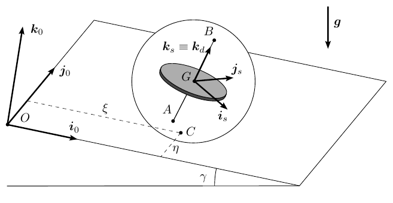
-
(a)
Starting from the vector basis $B_0$ of $S_0$, write down the expressions for the change-of-basis associated to the Euler angles, which define the intermediate vector bases $(B_1, B_2)$ and the vector basis $B_s$ of $S_s$.
-
(b)
Give the general expressions for $\mathbf{r}_0^G$, $\boldsymbol{\omega}_{s0}$, and $\boldsymbol{\omega}_{ds}$ as a function of the coordinates of the problem and their derivatives.
-
(c)
Write down the equations of the rolling without slipping constraint between the sphere and the plane, in terms of the coordinates of the problem and their derivatives. Classify this constraint according to [integrable / non-integrable], [stationary / non-stationary].
-
(d)
Draw an exploded view diagram of the disk, the sphere (including the axle as part of it), and the plane, and correctly represent all reactions on each body.
-
(e)
Express all forces and torques on the sphere mathematically, using the unit vectors you have defined before and introducing new unknowns as needed. Reduce this system of forces and torques to a resultant force and a resultant torque at $G$.
-
(f)
Write down the total angular momentum about $G$ and the total kinetic energy of the system, as seen from $S_0$.
-
(g)
Find two first integrals of motion.
Worked Solution [ Click to Expand ]
Reference Frames, Bases and Degrees of Freedom
- Physical system: two rigid bodies. The sphere $s$, thin, hollow and homogeneous, of mass $m$, radius $R$ and centre $G$, with a massless axle $AB$ fixed to it along a diameter; and the disk $d$, homogeneous, of mass $2m$, centred at $G$ on the axle, free to spin about it (ideal bearing). The sphere rolls without slipping on a fixed plane inclined by $\gamma$ and never leaves it; $C$ is the contact point.
- Fixed frame: $S_0\{O; \mathcal B_0\}$, with $O$ on the plane, $\mathbf i_0$ and $\mathbf j_0$ in the plane and $\mathbf k_0$ normal to it, away from it. The plane is at rest, so $S_0$ is inertial.
- Slope, read from the figure: the arc of $\gamma$ is drawn between the horizontal ground line and the edge of the plane through $O$ along $\mathbf i_0$, which descends from $O$ to the ground. So $\mathbf i_0$ points down the line of greatest slope and $\mathbf j_0$ is horizontal. With the other reading ($\mathbf j_0$ along the slope) the gravity term below would move from $\xi$ to $\eta$, and nothing else would change.
- Sphere frame: $S_s\{G; \mathcal B_s\}$, attached to the sphere, with $\mathbf k_s$ along the axle from $A$ to $B$. Its attitude is given by the 3-1-3 Euler angles: $\psi$ about $\mathbf k_0$ gives $\mathcal B_1$, $\theta$ about $\mathbf i_1$ (the line of nodes) gives $\mathcal B_2$, $\phi$ about $\mathbf k_2$ (equal to $\mathbf k_s$) gives $\mathcal B_s$.
- Disk frame: $S_d\{G; \mathcal B_d\}$, attached to the disk, turned by $\beta$ about $\mathbf k_s$ (equal to $\mathbf k_d$) from $\mathcal B_s$.
- Contact point: $\mathbf r_0^C$ is $\xi\,\mathbf i_0$ plus $\eta\,\mathbf j_0$ (the dashed lines of the figure, parallel to $\mathbf i_0$ and $\mathbf j_0$).
- Coordinates and degrees of freedom: the two bodies have twelve coordinates; the disk shares the centre of the sphere and turns only about the axle (five equations), and contact with the plane fixes the height of $G$ (one equation, Notes.pdf, Eq. 13.1). Six coordinates remain: $\xi$, $\eta$, $\psi$, $\theta$, $\phi$, $\beta$. Rolling without slip adds two conditions on the rates that cannot be integrated (part (c)), so the system keeps six coordinates and has four degrees of freedom (independent velocities), as in Notes.pdf, Sec. 14.1.
| Datum | Symbol | SI unit |
|---|---|---|
| Mass and radius of the sphere | $m$, $R$ | kg, m |
| Mass of the disk | $2m$ | kg |
| Tensor of the sphere at $G$, in $\mathcal B_s$ | $\tfrac23 mR^2\,\mathrm{diag}(1, 1, 1)$ | kg m$^2$ |
| Tensor of the disk at $G$, in $\mathcal B_s$ | $\tfrac16 mR^2\,\mathrm{diag}(1, 1, 2)$ | kg m$^2$ |
| Slope angle | $\gamma$ | rad |
| Coordinates | $\xi$, $\eta$ (m); $\psi$, $\theta$, $\phi$, $\beta$ (rad) | m, rad |
| Gravity | $g$, vertical, downwards | m/s$^2$ |
Vertical section through the line of greatest slope, with $\mathbf j_0$ horizontal. Write $\mathbf e_h$ for the horizontal unit vector along the horizontal projection of $\mathbf i_0$ (drawn to the right) and $\mathbf e_v$ for the upward vertical (drawn up); the product of $\mathbf k_0$ and $\mathbf i_0$ is $\mathbf j_0$, and with $\mathbf i_0$ to the right and $\mathbf k_0$ up it points into the paper (⊗). $\mathbf i_0$ descends by $\gamma$: adjacent leg along $\mathbf e_h$ (cosine), opposite leg along minus $\mathbf e_v$ (sine). $\mathbf k_0$, normal to the plane, leans by $\gamma$ towards the downhill side: adjacent leg along $\mathbf e_v$ (cosine), opposite leg along $\mathbf e_h$ (sine).
Units: $[\mathrm{L\,T^{-2}}]$
Meaning: the component in the plane points down the slope, along plus $\mathbf i_0$, with the sine of $\gamma$; the horizontal $\mathbf j_0$ carries none; the normal component presses the sphere on the plane.
Change of Basis, Position Vectors and Constraint Kinematics
View from above the plane with $\mathbf k_0$ out of the paper (⊙), $\mathbf i_0$ to the right and $\mathbf j_0$ up: a positive $\psi$ turns counterclockwise. Triangle of $\mathbf i_1$: hypotenuse 1, adjacent leg along $\mathbf i_0$ (cosine of $\psi$), opposite leg along $\mathbf j_0$ (sine). Triangle of $\mathbf j_1$: adjacent leg along $\mathbf j_0$ (cosine), opposite leg along minus $\mathbf i_0$ (sine), because the counterclockwise turn carries the tip of $\mathbf j_0$ to the left.
Units: dimensionless
Meaning: $\mathbf i_1$ is the line of nodes, the trace in the inclined plane (the intersection of the plane of $\mathbf i_0$, $\mathbf j_0$ with the plane normal to the axle) about which the axle is then tilted; only $\mathbf j_0$ is horizontal.
View along the line of nodes with $\mathbf i_1$ out of the paper (⊙), $\mathbf j_1$ to the right and $\mathbf k_1$ up; this is right-handed because the product of $\mathbf j_1$ and $\mathbf k_1$ is $\mathbf i_1$. A positive $\theta$ turns counterclockwise. Triangle of $\mathbf j_2$: adjacent leg along $\mathbf j_1$ (cosine of $\theta$), opposite leg along $\mathbf k_1$ (sine). Triangle of $\mathbf k_2$: adjacent leg along $\mathbf k_1$ (cosine), opposite leg along minus $\mathbf j_1$ (sine), because the counterclockwise turn carries the tip of $\mathbf k_1$ to the left.
Units: dimensionless
Meaning: $\theta$ is the angle between the axle $\mathbf k_2$ and the normal $\mathbf k_0$ of the plane.
View with $\mathbf k_2$ out of the paper (⊙), $\mathbf i_2$ to the right and $\mathbf j_2$ up; a positive $\phi$ turns counterclockwise. Triangle of $\mathbf i_s$: adjacent leg along $\mathbf i_2$ (cosine of $\phi$), opposite leg along $\mathbf j_2$ (sine). Triangle of $\mathbf j_s$: adjacent leg along $\mathbf j_2$ (cosine), opposite leg along minus $\mathbf i_2$ (sine): the counterclockwise turn carries the tip of $\mathbf j_2$ to the left, towards minus $\mathbf i_2$.
Units: dimensionless
Meaning: the third column of $[{}_0R_s]$ is the axle in $\mathcal B_0$; its third row is the normal of the plane in $\mathcal B_s$, both used below.
Same view as the spin, with $\mathbf k_s$ out of the paper (⊙), $\mathbf i_s$ to the right and $\mathbf j_s$ up; a positive $\beta$ turns counterclockwise, with the same triangles; as for $\phi$, the counterclockwise turn carries the tip of $\mathbf j_s$ to the left, which is the minus sign of the opposite leg of $\mathbf j_d$.
Units: dimensionless
Meaning: the disk differs from the sphere frame only by its turn about the axle.
The normal of the plane at $C$ is $\mathbf k_0$, so $G$ is at $R$ from $C$ along it. The rates of $\psi$, $\theta$ and $\phi$ act along $\mathbf k_0$, $\mathbf i_1$ and $\mathbf k_s$; $\mathbf i_1$ and $\mathbf k_0$ are written in $\mathcal B_s$ with the previous boxes, and $\mathbf i_1$ and $\mathbf k_s$ in $\mathcal B_0$.
Units: $[\mathrm L]$; $[\mathrm{T^{-1}}]$ in every component
Meaning: $p$, $q$, $r$ are the components of the angular velocity of the sphere in its own basis; $r$ is the spin about the axle. The components in $\mathcal B_0$ enter the rolling condition; the components in $\mathcal B_s$ enter the momenta, because the tensors are known in $\mathcal B_s$.
Part (c): rolling without slip
Write $\omega_1$, $\omega_2$, $\omega_3$ for the components of the angular velocity of the sphere in $\mathcal B_0$ (last line of part (b)). The sphere point at $C$ is at minus $R\,\mathbf k_0$ from $G$.
Units: $[\mathrm{L\,T^{-1}}]$ in every term
Meaning: two scalar relations among the rates. The plane is at rest and the relations hold with no explicit time: the constraint is stationary. It is non-integrable, as shown in the next box.
The formal test (the Frobenius condition, or the set of configurations reachable from one point) is an extension. A direct sign of non-integrability: roll the sphere round a square path of side $L$ with no turn about $\mathbf k_0$, and follow the material point that starts at the top, along $\mathbf k_0$ from $G$. Rolling by $L$ along plus $\mathbf i_0$ needs, by the box above, a rotation about plus $\mathbf j_0$ by $L/R$; along plus $\mathbf j_0$, about minus $\mathbf i_0$; then the opposite ones. Take $L$ equal to $\pi R/2$, so each turn is a right angle.
Units: dimensionless (directions)
Meaning: the attitude is not a function of $\xi$ and $\eta$ along the motion. That alone rules out three relations; to rule out two, pivot the sphere about the vertical $\mathbf k_0$ with the contact point at rest (this keeps the velocity of $C$ equal to zero) and note that the loop changes the vertical component of a material direction, which a pivot cannot. So the attitudes reachable with the contact point at a fixed place form a set of at least two dimensions, while two relations among $\xi$, $\eta$, $\psi$, $\theta$, $\phi$ would leave only one. That is why the six coordinates must be kept with four independent velocities.
Center of Mass and Inertia Tensor
The statement gives both tensors; the integrals check them. Sphere: surface density $\sigma_s$, polar angle $\vartheta$ from $\mathbf k_s$, squared distance to the axle $R^2\sin^2\vartheta$. Disk: thin, of radius $a$ (not given), surface density $\sigma_d$, polar coordinates $(\rho, \chi)$ in its plane with $\chi$ from $\mathbf i_s$, squared distances $\rho^2$ to the axle and $\rho^2\sin^2\chi$ to the diameter along $\mathbf i_s$. Both centres of mass are at $G$ and the products of inertia vanish, by the symmetries of each body.
Units: $[\mathrm M][\mathrm L^2]$
Meaning: the tensors of the statement, with the ratio 2 between the axial and the transverse moment of a thin disk; they imply a disk of radius $R$ over the square root of 3. Since the disk tensor is the same in $\mathcal B_s$ and in $\mathcal B_d$, it is constant in $\mathcal B_s$, which does not spin with the disk.
Linear Momentum, Angular Momentum and Kinetic Energy
Both centres of mass are at $G$, so each body contributes its tensor at $G$ times its angular velocity, and the sum is the angular momentum of the system about its centre of mass. The angular velocity of the disk has the components $p$, $q$ and $r$ plus the rate of $\beta$ in $\mathcal B_s$.
Units: $[\mathrm M][\mathrm L^2][\mathrm{T^{-1}}]$
Meaning: the transverse part sees the sphere and the disk together (five sixths of $mR^2$); along the axle the disk adds its own spin. With the disk locked to the sphere the system would be a single body with axial moment $mR^2$.
The translational part uses the velocity of $G$ of part (b), whose square is the sum of the squares of the rates of $\xi$ and $\eta$; with the rolling condition the cross terms cancel ($\cos^2\psi + \sin^2\psi = 1$).
Units: $[\mathrm M][\mathrm L^2][\mathrm{T^{-2}}]$, J in every term
Meaning: five twelfths come from one third (sphere) plus one twelfth (disk) for the transverse rotation; the axial rotation of the sphere and the spin of the disk enter separately.
Free-Body Diagram and Equations of Motion
Part (d): exploded view and reactions
The exploded view separates the disk, the sphere with its axle, and the plane. The plane acts on the sphere at $C$ with a force of three unknown components (normal and friction; bilateral, since the sphere cannot leave the plane) and no torque (point contact). The axle acts on the disk through the ideal bearing at $G$: a force of three components (it keeps the centre of the disk at $G$) and a torque normal to the axle, with no component along $\mathbf k_s$ because the disk spins freely; the disk acts on the axle, and so on the sphere, with the opposite force and torque (third law of Newton). The plane is held by its supports, which are not needed.
| Load | Body | Point | Expression | Kind |
|---|---|---|---|---|
| Weight of the sphere | $s$ | $G$ | $m\,\mathbf g = mg(\sin\gamma\,\mathbf i_0 - \cos\gamma\,\mathbf k_0)$ | applied |
| Plane on the sphere | $s$ | $C$ | $\mathbf R_C = F_1\,\mathbf i_0 + F_2\,\mathbf j_0 + N\,\mathbf k_0$ | constraint (pair) |
| Sphere on the plane | plane | $C$ | $-\mathbf R_C$ | constraint (pair) |
| Axle on the disk | $d$ | $G$ | $\mathbf R_d = X_d\,\mathbf i_s + Y_d\,\mathbf j_s + Z_d\,\mathbf k_s$ and torque $\mathbf M_d = M_1\,\mathbf i_s + M_2\,\mathbf j_s$ | constraint (pair) |
| Disk on the axle (sphere) | $s$ | $G$ | $-\mathbf R_d$ and torque $-\mathbf M_d$ | constraint (pair) |
| Weight of the disk | $d$ | $G$ | $2m\,\mathbf g$ | applied |
The weight and the bearing force $-\mathbf R_d$ act at $G$ and have no moment about it; the arm of the contact force is $\overrightarrow{GC}$, minus $R\,\mathbf k_0$; the bearing torque $-\mathbf M_d$ adds as it is.
Units: N; N m
Meaning: eight unknowns ($F_1$, $F_2$, $N$, $X_d$, $Y_d$, $Z_d$, $M_1$, $M_2$) enter the equations of the sphere. Among the forces, only the friction at $C$ has a moment about $G$, and that moment has no component along $\mathbf k_0$ (the third entry of the determinant is zero); part (g) uses this.
Part (g): first integrals
On the disk act its weight and $\mathbf R_d$, both at $G$, and the torque $\mathbf M_d$; the pole $G$ is its centre of mass, so the pole term vanishes. The components of $\mathbf H_G^d$ are taken in $\mathcal B_s$, where the tensor of the disk is constant, and the frame $S_s$ turns with $\boldsymbol\omega_{s0}$.
Units: $[\mathrm{T^{-1}}]$ for the integral; N m for the torques
Meaning: the spin of the disk about the axle, measured in $S_0$ (the dot product of its angular velocity with $\mathbf k_s$), keeps its initial value although the axle turns, for two reasons: the moment about the axle is zero (free bearing, forces through $G$) and the gyroscopic term has no component along the axle, because the two transverse moments of the disk are equal. The transverse components give the torque that the axle must apply to turn the spinning disk.
Units: J in every term
Meaning: no reaction does work: the contact point of the sphere is at rest, the bearing force acts on points with the same velocity, and the bearing torque is normal to the relative rotation. As $\xi$ grows (the sphere goes down the slope) the potential term falls and the kinetic energy grows.
On the whole system the bearing force and torque are internal pairs and cancel; the weights act at $G$; only the contact force has a moment about $G$, given in part (e). The direction $\mathbf k_0$ is fixed in $S_0$, so no gyroscopic term appears when the equation is projected on it. The normal $\mathbf k_0$ in $\mathcal B_s$ is the third row of $[{}_0R_s]$.
Units: $[\mathrm M][\mathrm L^2][\mathrm{T^{-1}}]$
Meaning: the contact force passes at the distance $R$ below $G$ along the normal, so its moment about $G$ is always parallel to the plane and cannot change the normal component of the angular momentum. The statement asks for two first integrals; this third one holds too.
Take $\psi$ zero and $\theta$ a right angle, both constant: the axle $\mathbf k_s$ is minus $\mathbf j_0$ (third column of $[{}_0R_s]$), horizontal; then $p$ and $q$ are zero and $r$ is the rate of $\phi$, part (c) gives the rate of $\xi$ equal to minus $R$ times the rate of $\phi$ and the rate of $\eta$ zero. The spin integral gives the second rate of $\beta$ equal to minus that of $\phi$. Write $\Phi$ for the rate of $\phi$.
Units: $[\mathrm{L\,T^{-2}}]$
Meaning: the centre accelerates down the slope at nine elevenths of the sine of $\gamma$ times $g$: the mass $3m$ is pulled by $3mg\sin\gamma$, but only the sphere (moment two thirds of $mR^2$) has to be spun up, because the spin of the disk about the horizontal axle stays constant; 3 over 3 plus two thirds is nine elevenths. The friction $F_1$ is negative, up the slope, as it must be to spin the sphere forwards.
Answers and Checks
| Asked | Answer |
|---|---|
| (a) Changes of basis | $\mathbf i_1 = \cos\psi\,\mathbf i_0 + \sin\psi\,\mathbf j_0$, $\mathbf j_1 = -\sin\psi\,\mathbf i_0 + \cos\psi\,\mathbf j_0$, $\mathbf k_1 = \mathbf k_0$; $\mathbf i_2 = \mathbf i_1$, $\mathbf j_2 = \cos\theta\,\mathbf j_1 + \sin\theta\,\mathbf k_1$, $\mathbf k_2 = -\sin\theta\,\mathbf j_1 + \cos\theta\,\mathbf k_1$; $\mathbf i_s = \cos\phi\,\mathbf i_2 + \sin\phi\,\mathbf j_2$, $\mathbf j_s = -\sin\phi\,\mathbf i_2 + \cos\phi\,\mathbf j_2$, $\mathbf k_s = \mathbf k_2$; full matrix $[{}_0R_s]$ in the box of the spin |
| (b) Position and angular velocities | $\mathbf r_0^G = \xi\,\mathbf i_0 + \eta\,\mathbf j_0 + R\,\mathbf k_0$; $\boldsymbol\omega_{s0} = \dot\psi\,\mathbf k_0 + \dot\theta\,\mathbf i_1 + \dot\phi\,\mathbf k_s = (\dot\psi\sin\theta\sin\phi + \dot\theta\cos\phi)\mathbf i_s + (\dot\psi\sin\theta\cos\phi - \dot\theta\sin\phi)\mathbf j_s + (\dot\psi\cos\theta + \dot\phi)\mathbf k_s$; $\boldsymbol\omega_{ds} = \dot\beta\,\mathbf k_s$ |
| (c) Rolling constraint | $\dot\xi = R(\dot\theta\sin\psi - \dot\phi\cos\psi\sin\theta)$, $\dot\eta = -R(\dot\theta\cos\psi + \dot\phi\sin\psi\sin\theta)$; non-integrable, stationary |
| (d) Exploded view | Plane on sphere at $C$: $\mathbf R_C = F_1\mathbf i_0 + F_2\mathbf j_0 + N\mathbf k_0$ (no torque); axle on disk at $G$: $\mathbf R_d$ (three components) and $\mathbf M_d = M_1\mathbf i_s + M_2\mathbf j_s$ (none along the axle); opposite pairs on the sphere and on the plane; weights $m\mathbf g$ and $2m\mathbf g$ at $G$ |
| (e) Resultant on the sphere at $G$ | $\mathbf F^s = m\mathbf g + \mathbf R_C - \mathbf R_d$; $\mathbf M_G^s = RF_2\,\mathbf i_0 - RF_1\,\mathbf j_0 - M_1\mathbf i_s - M_2\mathbf j_s$; $\mathbf g = g\sin\gamma\,\mathbf i_0 - g\cos\gamma\,\mathbf k_0$ |
| (f) Angular momentum and kinetic energy | $\mathbf H_G = mR^2[\tfrac56 p\,\mathbf i_s + \tfrac56 q\,\mathbf j_s + (r + \tfrac13\dot\beta)\mathbf k_s]$; $T = \tfrac32 m(\dot\xi^2 + \dot\eta^2) + mR^2[\tfrac{5}{12}(\dot\psi^2\sin^2\theta + \dot\theta^2) + \tfrac13(\dot\psi\cos\theta + \dot\phi)^2 + \tfrac16(\dot\psi\cos\theta + \dot\phi + \dot\beta)^2]$ |
| (g) First integrals | Spin of the disk: $\dot\psi\cos\theta + \dot\phi + \dot\beta = n_0$; energy: $T - 3mg\sin\gamma\,\xi = E$; also $\mathbf H_G\cdot\mathbf k_0 = mR^2[\tfrac56\dot\psi\sin^2\theta + (\dot\psi\cos\theta + \dot\phi + \tfrac13\dot\beta)\cos\theta] = H_0$ |
Limiting cases and consistency: the key prints no answer for this problem (Problems.pdf, pp. 77 to 81 checked).
- Straight descent. The last box of the previous section finds the acceleration of the centre down the slope, nine elevenths of $g\sin\gamma$, both from the two first integrals and from Newton's law with the moment equation: the integrals agree with the equations of motion on that motion.
- Horizontal plane. With $\gamma$ zero the potential term vanishes and the kinetic energy itself is constant.
- No disk. With the mass and the tensor of the disk set to zero, part (f) leaves the hollow sphere alone (moment two thirds of $mR^2$, isotropic), the spin integral disappears with the disk, and the normal component of the angular momentum about $G$ becomes two thirds of $mR^2$ times the component of the angular velocity along $\mathbf k_0$, which the moment equation keeps constant as before.
- Dimensions. Every term of the energy integral is a mass times a squared length times a squared rate, or a weight times a length; the spin integral is a rate.
Interactive geometry simulator: it needs JavaScript. The figures above show the same geometry.
Torque-free motion, Poinsot's construction and gyroscopes
Free spinning asteroid (Poinsot's construction)
Original statement · Problems.pdf, p. 60An irregularly-shaped, rigid asteroid $b$ with center of mass $G$ is floating freely in space. We define an inertial reference frame $S_0 : \{G; B_0\}$, and a body-fixed reference frame $S_b : \{G; B_b\}$ as shown in the figure, where $B_0 = \{\mathbf i_0, \mathbf j_0, \mathbf k_0\}$ and $B_b = \{\mathbf i_b, \mathbf j_b, \mathbf k_b\}$. One can reach $B_b$ from $B_0$ by a sequence of Euler rotations 1-2-3, with angles that we shall call $\psi$, $\theta$, and $\phi$ (in that order). The asteroid has mass $m$ and a tensor of inertia at $G$ that expressed in the vector basis $B_b$ is
where $\ell$ is a characteristic length of the asteroid. Initially, $(\psi_0, \theta_0, \phi_0) = (\pi/3, 0, \pi/2)$ and $(\dot\psi_0, \dot\theta_0, \dot\phi_0) = (-2, 0, 1)/\tau$, where $\tau$ is a characteristic time.
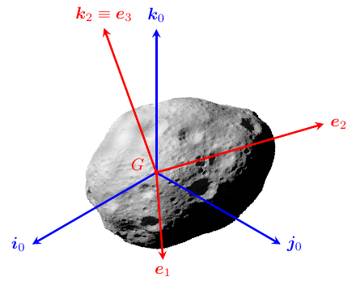
-
(a)
Express the vectors $\mathbf i_b$, $\mathbf j_b$, $\mathbf k_b$ in the vector basis $B_0$ as a function of $\psi$, $\theta$, and $\phi$.
-
(b)
Write down the angular velocity vector of the asteroid, $\boldsymbol\omega_{b0}$, in basis $B_b$ as a function of $\psi$, $\theta$, $\phi$ and their derivatives.
In the following, we shall denote the components of $\boldsymbol\omega_{b0}$ in $B_b$ as $\omega_{xb}$, $\omega_{yb}$, $\omega_{zb}$, and define a point $P$ with position vector $\mathbf r_b^P = x_b\mathbf i_b + y_b\mathbf j_b + z_b\mathbf k_b = \tau\ell(\omega_{xb}\mathbf i_b + \omega_{yb}\mathbf j_b + \omega_{zb}\mathbf k_b)$.
-
(c)
Compute the kinetic energy $T_0^b$ of the asteroid. Demonstrate that $P$ must remain on the surface of a body-fixed ellipsoid at all times. What are the sizes of the semi-axes of this ellipsoid?
-
(d)
Compute the angular momentum vector $\mathbf H^b_{G0}$ of the asteroid. Demonstrate that the component of $\boldsymbol\omega_{b0}$ in the direction of $\mathbf H^b_{G0}$ is constant. Show that $P$ must remain on an invariant plane of $S_0$ at all times, and compute the distance to this plane from $G$.
Since the ellipsoid is body-fixed, it rotates with the same angular velocity vector as the asteroid, and we can study the motion of the asteroid with the ellipsoid only.
-
(e)
Show that the ellipsoid and the plane are tangent at $P$ at all times.
-
(f)
Using the results of previous questions, describe qualitatively the motion of the ellipsoid with respect to the plane.
HINT: An ellipsoid can be expressed as $x^2/a + y^2/b + z^2/c = d$ with $a, b, c, d > 0$.
Worked Solution [ Click to Expand ]
Reference Frames, Bases and Degrees of Freedom
- Physical system: one rigid body, the asteroid $b$, of mass $m$ and centre of mass $G$, floating in space with no force and no torque acting on it.
- Inertial frame: $S_0\{G; \mathcal B_0\}$, with $\mathcal B_0$ made of $\mathbf i_0$, $\mathbf j_0$, $\mathbf k_0$, given as inertial by the statement. With no force the centre of mass moves with constant velocity (first box of the equations of motion), so a frame with origin $G$ and fixed directions is inertial.
- Body frame: $S_b\{G; \mathcal B_b\}$, with $\mathcal B_b$ made of $\mathbf i_b$, $\mathbf j_b$, $\mathbf k_b$ attached to the asteroid. The figure of the statement labels these vectors $\mathbf e_1$, $\mathbf e_2$, $\mathbf e_3$ (read from the figure: $\mathbf e_1$ is $\mathbf i_b$, $\mathbf e_2$ is $\mathbf j_b$, $\mathbf e_3$ is $\mathbf k_b$, and the label of $\mathbf e_3$ says it is also $\mathbf k_2$, the axis of the last rotation).
- Euler angles 1-2-3: $\psi$ about $\mathbf i_0$ gives $\mathcal B_1$; $\theta$ about $\mathbf j_1$ gives $\mathcal B_2$; $\phi$ about $\mathbf k_2$ gives $\mathcal B_b$.
- Degrees of freedom: the three coordinates of $G$ and the three Euler angles. The motion of $G$ is trivial (constant velocity) and $G$ is the origin of $S_0$, so only the three angles remain to be studied.
- Point $P$: the point with position vector from $G$ equal to $\tau\ell$ times the angular velocity, components $x_b$, $y_b$, $z_b$ in $\mathcal B_b$. It moves both in $S_b$ and in $S_0$; since both frames have their origin at $G$, its position vector is the same arrow in both.
| Datum | Symbol | SI unit |
|---|---|---|
| Mass of the asteroid | $m$ | kg |
| Characteristic length and time | $\ell$, $\tau$ | m, s |
| Tensor of inertia at $G$, in $\mathcal B_b$ | $m\ell^2\,\mathrm{diag}(2, 4, 8)$, so $I_x = 2m\ell^2$, $I_y = 4m\ell^2$, $I_z = 8m\ell^2$ | kg m$^2$ |
| Initial angles | $(\psi_0, \theta_0, \phi_0) = (\pi/3, 0, \pi/2)$ | rad |
| Initial rates | $(\dot\psi_0, \dot\theta_0, \dot\phi_0) = (-2, 0, 1)/\tau$ | rad/s |
| Components of the angular velocity in $\mathcal B_b$ | $\omega_{xb}$, $\omega_{yb}$, $\omega_{zb}$ | rad/s |
| Coordinates of $P$ in $\mathcal B_b$ | $x_b = \tau\ell\,\omega_{xb}$, $y_b = \tau\ell\,\omega_{yb}$, $z_b = \tau\ell\,\omega_{zb}$ | m |
Change of Basis, Position Vectors and Constraint Kinematics
View along $\mathbf i_0$ with $\mathbf i_0$ out of the paper (⊙), $\mathbf j_0$ to the right and $\mathbf k_0$ up; this is right-handed because the product of $\mathbf j_0$ and $\mathbf k_0$ is $\mathbf i_0$. A positive $\psi$ turns counterclockwise. Triangle of $\mathbf j_1$: hypotenuse 1, adjacent leg along $\mathbf j_0$ (cosine of $\psi$), opposite leg along $\mathbf k_0$ (sine). Triangle of $\mathbf k_1$: adjacent leg along $\mathbf k_0$ (cosine), opposite leg along minus $\mathbf j_0$ (sine), because the counterclockwise turn carries the tip of $\mathbf k_0$, which points up, to the left.
Units: dimensionless
Meaning: the first turn leaves $\mathbf i_0$ in place and tilts the other two axes in the plane normal to it.
View along $\mathbf j_1$ with $\mathbf j_1$ out of the paper (⊙), $\mathbf k_1$ to the right and $\mathbf i_1$ up; this is right-handed because the product of $\mathbf k_1$ and $\mathbf i_1$ is $\mathbf j_1$. A positive $\theta$ turns counterclockwise. Triangle of $\mathbf k_2$: adjacent leg along $\mathbf k_1$ (cosine of $\theta$), opposite leg along $\mathbf i_1$ (sine), because the counterclockwise turn carries the tip of $\mathbf k_1$, which points right, upwards. Triangle of $\mathbf i_2$: adjacent leg along $\mathbf i_1$ (cosine), opposite leg along minus $\mathbf k_1$ (sine), because the same turn carries the tip of $\mathbf i_1$, which points up, to the left. This is why the minus sign of a rotation about the second axis sits under the diagonal (third row, first column), unlike the rotations about the first and third axes, where it sits above the diagonal.
Units: dimensionless
Meaning: $\theta$ is the angle between $\mathbf k_2$ (the last axis, $\mathbf k_b$) and $\mathbf k_1$; the last relation is used for the angular velocity in part (b).
View along $\mathbf k_2$ with $\mathbf k_2$ out of the paper (⊙), $\mathbf i_2$ to the right and $\mathbf j_2$ up; a positive $\phi$ turns counterclockwise. Triangle of $\mathbf i_b$: adjacent leg along $\mathbf i_2$ (cosine of $\phi$), opposite leg along $\mathbf j_2$ (sine). Triangle of $\mathbf j_b$: adjacent leg along $\mathbf j_2$ (cosine), opposite leg along minus $\mathbf i_2$ (sine), because the counterclockwise turn carries the tip of $\mathbf j_2$, which points up, to the left.
Units: dimensionless
Meaning: the three columns of $[{}_0R_b]$ are the body vectors in $\mathcal B_0$. Each column has unit length; for the third, the sum of the squares is the square of the sine of $\theta$ plus the square of its cosine times the sum of the squares of the sine and cosine of $\psi$, which is 1.
At the initial instant the sine of $\theta$ is 0 and its cosine 1, the sine of $\phi$ is 1 and its cosine 0, the cosine of $\psi$ is one half and its sine is the square root of 3 over 2.
Units: dimensionless
Meaning: at the start the intermediate axis $\mathbf j_b$ points along minus $\mathbf i_0$ and the other two lie in the plane of $\mathbf j_0$ and $\mathbf k_0$; the angular momentum in $\mathcal B_0$ in part (d) uses this matrix.
The rate of $\psi$ acts along $\mathbf i_0$, the rate of $\theta$ along $\mathbf j_1$ and the rate of $\phi$ along $\mathbf k_2$. Each of them is written in $\mathcal B_b$ with the boxes of part (a): $\mathbf k_2$ is $\mathbf k_b$; $\mathbf j_1$ is $\mathbf j_2$; $\mathbf i_0$ is $\mathbf i_1$, written in $\mathcal B_2$ and then in $\mathcal B_b$.
Units: $[\mathrm{T^{-1}}]$ in every component
Meaning: these are the components of the statement, in order the first, second and third components of the angular velocity in $\mathcal B_b$; they enter the momenta because the tensor is known in $\mathcal B_b$.
The rates are the first time derivatives of the angles; at the initial instant they are given, minus 2, 0 and 1 over $\tau$; the sines and cosines are those of the previous box.
Units: $[\mathrm{T^{-1}}]$; $[\mathrm{T}][\mathrm L][\mathrm{T^{-1}}] = [\mathrm L]$
Meaning: the initial angular velocity lies in the plane of $\mathbf j_b$ and $\mathbf k_b$; the cosine of its angle with $\mathbf k_b$ is 1 over the square root of 5 (63.4 degrees) and with $\mathbf j_b$ it is 2 over the square root of 5 (26.6 degrees), so it is geometrically closer to the intermediate axis $\mathbf j_b$. Part (f) shows that it nevertheless circulates about $\mathbf k_b$.
Center of Mass and Inertia Tensor
$G$ is the centre of mass by the statement, and the tensor at $G$ is given in $\mathcal B_b$ with no products of inertia, so $\mathcal B_b$ is a principal basis with $I_x$, $I_y$, $I_z$ equal to 2, 4 and 8 times $m\ell^2$ (minor, intermediate and major axes); the shape is irregular and not described, so there is no integral to set up. The tensor is constant in $\mathcal B_b$ because the basis is attached to the body.
Linear Momentum, Angular Momentum and Kinetic Energy
$G$ is the origin of the inertial frame $S_0$ of the statement, so its velocity in $S_0$ is zero and only the rotational part remains.
Units: $[\mathrm M][\mathrm L^2][\mathrm{T^{-2}}]$, J
Meaning: the energy weighs each component with its principal moment; the initial value comes from the components along $\mathbf j_b$ (16 of the 24 units) and $\mathbf k_b$ (8 units).
Units: $[\mathrm M][\mathrm L^2][\mathrm{T^{-1}}]$
Meaning: the angular momentum is not parallel to the angular velocity (the components 0, 8, 8 against 0, 2, 1); the check of the magnitude in $\mathcal B_0$ gives 64 plus 48 plus 16, which is 128, the square of 8 times the square root of 2.
Free-Body Diagram and Equations of Motion
No force acts on the asteroid (it floats freely in space): the free-body diagram is the body alone, with no load, and the resultant and the moment about $G$ are zero.
The pole of the moment equation is $G$, the centre of mass, so the pole term (the velocity of $G$ times the linear momentum, which is a vector times a multiple of itself) is zero. The angular velocity in the vector product is written with its components in $\mathcal B_b$.
Units: $[\mathrm{M\,L\,T^{-2}}]$ for the force equation; $[\mathrm{T^{-2}}]$ in each of Euler's equations
Meaning: these are Euler's equations with no torque for moments 2, 4 and 8 (each component equation divided by its moment). At the start only the first component changes, and it becomes negative: the tip of the angular velocity leaves the plane of $\mathbf j_b$ and $\mathbf k_b$ towards minus $\mathbf i_b$.
Units: J
Meaning: with no force there is no power, and the energy keeps its initial value; the three terms cancel because 4 minus 8, 8 minus 2 and 2 minus 4 add up to zero.
Each angular velocity component is the matching coordinate of $P$ divided by $\tau\ell$.
Units: $[\mathrm L^2]$ in every term; semi-axes $[\mathrm L]$
Meaning: the coordinates are in $\mathcal B_b$ and the right-hand side is constant, so $P$ stays on an ellipsoid fixed to the asteroid (the inertia ellipsoid of the notes, scaled by $\tau\ell$). The largest moment, along $\mathbf k_b$, gives the shortest semi-axis; the ratios of the semi-axes are the square roots of 4, 2 and 1.
Units: $[\mathrm{M\,L^2\,T^{-2}}]/[\mathrm{M\,L^2\,T^{-1}}] = [\mathrm{T^{-1}}]$
Meaning: the angular velocity changes in direction and size, but its projection on the fixed direction of the angular momentum stays the same, because the energy and the magnitude of the angular momentum are both constant.
Write $\mathbf u_H$ for the unit vector of the angular momentum. It is constant in $S_0$ (first box of this section), and $G$ is the origin of $S_0$.
Units: $[\mathrm T][\mathrm L][\mathrm{T^{-1}}] = [\mathrm L]$
Meaning: the points whose projection on a fixed unit vector has a fixed value form a plane normal to that vector, fixed in $S_0$, at the distance $\delta$ from $G$: this is the invariant plane. The distance lies between the shortest and the intermediate semi-axes (1.732, 2.121 and 2.449 times $\ell$), which the plane needs in order to touch the ellipsoid (it only requires a value between the shortest and the longest); being below the intermediate semi-axis is what puts the polhode around the major axis, and part (f) uses this order.
Write the ellipsoid of part (c) as $F$ equal to $12\ell^2$, with $F$ the sum of the square of $x_b$, twice the square of $y_b$ and four times the square of $z_b$. Its normal at $P$ is the gradient of $F$ there; the plane of part (d) has the normal $\mathbf u_H$. $P$ lies on both surfaces (parts (c) and (d)). For the last rows, $Q$ is any point of the ellipsoid with coordinates $x$, $y$, $z$, and the inequality is the Cauchy-Schwarz inequality for the inner product with weights 1, 2 and 4.
Units: $[\mathrm L]$ for the gradient, and $[\mathrm T][\mathrm{M\,L^2\,T^{-1}}]/([\mathrm M][\mathrm L]) = [\mathrm L]$ for its expression; $[\mathrm L][\mathrm{M\,L^2\,T^{-1}}]$ on both sides of the inequality
Meaning: at $P$ the normal of the ellipsoid and the normal of the plane are the same direction, which is the statement of the key; the surfaces share the point and the tangent plane, so they are tangent there. The inequality adds that the whole ellipsoid stays on the side of the plane where $G$ is: the plane touches it at $P$ and never cuts it.
Part (f): motion of the ellipsoid on the plane
The material point of the asteroid (or of its ellipsoid) that is at $P$ at a given instant has the velocity of the field of the body at that position; $G$ is at rest in $S_0$.
Units: $[\mathrm{L\,T^{-1}}]$
Meaning: $P$ lies on the instantaneous axis of rotation (the line through $G$ along the angular velocity), so the body point in contact is at rest at every instant. The contact point moves over the ellipsoid along a body-fixed curve (the polhode) and over the plane along a curve fixed in $S_0$ (the herpolhode).
In units of the inverse of $\tau$, the energy gives the first row and the square of the magnitude of the angular momentum (divided by the square of $m\ell^2$) gives the second; the other rows combine them to remove one component at a time.
Units: $[\mathrm{T^{-2}}]$ in every row (the factors of $\tau$ restored)
Meaning: the third component of the angular velocity never vanishes and keeps the sign it had at the start (positive), so the polhode is a closed curve around plus $\mathbf k_b$, the major axis of inertia (shortest semi-axis of the ellipsoid), whose projection on the plane of $\mathbf i_b$ and $\mathbf j_b$ is the ellipse of the boxed equation. The initial angular velocity sits on it at the end of the $\mathbf j_b$ semi-axis of that ellipse, where the third component takes its smallest value, 1 over $\tau$. The motion is not a rotation about the intermediate axis: the second row minus 4 times the first is 32, positive, which is the sign of a polhode about the major axis (zero would be the separatrix through the intermediate axis). The polhode does not pass through any principal axis, where the right-hand sides of Euler's equations would all vanish, so the tip of the angular velocity never stops on it and travels round it periodically, in the sense from plus $\mathbf j_b$ towards minus $\mathbf i_b$ found in Euler's equations at the start.
Let $N$ be the foot of the perpendicular from $G$ to the invariant plane. In the right triangle $GNP$ the hypotenuse is the distance from $G$ to $P$, one leg is $\delta$ (along $\mathbf u_H$) and the other leg, $\rho$, lies in the plane. The magnitude of the angular velocity is written with the rows of the polhode box.
Units: $[\mathrm L^2]$ in every row of $\rho^2$
Meaning: the contact point moves on the plane between two circles centred at $N$, of radii 0.707 and 1.581 times $\ell$. It starts on the inner circle (the third component of the angular velocity is then smallest) and touches the outer one when the second component vanishes. Whether the herpolhode closes depends on the ratio of the period of the polhode to the turn of the contact point about $N$; in general it does not (extension, not shown here).
Answers and Checks
| Asked | Answer |
|---|---|
| (a) Body basis in $\mathcal B_0$ | $\mathbf i_b = c_\theta c_\phi\,\mathbf i_0 + (c_\psi s_\phi + s_\psi s_\theta c_\phi)\mathbf j_0 + (s_\psi s_\phi - c_\psi s_\theta c_\phi)\mathbf k_0$; $\mathbf j_b = -c_\theta s_\phi\,\mathbf i_0 + (c_\psi c_\phi - s_\psi s_\theta s_\phi)\mathbf j_0 + (s_\psi c_\phi + c_\psi s_\theta s_\phi)\mathbf k_0$; $\mathbf k_b = s_\theta\,\mathbf i_0 - s_\psi c_\theta\,\mathbf j_0 + c_\psi c_\theta\,\mathbf k_0$; initially $\mathbf i_b = \tfrac12\mathbf j_0 + \tfrac{\sqrt3}2\mathbf k_0$, $\mathbf j_b = -\mathbf i_0$, $\mathbf k_b = -\tfrac{\sqrt3}2\mathbf j_0 + \tfrac12\mathbf k_0$ |
| (b) Angular velocity in $\mathcal B_b$ | $\omega_{xb} = \dot\psi c_\theta c_\phi + \dot\theta s_\phi$, $\omega_{yb} = -\dot\psi c_\theta s_\phi + \dot\theta c_\phi$, $\omega_{zb} = \dot\psi s_\theta + \dot\phi$; initially $(0, 2, 1)/\tau$ |
| (c) Kinetic energy and ellipsoid | $T_0^b = m\ell^2(\omega_{xb}^2 + 2\omega_{yb}^2 + 4\omega_{zb}^2) = 12\,m\ell^2/\tau^2$ (constant); $x_b^2/12 + y_b^2/6 + z_b^2/3 = \ell^2$, semi-axes $2\sqrt3\,\ell$, $\sqrt6\,\ell$, $\sqrt3\,\ell$ along $\mathbf i_b$, $\mathbf j_b$, $\mathbf k_b$ |
| (d) Angular momentum and invariant plane | $\mathbf H_{G0}^b = m\ell^2(2\omega_{xb}\mathbf i_b + 4\omega_{yb}\mathbf j_b + 8\omega_{zb}\mathbf k_b) = (m\ell^2/\tau)(-8\mathbf i_0 - 4\sqrt3\mathbf j_0 + 4\mathbf k_0)$, magnitude $8\sqrt2\,m\ell^2/\tau$; component of $\boldsymbol\omega_{b0}$ along it, twice the kinetic energy over the magnitude of the angular momentum, $3\sqrt2/(2\tau)$; plane normal to $\mathbf H_{G0}^b$ at the distance $\delta = 3\sqrt2\,\ell/2 \approx 2.121\,\ell$ from $G$ |
| (e) Tangency | $\nabla F$ at $P$ is $(\tau/m\ell)\,\mathbf H_{G0}^b$, the normal of the plane; the ellipsoid lies on the side of $G$ |
| (f) Motion | The ellipsoid rolls without slipping on the invariant plane with $G$ fixed; polhode $3\omega_{xb}^2 + 4\omega_{yb}^2 = 16/\tau^2$ around $+\mathbf k_b$ (major axis of inertia, not the intermediate one), with $\tau\omega_{zb}$ between 1 and 1.291; initial $\boldsymbol\omega_{b0}$ 26.6 degrees from $\mathbf j_b$, on the polhode, at its point on the $\mathbf j_b$ side; herpolhode between the circles of radii $0.707\,\ell$ and $1.581\,\ell$ about the foot $N$ of the perpendicular from $G$ |
Check against the official key: the key (Problems.pdf, p. 81) prints only, for part (e), that the ellipsoid and the plane are tangent if their normals at $P$ coincide. Part (e) shows exactly that: the gradient of the ellipsoid at $P$ is a positive multiple of the angular momentum, which is the normal of the invariant plane. Match. The key gives no numbers for the other parts.
- Order of the distances. The distance of the plane lies between the shortest and the intermediate semi-axes, so the contact point stays on the side of the shortest semi-axis: its direction keeps between about 61 and 63 degrees of $\mathbf k_b$ and encircles that axis, which agrees with the polhode about $\mathbf k_b$.
- Separatrix. If the square of the magnitude of the angular momentum equalled 4 times twice the energy (in the units of the polhode box, 96 instead of 128), the polhode would pass through the intermediate axis; this motion is away from that case by 32.
- Dimensions. The semi-axes and the distance of the plane are lengths; the component of the angular velocity along the angular momentum is a rate.
Interactive geometry simulator: it needs JavaScript. The figures above show the same geometry.
An aircraft $a$ is equipped with a rate gyroscope, which consists of a spinning disk $d$ mounted on a single gimbal $b$, which is in turn attached to the aircraft chassis as shown in the figure. Each of these elements can be considered to be a rigid body. The principal moments of inertia of the disk about its center of mass $G$ are $2I$ along its axis of spin, and $I$ along the perpendicular directions. The gimbal has negligible mass and moments of inertia. The figure defines the nutation angle $\theta$ and the spin angle $\phi$. Moreover, it defines the aircraft-fixed $S_a$, the gimbal-fixed $S_b$ (simple rotation of angle $\theta$ with respect to $S_a$), and the disk-fixed $S_d$ reference frames (simple rotation of angle $\phi$ with respect to $S_b$). We shall denote an arbitrary inertial reference frame as $S_0$ (not shown). There is a torsional spring which exerts a restoring torque on the gimbal proportional to angle $\theta$, with constant of proportionality $k$. Additionally, there is a a [sic] torsional damper which exerts a damping torque on the gimbal proportional to $\dot\theta$, with constant of proportionality $\lambda$. The aircraft performs a known yaw maneuver with angular velocity $\boldsymbol\omega_{a0} = \Omega(t)\mathbf k_a$.
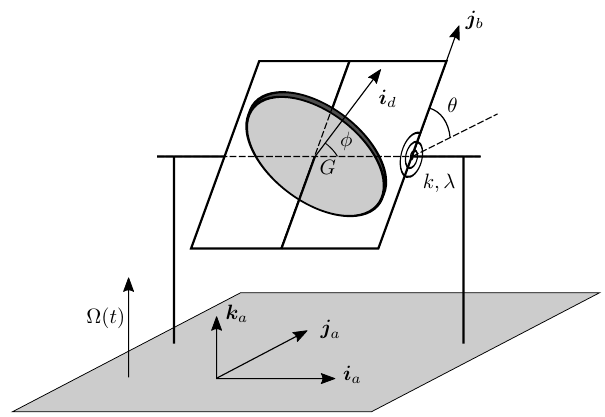
-
(a)
Express the vectors of the bases of $S_b$ and $S_d$ as a function of the vectors of the basis of $S_a$ and the angles $\theta$, $\phi$.
-
(b)
Obtain the general expressions for the angular velocity and angular acceleration of $S_b$ and $S_d$ with respect to the inertial reference frame, $S_0$.
-
(c)
Identify all the torques acting on the rigid bodies of the problem and provide their general mathematical expression.
-
(d)
Derive the equations of motion for $\theta$ and $\phi$ as a function of the parameters of the problem. No other unknowns shall appear in the equations.
-
(e)
Prove that the component of the angular momentum of the disk about its spin axis is a constant of motion.
In the following, assume that $\Omega \ll \dot\phi$ and that $k, \lambda$ are chosen so that $\theta$ remains small ($\theta \ll 1$) during the maneuver.
-
(f)
Linearize the equation of motion of $\theta$ under these assumptions. What is the relation between $\Omega$ and $\theta$ when $\Omega$ is constant?
-
(g)
Using the linearized equation of motion, find out the value of $\lambda$ for the system to be critically damped, as a function of the rest of parameters of the problem.
Worked Solution [ Click to Expand ]
Reference Frames, Bases and Degrees of Freedom
- Physical system: three rigid bodies. The aircraft $a$, whose motion is prescribed; the gimbal $b$, of negligible mass and moments of inertia, turning about an axis fixed in the aircraft; the disk $d$, of centre of mass $G$, spinning about an axle fixed in the gimbal, with principal moments $2I$ about the axle and $I$ about any perpendicular axis through $G$. A torsional spring (constant $k$) and a torsional damper (constant $\lambda$) act between the aircraft and the gimbal about the gimbal axis.
- Inertial frame: $S_0$, arbitrary, not shown in the figure.
- Aircraft frame: $S_a\{G; \mathcal B_a\}$, with $\mathcal B_a$ made of $\mathbf i_a$, $\mathbf j_a$, $\mathbf k_a$ as in the figure ($\mathbf k_a$ is the yaw axis). Its angular velocity relative to $S_0$ is the known yaw rate $\Omega$ along $\mathbf k_a$. Its origin is placed at $G$, which lies on the gimbal axis and on the spin axle, so $G$ is a point fixed in the aircraft.
- Gimbal frame: $S_b\{G; \mathcal B_b\}$, simple rotation $\theta$ about the gimbal axis.
- Disk frame: $S_d\{G; \mathcal B_d\}$, simple rotation $\phi$ about the spin axle.
- Reading of the figure (axes): the gimbal axis is the horizontal bar that carries the spring and the damper, drawn parallel to $\mathbf i_a$, so the first rotation is about $\mathbf i_a$, which equals $\mathbf i_b$. The angle $\theta$ is drawn at the bearing between a dashed line parallel to $\mathbf j_a$ and $\mathbf j_b$. The middle bar of the gimbal frame, parallel to $\mathbf j_b$, passes through $G$ and is drawn dashed behind the disk: it is read as the spin axle, so the spin axis is $\mathbf j_b$, which equals $\mathbf j_d$, and $\phi$ is the angle drawn in the plane of the disk between the dashed gimbal axis through $G$ (along $\mathbf i_b$) and $\mathbf i_d$. With the other possible reading (disk lying in the plane of the gimbal frame, spin about $\mathbf k_b$) the gyroscopic term of the gimbal equation would carry the sine of $\theta$ instead of its cosine, so it would vanish at small $\theta$ and the device would not measure the yaw rate; the reading used here is the one that makes it a rate gyroscope.
- Reading of the figure (senses): $\mathbf j_b$ is drawn above the dashed line, towards $\mathbf k_a$, which is the positive sense of a rotation about $\mathbf i_a$ by the right-hand rule. The figure marks the angle $\phi$ but no sense of turning (its drawing suggests the opposite sense); it is taken positive by the right-hand rule about $\mathbf j_b$. The opposite sense would replace $\phi$ by minus $\phi$ in every formula below.
- Coordinates and degrees of freedom: the motion of the aircraft is known (yaw rate $\Omega$, and a translation that does not enter the moment equations about $G$). The gimbal turns only about its axis (one coordinate, $\theta$) and the disk only about its axle relative to the gimbal (one coordinate, $\phi$): two degrees of freedom, $\theta$ and $\phi$.
| Datum | Symbol | SI unit |
|---|---|---|
| Principal moments of the disk at $G$ | $2I$ about the spin axle, $I$ about perpendicular axes | kg m$^2$ |
| Mass and moments of the gimbal | negligible | |
| Spring constant (torque per angle) | $k$ | N m/rad |
| Damper constant (torque per angular rate) | $\lambda$ | N m s/rad |
| Yaw rate of the aircraft, known | $\Omega(t)$, along $\mathbf k_a$ | rad/s |
| Coordinates | $\theta$ (gimbal), $\phi$ (spin) | rad |
Change of Basis, Position Vectors and Constraint Kinematics
View along the gimbal axis with $\mathbf i_a$ out of the paper (⊙), $\mathbf j_a$ to the right and $\mathbf k_a$ up; this is right-handed because the product of $\mathbf j_a$ and $\mathbf k_a$ is $\mathbf i_a$. A positive $\theta$ turns counterclockwise. Triangle of $\mathbf j_b$: hypotenuse 1, adjacent leg along $\mathbf j_a$ (cosine of $\theta$), opposite leg along $\mathbf k_a$ (sine). Triangle of $\mathbf k_b$: adjacent leg along $\mathbf k_a$ (cosine), opposite leg along minus $\mathbf j_a$ (sine), because the counterclockwise turn carries the tip of $\mathbf k_a$, which points up, to the left.
Units: dimensionless
Meaning: at zero $\theta$ the spin axle $\mathbf j_b$ is along $\mathbf j_a$, normal to the yaw axis; a positive $\theta$ lifts it towards $\mathbf k_a$. The last relation writes the yaw axis in the gimbal basis for part (b).
View along the spin axle with $\mathbf j_b$ out of the paper (⊙), $\mathbf k_b$ to the right and $\mathbf i_b$ up; this is right-handed because the product of $\mathbf k_b$ and $\mathbf i_b$ is $\mathbf j_b$. A positive $\phi$ turns counterclockwise. Triangle of $\mathbf k_d$: adjacent leg along $\mathbf k_b$ (cosine of $\phi$), opposite leg along $\mathbf i_b$ (sine), because the counterclockwise turn carries the tip of $\mathbf k_b$, which points right, upwards. Triangle of $\mathbf i_d$: adjacent leg along $\mathbf i_b$ (cosine), opposite leg along minus $\mathbf k_b$ (sine), because the same turn carries the tip of $\mathbf i_b$, which points up, to the left.
Units: dimensionless
Meaning: the columns of $[{}_aR_d]$ are the disk vectors in $\mathcal B_a$; the second column is the axle, the same as $\mathbf j_b$, because the spin does not move it.
The aircraft turns about $\mathbf k_a$ at the rate $\Omega$, the gimbal turns relative to it about $\mathbf i_b$ at the rate of $\theta$, the disk relative to the gimbal about $\mathbf j_b$ at the rate of $\phi$. The yaw axis is written in $\mathcal B_b$ with the last relation of the first box.
Units: $[\mathrm{T^{-1}}]$ in every component
Meaning: the gimbal and the disk differ only by the spin about the axle. The disk vectors are not used for the components: the disk is symmetric about its axle, so its tensor is constant in $\mathcal B_b$ (inertia section), and $\mathcal B_b$ is the convenient basis.
The frame $S_b$ turns with $\boldsymbol\omega_{b0}$. Each component of the previous box is differentiated with the product rule and the chain rule; for instance the derivative of $\Omega\sin\theta$ is the rate of $\Omega$ times the sine of $\theta$ plus $\Omega$ times the derivative of the sine, which is its cosine times the rate of $\theta$.
Units: $[\mathrm{T^{-2}}]$ in every term
Meaning: the gimbal acceleration is the derivative of its components alone, because $\mathcal B_b$ turns with the gimbal itself. The disk gains two transport terms from the spin: the axle is carried round by the gimbal, which turns the spin vector.
Center of Mass and Inertia Tensor
The statement gives the principal moments at $G$ in $\mathcal B_d$: $2I$ along $\mathbf j_d$, $I$ along $\mathbf i_d$ and $\mathbf k_d$. The integrals of the last rows only check the ratio 2 for a thin homogeneous disk, of surface density $\sigma$ and radius $a$ (neither is given; both cancel in the ratio), with polar coordinates $(\rho, \chi)$ in its plane, $\chi$ measured from $\mathbf i_d$; the squared distance to the axle is the square of $\rho$, to the diameter along $\mathbf i_d$ the square of $\rho\sin\chi$.
Units: $[\mathrm M][\mathrm L^2]$
Meaning: the tensor does not depend on $\phi$, so it is constant in the gimbal basis, which does not spin with the disk; the ratio 2 of the statement is that of a thin disk. $G$ is the centre of mass of the disk and the gimbal carries no mass, so the moment equations below are written at $G$.
Linear Momentum, Angular Momentum and Kinetic Energy
Units: $[\mathrm M][\mathrm L^2][\mathrm{T^{-1}}]$
Meaning: the axial part, twice $I$ times the spin measured in $S_0$, dominates when the disk spins fast; the transverse part comes from the nutation rate and from the yaw rate projected on $\mathbf k_b$. The kinetic energy is not needed: the problem is solved with the moment equations.
Free-Body Diagram and Equations of Motion
Part (c): loads on each body
The exploded view separates the disk, the gimbal and the aircraft. The spin axle joins the disk to the gimbal along $\mathbf j_b$ through $G$; the gimbal bearings join the gimbal to the aircraft along $\mathbf i_b$ through $G$; the spring and the damper act between the aircraft and the gimbal about the same axis. Both bearings are ideal (no friction torque about their own axis) and there is no motor on the spin axle. Every reaction is reduced at $G$ to a force and a moment. Write $\mathbf F_{bd}$ and $\mathbf M_{bd}$ for the force and moment of the gimbal on the disk, $\mathbf F_{ab}$ and $\mathbf M_{ab}$ for those of the aircraft on the gimbal at its bearings, and $m_d$ for the mass of the disk (not given; it enters only the force equations).
| Load | Body | Point | Expression | Kind |
|---|---|---|---|---|
| Weight of the disk | $d$ | $G$ | $m_d\,\mathbf g$ | applied |
| Gimbal on the disk (spin axle) | $d$ | $G$ | $\mathbf F_{bd}$, three components; $\mathbf M_{bd} = M_1\,\mathbf i_b + M_3\,\mathbf k_b$, none along $\mathbf j_b$ | constraint (pair) |
| Disk on the gimbal (spin axle) | $b$ | $G$ | $-\mathbf F_{bd}$ and $-\mathbf M_{bd}$ | constraint (pair) |
| Aircraft on the gimbal (bearings) | $b$ | $G$ | $\mathbf F_{ab}$, three components; $\mathbf M_{ab} = N_2\,\mathbf j_b + N_3\,\mathbf k_b$, none along $\mathbf i_b$ | constraint (pair) |
| Spring on the gimbal | $b$ | axis | $-k\theta\,\mathbf i_b$ | applied (pair) |
| Damper on the gimbal | $b$ | axis | $-\lambda\dot\theta\,\mathbf i_b$ | applied (pair) |
| Gimbal on the aircraft | $a$ | $G$ and axis | $-\mathbf F_{ab}$, $-\mathbf M_{ab}$, $+k\theta\,\mathbf i_b$, $+\lambda\dot\theta\,\mathbf i_b$ | pairs |
| Loads that drive the aircraft | $a$ | whatever produces the prescribed motion | not needed |
Take a bearing force $\mathbf F$ with components $F_1$, $F_2$, $F_3$ in $\mathcal B_b$, applied at a point of the spin axle at the distance $s$ from $G$, that is at $s\,\mathbf j_b$; an ideal bearing transmits only such forces (no friction torque about the axle).
Units: N m
Meaning: summed over all the points of a bearing, the moment about $G$ of its forces is normal to the bearing axis. The only torques about the gimbal axis are the spring and the damper; about the spin axle there is none.
The gimbal has zero linear momentum and zero angular momentum about $G$ at every instant, so their derivatives vanish, and so does the pole term at $G$. The resultant moment about $G$ on the gimbal is the sum of the moments of the table, projected on $\mathcal B_b$.
Units: N m; N
Meaning: the massless gimbal passes the spring and damper torque straight to the disk; the moment along $\mathbf k_b$ is a bearing reaction $M_3$, found in part (d). The total torque about $G$ on the disk is $\mathbf M_{bd}$, since its weight acts at $G$.
Part (d): equations of motion
The pole is $G$, the centre of mass of the disk: the pole term, the velocity of $G$ times the momentum of the disk (its mass times the same velocity), is zero even though $G$ is carried by the aircraft. Write $n$ for the spin of the disk measured in $S_0$, the second component of its angular velocity, $\Omega\sin\theta$ plus the rate of $\phi$.
Units: N m in the first and third equations; $[\mathrm{T^{-2}}]$ in the second
Meaning: three scalar equations for $\theta$, $\phi$ and the bearing moment $M_3$: the first two are the equations of motion, with only $\theta$, $\phi$, the known $\Omega$ and the data $I$, $k$, $\lambda$; the third gives the reaction (the $\mathbf k_b$ equation simplifies because the two terms in the sine of $\theta$ cancel against part of the $n$ term). The term in the product of $\Omega$, the spin rate and the cosine of $\theta$ is the gyroscopic torque that the turning aircraft imposes on the spinning disk about the gimbal axis. The force equation of the disk gives the axle force, which needs the translation of the aircraft and is not asked.
The axle $\mathbf j_b$ turns with the gimbal, so its derivative in $S_0$ is the angular velocity of the gimbal times $\mathbf j_b$ (vector product computed in part (b), divided by the rate of $\phi$).
Units: $[\mathrm M][\mathrm L^2][\mathrm{T^{-1}}]$
Meaning: the spin angular momentum is a constant of motion although the axle turns, for two reasons: the moment about the axle is zero (ideal bearing, weight through $G$), and the gyroscopic part vanishes because the two transverse moments of the disk are equal, so the transverse angular momentum stays in the plane of the transverse angular velocity. This is the second equation of part (d) integrated once. With it the equation of $\theta$ can also be written with the constant $n_0$ in place of the rate of $\phi$: the rate of $\phi$ is $n_0$ minus $\Omega$ times the sine of $\theta$.
Units: N m in every term
Meaning: one equation for $\theta$ alone, forced by the yaw rate through the constant spin angular momentum $2In_0$.
Parts (f) and (g): linearized equation, steady reading and critical damping
With $\theta$ small, the sine of $\theta$ is $\theta$ and its cosine is 1 to first order. With $\Omega$ small compared with the spin, $n_0$ and the rate of $\phi$ differ by $\Omega$ times the sine of $\theta$, a small fraction of either. The term in the square of $\Omega$ is compared with the forcing term.
Units: N m in every term
Meaning: a damped linear oscillator about the gimbal axis, forced by the yaw rate times the spin angular momentum. The dropped term is also small compared with the spring term when $\theta$ follows the forcing (next box: there the spring term equals the forcing, so the same ratio applies).
With $\Omega$ constant, try a constant $\theta_s$: its first and second derivatives are zero. The homogeneous equation has solutions with the exponential of $st$, with $s$ a root of the characteristic polynomial; with $I$, $k$, $\lambda$ positive both roots have a negative real part (their sum is minus $\lambda$ over $I$, their product $k$ over $I$), so the homogeneous part dies out and $\theta$ tends to $\theta_s$.
Units: $[\mathrm M\,\mathrm L^2][\mathrm{T^{-1}}][\mathrm{T^{-1}}]/[\mathrm{M\,L^2\,T^{-2}}] = 1$ (rad)
Meaning: the steady gimbal angle is proportional to the yaw rate: reading $\theta$ measures $\Omega$, which is what a rate gyro does. The sensitivity grows with the spin angular momentum and falls with the stiffness. With positive $\Omega$ and positive spin, $\theta_s$ is positive: the axle tilts towards $\mathbf k_a$; the check below confirms this sign with the angular momentum.
The system is critically damped when the two roots of the previous box coincide, that is when the discriminant is zero; below that value of $\lambda$ the roots are complex (damped oscillation), above it they are real and distinct (overdamped).
Units: $\sqrt{[\mathrm{M\,L^2\,T^{-2}}][\mathrm{M\,L^2}]} = [\mathrm{M\,L^2\,T^{-1}}]$, the units of a torque per angular rate (N m s)
Meaning: with this damping (the double root) the gimbal reaches the steady reading without overshoot and, by a standard result of the course on the damped oscillator, faster than with any other damping that avoids overshoot, with the time scale of the square root of $I$ over $k$; it does not depend on the spin or on the yaw rate, because in the linearized equation they appear only in the forcing.
Answers and Checks
| Asked | Answer |
|---|---|
| (a) Bases of $S_b$ and $S_d$ in $\mathcal B_a$ | $\mathbf i_b = \mathbf i_a$, $\mathbf j_b = \cos\theta\,\mathbf j_a + \sin\theta\,\mathbf k_a$, $\mathbf k_b = -\sin\theta\,\mathbf j_a + \cos\theta\,\mathbf k_a$; $\mathbf i_d = \cos\phi\,\mathbf i_a + \sin\theta\sin\phi\,\mathbf j_a - \cos\theta\sin\phi\,\mathbf k_a$, $\mathbf j_d = \mathbf j_b$, $\mathbf k_d = \sin\phi\,\mathbf i_a - \sin\theta\cos\phi\,\mathbf j_a + \cos\theta\cos\phi\,\mathbf k_a$ |
| (b) Angular velocities and accelerations | $\boldsymbol\omega_{b0} = \dot\theta\,\mathbf i_b + \Omega\sin\theta\,\mathbf j_b + \Omega\cos\theta\,\mathbf k_b$, $\boldsymbol\omega_{d0} = \boldsymbol\omega_{b0} + \dot\phi\,\mathbf j_b$; $\boldsymbol\alpha_{b0} = \ddot\theta\,\mathbf i_b + (\dot\Omega\sin\theta + \Omega\dot\theta\cos\theta)\mathbf j_b + (\dot\Omega\cos\theta - \Omega\dot\theta\sin\theta)\mathbf k_b$, $\boldsymbol\alpha_{d0} = (\ddot\theta - \Omega\dot\phi\cos\theta)\mathbf i_b + (\dot\Omega\sin\theta + \Omega\dot\theta\cos\theta + \ddot\phi)\mathbf j_b + (\dot\Omega\cos\theta - \Omega\dot\theta\sin\theta + \dot\phi\dot\theta)\mathbf k_b$ |
| (c) Torques | On the gimbal: spring $-k\theta\,\mathbf i_b$, damper $-\lambda\dot\theta\,\mathbf i_b$, bearing moment of the aircraft $\mathbf M_{ab}$ normal to $\mathbf i_b$ (found $M_3\,\mathbf k_b$), spin-axle moment of the disk $-\mathbf M_{bd}$; on the disk: $\mathbf M_{bd} = -(k\theta + \lambda\dot\theta)\mathbf i_b + M_3\,\mathbf k_b$ (none along the axle), weight and axle force through $G$ (no moment); on the aircraft: the opposite pairs |
| (d) Equations of motion | $I\ddot\theta + \lambda\dot\theta + k\theta - I\Omega^2\sin\theta\cos\theta - 2I\Omega\dot\phi\cos\theta = 0$; $\ddot\phi + \dot\Omega\sin\theta + \Omega\dot\theta\cos\theta = 0$; reaction $M_3 = I\dot\Omega\cos\theta + 2I\dot\phi\dot\theta$ |
| (e) Constant of motion | $\mathbf H_G^d\cdot\mathbf j_b = 2I(\Omega\sin\theta + \dot\phi) = 2In_0$ |
| (f) Linearized equation and steady relation | $I\ddot\theta + \lambda\dot\theta + k\theta = 2I\dot\phi\,\Omega(t)$; for constant $\Omega$, $\theta \to \theta_s = 2I\dot\phi\,\Omega/k$, i.e. $\Omega = k\theta_s/(2I\dot\phi)$ |
| (g) Critical damping | $\lambda_c = 2\sqrt{kI}$ |
Limiting cases and consistency: the key prints no answer for this problem (Problems.pdf, pp. 77 to 81 checked).
In the steady state with small $\theta$ the angular momentum of the disk is, to leading order, $2I$ times the spin along $\mathbf j_b$, close to $\mathbf j_a$, a vector fixed in the aircraft; it is carried round by the yaw rate.
Units: rad
Meaning: to turn the spin angular momentum with the aircraft, the disk needs a torque along minus $\mathbf i_a$; the spring gives it only when $\theta$ is positive (for positive spin and yaw rate), so the axle tilts towards $\mathbf k_a$, as found from the linearized equation.
- No yaw rate. With $\Omega$ zero the equation of $\theta$ is a free damped oscillator and $\theta$ returns to zero; the second equation leaves the rate of $\phi$ constant.
- No spin. With the spin integral $n_0$ zero, the forcing of the linearized equation vanishes: a disk that does not spin gives no reading, the instrument works through the gyroscopic term only.
- Exact equation. Before linearizing, the equation of $\theta$ also carries the term in the square of $\Omega$; by the ratio of part (f) it is smaller than the forcing by the product of $\theta$ and the ratio of $\Omega$ to the spin.
- Dimensions. Every term of the equation of $\theta$ is a torque (N m); the steady angle is dimensionless; the critical damping is a torque per angular rate.
Interactive geometry simulator: it needs JavaScript. The figures above show the same geometry.